Jour 01PDF p. 4–7Découpler l’application mobile des services backend
Illustration de la question du jour 1 · p. 4
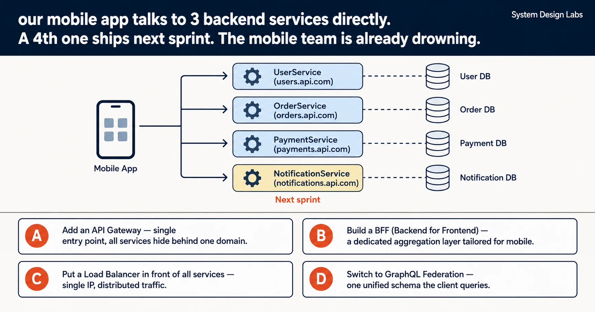
Transcription française des légendes
- L’application mobile communique directement avec trois services backend. Un quatrième arrive au prochain sprint.
- Application mobile → UserService (users.api.com) → base utilisateurs.
- Application mobile → OrderService (orders.api.com) → base commandes.
- Application mobile → PaymentService (payments.api.com) → base paiements.
- Prochain sprint : Application mobile → NotificationService (notifications.api.com) → base notifications.
- A. Passerelle API : un seul point d’entrée, un domaine pour tous les services.
- B. BFF (Backend for Frontend) : agrégation dédiée à l’application mobile.
- C. Répartiteur de charge : une seule adresse IP, trafic distribué.
- D. Fédération GraphQL : le client interroge un schéma unifié.
Notre application mobile communique directement avec trois services backend.
Un quatrième service doit sortir au prochain sprint. L’équipe mobile est déjà débordée.
Chaque nouveau service ajoute un domaine à autoriser, un mécanisme d’authentification à intégrer et un format d’erreur à interpréter. On vous demande de réduire le couplage avant l’arrivée de NotificationService.
Voici la configuration.
Mobile → UserService (users.api.com)
Mobile → OrderService (orders.api.com)
Mobile → PaymentService (payments.api.com)
…et NotificationService au prochain sprint.
Le client assure le routage que devrait prendre en charge le backend. Quelle solution choisissez-vous ?
Ajouter une passerelle API. Tous les services passent derrière un même domaine, qui devient le point d’entrée unique.
Construire un BFF (Backend for Frontend), une couche d’agrégation dédiée à l’application mobile.
Placer un répartiteur de charge devant l’ensemble des services. Le trafic est distribué derrière une même adresse IP.
Adopter la fédération GraphQL pour que le client interroge un schéma unifié.
Afficher la réponse et les explications
Réponse indiquée par l’auteur : A
Explication 1
Schéma de l’explication 1 · p. 6
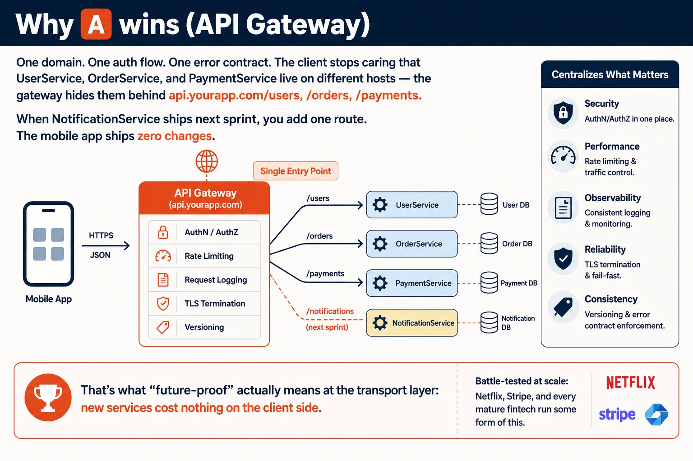
Transcription française des légendes
- L’application mobile contacte la passerelle API sur api.yourapp.com via HTTPS et échange du JSON.
- /users → UserService et sa base. /orders → OrderService et sa base. /payments → PaymentService et sa base.
- /notifications → NotificationService et sa base, à partir du prochain sprint. Une route à ajouter, sans mise à jour de l’application.
- Sécurité : authentification et autorisation au même endroit. Performance : limitation de débit et contrôle du trafic.
- Observabilité : journalisation et supervision cohérentes. Fiabilité : terminaison TLS et échec rapide.
- Cohérence : versionnement et application d’un contrat d’erreur commun.
- Approche employée à grande échelle, notamment chez Netflix, Stripe et les fintechs matures.
Pourquoi retenir A, la passerelle API ?
Un seul domaine, un seul parcours d’authentification et un format d’erreur commun. Le client n’a plus à savoir que UserService, OrderService et PaymentService tournent sur des hôtes différents. La passerelle les expose derrière api.yourapp.com/users, /orders et /payments. À l’arrivée de NotificationService, il suffit d’ajouter une route. Aucun changement à livrer côté mobile. C’est ce qui rend cette couche de transport évolutive : brancher un service supplémentaire ne coûte rien au client.
On centralise aussi les fonctions qu’on veut éviter de disperser dans quatre bases de code : authentification et autorisation (authN/authZ), limitation de débit, journalisation des requêtes, terminaison TLS et versionnement. Netflix, Stripe et les fintechs bien établies utilisent des variantes de cette approche.
Explication 2
Pourquoi B est tentant, avec un BFF
Le BFF est un patron valable et suffisamment proche du besoin pour tromper des ingénieurs expérimentés. Il sert à adapter la forme des données à chaque type de client. Le mobile veut une réponse légère, le Web peut en recevoir une plus riche. Chaque client a son backend pour agréger et remodeler les données.
Le problème ici vient de la multiplication des domaines et du couplage. Avec un BFF, on troque quatre URL contre une URL et un service supplémentaire à exploiter de bout en bout. Le compromis ne vaut pas la peine dans ce cas.
Explication 3
Pourquoi C ne convient pas, avec un répartiteur de charge
Un répartiteur de charge distribue le trafic entre les instances identiques d’un service. Il ne choisit pas entre des services distincts exposés sur différents domaines. Devant UserService et OrderService, un simple répartiteur ne sait pas envoyer /orders d’un côté et /users de l’autre. Ce routage de couche applicative est précisément le rôle de la passerelle API.
Explication 4
Pourquoi D ne convient pas ici, avec la fédération GraphQL
La fédération GraphQL unifie les schémas. Le couplage au niveau du transport reste à résoudre. Il faudrait une passerelle devant la fédération et réécrire chacun des services backend pour exposer un sous-graphe GraphQL. Cela représente plusieurs trimestres de migration pour un problème qu’une passerelle règle en un sprint.
Éliminer le problème des requêtes N+1
Illustration de la question du jour 2 · p. 8
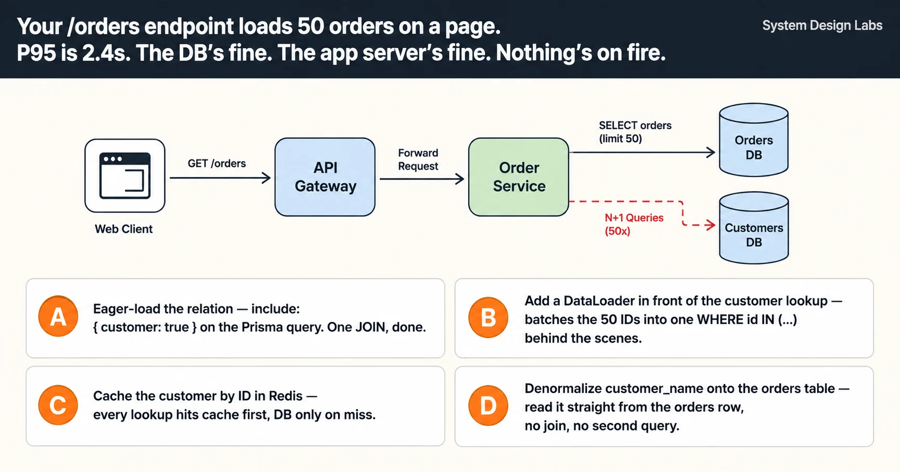
Transcription française des légendes
- System Design Labs
- Votre /
- rders endpoint charge 50 commandes sur une page
- P95 est 2.4s. La base de données va bien. Le serveur d'applications va bien. Rien n'est en feu.
- SÉLECTIONNER les commandes
- (limite 50)
- Commandes
- En avant
- DB
- coe
- N+1 Requêtes
- Web Client
- > — Clients
- (50x)
- DB
- Ajouter un DataLoader devant la recherche client
- Chargez la relation — include
- client : true — sur la requête Prisma. Un JOIN, terminé.
- Les 50 identifiants sont regroupés en un seul identifiant. (...)
- Dans les coulisses
- Dénormaliser nom_client dans la table des commandes
- Cache le client par ID dans Redis
- chaque recherche frappe le cache en premier, DB seulement sur miss.
- Lisez-le directement de la rangée des ordres,
- pas de jointure, pas de deuxième requête.
L’endpoint /orders charge 50 commandes par page.
Le p95 est à 2,4 s. La base et le serveur applicatif tournent normalement. Rien ne semble en panne.
Puis vous ouvrez le journal des requêtes.
Chaque appel déclenche 51 requêtes. Un SELECT charge la liste des commandes, puis 50 autres récupèrent les clients, commande par commande. L’ORM charge order.customer à la demande, à l’intérieur du map.
Le classique problème N+1. Vous l’avez déjà vu et le remède semble évident. En réunion, pourtant, trois ingénieurs défendent trois solutions différentes et chacun pense avoir raison.
Voici les options.
Charger la relation à l’avance avec include: { customer: true } dans la requête Prisma. Une jointure suffit.
Utiliser un DataLoader pour rechercher les clients. Il regroupe les 50 identifiants dans un seul WHERE id IN (...).
Mettre chaque client en cache par identifiant dans Redis. Toutes les recherches passent d’abord par le cache et ne consultent la base que si l’entrée est absente.
Dénormaliser customer_name dans orders. Le nom se lit directement sur la ligne de commande, sans jointure ni seconde requête.
Afficher la réponse et les explications
Réponse indiquée par l’auteur : A
Explication 1
Schéma de l’explication 1 · p. 10
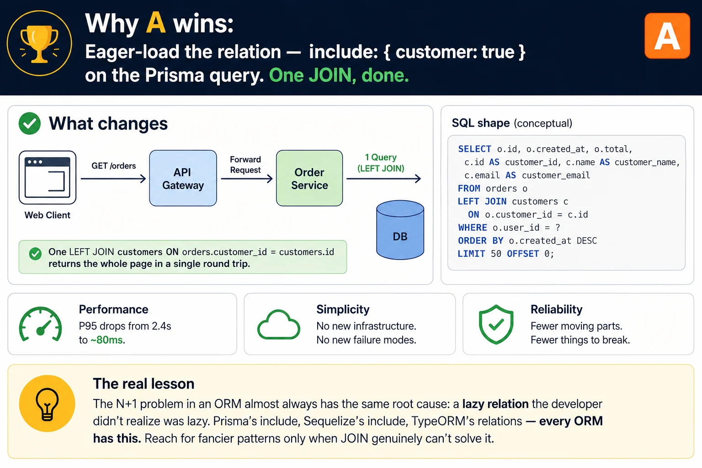
Transcription française des légendes
- Pourquoi retenir A :
- Chargez la relation — i
- clade
- custom
- : vrai
- sur la requête Prisma.
- Ce qui change
- Forme SQL (conceptuelle)
- SÉLECTIONNER 0.id, o.created_at, 0o.total,
- En avant
- c.id AS customer_id, c.name AS customer_name
- GET /orders
- API
- Demande
- Commande
- (Joindre à gauche)
- c.email AS customer_email
- Passerelle
- Service
- À PROPOS des ordres o
- REJOIGNEZ LES CLIENTS
- Web Client
- ON o.customer_id — c.id
- O — o.user_id — ?
- COMMANDE PAR o.created_at DESC
- Un client à GAUCHE SUR orders.customer_id — customers.id
- LIMITE 50 OFFSET 0;
- renvoie la page entière en un seul aller-retour.
- Exécution du budget
- Simplicité
- Fiabilité
- P95 baisse de 2.4s
- Pas de nouvelles infrastructures.
- Moins de pièces mobiles.
- (7)
- à — 80ms.
- Pas de nouveaux modes de défaillance.
- Moins de choses à casser.
- La vraie leçon
- Le problème N + 1 dans un ORM a presque toujours la même cause: une relation paresseuse le développeur
- Prisma incluait, Sequelize incluait, TypeORM incluait les relations — toutes les relations ORM
- Atteindre pour les modèles plus chics seulement quand JOIN vraiment ne peut pas le résoudre.
Pourquoi retenir A ? Un LEFT JOIN customers ON orders.customer_id = customers.id retourne toute la page en un seul aller-retour. Le p95 passe de 2,4 s à environ 80 ms, sans nouvelle infrastructure ni nouveau mode de panne. Avec un ORM, le N+1 vient presque toujours d’une relation chargée à la demande sans que le développeur s’en rende compte. Prisma et Sequelize proposent include et TypeORM propose relations. Les approches plus élaborées deviennent pertinentes lorsque la jointure ne suffit réellement plus.
Explication 2
Pourquoi B est tentant, avec DataLoader ? Le patron a toute sa place dans GraphQL, lorsque le graphe des résolveurs se ramifie d’une manière qu’une seule jointure ne peut pas exprimer. Ici, un endpoint de liste n’a qu’une relation à charger. Une jointure est plus simple et plus rapide. Ajouter un DataLoader reviendrait à payer durablement la complexité d’un problème absent.
Explication 3
Pourquoi C ne convient pas, avec Redis ? Consulter d’abord le cache masque le symptôme, tandis que le schéma de requêtes persiste. Vous exécutez encore 50 GET par appel. Il faut maintenant invalider le cache à chaque changement de client et gérer les défauts de cache pour tous les identifiants après un déploiement. Le cache sert à monter en charge. Le N+1 se traite au niveau des requêtes.
Explication 4
Pourquoi D fait débat, avec la dénormalisation ? C’est une approche légitime à l’échelle d’Instagram. C’est aussi comme ça qu’on affiche encore le nom de naissance d’une cliente trois ans après son mariage, faute de mise à jour prévue. Optimiser la lecture par dénormalisation augmente le travail à chaque écriture. Ce compromis se justifie quand une jointure ne permet réellement plus de tenir le SLO de latence à votre échelle.
Limiter le débit sans rafales aux changements de fenêtre
Illustration de la question du jour 3 · p. 12
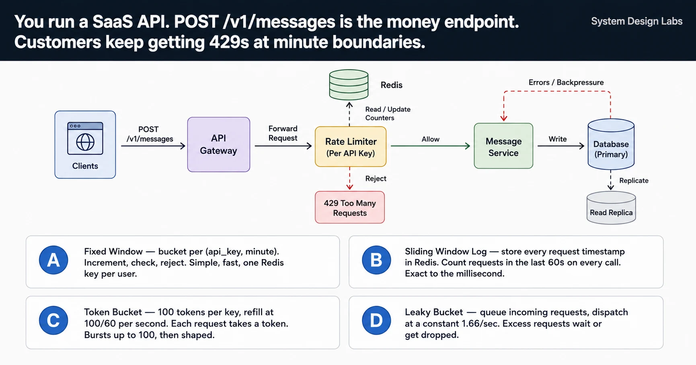
Transcription française des légendes
- System Design Labs
- Vous exécutez une API SaaS. POST /v1/messages est le endpoint de l'argent.
- Les clients continuent d'obtenir 429 à des limites de minutes.
- Erreurs / Contre-pression
- SS était
- Compteurs
- Lire / Mettre à jour
- POST
- En avant
- /v1/messages
- API
- Demande
- Limiteur de taux
- Autoriser
- Ecrire
- Message
- Base de données
- Passerelle
- (Par clé API)
- Service
- (primaire)
- Clients
- Rejeter
- Répliquer
- Fenêtre fixe — seau par (api_key, minute).
- Journal de la fenêtre coulissante — stockez chaque horodatage de demande
- Incrémenter, vérifier, rejeter. Simple, rapide, un Redis
- Comptez les demandes dans les dernières années 60 à chaque appel.
- clé par utilisateur.
- Exact à la milliseconde.
- Seau à jetons — 100 jetons par clé, recharge à
- Leaky Bucket — file d'attente des demandes entrantes, expédition
- 100/60 par seconde. Chaque demande prend un jeton.
- à une constante de 1,66/sec.
- Poussée jusqu'à 100, puis mise en forme.
- a tombe.
Vous exploitez une API SaaS. La route POST /v1/messages est celle qui génère le chiffre d’affaires.
Chaque abonnement autorise 100 requêtes par minute et par clé API. Les clients reçoivent des erreurs HTTP 429 aux changements de minute, alors que leur débit moyen est bien inférieur au plafond.
Voici ce qui se passe en production :
• 12:59:58 → le client envoie 90 requêtes au lancement d’un traitement par lots.
• 13:00:02 → le même client en envoie 90 de plus au cycle suivant.
• Votre compteur repart de zéro à 13:00:00.
• Les deux rafales passent. Avec 180 requêtes en 4 secondes, la base en aval commence à saturer.
Le support vous remonte les erreurs 429 et l’équipe SRE vous alerte sur les pics de trafic. Vous devez remplacer le mécanisme de limitation cette semaine.
QUATRE OPTIONS
Fenêtre fixe. Un compteur par paire (api_key, minute). Incrémenter, contrôler puis rejeter au-delà du plafond. Simple, rapide et une clé Redis par utilisateur.
Journal à fenêtre glissante. Enregistrer dans Redis l’horodatage de chaque requête. À chaque appel, compter les requêtes des 60 dernières secondes, à la milliseconde près.
Seau à jetons. Prévoir 100 jetons par clé et en recréditer 100/60 par seconde. Une requête consomme un jeton. Une rafale peut en consommer jusqu’à 100 avant d’être limitée par le rythme de recharge.
Seau percé. Mettre les requêtes entrantes en file et en traiter 1,66 par seconde à débit constant. Le surplus attend ou est rejeté.
Afficher la réponse et les explications
Réponse indiquée par l’auteur : C
Explication 1
Schéma de l’explication 1 · p. 14
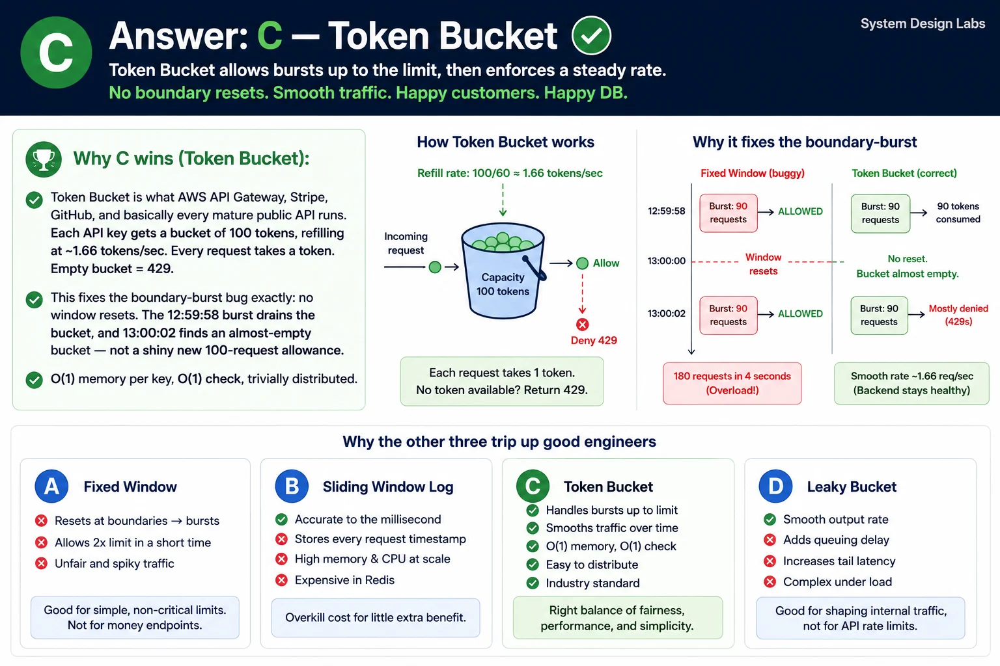
Transcription française des légendes
- System Design Labs
- Réponse :
- Seau à jetons
- Token Bucket permet des rafales jusqu'à la limite, puis impose un taux stable.
- Comment fonctionne Token Bucket
- Pourquoi il fixe la limite-éclat
- Q Pourquoi retenir C (Token Bucket) :
- Taux de recharge: 100/60 — 1.66 jetons/sec
- Fenêtre fixe (buggy)
- Seau à jetons (correct)
- [v) Token Bucket est ce que AWS API Gateway, Stripe,
- Explosion: 90
- 90 jetons
- GitHub, et fondamentalement toutes les API publiques matures s'exécutent.
- 12:59:58
- > AUTORISÉ
- consommés
- Demandes
- Chaque clé API reçoit un seau de 100 jetons, rechargeant
- Entrée
- demande
- oH
- à — 1.66 tokens/sec. Chaque requête prend un token.
- 13:00:00
- Fenêtre
- Pas de réinitialisation.
- Seau vide — 429.
- e-
- Permettre
- reset
- Capacité
- Seau presque vide.
- 100 jetons
- Ceci corrige le bug boundary-burst exactement : non
- Explosion: 90
- La fenêtre se réinitialise. La rafale 12:59:58 draine le
- 13:00:02
- > AUTORISÉ
- majoritairement démentie
- Demandes
- (429s)
- seau, et 13:00:02 trouve un presque vide
- Refuser 429
- seau — pas une nouvelle allocation brillante de 100 demandes.
- [v) O(1) mémoire par clé, O(1) vérification, trivialement distribué.
- Chaque demande prend 1 jeton.
- 180 requêtes en 4 secondes
- Taux lisse — 1.66 req/sec
- Aucun jeton disponible? Retour 429.
- (Surcharge !)
- (Le backend reste en bonne santé)
- Pourquoi les trois autres font appel à de bons ingénieurs
- Seau à jetons
- CA) Fenêtre fixe
- 'B) Journal de la fenêtre coulissante
- (D) Seau qui fuit
- Poignées éclate jusqu'à limiter
- Réinitialise aux frontières > rafales
- Précision à la milliseconde
- débit de sortie lisse
- Lisse le trafic au fil du temps
- Permet 2x limite dans un court laps de temps
- Stocke chaque horodatage de demande
- O(1) mémoire, O(1) vérification
- Ajoute un délai de file d'attente
- Haute mémoire et CPU à l'échelle
- Trafic inique et épineux
- Facile à distribuer
- Augmente la latence de queue
- Logement entier à Redis
- Complexe sous charge
- Norme de l'industrie
- Bon pour les limites simples et non critiques.
- Coût excessif pour peu d'avantages supplémentaires.
- Le juste équilibre de l’équité,
- Bon pour façonner le trafic interne,
- Pas pour les points de terminaison de l'argent.
- performance et de simplicité.
- Pas pour les limites de taux API.
Réponse C : seau à jetons ✅
Voici pourquoi cette option fonctionne et ce que les trois autres peuvent masquer.
Pourquoi retenir C, le seau à jetons ?
AWS API Gateway, Stripe, GitHub et la plupart des API publiques matures utilisent ce mécanisme. Chaque clé API dispose d’un seau de 100 jetons, rechargé d’environ 1,66 jeton par seconde. Une requête en dépense un. Seau vide : erreur HTTP 429.
Cette approche élimine précisément les rafales aux changements de minute, car le compteur ne repart jamais de zéro. La rafale de 12:59:58 vide le seau. À 13:00:02, il est presque vide au lieu d’offrir un nouveau quota de 100 requêtes. Mémoire et vérification en O(1) par clé, avec une distribution simple.
Explication 2
Pourquoi B est tentant, avec un journal à fenêtre glissante
Le calcul est exact, mais chaque requête occupe une entrée Redis pour la clé concernée. À 100 000 clés actives, la mémoire devient un problème et le p99 peut grimper. L’exactitude pousse parfois à oublier ce coût.
Explication 3
Pourquoi A ne convient pas, avec une fenêtre fixe
C’est le défaut décrit dans le scénario. Le compteur repart de zéro à la minute suivante. Un client peut donc envoyer deux fois son quota en deux secondes. C’est encore l’erreur la plus courante en production.
Explication 4
Pourquoi D ne convient pas ici, avec le seau percé
Le seau percé lisse le trafic sortant en vidant une file à débit constant. C’est utile pour protéger un service aval fragile, mais les rafales légitimes subissent une latence supplémentaire. Le seau à jetons rejette le surplus et le seau percé le retarde. Pour l’API publique de ce scénario, mieux vaut rejeter rapidement.
Éviter les doubles prélèvements
Illustration de la question du jour 4 · p. 16
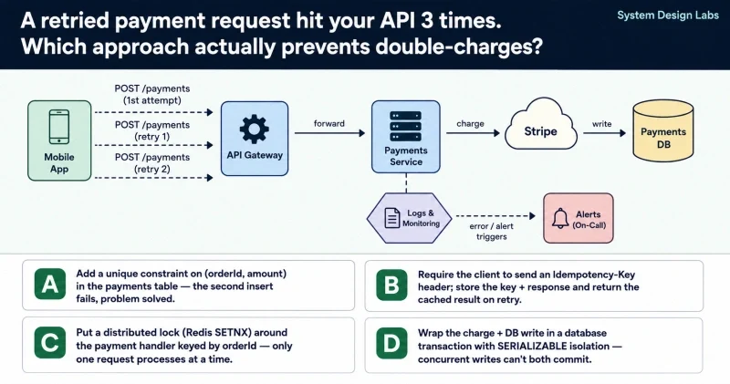
Transcription française des légendes
- La demande de paiement a été testée sur votre API 3 fois.
- «System Design Labs
- Quelle approche empêche réellement les doubles charges?
- POST /paiements
- (tentative)
- POST /paiements
- vers le haut
- charge
- Mobile
- POST /paiements
- Paiements
- Service
- App
- déclencheurs
- ‘Ajouter une contrainte unique sur (orderld, montant)
- Demander au client d'envoyer une clé idempotency
- dans le tableau des paiements — le deuxième insérer
- header; stocker la clé + réponse et retourner la
- Échec, problème résolu.
- «résultat en cache sur réessayer.
- Placez un verrou distribué (Redis SETNX) autour
- ‘Envelopper la charge + écrire DB dans une base de données
- le gestionnaire de paiement saisi par orderld — uniquement
- transaction avec isolation SÉRIALISABLE
- fone processus de demande à la fois.
- Les écritures concurrentes ne peuvent pas toutes les deux s'engager.
Au moment de payer, un utilisateur touche « Payer 499 $ ».
L’indicateur de chargement reste bloqué. L’utilisateur touche de nouveau le bouton, puis encore une fois.
Trois requêtes atteignent votre API de paiement. Deux réussissent effectivement. Le client est débité de 1 497 $ et ouvre un ticket avant que l’équipe d’astreinte ne lise l’alerte.
Voici la configuration.
Mobile → POST /payments { orderId: "ord_8821", amount: 499 }
Le réseau se bloque sur la première requête → le client réessaie deux fois.
Votre service reçoit trois POST presque identiques en quatre secondes.
Trois prélèvements sont effectués via Stripe. La base enregistre trois lignes de paiement.
Vous avez un sprint pour empêcher qu’une nouvelle tentative débite de nouveau le client. Quelle approche choisissez-vous ?
Ajouter une contrainte d’unicité sur (orderId, amount) dans payments. La deuxième insertion échoue, donc le problème paraît réglé.
Exiger l’en-tête Idempotency-Key. Stocker la clé et la réponse, puis retourner la réponse mise en cache en cas de nouvelle tentative.
Protéger le traitement du paiement par un verrou distribué Redis SETNX indexé par orderId. Une seule requête est traitée à la fois.
Grouper le prélèvement et l’écriture en base dans une transaction au niveau d’isolation SERIALIZABLE. Deux écritures concurrentes ne peuvent pas être validées toutes les deux.
Afficher la réponse et les explications
Réponse indiquée par l’auteur : B
Explication 1
Schéma de l’explication 1 · p. 18
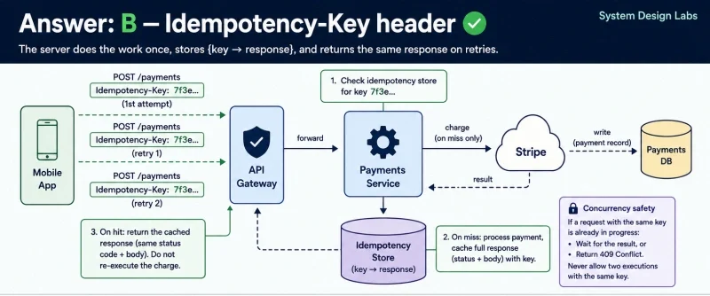
Transcription française des légendes
- Conception du système
- Réponds.
- Idempotency-Key header
- Le serveur fait le travail une seule fois, stocke la réponse — key -> et retourne la même réponse à chaque nouvelle tentative.
- OST /paiements
- Clé d'identité: 713
- (tentative)
- POST /paiements
- charge
- nous
- Mobile
- POST /paiements
- Paiements
- «App
- Passerelle
- Service
- (réessayer)
- 3. Sur elle : retun the cached
- Réponse (même statut)
- 2. On miss: la vie est belle
- + Wait orth eu ou
- code + corps). Ne
- Idempotence
- Stocker
- (statu + corps avec ey
- Neer so à eters
- (Ey réponse)
- Avec le même ay.
Réponse B : en-tête Idempotency-Key ✅
Les trois autres approches reproduisent des erreurs observées dans de vrais retours d’incident.
Pourquoi retenir B, avec l’en-tête Idempotency-Key ?
Le client génère un UUID avant le premier appel et renvoie le même en-tête Idempotency-Key: 7f3e... à chaque tentative de la même opération logique. Le serveur traite l’opération une seule fois et stocke l’association {key → response} dans un stockage durable, par exemple PostgreSQL, DynamoDB ou Redis avec persistance. Si la même clé revient, il restitue la réponse d’origine sans exécuter de nouveau le prélèvement.
Un détail essentiel : conserver la réponse complète, code de statut et corps, et pas uniquement la trace du passage de la clé. Si la tentative nº 2 arrive pendant la première, la faire attendre ou renvoyer un 409. Deux traitements utilisant la même clé ne doivent jamais s’exécuter en parallèle.
Stripe (Idempotency-Key), PayPal (PayPal-Request-Id), Shopify et AWS (ClientRequestToken dans nombre de ses API) utilisent cette approche. Elle couvre les nouvelles tentatives déclenchées par le réseau, le client ou le répartiteur de charge, y compris le cas le plus délicat où la requête a réussi mais la réponse s’est perdue. Les trois autres solutions échouent silencieusement sur ce cas.
Explication 2
Pourquoi A est tentant, avec une contrainte d’unicité sur orderId
J’ai vu cette solution dans quatre bases de code en production. L’erreur est subtile.
La contrainte d’unicité empêche de valider la deuxième insertion. Mais que se passe-t-il côté Stripe ? La plupart des implémentations appellent d’abord Stripe, puis insèrent la ligne. La requête nº 1 débite le client et l’insertion aboutit. La nº 2 le débite de nouveau, puis l’insertion échoue sur la contrainte. Le client a payé deux fois. La base paraît saine et les logs disent que le doublon a été évité.
Inverser l’ordre des opérations déplace la condition de concurrence. La tentative nº 2 échoue bien en base. Pourtant, si la première s’arrête entre l’insertion et le prélèvement, la ligne subsiste sans paiement réel. C’est une perte d’argent silencieuse, pire encore que le double débit.
La contrainte d’unicité ajoute une bonne couche de défense. Le mécanisme principal doit couvrir l’opération de bout en bout.
Explication 3
Pourquoi C ne convient pas, avec un verrou distribué
Un verrou Redis sur orderId force les trois tentatives à s’exécuter l’une après l’autre. Il couvre la concurrence. En revanche, rien n’arrête une tentative ultérieure si le verrou a été libéré et que la réponse s’est perdue en route.
La requête nº 1 prend le verrou, débite via Stripe, libère le verrou et renvoie 200. La connexion tombe et le client ne reçoit jamais le 200. Il réessaie 30 secondes après. Le verrou a disparu depuis longtemps et le client est débité une nouvelle fois.
Les verrous distribués empêchent des exécutions simultanées. L’idempotence protège des réexécutions successives. Ce sont deux besoins distincts.
Les verrous distribués sont aussi notoirement difficiles à réaliser correctement. L’article « How to do distributed locking » de Martin Kleppmann en explique les pièges. Réservez-les aux cas qui exigent réellement cette garantie de concurrence.
Explication 4
Pourquoi D ne convient pas, avec une transaction SERIALIZABLE
L’isolation SERIALIZABLE protège la base des anomalies d’écritures concurrentes. Le prélèvement Stripe reste un effet externe. Même si la transaction est annulée et que la base reste intacte, le POST HTTP est déjà parti et l’argent a été prélevé.
L’erreur de raisonnement la plus courante consiste à prendre la base pour périmètre de la garantie, alors que celle-ci doit inclure l’effet externe. Dès l’appel Stripe, l’opération a pu changer le monde extérieur. Une annulation en base ne revient pas sur cet appel.
Choisir une stratégie de sharding pour une base de données
Illustration de la question du jour 5 · p. 21
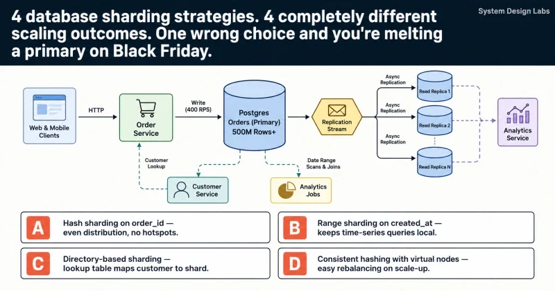
Transcription française des légendes
- «système Design Labs
- 4 stratégies de sharding de base de données. 4 complètement différentes
- Un mauvais choix et vous êtes en train de fondre
- Une primaire le Black Friday.
- Commandes (primaires)
- Postgres
- Web & Mobile
- «500M rangées+
- Analyses
- «Service
- «tae
- Hash sharding sur order_id
- Plage de découpage sur created_at
- « Même distribution, pas de hotspots.
- garde les requêtes de séries temporelles locales.
- [4]
- (a)
- sharding basé sur répertoire
- Hashing cohérent avec les nœuds virtuels
- [c]
- Liste des cartes de table client à éclater.
- a
- rééquilibrage facile sur scale-up.
Quatre stratégies de partitionnement, quatre comportements différents à grande échelle. Un mauvais choix peut saturer le primaire dès le Black Friday.
La table orders de PostgreSQL vient de franchir 500 millions de lignes.
Les parcours par plage grimpaient autrefois à 40 ms. Ils dépassent maintenant les 800 ms.
La mise à l’échelle verticale a atteint ses limites. Vous devez répartir les données sur plusieurs shards.
Voici le profil de charge.
• orders : 500 millions de lignes et 3 millions de plus par semaine.
• 80 % de lectures : « commandes du client X sur les 30 derniers jours ».
• 15 % de lectures : jointures analytiques sur des plages de dates.
• 5 % d’écritures : nouvelles commandes, 400 RPS en continu et le double les jours de promotion.
Quelle stratégie choisissez-vous ?
Sharding par hachage sur order_id. Répartition uniforme et aucun point chaud.
Sharding par plage sur created_at. Les requêtes temporelles restent locales au shard.
Sharding par répertoire. Une table de correspondance indique le shard de chaque client.
Hachage cohérent avec nœuds virtuels. Le rééquilibrage est facile quand on ajoute de la capacité.
Afficher la réponse et les explications
Réponse indiquée par l’auteur : C
Explication 1
Réponse C : sharding par répertoire ✅
Voici ce qui rend les trois autres options trompeuses.
Pourquoi retenir C, le sharding par répertoire ?
Les commandes d’un client représentent 80 % des lectures. Il faut placer toutes les commandes de ce client sur un seul shard. Une lecture ne sollicite alors qu’un nœud, sans requête distribuée dont il faudrait rassembler les résultats.
Une table customer_shard_map indique l’emplacement de chaque client et se met en cache dans Redis. Si le shard 3 devient trop sollicité, vous déplacez les clients les plus lourds sans recalculer le hachage des autres. C’est l’avantage du rééquilibrage ciblé. Figma, Notion et Slack y ont recours.
Explication 2
Pourquoi A est tentant, avec le hachage de order_id
Les tutoriels proposent souvent de hacher la clé primaire. Ici, les 200 commandes d’un même client s’éparpillent sur tous les shards. Chaque lecture interroge quatre shards et attend le nœud le plus lent. Le p99 augmente.
Explication 3
Pourquoi B ne convient pas, avec des plages sur created_at
Le shard le plus récent devient un point chaud par construction : toutes les nouvelles commandes y sont écrites. Il absorbe 100 % des écritures et 70 % des lectures. Le Black Friday, il sature pendant que les autres attendent.
Explication 4
Pourquoi D ne convient pas ici, avec le hachage cohérent
Le hachage cohérent convient aux données uniformes, mais ne permet pas de déplacer certains clients lourds individuellement. Si quatre gros clients se retrouvent sur le même shard, vous ne pouvez pas les rééquilibrer finement.
Sécuriser les verrous distribués des tâches cron
Illustration de la question du jour 6 · p. 24
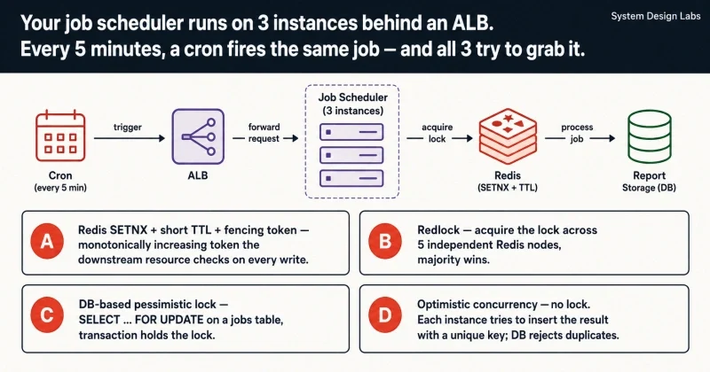
Transcription française des légendes
- «System Design Labs
- Votre emploi du temps fonctionne sur 3 instances derrière un ALB.
- Toutes les 5 minutes, un cron déclenche le même travail - et tous les 3 essaient de l'attraper.
- Job Scheduler
- vers le haut
- acquérir
- processus
- demande >
- serrure
- emploi
- Cron
- ALB
- (toutes les 5 min)
- Stockage (D8)
- Redis SETNX + court TTL + jeton de fencing
- Redlock — acquiert la serrure à travers
- monotoniquement croissante, la
- 5 nœuds Redis indépendants,
- contrôle des ressources en aval à chaque écriture.
- La majorité gagne.
- o
- ac
- Pessi à base de DB
- ic lock
- Concurrence optimiste : pas de verrou.
- «SÉLECTIONNEZ ... POUR MISE À JOUR sur une table d'emplois,
- Chaque instance tente d'insérer le résultat
- La transaction tient le verrou.
- avec une clé unique ; DB rejette les doublons.
- e
Votre planificateur de tâches tourne sur trois instances derrière un ALB.
Toutes les cinq minutes, cron déclenche la même tâche « generate-daily-report ». Les trois instances essaient de la prendre en charge.
Vous employez la solution classique, un verrou Redis SETNX.
SET job:daily-report locked NX EX 300 → une seule instance prend le verrou.
Tout fonctionne pendant un mois. Puis arrive un samedi, à 2 h du matin.
L’instance B prend le verrou et lance la tâche. Au bout de 60 secondes, son pod est arrêté faute de mémoire. Le verrou existe toujours, avec un TTL de 300 secondes. Le rapport tourne toutes les cinq minutes.
Personne ne traite le rapport pendant quatre minutes de plus. L’instance A prend alors le verrou. Le pod B a redémarré et tente lui aussi de relancer la tâche. Deux instances travaillent sur le même rapport.
Pire, une longue pause du ramasse-miettes fait dépasser à A le TTL de son verrou. Redis l’accorde silencieusement à C. Les deux instances pensent détenir le verrou et écrivent au même endroit.
Quel patron choisir ici ?
Redis SETNX, un TTL court et un jeton de fencing. La ressource en aval vérifie ce jeton, dont la valeur augmente à chaque acquisition, à chaque écriture.
Redlock. Acquérir le verrou sur cinq nœuds Redis indépendants et obtenir la majorité.
Verrouillage pessimiste en base. Faire un SELECT ... FOR UPDATE sur la table des tâches et conserver le verrou dans la transaction.
Contrôle de concurrence optimiste. Pas de verrou : chaque instance tente d’insérer le résultat avec une clé unique et la base rejette les doublons.
Afficher la réponse et les explications
Réponse indiquée par l’auteur : A
Explication 1
Schéma de l’explication 1 · p. 26
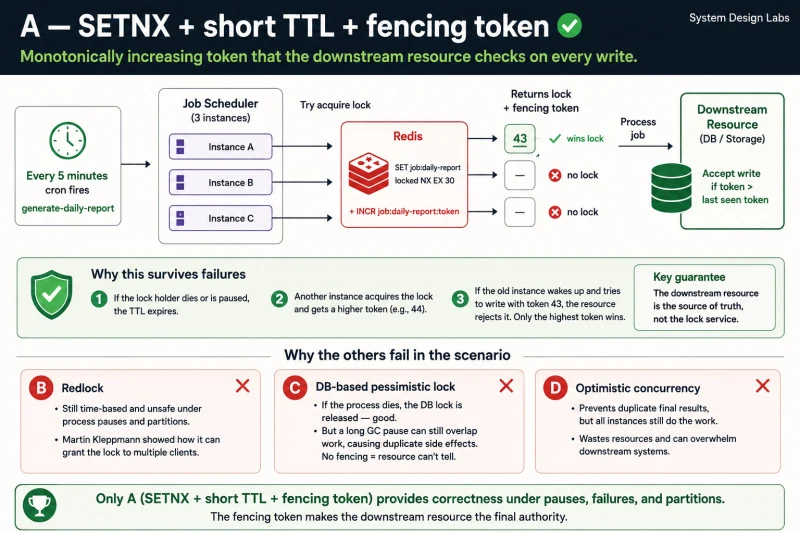
Transcription française des légendes
- Laboratoire de conception de système :
- A — SETNX + TTL court + jeton de fencing
- Retourne le verrou
- Job Scheduler
- « Essayez d’acquérir le verrou
- cas)
- + jeton de fencing
- En aval
- Processus
- Ressource
- Redis
- [> | 43
- Yin ook
- emploi
- (08 / Stockage)
- SET ptyepe
- Toutes les 5 minutes
- nolock
- Accepter l'écriture
- cron fires
- Si jeton >
- en
- Dernière vue Token
- nolock
- Instance
- Pourquoi cela survit f
- res
- Garantie clé
- le porte-serrure sori utilisé,
- l'odinstance se réveille et es
- « La ressource en aval
- le TTL expire
- Pretnarinstance acquis l'ok
- nd obtient un jeton supérieur (9. 44)
- twit avec le jeton 43, la ressource
- La source de la vérité,
- Il n'y a que les plus hauts jetons,
- Pas le service de serrure
- Pourquoi les autres échouent dans le scénario
- ist
- serrure
- + Stil basé sur le temps et dangereux
- Si le processus des, les verrous DB
- Les provendes dupliquent les ents finaux,
- Libéré - bien.
- mais tous les cas stl faire le travail.
- pauses et partons.
- + Mais le long de la pause GC peut stil chevauchement
- + Martin Kieppmann a montré comment il peut
- travail, provoquant des effets secondaires en double
- Les déchets de ressources peuvent submerger
- Accorder la serrure à Muitipe Cents
- Seul A (SETNX + short TTL + jeton de fencing) fournit l'exactitude sous les pauses, les échecs et les partitions.
- Le jeton de fencing fait de la ressource en aval l'autorité finale.
Réponse A : SETNX, TTL court et jeton de fencing ✅
Voici pourquoi cette approche fonctionne et où les trois autres peuvent induire en erreur.
Pourquoi retenir A, avec SETNX, un TTL et un jeton de fencing ?
Un verrou seul ne protège pas une ressource distribuée. Son détenteur peut s’arrêter, être suspendu ou se retrouver isolé par une partition réseau. Le verrou peut être réattribué alors que le détenteur le croit encore valable. Ici, la collecte de mémoire suspend le processus, le TTL expire, Redis attribue le verrou à une autre instance et le premier détenteur reprend ses écritures au réveil.
Le jeton de fencing règle ce problème. À chaque acquisition, Redis ou le service de verrouillage attribue un numéro strictement croissant, par exemple 42, 43, puis 44. La ressource en aval (base, stockage ou file de sortie) mémorise le plus grand jeton reçu et refuse toute écriture portant un jeton inférieur.
Quand A reprend après la pause du ramasse-miettes avec le jeton 42, C écrit déjà avec le jeton 43. La base refuse elle-même les écritures d’A. La ressource fait foi, indépendamment du service de verrouillage.
C’est le mécanisme employé par Chubby chez Google et recommandé par Martin Kleppmann dans « How to do distributed locking ». Parmi les propositions, c’est la seule qui protège contre les pauses du processus.
Explication 2
Pourquoi B est tentant, avec Redlock
Beaucoup d’ingénieurs expérimentés se tournent vers Redlock, qui paraît rigoureux. Dans un article de 2016, Martin Kleppmann montre qu’il ne protège pas du scénario décrit. N’importe quel processus peut être suspendu assez longtemps pour perdre le verrou sans s’en apercevoir.
Sans jeton de fencing, Redlock présente le même défaut fondamental que SETNX. Si la ressource ne vérifie pas de jeton à l’écriture, Redlock n’apporte pas la garantie voulue. Vous maintenez cinq clusters Redis pour un problème qu’un seul jeton permet de résoudre avec un cluster.
Explication 3
Pourquoi C ne convient pas, avec un verrou pessimiste en base
SELECT ... FOR UPDATE dans une transaction fonctionne pour une section critique très courte. Le verrou se libère automatiquement à la fin de la transaction ou si la connexion tombe.
Le verrou reste attaché à une seule transaction. Si la génération du rapport prend 60 secondes d’écritures S3 et d’appels d’API externes, vous gardez un verrou de ligne sur le primaire pendant 60 secondes par tâche. Le pool de connexions s’épuise et les requêtes concurrentes attendent.
Explication 4
Pourquoi D ne convient pas ici, avec le contrôle de concurrence optimiste
La concurrence optimiste convient bien à certaines opérations. Elle élimine le service de verrouillage, le détenteur et les verrous périmés. Chaque instance tente l’écriture et la contrainte d’unicité départage les tentatives.
Elle atteint ses limites si le travail n’est pas idempotent ou ne se résume pas à une écriture. Trois instances peuvent tripler les écritures S3, les notifications Slack et le coût du calcul.
Garantir l’ordre des événements dans une file de messages
Illustration de la question du jour 7 · p. 28
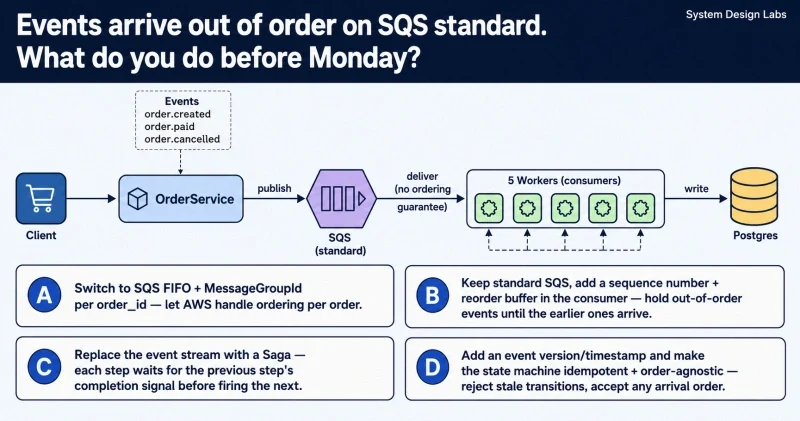
Transcription française des légendes
- System Design Labs
- Les événements arrivent hors service sur la norme SQS.
- Que faire avant lundi ?
- Événements
- Order.Created
- ordre-eancelled
- «5 Travailleurs (consommateurs)
- (0 commande
- garantie) >
- Client
- sas
- Postgres
- (standard)
- Conserver le SQS standard, ajouter un numéro de séquence +
- ‘Switch to SQS FIFO + MessageGroupld
- reorder tampon dans le consommateur — tenir hors-commande
- par order_id — permet à AWS de gérer les commandes par commande.
- événements jusqu'à l'arrivée des précédents.
- Remplacer le flux d'événements par une Saga
- ‘Ajouter une version/horodatage d’événement et faire
- chaque étape attend l'étape précédente
- la machine d'état idempotent + ordre-agnostique
- signal d'achèvement avant de tirer le suivant.
- rejeter les transitions périmées, accepter tout ordre d'arrivée.
Votre service de commandes publie trois événements par commande : created, paid et cancelled.
Une file SQS standard, cinq consommateurs, environ 2 000 commandes par minute au pic.
Hier soir, une alerte est remontée de production. 47 commandes restent bloquées à l’état « cancelled » sans trace de création. Des clients ont été remboursés pour des commandes qui n’avaient jamais été enregistrées comme passées. L’équipe finance est mécontente.
Vous enquêtez. La commande a été passée, payée et annulée en moins de 400 ms. Les trois messages sont arrivés dans l’ordre dans SQS, puis trois consommateurs les ont pris en parallèle. « cancelled » a été traité en premier et la machine à états a refusé « created », jugé invalide. Les données sont incohérentes.
Voici la configuration.
OrderService → SQS (standard) → 5 workers → PostgreSQL
Événements : order.created → order.paid → order.cancelled
Les workers travaillent en parallèle. SQS standard ne garantit pas l’ordre et la machine à états en aval échoue si les événements arrivent dans le désordre.
Vous avez jusqu’à lundi. Que choisissez-vous ?
Passer à SQS FIFO avec un MessageGroupId par order_id, pour confier à AWS l’ordre par commande.
Conserver SQS standard et ajouter un numéro de séquence et un tampon de réordonnancement côté consommateur. Les événements en avance attendent les précédents.
Remplacer le flux d’événements par une saga. Chaque étape attend le signal de fin de la précédente avant de démarrer.
Ajouter une version d’événement ou un horodatage. Rendre la machine à états idempotente et indépendante de l’ordre d’arrivée, en refusant les transitions obsolètes.
Afficher la réponse et les explications
Réponse indiquée par l’auteur : A
Explication 1
Schéma de l’explication 1 · p. 30
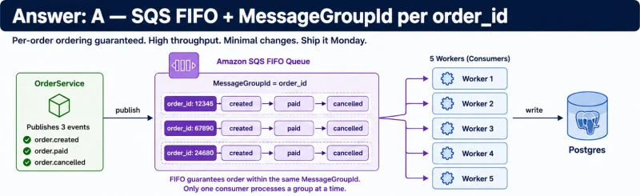
Transcription française des légendes
- Commande par commande garantie. Débit élevé. Changements minimes. Expédiez-le lundi.
- «Amazon SQS FIFO Queve
- MessageGroupid — identifiant de commande
- travailleurs
- publier
- écrire
- Publie 3 événements
- ordorcrosted
- Postgres
- FIFO garantit l'ordre dans le même MessageGroupi
- «Oniy ante sosmumner propose un grup à une dent.
✅ Réponse A : SQS FIFO et MessageGroupId par order_id
Pourquoi A fonctionne
Seul l’ordre à l’intérieur de chaque commande vous intéresse. Définissez MessageGroupId = order_id. FIFO remet les messages d’un même groupe dans leur ordre d’envoi, avec un seul consommateur à la fois par groupe. Vos 2 000 commandes par minute restent distribuées entre cinq workers, au même débit. Pour la commande nº 12345, created, paid puis cancelled seront toujours traités dans l’ordre. Le coût est de quelques millisecondes de latence. Livrez lundi.
Explication 2
Pourquoi B est tentant, avec un tampon de réordonnancement
Sur un tableau blanc, même des ingénieurs expérimentés se laissent tenter. Il faut pourtant créer un tampon mémoire par order_id, gérer les TTL, définir un circuit de rejet pour les messages manquants, gérer la reprise et surveiller les tampons bloqués. C’est réimplémenter FIFO dans l’application, avec davantage de bogues et de cas limites à gérer. B est utile si vous ne pouvez pas employer FIFO, par exemple si la clé de partition Kafka est déjà imposée. Ce n’est pas le cas ici.
Explication 3
Pourquoi C ne convient pas, avec une saga
Une saga sert aux transactions distribuées de longue durée avec compensation, comme réserver un vol, débiter une carte puis réserver un hôtel. Vous suivez l’état d’une seule entité. Une saga transformerait des événements asynchrones en RPC synchrones, augmenterait le couplage et laisserait le problème d’ordre entier.
Explication 4
Pourquoi D ne convient pas, avec le versionnement des événements
Cela fonctionne en partie, mais écarte des événements valables. « cancelled » arrive d’abord et fait avancer l’état, puis « created » est refusé. La base indique une annulation sans trace de création. Il faudrait de l’event sourcing de bout en bout pour résoudre correctement le problème avec D. Comptez six mois de réécriture, pas une livraison lundi.
Synchroniser le cache et la base de données
Illustration de la question du jour 8 · p. 32
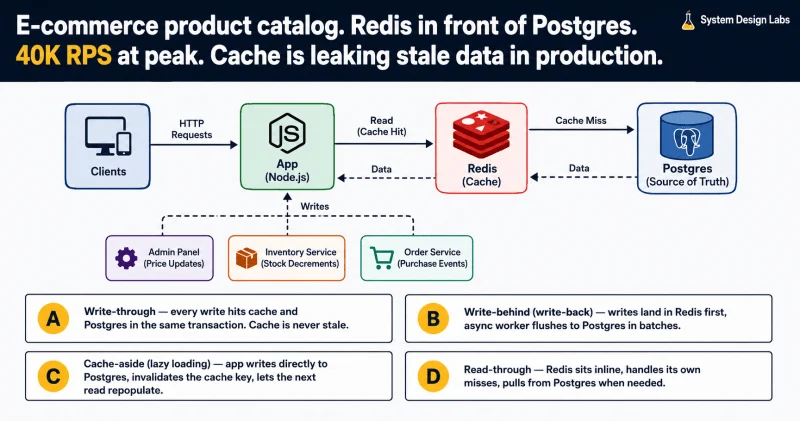
Transcription française des légendes
- Catalogue de produits e-commerce. Redis devant Postgres.
- [ — , system Design Labs
- au pic. Le cache fuit des données périmées en production
- mp
- Demandes
- (Cache Hit)
- Ga
- Clients
- (Nodejs)
- Données
- (Cache)
- Redis
- Données
- (Source de la vérité)
- Postgres
- Adin Pane
- Service des stocks
- Mises à jour des prix)
- ce
- (oa)
- "Ecrire-à travers - chaque écriture frappe cache et
- Postgres dans la même transaction. Le cache n'est jamais vicié.
- Le travailleur async affleure à Postgres par lots.
- ‘Write-behind (write-back) — écrit d’abord la terre dans Redis,
- Postgres, invalide la clé de cache, laisse la prochaine
- Cache-aside (chargement paresseux) — l'application écrit directement à
- Lire: à travers — Redis s'assied en ligne, gère son propre
- Ead repeupler,
- Misses, tire de Postgres si nécessaire.
Un catalogue e-commerce. Redis devant PostgreSQL. 40 000 RPS au pic.
En préproduction, 94 % des lectures aboutissent dans le cache et les réponses prennent moins de 20 ms. Tout semble prêt.
Vous déployez en production. Dans les 48 heures, les tickets affluent. Les clients voient des prix erronés, d’anciens niveaux de stock et des articles « disponibles » alors que le dernier exemplaire est parti il y a trois heures.
Voici la configuration.
Application (Node.js) → Redis (cache) → PostgreSQL (source de vérité)
Écritures : interface d’administration pour les prix, service d’inventaire pour décrémenter les stocks, service de commandes pour les achats.
Lectures : fiches produit, résultats de recherche et parcours de paiement.
Le cache renvoie des données périmées en production. L’équipe débat d’une stratégie d’invalidation. Laquelle livrez-vous ?
Write-through. Chaque écriture touche le cache et PostgreSQL dans la même transaction. Le cache ne devient jamais obsolète.
Write-behind (write-back). Les écritures arrivent d’abord dans Redis, puis un worker les persiste en lots dans PostgreSQL.
Cache-aside (chargement à la demande). L’application écrit directement dans PostgreSQL, invalide la clé en cache et laisse la prochaine lecture la recréer.
Read-through. Redis s’insère dans le circuit des lectures, gère les défauts de cache et charge depuis PostgreSQL au besoin.
Afficher la réponse et les explications
Réponse indiquée par l’auteur : C
Explication 1
Schéma de l’explication 1 · p. 34
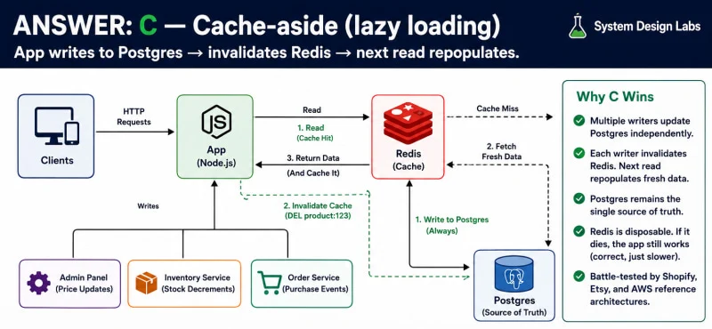
Transcription française des légendes
- RÉPONSE :
- Cache-cache (chargement paresseux)
- B ‘ System Design Labs
- L'application écrit dans Postgres — invalide Redis > next read repeuplates.
- Pourquoi C Gagne
- cache Miss
- Multiple w
- rs mise à jour
- PostgreSQL indépendamment.
- Clients
- Chaque écrivain invalide
- (Cache)
- Redis, Prochaine re
- repeuple de nouvelles données.
- Postgres reste le
- 1. Écrire à Postgres
- Une seule source de vérité
- Redis est jetable.
- L'app fonctionne toujours.
- (correct, juste plus lent).
- «Panneau d’administration
- Service des stocks
- Service de commande
- Testé par Shopity,
- Mises à jour des prix)
- (Décrements de stock)
- archase Events)
- Etsy et référence AWS
- Postgres
- architectures.
- (Source de la vérité)
✅ Réponse C : cache-aside
Pourquoi choisir C
Les trois chemins d’écriture atteignent PostgreSQL indépendamment. En cache-aside, chaque service écrit dans PostgreSQL, invalide la clé (DEL product:123), puis la lecture suivante trouve une entrée absente, récupère la donnée fraîche et la met dans Redis. PostgreSQL reste seul à faire foi. Redis accélère les lectures sans devenir indispensable. Si Redis tombe, l’application répond plus lentement, mais les données restent correctes. Shopify, Etsy et la plupart des architectures de référence AWS exploitent ce patron.
Explication 2
Pourquoi A est tentant, avec le write-through
« Nous écrivons dans les deux systèmes de façon atomique. » Il n’existe pourtant aucune transaction distribuée entre Redis et PostgreSQL. Si l’écriture PostgreSQL aboutit et que Redis échoue à cause du réseau ou d’un timeout, la base est correcte et Redis reste périmé. C’est le défaut à résoudre. Le write-through couple aussi chaque service à Redis : inventaire et commandes ont tous deux besoin de ses identifiants. Une panne Redis peut casser toutes les écritures. Le patron convient à un seul service d’écriture. Avec plusieurs services, le couplage devient problématique.
Explication 3
Pourquoi B ne convient pas, avec le write-behind
Redis fait alors foi et peut perdre des données lors d’un basculement, d’un arrêt faute de mémoire ou d’un retard du journal AOF. Difficile de défendre la perte des derniers prix dans un retour d’incident quand de l’argent est en jeu. L’écriture différée convient aux métriques et compteurs analytiques, beaucoup moins aux écritures e-commerce.
Explication 4
Pourquoi D ne convient pas, avec le read-through
Ce patron ne couvre que les lectures. Trois services écrivent toujours sans prévenir le cache. Pour corriger les données obsolètes, il faut ajouter une invalidation aux écritures, ce qui revient au cache-aside avec plus d’étapes.
Séparer les modèles de lecture et d’écriture
Illustration de la question du jour 9 · p. 36
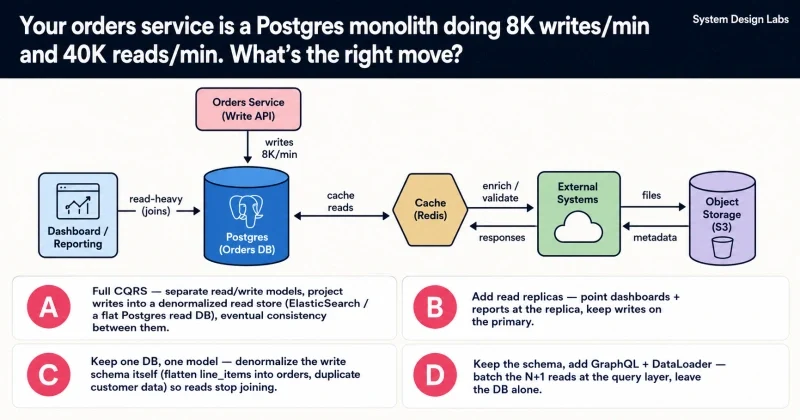
Transcription française des légendes
- «System Design Labs
- Votre service de commandes est un monolithe Postgres faisant 8K écrit / min
- et 40K lectures / min. Quel est le bon mouvement?
- Commandes Service
- (Écrire l'API)
- écrit
- 8K/min
- enrichir /
- Externe
- lire-lourd
- cache
- Valider
- «Systèmes
- Objet
- Goins) — >
- Stockage
- Tableau de bord /
- Postgres
- Réponses
- métadonnées
- Rapports
- (Commandes 08)
- écrit en a
- Full CORS — modèle de lecture/écriture séparé
- dread store (
- ieSearch /
- «Ajouter des répliques lues — tableaux de bord ponctuels +
- 3 gros Postgres lire DE)
- rapports à la réplique, garder écrit sur
- entre eux.
- Le primaire.
- Conservez une base de données, un modèle — dénormalisez l'écriture
- Conservez le schéma, ajoutez GraphQL + DataLoader
- schéma lui-même (aplatir line_items en ordres, dupliquer
- batch les N+1 lit à la couche de requête, laissez
- «données client) ainsi lit cesser de se joindre,
- La DB seule.
Le service de commandes est un monolithe PostgreSQL avec 8 000 écritures et 40 000 lectures par minute.
Mêmes tables, même schéma, et tout ralentit.
Les écritures exigent un schéma normalisé : orders, line_items, payments, shipments et addresses. Les clés étrangères sont propres, les transactions respectent ACID et les données restent sans doublon. Les lectures ont d’autres besoins. Le tableau de bord joint sept tables pour afficher une commande et les rapports font monter le CPU à 85 % tous les matins à 9 h.
Les index et le cache ont déjà été optimisés. Le matériel n’est pas en cause. Lectures et écritures ont besoin de représentations différentes des mêmes données, alors que vous leur imposez un schéma commun depuis deux ans.
Voici les options.
CQRS complet. Séparer les modèles de lecture et d’écriture, projeter les écritures vers un stockage de lecture dénormalisé (Elasticsearch ou une base PostgreSQL à plat) et accepter la cohérence à terme entre les deux.
Ajouter des répliques de lecture pour les tableaux de bord et les rapports, en conservant les écritures sur le primaire.
Garder une seule base et dénormaliser le modèle d’écriture. Intégrer line_items dans orders et dupliquer les données client pour éviter les jointures en lecture.
Conserver le schéma et ajouter GraphQL avec DataLoader pour regrouper les lectures N+1 à la couche de requêtes.
Afficher la réponse et les explications
Réponse indiquée par l’auteur : A
Explication 1
Schéma de l’explication 1 · p. 38
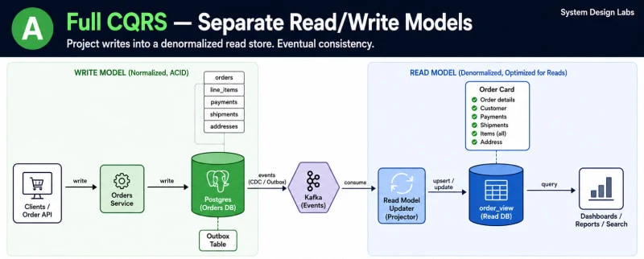
Transcription française des légendes
- System Design Labs
- Modèles de lecture/écriture séparés
- Project écrit dans un magasin de lecture dénormalisé.
- MOD — LE D'ÉCRIPTION (normé, ACI)
- LIRE LE MOD — LE (Oenormaize,Optinin fo Res)
- Commande ard
- tae
- le
- ene
- em
- eis
- Lire le modèle
- plus APL
- (Prjecteur
✅ Réponse A : CQRS complet
Pourquoi A fonctionne
Les écritures ont besoin d’un schéma normalisé et les lectures d’un schéma dénormalisé. Une machine plus puissante ne résout pas ce désaccord. À l’écriture, orders, line_items et payments restent normalisées, avec ACID et des clés étrangères. La lecture passe par une projection, par exemple une table order_view à plat ou un index Elasticsearch. Une seule ligne suffit pour afficher une commande, sans jointure. Un composant maintient la projection par outbox, Kafka et processus de mise à jour, ou via CDC. Il faut accepter la cohérence à terme, avec quelques centaines de millisecondes de retard. Pour 95 % des lectures, comme les tableaux de bord, les rapports et la recherche, ce décalage passe inaperçu. Les 5 % qui exigent une cohérence forte, comme une confirmation de commande, lisent directement le modèle d’écriture.
Explication 2
Pourquoi B est tentant, avec des répliques de lecture
Les répliques déplacent la charge de lecture sur d’autres machines. La jointure de sept tables reste aussi coûteuse. La latence baisse pendant six mois, puis le trafic croît et trois répliques exécutent encore les mêmes jointures. B convient quand les jointures sont raisonnables et que le primaire manque de capacité. Ici, les jointures sont au cœur du problème.
Explication 3
Pourquoi C ne convient pas, avec la dénormalisation des écritures
Toute modification d’un article réécrit la ligne de commande. Toute mise à jour d’adresse se propage à toutes les commandes passées. L’amplification des écritures s’accumule à 8 000 écritures par minute. Le schéma devient difficile à modifier. Un nouveau champ dans line_items exige de migrer des millions de lignes dénormalisées. Vous repoussez le choix d’architecture et gagnez un trimestre en hypothéquant les deux suivants.
Explication 4
Pourquoi D ne convient pas, avec GraphQL et DataLoader
DataLoader regroupe des appels d’API. La jointure des sept tables s’effectue toujours en base. Après trois mois de migration GraphQL, les lectures prennent le même temps. Une bonne solution quand les appels des clients posent problème, et pas quand le schéma en est la cause.
Gérer les transactions distribuées entre services
Illustration de la question du jour 10 · p. 40
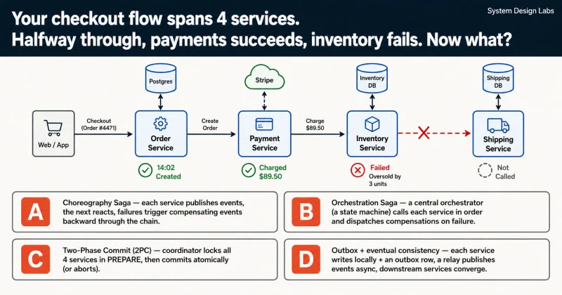
Transcription française des légendes
- «System Design Lab
- Votre flux de paiement s'étend sur 4 services.
- À mi-chemin, les paiements réussissent, l'inventaire échoue.
- crete
- a)
- Web / App
- Commande
- Paiement
- Inventaire
- Expédition
- Service
- Service
- Service
- glace
- 14:02
- Chargés
- Non
- Créé
- $89.50
- Om,
- Appelé
- Chorégraphie Saga — chaque service publie des événements,
- ‘Orchestration Saga — un orchestrateur central
- Retour en arrière par la chaîne.
- le suivant réagit, les échecs déclenchent des événements de compensation
- «et envoie des compensations en cas de défaillance,
- une machine d'état) appelle chaque service dans l'ordre
- (a)
- Commit à deux phases (2PC) — le coordinateur verrouille tout
- ‘Outbox + cohérence éventuelle — chaque service
- 4 services dans PREPARE, puis s'engage atomiquement
- écrit localement + une ligne de sortie, un relais publie
- [c
- (er avorte)
- «Les services asynchrones et en aval convergent.
La commande nº 4471 vient d’arriver à 14 h 02. Voici la séquence.
- OrderService crée la commande dans PostgreSQL. ✅
- PaymentService prélève 89,50 $ via Stripe. ✅
- InventoryService tente de réserver le SKU et échoue : trois unités ont été vendues au-delà du stock.
- ShippingService n’est jamais appelé.
Votre client a payé, le stock manque et la commande reste en PENDING. Un monolithe regrouperait les quatre opérations dans une transaction puis ferait ROLLBACK. Quatre services avec quatre bases ne peuvent pas partager cette transaction locale.
Quelle approche choisissez-vous ?
Saga par chorégraphie. Chaque service publie un événement auquel le suivant réagit. Un échec déclenche des événements de compensation en remontant la chaîne.
Saga orchestrée. Un orchestrateur central, sous forme de machine à états, appelle les services dans l’ordre et déclenche les compensations en cas d’échec.
Validation en deux phases (2PC). Le coordinateur verrouille les quatre services pendant PREPARE, puis valide tout atomiquement ou annule.
Outbox et cohérence à terme. Chaque service écrit localement et ajoute une entrée dans l’outbox. Un relais publie les événements de façon asynchrone et les services en aval convergent.
Afficher la réponse et les explications
Réponse indiquée par l’auteur : B
Explication 1
Schéma de l’explication 1 · p. 42
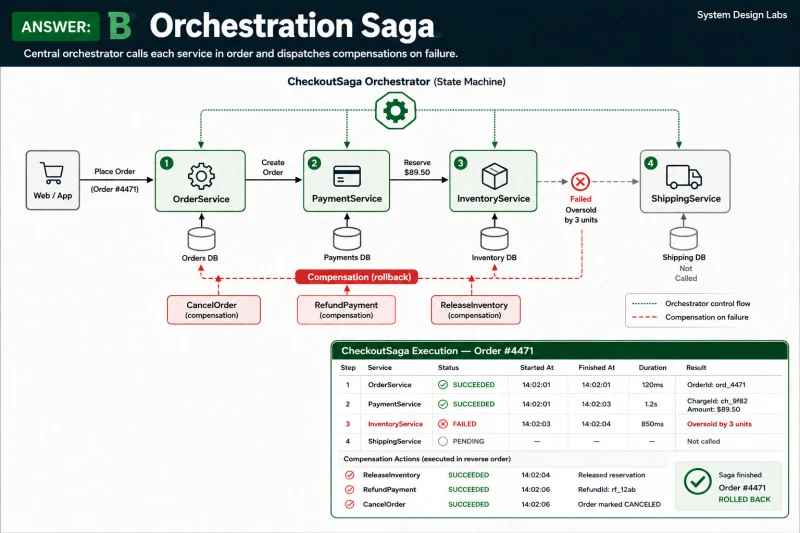
Transcription française des légendes
- RÉPONSE :
- hestr.
- Saga
- (CheckoutSaga Orchestrator (Machine d'état)
- Pace Ont
- CB
- Web Ao
- I (Ordre — 4471)
- rv
- PaymentService
- InventaireService
- Fale
- ShippingService
- Payeur
- siping
- #447
- som
✅ Réponse B : saga orchestrée
Pourquoi retenir B ?
Quatre étapes de paiement imposent un ordre strict, avec leur propre compensation. C’est le rôle d’un orchestrateur. Une machine à états CheckoutSaga, avec Temporal, AWS Step Functions, Camunda ou une implémentation interne, appelle OrderService, PaymentService, InventoryService puis ShippingService. Les compensations CancelOrder, RefundPayment et ReleaseInventory sont enregistrées pour les étapes concernées. Si l’inventaire échoue, l’orchestrateur remonte les étapes et rembourse automatiquement. L’état est durable, observable et rejouable. À 3 h du matin, l’interface montre l’étape en échec et ses entrées et sorties complètes.
Explication 2
Pourquoi A est tentant, avec la chorégraphie
Élégante sur le papier, elle se complique au-delà de quatre étapes avec des compensations qui divergent. La décision métier à prendre si l’inventaire échoue après le paiement se retrouve répartie sur trois services qui doivent connaître leurs modes de panne respectifs. Aucun ne possède le flux, et aucun écran ne donne l’état de la commande nº 4471. À 3 h du matin, il faut le reconstruire à partir de quatre topics Kafka. La chorégraphie convient aux effets indépendants qu’on déclenche sans attendre leur résultat. Ce paiement a une séquence et des compensations précises.
Explication 3
Pourquoi C ne convient pas, avec 2PC
Stripe et les API des transporteurs ne prennent pas en charge 2PC. De plus, les verrous restent détenus pendant PREPARE. Un service lent peut bloquer les autres et, au volume d’un paiement en ligne, la contention suffit à mettre le système à terre.
Explication 4
Pourquoi D ne suffit pas, avec une outbox
L’outbox fiabilise la publication des événements après une validation locale en base. Elle ne définit ni l’ordre des étapes ni les compensations et ne dit pas quoi faire si l’inventaire échoue. Une saga reste nécessaire au-dessus de cette brique.
Traiter les nouvelles tentatives de webhook de façon idempotente
Illustration de la question du jour 11 · p. 44
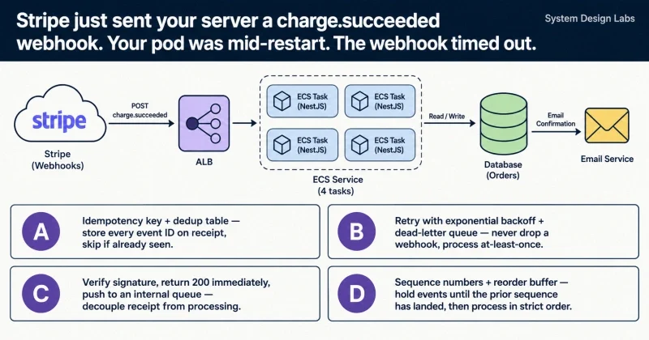
Transcription française des légendes
- stem Design Labs
- Stripe vient d'envoyer à votre serveur un charge.succeeded
- webhook. Votre pod était en plein redémarrage. Le webhook chronométré o1
- rost
- matières grasses
- Stripe
- S
- (Webhooks)
- ALB
- Base de données
- Service de messagerie
- (Commandes)
- ECS Service
- (4 tâches)
- Clé d'identité + table de décodage
- Réessayer avec un backoff exponentiel +
- stocker chaque ID d'événement à la réception,
- La file d'attente de dead-letter — ne jamais laisser tomber une
- Sautez si déjà vu.
- Oo
- webhook, traite au moins une fois.
- «Numéro de séquence + tampon de réordonnancement
- Vérifiez la signature, retournez 200 immédiatement,
- Pousser vers une file d'attente interne -
- Tenir les événements jusqu'à la séquence précédente
- découpler la réception du traitement.
- IC)
- a atterri, puis le processus dans un ordre strict.
Stripe vient d’envoyer un webhook charge.succeeded à votre serveur.
Le pod redémarrait et le webhook a dépassé son délai. Stripe va réessayer et deux traitements risquent de se chevaucher.
Voici la configuration.
Une API NestJS tourne sur ECS, avec quatre tâches derrière un ALB. Stripe envoie les événements charge.succeeded par POST à /webhooks/stripe. Vous avez environ 10 s pour renvoyer 200, sans quoi Stripe planifie une nouvelle tentative. Au Black Friday, vous recevez environ 80 webhooks par seconde.
Trois types d’incident sont déjà survenus en production.
• Un pod redémarre pendant le déploiement. Stripe réessaie et vous traitez l’événement, alors qu’un second pod a traité l’original. Le client reçoit deux e-mails de confirmation du prélèvement.
• La base ralentit au pic. Le traitement prend 12 s et Stripe réessaie après son timeout. Vous traitez deux fois le même événement, avec une première exécution encore en cours.
• Stripe envoie charge.succeeded puis charge.refunded à 200 ms d’intervalle. La file les remet dans le désordre et vous marquez la commande comme payée après son remboursement.
La fonction de traitement fait 30 lignes et fonctionne dans 99 % des cas. Le 1 % restant provoque les incidents.
Que faites-vous ?
Clé d’idempotence et table de déduplication. Enregistrer les identifiants des événements à réception et ignorer ceux déjà vus.
Nouvelles tentatives avec backoff exponentiel et file de rejets. Aucun webhook ne doit être perdu et chacun est traité au moins une fois.
Vérifier la signature, renvoyer immédiatement 200 et utiliser une file interne pour découpler la réception du traitement.
Numéros de séquence et tampon de réordonnancement. Attendre les événements précédents, puis traiter le tout dans l’ordre strict.
Afficher la réponse et les explications
Réponse indiquée par l’auteur : C
Explication 1
Schéma de l’explication 1 · p. 46
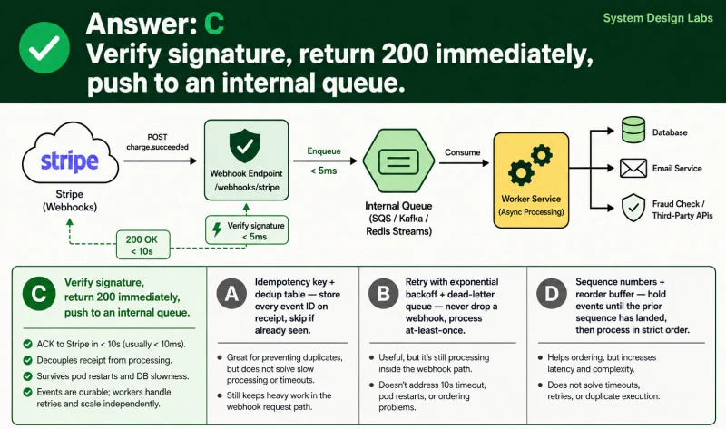
Transcription française des légendes
- Réponse : C
- System Design Labs
- Vérifiez la signature, retournez 200 immédiatement,
- Poussez vers une file d'attente interne.
- Poste
- Enque
- 5ms
- Wiebhook Endpoint
- Stripe
- (Webhooks)
- File d'attente interne
- Service des travailleurs
- Vérification de fraude
- (SQS / Kafka /
- Les tiers aps
- Redis Streams)
- 5ms
- Vérifier la signature,
- Clé d'identité +
- Réessayer avec exponentiel
- Séquence +
- dedup table — magasin
- backot + lettre morte
- reorder buffer — conserver
- ic)
- Rendre 200 immédiatement,
- «chaque ID d'événement sur
- ‘queue — ne jamais laisser tomber
- événements jusqu'à ce que le
- Poussez vers une file d'attente interne.
- réception skip si
- webhook, processus
- la séquence a atterri,
- déjà vu.
- Au moins une fois.
- puis le processus dans un ordre strict.
- ACK à Stripe en — 108 (habituellement — 1s)
- Découpages recsit fom traitement
- Idéal pour prévenir les doublons,
- Usotu, uti stil traitement
- Aide à commander, mais augmente
- mais ne fait pas ole lent
- à l'intérieur du chemin webhook
- latence et complexité
- Survit aux redémarrages du pod et à la lenteur de la base de données.
- Traitement ou délai d'attente.
- Événements ae durable; travailleurs manipuler
- tit garde le travail lourddans le
- pod restars, ou commande
- retvies et seale indépendamment
- problèmes
Réponse C : vérifier la signature, accuser réception immédiatement avec un 200 et passer par une file interne ✅
Voici pourquoi cette approche fonctionne et où les trois autres peuvent induire en erreur.
Pourquoi retenir C, avec réception synchrone et traitement asynchrone ?
Le délai de Stripe et le temps de votre traitement sont indépendants. Stripe vous donne environ 10 secondes pour accuser réception. L’écriture en base, la vérification antifraude et l’envoi du courriel doivent se faire hors de cette fenêtre.
Vérifiez la signature HMAC en moins de 5 ms, enregistrez le payload brut dans SQS, Kafka ou Redis Streams, puis renvoyez 200. Le temps de réponse dépend du réseau et de la vérification de signature, indépendamment de la charge en aval. Si le pod redémarre pendant le traitement, le message est durable dans la file et un worker le récupère. Si la base ralentit, l’endpoint a déjà renvoyé 200 en 8 ms. Les documentations de Stripe, Shopify et GitHub recommandent ce principe.
Explication 2
Pourquoi A est tentant, avec une clé d’idempotence et une table de déduplication
Cette réponse convainc même des ingénieurs expérimentés en entretien. Elle répond à une partie du besoin.
L’idempotence est indispensable. Stripe peut remettre plusieurs fois le même identifiant. Une table de déduplication indexée sur event.id avec contrainte d’unicité est un minimum. Le traitement reste néanmoins synchrone, soumis au délai de 10 secondes et vulnérable aux redémarrages de pods pendant l’écriture.
A seul empêche le double traitement, mais les dépassements de délai et les nouvelles tentatives persistent. L’idempotence est une propriété du traitement. C définit l’architecture dans laquelle A s’insère. Le piège consiste à croire que l’une de ces trois couches règle tout le problème.
Explication 3
Pourquoi B ne répond pas au problème, avec les nouvelles tentatives et la DLQ
Stripe effectue déjà les nouvelles tentatives avec backoff exponentiel. Il réessaie les webhooks en échec pendant un maximum de trois jours. Ajouter ce mécanisme pour les webhooks entrants dupliquerait le travail du fournisseur.
Les nouvelles tentatives et la DLQ conviennent à la file interne créée par C. Si un worker ne traite pas un événement de la file, réessayez, puis envoyez-le en DLQ après N tentatives. C’est un mécanisme en aval. Le placer sur le point de réception mélange les responsabilités côté entrant et côté sortant.
Explication 4
Pourquoi D ne convient pas, avec les numéros de séquence et un tampon de réordonnancement
La solution paraît rigoureuse à qui a déjà subi des problèmes d’ordre. La plupart des fournisseurs, dont Stripe et GitHub, ne fournissent aucun numéro de séquence. Même avec un identifiant comme X-Shopify-Webhook-Id, les numéros ne se suivent pas nécessairement. Impossible de dire si l’événement 47 a été perdu ou filtré.
L’ordre se traite au niveau métier. Au traitement de charge.refunded, vérifiez l’état actuel de la commande. Si elle est déjà remboursée, ne faites rien. Une machine à états couvre à la fois les événements dans le désordre et ceux qui n’arrivent jamais. Un tampon risque de rester bloqué indéfiniment si un événement est perdu en amont.
Indexer une table qui reçoit beaucoup d’écritures
Illustration de la question du jour 12 · p. 48
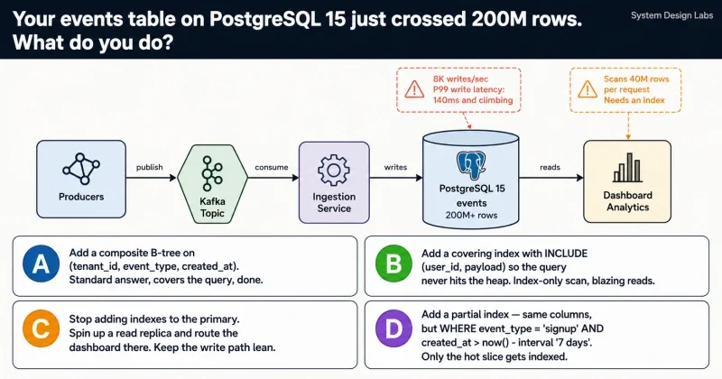
Transcription française des légendes
- 1m Design Lab
- Votre table d'évènements sur PostgreSQL 15 vient de franchir les 200M lignes.
- Qu'est-ce que tu fais ?
- Sane 40M lignes
- latence P99 wrt
- « Les mamans et l’escalade
- Bex
- Indice
- roseaux
- Ingestion
- PostgreSQL 15,
- Tableau de bord
- Katka
- Service
- événements
- Analyses
- Thème
- 200M+ lignes
- « Ajouter un arbre B composite sur
- «Ajouter un indice de couverture avec INCLUDE
- (location_id, type_événement, created_at).
- (user_id, charge utile) donc la requête
- Réponse standard, couvre la requête, c'est fait.
- Il n'y a que des scans d'index, des lectures flamboyantes.
- "Arrêtez d'ajouter des index au primaire.
- «Ajouter un index partiel — mêmes colonnes,
- Monter une réplique de lecture et router le
- mais O — event_type — 'signup' ET
- Gardez le chemin d'écriture lean.
- Seule la tranche chaude est indexée.
La table events de votre PostgreSQL 15 vient de franchir 200 millions de lignes.
Un consommateur Kafka y écrit 8 000 fois par seconde. Le p99 des écritures est passé de 12 à 140 ms et continue de monter.
L’équipe des tableaux de bord s’impatiente. Sa requête filtre sur (tenant_id, event_type, created_at) et parcourt 40 millions de lignes par appel. Elle veut un index au plus vite.
Vous consultez pg_stat_user_indexes. La table compte déjà quatre index, tous touchés par chaque écriture. Un cinquième risque de transformer le retard d’ingestion en panne.
Pourtant, 92 % des requêtes du tableau de bord portent sur les inscriptions d’un seul client au cours des sept derniers jours. C’est une fraction minuscule de la table.
Que faites-vous ?
Ajouter un B-tree composite sur (tenant_id, event_type, created_at). Solution classique qui couvre la requête.
Ajouter un index couvrant avec INCLUDE (user_id, payload) pour répondre depuis l’index seul, sans consulter la table.
Laisser le primaire tel quel et orienter le tableau de bord vers une réplique de lecture pour préserver les écritures.
Ajouter un index partiel sur les mêmes colonnes, avec WHERE event_type = 'signup' AND created_at > now() - interval '7 days'. Seule la tranche la plus sollicitée est indexée.
Afficher la réponse et les explications
Réponse indiquée par l’auteur : D
Explication 1
Schéma de l’explication 1 · p. 50
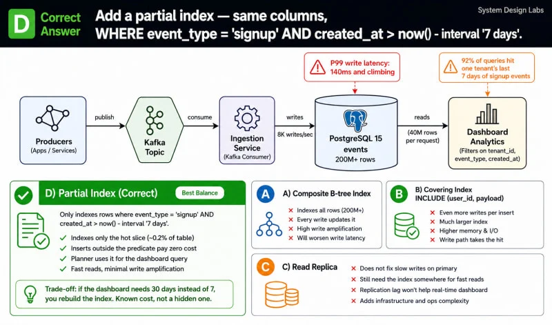
Transcription française des légendes
- System Design Labs
- Ajouter un index partiel — mêmes colonnes,
- O — type_événement
- ignup' AND created_at > now() - intervalle '7 jours'.
- 929% des requêtes touchées
- P99 écrire latence:
- «un locataire en dernier
- «40ms et escalade
- Les jours des événements d'inscription
- lit
- (lignes OM
- Tableau de bord
- Producteurs
- Kafka
- Ingestion
- Service
- PostgreSQL 15
- «Analytics
- (Ops Services)
- Thème
- événements
- 200M+ lignes
- «événement ype ciseau»
- 18) Indice de couverture
- [v] D) Indice partiel (correct)
- INCLURE (u)
- id, charge utile)
- (N’indexe que les lignes où le type d’événement — signup’
- X Encore plus d'écritures par insert
- créé à > maintenant) -interval'7 days:
- % Toutes les mises à jour
- X Haute amplification en écriture
- % Mémoire supérieure & YO
- Indexe uniquement les sce chaudes (-02% du tableau)
- % Wal aggravent la latence
- 2% Le chemin blanc prend le
- LY Insère en dehors du prédicat paie ero coût
- LY Planner utilise la requête du tableau de bord
- Lecture rapide, amplification minimale en écriture
- oes pas lents à la primaire
- > > > > > > > > > > > > > > >
- Trade-off: si le tableau de bord a besoin de 30 jours au lieu de 7,
- X Replication lg n'aidera pas le tableau de bord en temps réel
- vous reconstruisez l'index. Coût connu, pas un caché.
Réponse D : index partiel ✅
Voici le raisonnement et les limites des autres options.
Pourquoi retenir D, l’index partiel ?
Les inscriptions des sept derniers jours pour un client représentent 92 % des requêtes. Un index partiel ne contient que les lignes satisfaisant sa clause WHERE. Les autres écritures n’y touchent pas.
Si les inscriptions représentent environ 4 % du flux et que la fenêtre de sept jours couvre 5 % de la table, l’index concerne environ 0,2 % des lignes. Les insertions hors du prédicat ne coûtent rien à cet index. La quasi-totalité de l’amplification des écritures disparaît.
Le planificateur PostgreSQL peut utiliser l’index partiel lorsque la clause WHERE de la requête implique son prédicat. La requête du tableau de bord est couverte. Les lectures restent rapides et les écritures continuent.
Si l’équipe passe de sept à trente jours, il faudra reconstruire l’index. C’est un coût identifié d’avance.
Explication 2
Pourquoi B est tentant, avec un index couvrant et INCLUDE
Un parcours sur l’index seul rend très bien dans EXPLAIN. Le coût dépend des colonnes ajoutées à INCLUDE.
payload est probablement un document JSONB de quelques kilo-octets. Chaque insertion écrit une ligne dans la table et une grosse entrée d’index avec le payload complet. Un UPDATE sur user_id ou payload réécrit l’entrée. Le coût des écritures augmente.
Sur une table déjà très indexée et à 8 000 écritures par seconde, un index couvrant avec du JSONB peut faire passer le p99 de 140 à 800 ms. INCLUDE convient aux colonnes légères sur des tables surtout lues. Ce cas ne répond à aucun des deux critères.
Explication 3
Pourquoi A ne convient pas, avec un B-tree composite complet
Un index (tenant_id, event_type, created_at) accélère le tableau de bord, mais sollicite aussi l’index à chacune des 8 000 écritures par seconde, quels que soient le client et le type d’événement. Vous payez le coût de toutes les écritures pour une requête portant sur 0,2 % des données.
Explication 4
Pourquoi C ne convient pas, avec une réplique de lecture
Les index doivent exister quelque part. Sur la réplique, leur entretien ralentit le rejeu du WAL. Sur le primaire, le problème initial revient.
Les répliques répartissent les lectures quand le primaire n’en tient plus la charge. Le coût de maintenance des index à l’écriture subsiste.
Gérer un pool de connexions partagé
Illustration de la question du jour 13 · p. 52
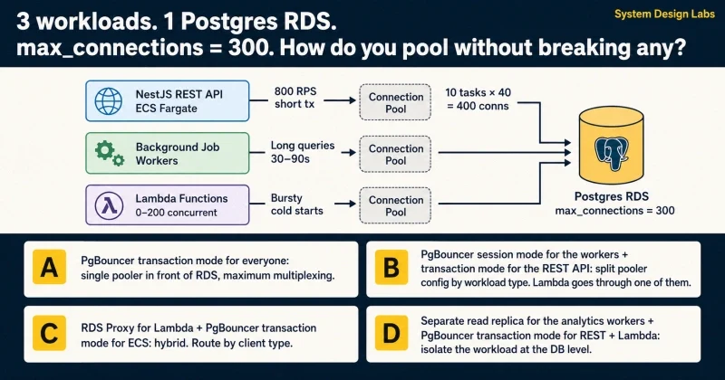
Transcription française des légendes
- System Design Labs
- 3 charges de travail. 1 Postgres RDS.
- max_connections — 300. Comment mettre en commun sans en casser ?
- Né
- «800 RPS
- 10 tâches x 40
- API de letJS REST
- [ — court tx
- Connexion
- ECS Fargate
- Pool
- Historique Job
- Longues requêtes
- 30-90s
- Connexion
- Travailleurs
- Pool
- Fonctions Lambda
- Bursty
- Postgres RDS
- (0-200 simultané)
- démarrage à froid,
- » — Connexion
- Pool
- «max_connections — 300
- Mode session PgBouncer pour les travailleurs +
- Mode de transaction PgBouncer pour tout le monde:
- pooler unique devant RDS, multiplexage maximum,
- mode de transaction pour l'API REST : split pooler
- config par type de charge de travail. Lambda passe par l'un d'entre eux.
- RDS Proxy pour la transaction Lambda + PgBouncer
- Réplica en lecture séparée pour les travailleurs analytiques +
- Mode de transaction PgBouncer pour REST + Lambda :
- mode pour ECS: hybride. Itinéraire par type de client.
- isoler la charge de travail au niveau DB.
Trois charges se partagent la même instance RDS PostgreSQL. max_connections = 300. Chacune a besoin d’un pool de connexions et aucune ne veut le partager.
Voici la configuration.
→ API REST NestJS sur ECS Fargate. Transactions courtes, 800 RPS et une demande de 400 connexions : 10 tâches × 40 connexions par pool.
→ Workers exécutant des requêtes analytiques longues. Chaque requête monopolise une connexion de 30 à 90 secondes.
→ Fonctions Lambda. Charge par rafales, nombreux démarrages à froid et de 0 à 200 appels simultanés.
Trois types de clients, une seule base, 300 connexions au maximum. Les chiffres ne collent pas.
Quel découpage des pools permettra à ces trois charges de coexister ?
Mode transaction de PgBouncer pour tout le monde
Un seul gestionnaire de pool devant RDS, pour un multiplexage maximal.
Mode session de PgBouncer pour les workers et mode transaction pour l’API REST
Configurer le pool selon la charge. Lambda passe par l’une des deux configurations.
RDS Proxy pour Lambda et mode transaction de PgBouncer pour ECS
Montage hybride avec un routage par type de client.
Réplique de lecture séparée pour les workers analytiques et PgBouncer en mode transaction pour REST et Lambda
Isoler les charges au niveau de la base.
Afficher la réponse et les explications
Réponse indiquée par l’auteur : B
Explication 1
Schéma de l’explication 1 · p. 54
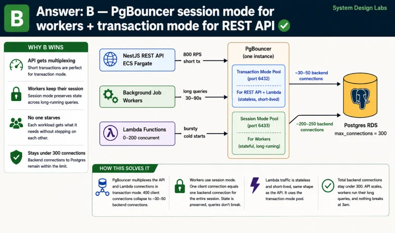
Transcription française des légendes
- Réponse: B — mode de session PgBouncer pour
- workers + mode de transaction pour l'API REST %
- 800 RPS.
- API obtient le multiplexage
- short te
- (un cas)
- Transat Mode Poo !
- (oar 6432)
- connexions
- Sesion mage poseurs tte
- Les travailleurs gardent leur session
- longues qeres
- Personne ne meurt de faim
- «Session Mod Poo!
- Lam
- bousillé
- (port 6433)
- Postgres RDS
- Tats froids
- «max_connections — 300
- (Att ong ring)
- Séjours sous 300 conctions
- rama itn te
- eb aii ttn
- Eater Ned, une sage sage
- «Natn mode 400 cat
- pres
Réponse B : PgBouncer en mode session pour les workers et en mode transaction pour l’API REST ✅
La distinction ressort surtout quand on a exploité PgBouncer en production. Voici le détail.
Pourquoi retenir B, avec des pools adaptés à chaque charge ?
Le rôle de PgBouncer est de multiplexer : une connexion PostgreSQL peut servir à plusieurs clients, à condition qu’on puisse la rendre au pool entre les transactions. C’est le mode transaction.
Il convient à l’API REST NestJS : transactions courtes, 800 RPS, aucun état de session, aucun SET LOCAL, verrou consultatif ou ordre préparé à conserver entre les requêtes. De 400 connexions demandées, on passe à environ 30 à 50 connexions PostgreSQL réelles.
Le mode transaction pose problème aux workers analytiques. Leurs requêtes durent 30 à 90 secondes et s’étendent sur plusieurs transactions. Elles utilisent parfois un état de session, des tables temporaires, SET search_path ou des curseurs. Rendre la connexion entre deux transactions fait perdre cet état. Avec les 800 RPS de l’API, la probabilité de retrouver la même connexion est presque nulle. Le worker dysfonctionne sans forcément le signaler.
Attribuez donc aux workers leur propre pool PgBouncer en mode session. Une connexion client conserve la même connexion en base toute la session. Les workers en ont moins, mais les gardent aussi longtemps que nécessaire.
Le trafic Lambda passe par le pool de l’API en mode transaction : sans état et de courte durée. Une instance, deux configurations de pool et deux ports d’écoute. Selon le livre, PgBouncer prend ce montage en charge nativement.
Au final, l’API bénéficie du multiplexage, les workers disposent des connexions nécessaires, le total PostgreSQL reste sous 300 et chaque charge fonctionne. Une configuration simple à exploiter en astreinte.
Explication 2
Pourquoi A est tentant, avec le mode transaction pour tous
Le mode transaction offre le meilleur multiplexage. Il fonctionne très bien pour l’API et provoque des pannes silencieuses chez les workers.
Dès qu’une requête analytique a besoin d’un état au-delà d’une transaction, comme une table temporaire, une variable de session, un SET LOCAL, un ordre préparé ou un curseur persistant, PgBouncer remet la connexion dans le pool. La requête suivante peut utiliser une autre connexion et perdre cet état. Elle échoue ou, pire, renvoie des résultats erronés.
Ce défaut peut échapper au développement et à la préproduction, où la charge est basse et la connexion parfois réattribuée par hasard. En production, quand l’API monopolise le pool, les workers ne gardent plus leurs connexions. Cela se découvre à 3 h du matin pendant une clôture financière.
Explication 3
Pourquoi C ne convient pas, avec RDS Proxy pour Lambda et PgBouncer pour ECS
RDS Proxy convient bien à Lambda : il absorbe les rafales de connexions aux démarrages à froid, gère IAM et s’intègre au VPC. Pour une question limitée à Lambda et PostgreSQL, C conviendrait.
Les workers restent longtemps connectés et dépendent encore de l’état de session. Vous ajoutez un second produit à exploiter, surveiller et payer. Selon le livre, RDS Proxy coûte aussi plus par heure de connexion et ne conserve pas l’association entre transactions comme PgBouncer en mode session.
C résout le plus simple des trois problèmes et laisse entier le plus difficile.
Explication 4
Pourquoi D est tentant, avec une réplique de lecture pour les workers
Séparer l’analytique de l’OLTP en base est une bonne idée quand les charges se gênent. Ce scénario porte sur un autre problème.
D augmente la capacité de lecture et isole plans de requête, cache et E/S. La réplique a toujours son plafond max_connections et les workers gardent leurs connexions 30 à 90 secondes. Vous déplacez l’épuisement des connexions du primaire à la réplique, avec une instance RDS de plus à payer.
D conviendrait si les requêtes analytiques privaient l’OLTP de ressources. Ici, il faut gérer le déficit de connexions.
D devient pertinent après avoir mis B en place, si l’analytique sature aussi les IOPS et le cache de pages.
Déployer un changement risqué en toute sécurité
Illustration de la question du jour 14 · p. 57
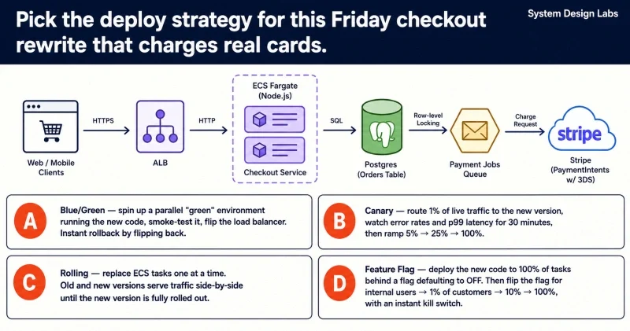
Transcription française des légendes
- System Design Labs
- Choisissez la stratégie de déploiement pour ce vendredi checkout
- réécrire qui charge de vraies cartes.
- ECS Fargate
- sau
- Web / Mobile
- Clients
- ALB
- Postgres
- Paiement Emplois
- (Paiements)
- Stipe
- (Tableau des commandes)
- jeue
- Bleu/Vert – créer un environnement « vert » parallèle
- Canary — route 1% du trafic vers la nouvelle version,
- exécuter le nouveau code, le tester, lèvre l'équilibreur de charge.
- surveiller les taux d'erreur et la latence de p99 pendant 30 minutes,
- Retour instantané en retournant.
- puis rampe 5% — 25% -» 100%.
- Drapeau de fonctionnalité : déployez le nouveau cade sur 100 % des tâches
- Rolling — remplacer les tâches ECS une à la fois,
- derrière un pédé par défaut à OFF. Puis retournez le drapeau pour
- Jusqu'à ce que la nouvelle version soit entièrement déployée.
- (Les anciennes et les nouvelles versions desservent le trafic côte à côte)
- utilisateurs internes — > 1% des clients -> 10% — + 100%,
- avec un interrupteur instantané kil
Vous livrez vendredi une réécriture du chemin d’écriture du paiement.
Node.js tourne sur ECS Fargate, avec environ 3 000 RPS au pic et PostgreSQL verrouille les lignes de orders. Le changement touche le prélèvement sur la carte du client. L’ancien chemin utilise Stripe Charges API et le nouveau, PaymentIntents avec 3DS.
Les vérifications QA et le test de charge passent. L’ingénieur référent a validé.
Il s’agit du paiement. Une panne touche directement l’argent et un rollback de code ne peut pas annuler une carte déjà débitée.
Quelle stratégie de déploiement choisissez-vous ?
Déploiement blue-green. Mettre en place un environnement « green » parallèle avec le nouveau code, effectuer des tests de bon fonctionnement et basculer le répartiteur de charge. Revenir instantanément en basculant dans l’autre sens.
Déploiement canary. Envoyer 1 % du trafic réel vers la nouvelle version. Observer les erreurs et le p99 pendant 30 minutes, puis passer à 5 %, 25 % et 100 %.
Déploiement progressif. Remplacer les tâches ECS une par une. Ancienne et nouvelle versions servent le trafic ensemble pendant le déploiement.
Feature flag. Déployer le nouveau code sur toutes les tâches avec le flag désactivé. L’activer pour les utilisateurs internes, puis 1 %, 10 % et 100 % des clients, avec la possibilité de le couper immédiatement.
Afficher la réponse et les explications
Réponse indiquée par l’auteur : D
Explication 1
Schéma de l’explication 1 · p. 59
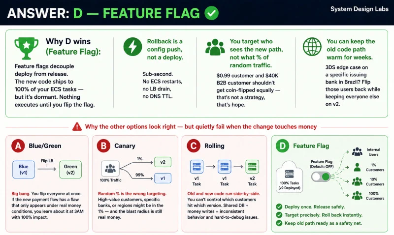
Transcription française des légendes
- «System Design Labs
- RÉPONSE :
- Pourquoi retenir D
- Rollback isa
- Vous ciblez qui
- Vous pouvez garder le
- (Caractéristiques du drapeau):
- config push,
- Yh voit le nouveau chemin,
- Chemin d'accès ancien code
- Pas un déploiement.
- pas quel % de
- Chaud pendant des semaines.
- trafic aléatoire.
- Drapeaux de feature decouple
- 30S edge case sur
- Déploiement depuis Release.
- «Sous-seconde.
- 0.99 $ client et 40K $
- «une émission spécifique
- Le nouveau code S
- sto
- Aucun redémarrage ECS,
- Banque à Bra
- 828 clients ne devraient pas
- 100% de vos tâches ECS
- pas de drain LB,
- faites voler la monnaie à parts égales
- Les utilisateurs sont de retour pendant que
- Pas de TTL.
- Garder tous les autres
- mais c'est dormant. Rien
- Ce n’est pas une stratégie,
- s'exécute jusqu'à ce que vous retourniez le drapeau.
- C'est de l'espoir.
- sur v2
- A Pourquoi les autres options semblent justes - mais échouent discrètement lorsque le changement touche l'argent
- Cc) Roulant
- (D) Drapeau Fosture
- Fest Fag
- Bleu
- nous
- 10%
- ee
- Taek
- Taek
- Big bang. Vous ip tout le monde à la fois
- Random est le mauvais ciblage.
- (id et nouveau code s'exécutent côte à côte,
- Si le nouveau paiement a maintenant un défaut
- Vous ne pouvez pas indiquer quels clients
- mignon:
- que l'ony semble unde eal argent
- banques, les régions pourraient être
- Iitwhich version, Partagé OB+
- 19 — et le souffle rau i stil
- incohérent
- Depey une fois. Libérez en toute sécurité
- argent wt
- Ciblez avec précision. Remontez instantanément.
- avec 100% d'impact
- argent réel
- Garder l'ancien chemin prêt a8 un filet de sécurité.
Réponse D : feature flag ✅
Voici pourquoi ce choix tient et comment les autres peuvent échouer sans bruit quand de l’argent est en jeu.
Pourquoi retenir D, avec un feature flag ?
Un feature flag sépare déploiement et mise à disposition. Le code arrive sur 100 % des tâches ECS et reste inactif jusqu’à l’activation du flag.
• Pour revenir en arrière, diffusez une configuration. En moins d’une seconde, sans redémarrage ECS, vidage des connexions du répartiteur ni attente du TTL DNS.
• Vous choisissez quels clients utilisent le nouveau chemin. Exposer au hasard un client qui paie 0,99 $ et un client B2B qui paie 40 000 $ de la même manière n’est pas une stratégie de risque.
• L’ancien chemin peut rester prêt pendant des semaines. En cas de problème 3DS avec une banque émettrice au Brésil, vous rebasculez ces seuls utilisateurs, tandis que les autres restent en v2.
Explication 2
Pourquoi B est tentant, avec un canary
- Le canary décrit répartit les requêtes, pas les clients. Une tâche de facturation B2B peut atteindre le canary à 1 % cinquante fois en une heure. Si son type de carte révèle un bogue, cinquante prélèvements partent avant qu’un tableau de bord ne le montre.
- Les erreurs de paiement peuvent prendre la forme d’un 200 qui prélève le mauvais montant. L’alerte liée au nombre de 5xx ne se déclenche jamais.
Explication 3
Pourquoi A ne convient pas, avec un déploiement blue-green
La bascule instantanée est le problème. Le répartiteur envoie aussitôt 100 % du trafic au nouveau code, y compris les webhooks Stripe qui confirment des PaymentIntents créés par l’ancien code. C’est une condition de concurrence entre versions sur de vrais prélèvements. Revenir à l’ancienne version n’annule aucun débit.
Explication 4
Pourquoi C ne convient pas, avec le déploiement progressif
Pendant cinq à dix minutes, les deux versions traitent les paiements en parallèle. La création de commande atteint v1. 800 ms plus tard, le webhook de confirmation arrive sur v2. On peut écrire un état incohérent avec deux versions jamais testées ensemble.
Vérifier rapidement si l’utilisateur a déjà vu un contenu
Illustration de la question du jour 15 · p. 61
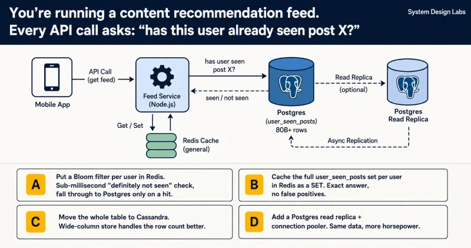
Transcription française des légendes
- Vous exécutez un flux de recommandation de contenu.
- System Design Labs
- Chaque appel d’API demande : « cet utilisateur a-t-il déjà vu le post X ? »
- L'utilisateur a vu
- APICall
- post x ?
- (et flux) — >
- Lire la réplique
- (facultatif)
- Flux
- vu non vu
- App mobile
- (Nœud js)
- Postgres
- (user_seen_posts)
- Postgres
- Lire la réplique
- 808+ lignes
- Redis Cache
- Asyne Replication
- (Général)
- Mettez un filtre Bloom par utilisateur dans Redis.
- Mettre en cache l'utilisateur complet
- .fr_posts définis par utilisateur
- vérification submilliseconde "certainement pas vu",
- 6a SET. Réponse exacte,
- tomber à Postgres seulement sur un coup.
- Pas de faux positifs.
- Déplacez toute la table vers Cassandre.
- Le magasin à large colonne gère mieux le nombre de lignes.
- ‘Ajouter une réplique de lecture Postgres +
- Mêmes données, plus de puissance.
Vous exploitez un fil de recommandations de contenu pour 50 millions d’utilisateurs.
Chaque appel API demande si l’utilisateur a déjà vu la publication X.
Chaque contrôle consulte aujourd’hui PostgreSQL. user_seen_posts contient 80 milliards de lignes et continue de grossir. Le p99 de l’endpoint du fil dépasse 600 ms et le DBA vous envoie des graphiques CPU à 2 h du matin.
Voici la configuration.
• Le service de fil tourne sous Node.js, avec environ 120 000 RPS au pic.
• Chaque recommandation entraîne un SELECT dans PostgreSQL pour vérifier si elle a déjà été vue.
• La table user_seen_posts(user_id, post_id, seen_at) est partitionnée, indexée et toujours lente.
• Le taux de succès du cache est bon. La longue traîne des recherches sur des données froides pose problème.
• Un faux positif « déjà vu » est tolérable. Un faux négatif qui affiche deux fois la même publication est gênant, mais acceptable.
L’équipe produit exige un p99 inférieur à 100 ms. Vous avez un sprint. Quelle option choisissez-vous ?
Placer un filtre de Bloom par utilisateur dans Redis. Répondre en moins d’une milliseconde pour les contenus assurément jamais vus. Consulter PostgreSQL seulement si le filtre indique une présence possible.
Conserver dans Redis l’ensemble complet user_seen_posts par utilisateur sous forme de SET. La réponse est exacte, sans faux positif.
Migrer toute la table vers Cassandra. Son stockage à colonnes larges gère mieux ce nombre de lignes.
Ajouter une réplique de lecture PostgreSQL et un gestionnaire de pool de connexions. Mêmes données, plus de capacité.
Afficher la réponse et les explications
Réponse indiquée par l’auteur : A
Explication 1
◧ Schéma de l’auteur indisponible : l’image source renvoyait une erreur 404.
A — Un filtre de Bloom par utilisateur dans Redis (bonne réponse)
Un filtre de Bloom donne une garantie absolue lorsqu’il dit « cet élément n’est pas dans l’ensemble ». Dans ce cas, inutile d’interroger PostgreSQL. S’il indique une présence possible, la base sert à confirmer.
Pourquoi cette solution fonctionne ici
• Environ 97 % des contrôles concernent des publications encore jamais vues. Redis répond « assurément absent » en moins d’une milliseconde sans passer par PostgreSQL.
• Pour 10 000 publications par utilisateur, un filtre de Bloom avec 1 % de faux positifs tient dans 12 Ko. Un SET Redis pour les mêmes données demande plus de 80 Ko et croît linéairement.
• Pour 50 millions d’utilisateurs, comptez environ 600 Go en filtres de Bloom contre environ 4 To en SET Redis.
• Exemples : le contrôle de lecture de Medium, les vérifications rapides de SSTable dans Cassandra et les portefeuilles SPV Bitcoin.
Le taux de 1 % de faux positifs signifie qu’une publication jamais vue sera, à l’occasion, écartée. L’équipe produit accepte ce compromis. Un filtre de Bloom ne produit aucun faux négatif qui ferait réapparaître une publication déjà vue, ce que le corrigé juge rédhibitoire.
Explication 2
B — Un SET Redis par utilisateur (option tentante)
Sur le papier, le SET offre la même vitesse en O(1) et une réponse exacte, sans faux positif. SISMEMBER a fait ses preuves.
La mémoire explose chez les gros utilisateurs. Un utilisateur ayant vu 50 000 publications occupe 3 à 4 Mo dans un SET Redis. Les 5 % d’utilisateurs les plus actifs font gonfler le cluster. Il faut surdimensionner Redis ou évincer ces utilisateurs très actifs, ce qui annule le bénéfice.
Utilisez un SET Redis si la cardinalité est faible, par exemple moins de 1 000 éléments par clé, ou si les faux positifs sont inacceptables. Un filtre de Bloom convient aux cardinalités élevées quand une réponse probabiliste suffit.
Explication 3
C — Migrer vers Cassandra (patron pertinent dans un autre cas)
Cassandra sait gérer les données à colonnes larges et beaucoup de lignes. PostgreSQL bien partitionné peut stocker 80 milliards de lignes. Le problème se manifeste dans la latence de lecture sous charge.
Changer de moteur ne change pas les accès : une recherche ponctuelle par recommandation. Il faudrait plusieurs trimestres et de nouvelles compétences d’exploitation pour un problème réglable en un sprint avec 12 Ko par utilisateur dans Redis.
Cassandra convient si le débit d’écriture ou le parcours de lignes larges est le goulet d’étranglement. Ici, le chemin critique effectue 120 000 consultations ponctuelles par seconde.
Explication 4
D — Réplique de lecture PostgreSQL et pool de connexions (plus de capacité)
Les répliques ajoutent de la capacité. Chaque contrôle implique toujours un accès disque, une recherche B-tree et un aller-retour. Trois répliques multiplient peut-être le débit de lecture par 2,5 avant que le retard de réplication et les plafonds de connexions entrent en jeu.
Pour tenir sous 100 ms au p99 à 120 000 RPS, évitez d’interroger la base dans les 97 % de cas où la réponse est négative.
Cette option est celle des équipes qui assimilent tout problème de performance à un manque de capacité.
Soulager une clé de partition trop sollicitée
Illustration de la question du jour 16 · p. 65
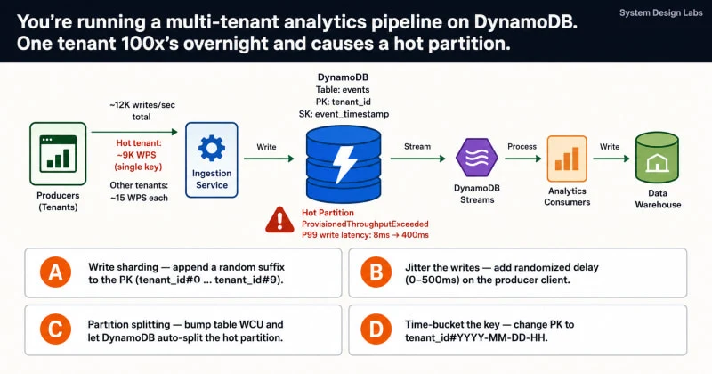
Transcription française des légendes
- tem Design
- abs
- Vous exécutez un pipeline d'analyse multi-locataires sur DynamoDB.
- Un locataire 100x nuit et provoque une partie chaude
- ion.
- «Tableau: événements
- DynamoDB
- 12K écrit/voit
- Total
- ‘SK: event_timestamp
- Locataire :
- Ecrire
- (al)
- (clé unique)
- Ingestion
- wm B
- Producteurs
- Autres locataires :
- Service
- Analyses
- Données
- (Tenants)
- « IS WPS chaque
- Flux
- Consommateurs
- Entrepôt
- Partition chaude
- Write sharding — ajouter un suffixe aléatoire
- Jitter les écritures — ajouter un délai aléatoire
- A]
- à la PK (locataire_id — 0 ... locataire_id — 9),
- 2)
- (0-500ms) sur le client producteur.
- Séparation des partitions — table à bosses
- ‘Time-bucket la clé — changer PK à
- laisser DynamoDB diviser automatiquement la partition chaude
- locataire_id — AAAA-MM-JJ-HH.
Vous exploitez un pipeline analytique multitenant sur DynamoDB. Il dessert 200 tenants pour un total de 12 000 écritures/s. Jusque-là, tout fonctionnait.
Du jour au lendemain, l’un des tenants accueille un très gros client. Son volume d’événements est multiplié par 100. Il atteint à lui seul 9 000 écritures/s sur une unique clé de partition. Les 199 autres tenants génèrent très peu de trafic.
Les erreurs ProvisionedThroughputExceeded se multiplient. Le p99 de la latence d’écriture passe de 8 ms à 400 ms. L’équipe d’astreinte reçoit une alerte. Une seule clé suffit à faire brider le trafic de tous les tenants.
Voici la configuration.
• Table : events (DynamoDB, capacité à la demande)
• Clé de partition (PK) : tenant_id · Clé de tri (SK) : event_timestamp
• Tenant très actif : environ 9 000 écritures/s · Autres tenants : environ 15 écritures/s chacun
• Une seule clé de partition concentre les 9 000 écritures/s et se heurte à la limite par partition de DynamoDB.
C’est un cas classique de partition chaude. Que faites-vous ?
Sharding en écriture : ajouter un suffixe aléatoire à la clé de partition (tenant_id#0 … tenant_id#9).
Ajouter du jitter aux écritures : le producteur introduit un délai aléatoire de 0 à 500 ms.
Fractionner la partition : augmenter la capacité d’écriture de la table (WCU) et laisser DynamoDB scinder automatiquement la partition chaude.
Segmenter la clé par fenêtre de temps : remplacer la clé de partition par tenant_id#YYYY-MM-DD-HH.
Afficher la réponse et les explications
Réponse indiquée par l’auteur : A
Explication 1
Schéma de l’explication 1 · p. 67
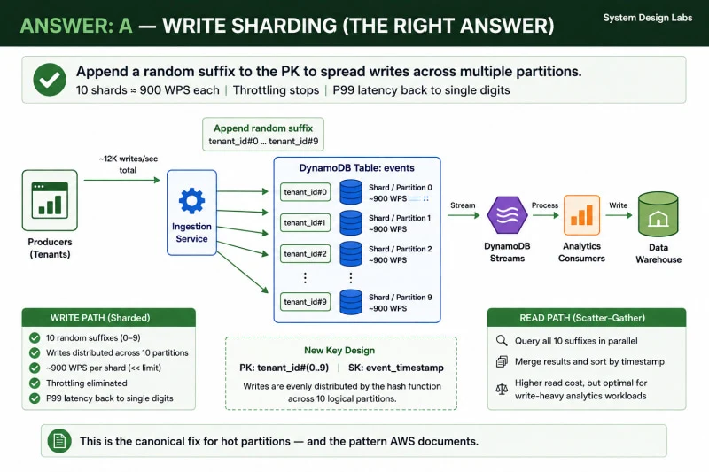
Transcription française des légendes
- System Design Labs
- ÉCRIVEZ LE BARRI — RE (LA BONNE RÉPONSE)
- Ajoutez un suffixe aléatoire au PK pour répartir les écritures sur plusieurs partitions.
- 10 éclats — 900 WPS chacun — Throttling arrête — latence P99 retour à un seul chiffre
- Ajouter un suffixe aléatoire
- _id — 0.. _id — 9
- DynamoDB Table : événements,
- Shard / Parton 0
- 900 Ws
- semble
- Shard Parton
- 100 WPS
- 8:
- Producteurs
- (Tenants)
- Shard Parton
- ynamoDB
- Analyses
- Données
- 900 WPS
- «Streams
- «Consommateurs
- Entrepôt
- Shard / Partin 9
- 900 WPS
- LIRE LE CHEMIN (Scatter)
- 10 sutios aléatoires (0-8)
- Q avery
- 10 suffixes en parallèle
- Wites cistioted à travers 10 partitions
- Nouvelle conception de clé
- -900 WPS par fragment ( — it)
- Ph
- locataire_id — (0,9)
- GB Fusionner les poursuites et trier par horodatage
- Trotting eiminé
- Les wirltes sont uniformément distribuées par la fonction de hachage
- PooIatency de retour à un seul chiffre
- « 10 partitions logiques.
- Il s'agit du correctif canonique pour les partitions à chaud — et le modèle des documents AWS.
A — Sharding en écriture (bonne réponse)
DynamoDB calcule le hachage de la clé de partition pour choisir le shard physique qui reçoit l’écriture. Une valeur de clé, un shard, une limite. Quand ce tenant atteint 9 000 écritures/s, le shard sature.
La solution consiste à ajouter un suffixe aléatoire à l’écriture, de tenant_id#0 à tenant_id#9. La fonction de hachage reçoit désormais dix clés distinctes. Les écritures se répartissent sur dix partitions logiques, à raison d’environ 900 écritures/s chacune, bien en dessous de la limite. Le bridage cesse et le p99 redescend sous les 10 ms.
Côté lecture, il faut interroger les dix suffixes et réunir les résultats (scatter-gather) pour consulter les données du tenant. Ce compromis convient à un pipeline analytique qui reçoit surtout des écritures.
AWS documente cette approche comme la solution de référence pour les partitions chaudes.
Explication 2
C — Fractionnement de la partition (choix trompeur)
DynamoDB sait fractionner automatiquement les partitions, d’où l’attrait de cette option. Le fractionnement dépend toutefois du débit, et non du nombre de valeurs de clé. Si une seule valeur de clé génère 9 000 écritures/s, elles continuent toutes d’être dirigées vers la même destination après le fractionnement. Une valeur de clé ne peut pas être répartie sur deux shards physiques.
CloudWatch affichera le fractionnement. Vous penserez avoir résolu le problème, puis une nouvelle alerte arrivera dix minutes plus tard. Une solution plausible sur le papier qui échoue en pleine gestion d’incident.
Explication 3
B — Ajouter du jitter aux écritures
Le jitter est une technique éprouvée contre les rafales de requêtes synchronisées (thundering herd). Si N clients envoient leurs requêtes à la même milliseconde, les échelonner sur 500 ms permet de lisser le pic.
Ici, la partition chaude subit un débit durable de 9 000 écritures/s. Décaler les écritures ne réduit pas le débit : DynamoDB reçoit toujours 9 000 écritures/s sur la même partition. Chaque écriture prend davantage de temps, sans contrepartie.
Explication 4
D — Segmenter la clé par fenêtre de temps
Une clé comme tenant_id#2026-05-21-14 convient aux séries temporelles : elle limite la taille des segments et facilite l’expiration par TTL.
Pendant une heure donnée, une seule clé de partition absorbe toujours les 9 000 écritures/s de ce tenant. La partition chaude est simplement devenue un créneau horaire chaud. En plus, il faut désormais interroger 24 clés de partition pour lire une journée de données.
Appliquer la contre-pression à un consommateur saturé
Illustration de la question du jour 17 · p. 69
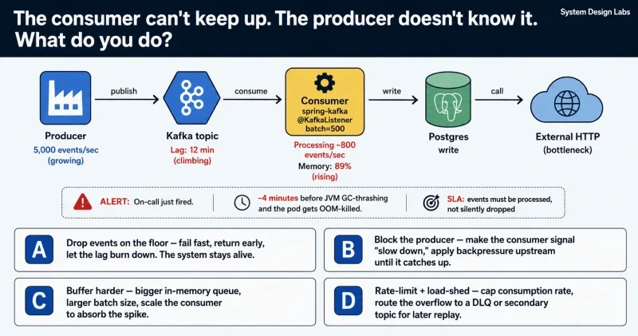
Transcription française des légendes
- «système Design Labs
- Le consommateur ne peut pas suivre. Le producteur ne le sait pas
- Qu'est-ce que tu fais ?
- Producteur
- Kafka topic
- Postgres
- HTTP externe
- 5 000 événements/sec
- Lag: 12 min
- Traitement -800
- «événements/voir
- écrire
- (goulot d'étranglement)
- (croissance)
- (montée)
- Mémoire: 89%
- 4 minutes avant le GC-thrashing de JVM
- «SLA: les événements doivent être traités,
- et la capsule est grillée.
- Drop événements sur le sol - échouer rapidement, revenir tôt,
- Bloquer le producteur - faire le signal du consommateur
- laisser le lag brûler. Le système reste en vie,
- « ralentir », appliquer une contre-pression en amont
- oO
- I)
- Jusqu'à ce qu'il rattrape.
- Tampon plus dur
- une plus grande file d'attente en mémoire,
- Taux-limite + taux de consommation de plafonnement
- plus grande taille de lot, mettre à l'échelle le consommateur
- router le trop-plein vers un DLQ ou secondaire
- pour absorber le pic.
- Sujet à rejouer ultérieurement.
Votre consommateur Kafka traite 800 événements/s.
Le producteur vient d’atteindre 5 000 événements/s et ne ralentit pas.
Le retard de consommation atteint 12 minutes et se creuse. La mémoire du consommateur est utilisée à 89 % et la courbe monte. L’astreinte vient d’être alertée. Il vous reste environ quatre minutes avant que la JVM passe son temps dans le ramasse-miettes et que le pod soit arrêté faute de mémoire (OOM).
Voici la configuration.
Producteur → topic Kafka (5 000 événements/s, en hausse)
Consommateur → spring-kafka @KafkaListener, batch=500, environ 800 événements traités par seconde
En aval → écriture dans PostgreSQL et appel HTTP externe, le vrai goulot d’étranglement
SLA → tous les événements doivent être traités, sans perte silencieuse.
Le consommateur n’arrive plus à suivre et le producteur n’en sait rien. Que faites-vous ?
Abandonner les événements en trop : sortir immédiatement du traitement pour résorber le retard et garder le système en état de marche.
Bloquer le producteur : le consommateur lui signale de ralentir et applique de la contre-pression en amont jusqu’à rattraper son retard.
Augmenter le tampon : agrandir la file en mémoire et les lots, puis ajouter des instances du consommateur pour absorber le pic.
Limiter le débit et délester : plafonner le débit de consommation et envoyer le surplus vers une DLQ ou un topic secondaire pour le rejouer plus tard.
Afficher la réponse et les explications
Réponse indiquée par l’auteur : D
Explication 1
Schéma de l’explication 1 · p. 71
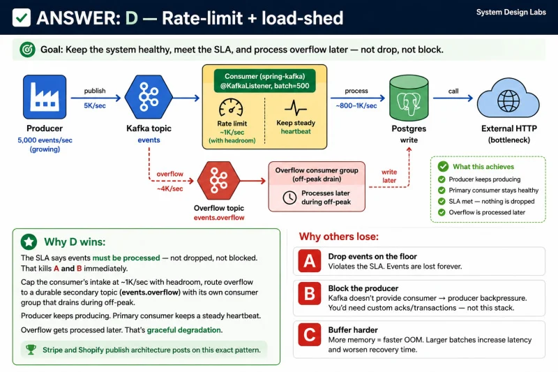
Transcription française des légendes
- System Design Labs
- RÉPONSE: D — Limite de débit + délestage
- Objectif: Garder le système en bonne santé, rencontrer le SLA, et le processus déborder plus tard - pas laisser tomber, pas bloquer.
- Consommateur (epring-katka)
- publier
- Kafkalistener, batch — 500
- Producteur
- Kafka topic
- ibe
- Postgres
- HTTP externe
- 5 000 événements/voir
- événements
- (goulot d'étranglement)
- (croissance)
- Groupe de consommateurs de débordement
- écrire
- ce qui permet de
- (Drain hors pointe)
- Producteur eens producteur
- Processus ultérieurs
- Le consommateur primaire reste heathy
- Sujet de débordement
- SLAmet rien je recadré
- Pourquoi les autres perdent :
- pourquoi d gagne :
- « Le SLA dit que les événements doivent être traités – pas abandonnés, pas bloqués.
- Drop événements sur le sol
- Viole le SLA, les événements sont perdus pour toujours.
- Cela tue A et B immédiatement.
- LA
- Limiter la consommation du consommateur à — IK/sec avec dégagement, trop-plein
- un sujet secondaire durable (events.overflow) avec son propre consommateur
- Bloquer le producteur
- LB)
- Kafka ne fournit pas de contre-pression consommateur + producteur.
- « groupe qui draine pendant les heures creuses.
- Vous auriez besoin d'un rack/transaction personnalisé, pas de cette pile.
- Producteur continue de produire, le consommateur primaire maintient un rythme cardiaque régulier.
- Le débordement est traité plus tard.
- Tampon plus dur
- ‘Plus de mémoire — OOM plus rapide. Les lots plus importants augmentent la latence
- stripe et Shopity publient des articles d'architecture sur ce modèle exact
- "et d'aggraver le temps de récupération.
Réponse : D — Limitation de débit et délestage ✅
Pourquoi D fonctionne
Le SLA exige que les événements soient traités, sans en perdre ni bloquer leur arrivée. A et B sont donc à écarter. Plafonnez la consommation à environ 1 000 événements/s, avec une marge de capacité. Envoyez le surplus vers un topic secondaire persistant (events.overflow), doté de son propre groupe de consommateurs pour le vider en heures creuses. Le producteur continue à émettre. Le consommateur principal maintient un rythme stable. Le surplus sera traité ultérieurement. C’est une dégradation maîtrisée. Stripe et Shopify ont publié des articles d’architecture sur ce modèle.
Explication 2
Pourquoi B est tentant
Même les ingénieurs expérimentés peuvent s’y tromper. Reactor, RxJava et Akka peuvent transmettre un signal de contre-pression jusqu’au producteur et le bloquer, car leur protocole le prévoit. Kafka découple les deux parties et laisse le consommateur venir lire les événements. Le producteur ignore l’existence du consommateur. Aucun signal de contre-pression ne remonte par la connexion. B paraît familier aux personnes qui utilisent le streaming gRPC ou RxJava, mais cette approche ne se transpose pas à un système découplé qui repose sur un broker et un journal.
Explication 3
Pourquoi écarter A
Cette option perd des événements. Or le SLA impose de les traiter, sans perte silencieuse.
Explication 4
Pourquoi écarter C
Le tampon ne fait que gagner du temps. Un plus grand tampon absorbe un pic de 30 secondes, mais un consommateur à 800 événements/s reste débordé face à un débit stable de 5 000 événements/s. Le retard augmente de 4 200 événements/s. Un tampon d’un million d’événements vous donne environ quatre minutes. Vous retrouvez ensuite le même problème, avec une mémoire saturée en plus. Le vrai goulot d’étranglement est l’appel HTTP externe. Multiplier les consommateurs par cinq ne sert à rien si la dépendance aval bride le trafic dès la 51e requête.
Éviter une ruée sur le cache
Illustration de la question du jour 18 · p. 73
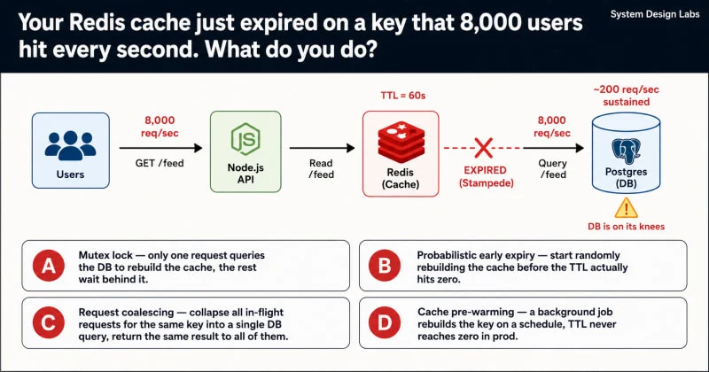
Transcription française des légendes
- System Design Labs
- Votre cache Redis vient d'expirer sur une clé que 8 000 utilisateurs
- Que fais-tu ?
- Années 60
- 200 req/sec
- soutenue
- 8,000
- req/sec
- GET /feed
- Node.js
- Lire
- EXPIRED
- Utilisateurs
- «APL
- Heed
- (Cache)
- (Stampede)
- Postgres
- Bis sur ses genoux
- ‘Mutex lock — une seule requête
- Pro
- Carly Expiration — Démarrer au hasard
- la base de données pour reconstruire le cache, le reste
- rebui
- le cache avant le TTL
- Attendez derrière.
- hits
- Demande de coalescence — effondrement en vol
- Cache pre-warming — un travail de fond
- Demandes pour la même clé dans un seul DB
- requête, retourne le même résultat à tous.
- atteint zéro dans prod.
- reconstruit la clé sur un calendrier, TTL jamais
Une clé Redis consultée 8 000 fois par seconde vient d’expirer.
Toutes ces requêtes se reportent aussitôt sur la base de données.
C’est l’effet de ruée sur le cache (thundering herd). Au départ, seul le cache posait problème. À présent, la base subit aussi un afflux de trafic.
Voici la configuration.
Service → API Node.js, 8 000 requêtes/s sur l’endpoint /feed
Cache → Redis, TTL de 60 s sur la clé servant le fil
Base → PostgreSQL, à l’aise à environ 200 requêtes/s en continu
Incident → le TTL a expiré au pic de trafic. Les 8 000 requêtes/s ont toutes atteint PostgreSQL simultanément.
La base est saturée. Elle risque de tomber dans les prochaines minutes, et la prochaine expiration est dans 60 secondes.
Que faites-vous ?
Verrou d’exclusion mutuelle (mutex) : une seule requête reconstruit le cache à partir de la base. Les autres attendent.
Expiration anticipée probabiliste : déclencher de façon aléatoire la reconstruction du cache avant que le TTL n’atteigne zéro.
Regroupement des requêtes : mutualiser les requêtes en cours pour une même clé en une seule lecture en base, puis renvoyer le même résultat à toutes.
Préchauffage du cache : une tâche d’arrière-plan rafraîchit la clé à intervalles réguliers pour qu’elle n’expire jamais en production.
Afficher la réponse et les explications
Réponse indiquée par l’auteur : D
Explication 1
Schéma de l’explication 1 · p. 75
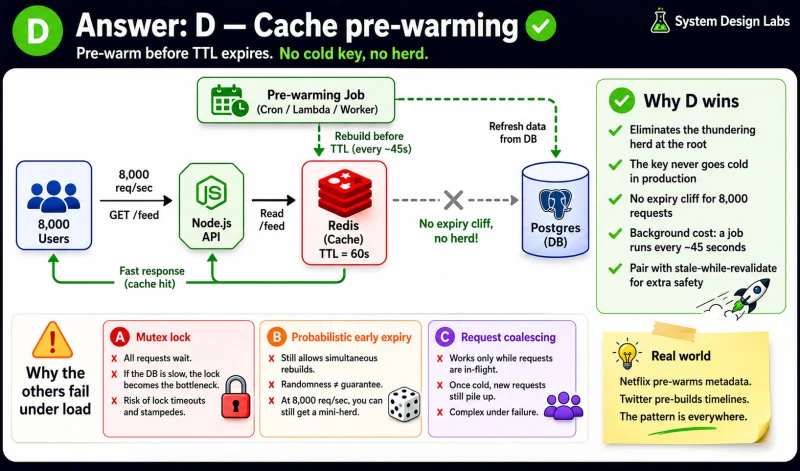
Transcription française des légendes
- ; — , Laboratoires de conception de systèmes
- D) Réponse: D — Cache pré-chauffage
- Préchauffé avant l'expiration du TTL.
- Pré-chauffage
- eer
- (Cron / Lambda / Travailleur)
- pourquoi Dwins
- Actualiser les données
- Reconstruire avant
- à DB
- « Élimine le tonnerre
- TT (tous les 45 — )
- Le troupeau à la racine
- VY La clé ne se refroidit jamais
- 8,000
- en production
- req/sec
- Y_Pas de caf d'expiration pour 8 000
- GET /feed
- Lire
- Demandes
- 8,000
- Moed
- Redis
- Pas d'expiration cif
- Postgres
- Utilisateurs
- (Cache)
- Pas de troupeau !
- (0B)
- YY Coût d'arrière-plan : un emploi
- Fonctionne toutes les — 45 secondes
- Paire avec vielle-while-revalidate
- Le réponse
- (cache hit)
- pour plus de sécurité
- Probabitsi cary expiration
- X Allrequest attente
- Sti bas simultanés
- Fonctionne uniquement pendant les demandes
- Le monde réel
- sont la nuit.
- Pourquoi
- Aléatoire — garantie.
- « Une fois que les demandes sont froides
- "Netflix préchauffe les métadonnées.
- D'autres échouent
- X Délais d'attente du troupeau Rsk
- 188.000 req/oe, vous pouvez
- Stl pile.
- Twitter pré-bullds calendriers.
- sous charge
- et de stampedes,
- « Le modèle est partout.
Réponse : D — Préchauffage du cache ✅
Voici pourquoi cette approche fonctionne et où les trois autres peuvent induire en erreur.
Pourquoi choisir D (préchauffage du cache)
Le préchauffage évite la ruée à la source. Une tâche d’arrière-plan, par exemple un cron, une Lambda planifiée ou un worker Sidekiq, rafraîchit la clé à intervalles fixes, plus courts que le TTL. La clé reste toujours disponible en production. Les 8 000 requêtes ne se retrouvent jamais sans entrée de cache au même instant.
Vous savez que la donnée est très sollicitée et quand elle expire, et vous avez la capacité de la recalculer à l’avance. Le coût se résume à une tâche d’arrière-plan exécutée environ toutes les 45 secondes, et la base ne voit jamais le pic. Netflix précharge les métadonnées de ses contenus. Twitter précalcule les fils des comptes très suivis. Cette technique est répandue, même si elle est rarement mise en avant dans les articles d’architecture.
Associez le préchauffage à stale-while-revalidate : renvoyez la valeur périmée pendant que la tâche rafraîchit le cache. Un léger retard du recalcul ne provoquera ainsi aucun défaut de cache.
Explication 2
Pourquoi C est tentant (regroupement des requêtes)
Le regroupement paraît élégant : toutes les requêtes concurrentes sur la même clé partagent une seule lecture en base et reçoivent le même résultat. Pas de ruée ni de contention sur un verrou.
Le regroupement demande toutefois une coordination au sein du processus. Il fonctionne très bien sur un serveur unique. Avec 50 instances Node.js derrière un répartiteur de charge, chaque instance regroupe ses requêtes de son côté. La base reçoit donc 50 requêtes concurrentes au lieu de 8 000. C’est mieux, mais chaque expiration du TTL provoque encore un pic d’un facteur 50. Regrouper les requêtes entre instances suppose une coordination distribuée, presque aussi complexe qu’un mutex et moins simple à mettre en œuvre.
C’est une bonne réponse pour un serveur doté d’un seul processus. À grande échelle, le regroupement ne résout qu’une partie du problème.
Explication 3
Pourquoi écarter A (mutex)
Le mutex semble simple : une requête acquiert le verrou et reconstruit le cache. Les autres attendent. Aucune lecture en base n’est dupliquée.
C’est justement l’attente qui pose problème. À 8 000 requêtes/s, les threads de l’API restent bloqués, la file des requêtes se remplit et la latence p99 grimpe à plusieurs secondes. La saturation se déplace vers la couche applicative. La base tient, mais l’expérience utilisateur se dégrade. Si le détenteur du verrou est lent, par exemple parce que la base sous pression met 500 ms à rafraîchir la clé, toutes les requêtes restent bloquées pendant ce délai.
Explication 4
Pourquoi écarter B (expiration anticipée probabiliste)
L’expiration basée sur XFetch ou le jitter est astucieuse. À mesure que le TTL diminue, chaque lecture du cache a une faible probabilité de déclencher un rafraîchissement anticipé. Ni verrou ni couche de coordination.
Cette approche réduit un risque sans offrir de garantie. Si peu de requêtes arrivent juste avant l’expiration, puis qu’un pic survient, la clé peut tout de même expirer sans avoir été régénérée. Le risque de ruée diminue, mais subsiste. Pour un endpoint qui reçoit 8 000 requêtes/s jour et nuit, il faut une garantie déterministe.
Relire ses propres écritures avec des répliques de lecture
Illustration de la question du jour 19 · p. 77
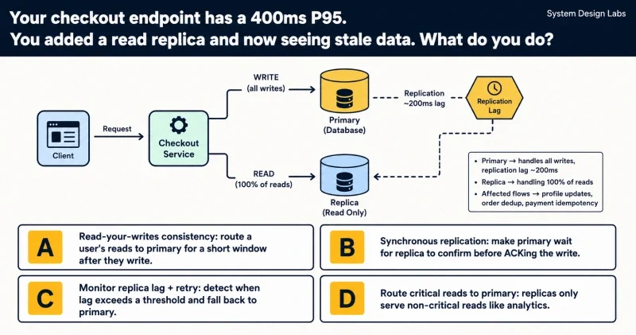
Transcription française des légendes
- System Design Labs
- Votre endpoint de paiement a un P95 de 400ms.
- Vous avez ajouté une réplique en lecture et vous voyez maintenant des données périmées. Que faites-vous ?
- Réplication
- Primaire
- (Base de données)
- Demande
- Checkout
- Client
- Service
- L LIRE __»
- délai de réplication — 200ms
- (100% des lectures)
- oR
- + gestion de 100% des lectures
- + Flux concernés > mises à jour de profil,
- Réplique
- (lecture seule)
- Lire-votre-wri
- Cohérence : route a
- «Réplique synchrone
- tion:
- ake pri
- ary attends
- lectures de l'utilisateur à primaire pour une courte fenêtre
- pour réplique à confirmer avant ACI
- 19 l'écriture.
- après avoir écrit.
- [A
- Moniteur de replie lag + réessayer: détecter quand
- Dépasse un seuil et retombe
- Lectures critiques de la route vers le primaire : réplicas uniquement
- servir des lectures non critiques comme des analyses.
- [IC]
- primaire.
Le p95 de votre endpoint de paiement atteint 400 ms. Le profilage indique que les lectures en base représentent 70 % de cette durée.
Vous ajoutez une réplique de lecture et lui envoyez toutes les requêtes SELECT. Le p95 baisse à 90 ms. L’équipe fête le résultat.
Deux heures plus tard, les tickets affluent. Des clients modifient leur adresse de livraison, puis retrouvent l’ancienne sur l’écran de confirmation. Un client est prélevé deux fois : la vérification censée détecter une commande existante a lu des données obsolètes et laissé passer le doublon.
Voici la configuration.
• Primaire → toutes les écritures, retard de réplication d’environ 200 ms
• Réplique → 100 % des lectures
• Flux touchés → mises à jour des profils, déduplication des commandes et idempotence des paiements
La réplique fonctionne comme prévu. C’est bien le problème.
Que faites-vous ?
Garantir la lecture de ses propres écritures : envoyer brièvement les lectures d’un utilisateur vers le primaire après une écriture.
Réplication synchrone : le primaire attend la confirmation de la réplique avant d’accuser réception de l’écriture.
Surveiller le retard de réplication et réessayer : au-delà d’un seuil de retard, réorienter les lectures vers le primaire.
Diriger les lectures critiques vers le primaire : réserver les répliques aux lectures non critiques, par exemple analytiques.
Afficher la réponse et les explications
Réponse indiquée par l’auteur : A
Explication 1
Schéma de l’explication 1 · p. 79
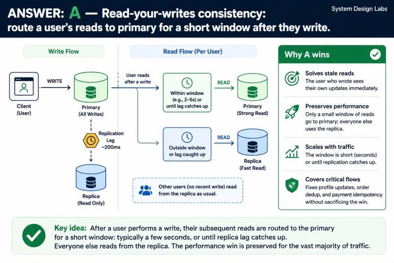
Transcription française des légendes
- «System Design Labs
- RÉPONSE :
- Lire-votre-écrit la cohérence:
- acheminer les lectures d’un utilisateur vers la primaire pendant une courte fenêtre après qu’il ait écrit.
- Ecrire le flux
- Lire le flux (par utilisateur)
- Pourquoi retenir A
- Solves stale lit
- écrire
- après avoir écrit
- « L’utilisateur qui écrit voit
- «Dans la fenêtre
- leurs propres mises à jour immédiatement.
- (e,2-58) ou
- Lire. est
- Client
- uptoupir
- Primaire
- (Utilisateur)
- Primaire
- Préserve les performances
- tes)
- (Forte lecture)
- Une petite fenêtre de lecture
- 90 à la primaire; tous les autres
- Utilise la réplique
- LIRE,
- Lag
- indiow
- Balances avec trafic
- «Orlag rattrapé
- Eth
- La fenêtre est courte (secondes)
- Réplique
- « ou jusqu’à ce que la réplication rattrape.
- (Lu rapidement)
- Couvre les flux critiques
- Autres utilisateurs no recent write) lire
- Corrige les mises à jour de profil, commande
- MW) de la réplique comme d'habitude
- dedup, et paiement idempotency
- Réplique
- Sans sacrifier la victoire
- (lecture seule)
- Idée clé: Après qu'un utilisateur effectue une écriture, leurs lectures suivantes sont acheminées vers le primaire.
- pour une fenêtre courte: généralement quelques secondes, ou jusqu'à ce que repli
- Le lag rattrape.
- Tout le monde lit la réplique. La victoire de performance est préservée pour la grande majorité du trafic.
Pourquoi A fonctionne
Après une écriture de l’utilisateur, ses lectures sont dirigées vers le primaire pendant un court délai, typiquement quelques secondes ou jusqu’à ce que la réplique ait rattrapé son retard. Les autres utilisateurs continuent à lire sur la réplique. La grande majorité du trafic conserve le gain de performance.
Explication 2
Pourquoi D est tentant
La notion de lecture « critique » évolue. Peu à peu, la liste des lectures envoyées au primaire se raccourcit et les problèmes de données obsolètes reviennent. Vous passez le trimestre suivant à corriger des incohérences au cas par cas. Une règle systématique a cédé la place à des décisions prises fonctionnalité par fonctionnalité.
Explication 3
Pourquoi écarter B
En réplication synchrone, le primaire attend que la réplique confirme chaque écriture. Le retard de réplication tombe à zéro, mais le p95 des écritures passe de 20 ms à 80–120 ms. De plus, la disponibilité du primaire dépend désormais de l’état de la réplique.
Explication 4
Pourquoi écarter C
La moyenne du retard de réplication n’explique pas le problème. L’utilisateur relit ses données dans les 200 ms qui suivent son écriture. La métrique paraît normale, puisque 200 ms est le retard habituel, mais la donnée dont il a besoin est encore en transit.
Isoler une dépendance aval en panne
Illustration de la question du jour 20 · p. 81
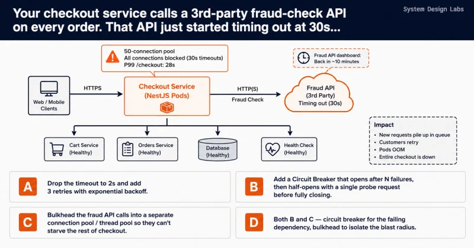
Transcription française des légendes
- stem Design Labs
- Votre service de paiement appelle une API de vérification de fraude tierce
- sur chaque commande. Cette API vient de commencer à timing à 30s...
- '50-connection pool
- Toutes les connexions sont bloquées (30s timeouts)
- 99 /eheckout: 286
- Bock
- HTTPS :
- Service de caisse
- HTTPS)
- API Fraude
- Web / Mobile
- (Nests Pods)
- Vérification de fraude
- Horaire (305)
- Gra Party)
- impact
- Nouvelles requêtes en file d'attente
- «Service des commandes
- Les clients réessayent
- Pods
- + Paiement complet vers le bas
- E
- (GE)
- ‘Ajouter un disjoncteur qui s’ouvre après N défaillances,
- «3 tentatives avec retour exponentiel
- Déposez le délai d'attente à 2s et ajoutez
- puis demi-ouverture avec une seule demande de sonde
- Avant fermeture complète
- Bulkhead les appels d'API de fraude dans un séparé
- « pool de connexion / pool de threads donc ils ne peuvent pas
- Disjoncteur B et C — pour la chute
- Le reste de la vie
- «dépendance, cloison pour isoler le rayon de souffle.
Votre service de paiement appelle une API tierce de détection de fraude à chaque commande.
Cette API atteint désormais le délai maximal de 30 s, alors qu’elle répond habituellement en 200 ms.
Les pods Node.js qui gèrent le paiement disposent d’un pool de 50 connexions. En 90 secondes, toutes les connexions restent occupées à attendre l’API antifraude. Les nouvelles requêtes de paiement s’accumulent dans la file. Le p99 de /checkout passe de 300 ms à 28 s. Les clients réessaient et les pods tombent à court de mémoire. L’API tierce fonctionne en mode dégradé, et tout votre parcours de paiement est hors service.
Voici la configuration.
• Paiement (NestJS) → API antifraude tierce, avec un délai maximal de 30 s
• Les mêmes pods servent /cart, /orders et /health, dont les dépendances fonctionnent normalement.
• D’après son tableau de bord, l’API antifraude devrait être rétablie dans environ 10 minutes.
• Vous êtes sur le point d’épuiser le budget d’erreur de votre SLO pour le trimestre.
Vous devez endiguer l’incident tout en maintenant le reste du service de paiement. Que faites-vous ?
Réduire le délai maximal à 2 s et effectuer trois nouvelles tentatives avec temporisation exponentielle.
Ajouter un circuit breaker qui s’ouvre après N échecs, puis passe à l’état semi-ouvert pour laisser passer une requête de test avant de se refermer complètement.
Isoler les appels à l’API antifraude dans un pool dédié de connexions ou de threads pour qu’ils ne monopolisent pas les ressources du reste du service.
Combiner B et C : un circuit breaker pour la dépendance en panne et un bulkhead pour en limiter le périmètre d’impact.
Afficher la réponse et les explications
Réponse indiquée par l’auteur : D
Explication 1
Schéma de l’explication 1 · p. 83
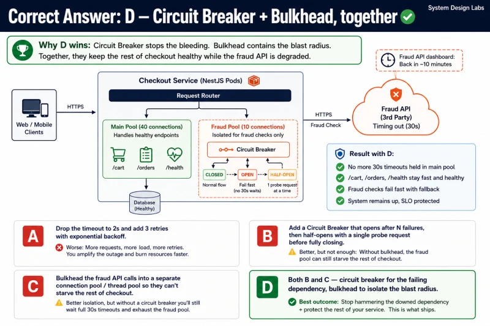
Transcription française des légendes
- Lat
- orrect Réponse: D — disjoncteur + cloison, ensemble
- ‘Pourquoi retenir D : Circuit Breaker arrête le saignement. Bulkhead contient le rayon d’explosion.
- Tableau de bord de l'API Fraude
- Ensemble, ils maintiennent le reste de la caisse en bonne santé pendant que l’API de fraude est dégradée.
- Retour en -10 minutes
- Service de caisse Nests Pods).
- HTTP
- Fraude APL
- (Grd Party)
- Web / Mobile
- Main Poo! (40 connexions)
- Fraud Poo! (10 connexions)
- Vérification de fraude
- Timing out (30s)
- Clients
- Points finaux de heathy des mains
- Resute avec
- ean
- "Nomore 30s timeouts tenue dans la piscine principale
- siège
- pce eet
- ‘cart, les ordres, helth rester rapide et en bonne santé
- Fraude vérifie un rapide avec flack
- le système reste en place, SLO protégé
- Déposez le délai d'attente à 2s et ajoutez 3 tentatives
- « Ajouter un disjoncteur qui ouvre N défaillances,
- Avec un backot exponentiel
- puis demi-ouverture avec une seule demande de sonde
- Pire: plus de demandes, plus de charge, plus de rere.
- avant fermeture complète
- Vous amplement la panne et les fesses erources plus vite
- A, Bete, mais pas assez: Sans cloison la fraude
- ‘oo! peut encore affamer le ret de la caisse
- pool de connexion / pool de threads donc ils ne peuvent pas
- « L’API de fraude appelle dans un
- Disjoncteur B et C — pour la défaillance
- Affamez le ret de la caisse.
- dépendance, cloison pour isoler le rayon de souffle.
- «A. Mieux vaut ica, mais sans un ice breaker youl sti
- Meilleur résultat: Arrêtez de marteler la dépendance abattue
- 'wat ful 0s timeouts et épuiser la fraude ook
- + protégez l'est de votre service. Thies whet navires
- LD
Réponse : D — Combiner circuit breaker et bulkhead ✅
Voici pourquoi cette approche fonctionne et où les trois autres peuvent induire en erreur.
Pourquoi choisir D (circuit breaker et bulkhead)
Les deux mécanismes répondent chacun à un mode de défaillance différent. Les deux sont nécessaires.
Le circuit breaker évite de solliciter sans relâche une dépendance indisponible. Après N échecs consécutifs, ou si le taux d’échec dépasse un seuil sur une fenêtre glissante, il passe à l’état OUVERT. Chaque nouvel appel vers l’API antifraude échoue immédiatement et déclenche une solution de repli, sans attente de 30 s ni connexion immobilisée. Après une période de temporisation, par exemple 30 s, il passe à l’état SEMI-OUVERT et laisse passer exactement une requête de test. Si le test réussit, il se ferme et le trafic reprend. Sinon, il se rouvre pour une nouvelle période de temporisation. L’état semi-ouvert, souvent survolé dans les tutoriels, empêche un afflux de requêtes de faire retomber un service à peine rétabli.
Le bulkhead cloisonne les pools de ressources. L’API antifraude obtient son propre pool, par exemple de dix connexions, distinct des 40 connexions qui desservent /cart, /orders et /health. Si l’API antifraude ne répond plus, elle peut saturer ses dix connexions. Les 40 autres restent disponibles. /cart et /health continuent de fonctionner. L’incident se limite à la fonction antifraude. Le nom vient des cloisons étanches d’un navire, qui empêchent l’inondation d’un compartiment de faire sombrer l’ensemble.
Resilience4j, Polly (.NET) et Hystrix, un ancien outil, proposent les deux mécanismes. AWS App Mesh associé à Envoy permet le cloisonnement au niveau du proxy. Netflix a écrit Hystrix après en avoir fait l’expérience : une seule dépendance lente avait propagé sa panne via des pools de threads partagés et mis le système de recommandations hors service en heure de pointe.
Explication 2
Pourquoi B paraît suffisant
En entretien, un circuit breaker seul semble une réponse complète. C’est le mécanisme le plus souvent cité lorsqu’on parle de résilience. Une fois le circuit ouvert, les appels antifraude échouent vite et libèrent les connexions.
En production, entre le premier échec et celui qui ouvre le circuit, chacune des N requêtes continue d’occuper une connexion du pool partagé. Avec un seuil de 20 échecs en 10 secondes, votre pool de 50 connexions peut saturer avant même le déclenchement du circuit breaker. Vous avez réduit la fenêtre de panne, sans empêcher l’effet domino.
Le cloisonnement laisse au circuit breaker le temps d’atteindre son seuil. Il vous donne une marge pour détecter l’incident et réagir avant que le reste du système soit touché.
B est une réponse valable mais incomplète. En revue de conception, il est facile de s’en contenter. Les ingénieurs qui ont vu cette option échouer en production à trois heures du matin choisissent D.
Explication 3
Pourquoi C ne règle qu’une partie du problème
Le cloisonnement limite les dégâts. Vos dix connexions antifraude dédiées attendront tout de même 30 secondes chacune sur des appels voués à échouer. Le délai de paiement reste le même pour le client. Le reste du service, comme /cart, demeure disponible.
Un bulkhead seul empêche la fuite de se propager. Le compartiment, lui, continue de se remplir.
Explication 4
Pourquoi A risque d’aggraver l’incident
Raccourcir le délai maximal et ajouter des tentatives avec temporisation est un antipattern pour une dépendance déjà dégradée.
L’API antifraude est déjà en difficulté et elle va maintenant recevoir trois fois plus de trafic. Les vagues de nouvelles tentatives de tous les pods convergent sur un service qui a besoin d’une baisse de charge pour se rétablir. Une panne partielle peut alors devenir générale, et un incident de dix minutes peut en durer quatre heures. Réessayez sur des erreurs transitoires, par exemple un 503 isolé ou une connexion réinitialisée. Face à une dégradation généralisée, un circuit breaker placé en amont des nouvelles tentatives est indispensable pour limiter l’impact.
C’est le sens d’un compte rendu d’incident qui indique qu’« une tempête de nouvelles tentatives a prolongé le rétablissement ».
Choisir un transport de streaming en temps réel
Illustration de la question du jour 21 · p. 86
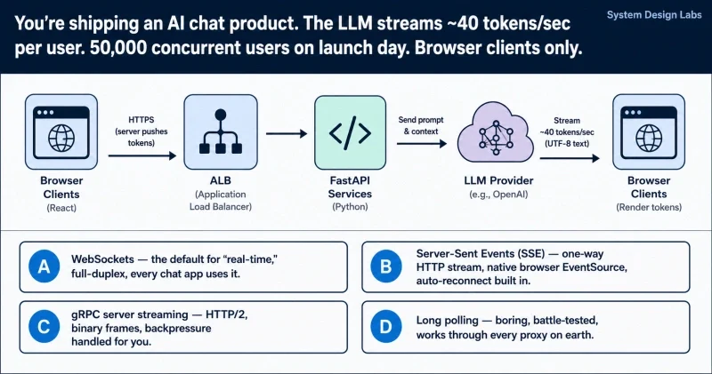
Transcription française des légendes
- System Design Labs
- Vous expédiez un produit de chat Al. Le LLM diffuse — 40 jetons / s
- par utilisateur. 50 000 utilisateurs simultanés le jour du lancement. Navigateur client uniquement.
- «Envoyer
- «eontext
- Flux
- (serveur pousse
- jetons)
- Navigateur
- ALB
- FastAPI
- LLM Provider
- Navigateur
- Clients
- (application
- Services
- (par exemple, ouvre
- Clients
- (Réagir)
- Balance de charge)
- (Python)
- (Render tokens)
- WebSockets — la valeur par défaut pour ‘real-time,
- Server-Sent Events (SSE) — à sens unique
- full-duplex, chaque application de chat l'utilise.
- Flux HTTP, navigateur natif EventSource,
- reconnexion automatique intégrée,
- Serveur RPC en streaming — HTTP/2,
- cadres binaires, contrepression
- Long sondage - ennuyeux, testé au combat,
- manipulés pour vous.
- « Travaille à travers chaque proxy sur la terre.
Vous lancez un assistant conversationnel. Le LLM produit environ 40 tokens par seconde et par utilisateur en streaming.
Vous attendez 50 000 utilisateurs simultanés le jour du lancement, tous sur navigateur. Les tokens ne circulent que dans un sens : du serveur vers l’utilisateur.
Votre équipe se réunit pour choisir le protocole de transport. Chacun a un avis bien arrêté.
Voici la configuration.
• Frontend : React dans le navigateur
• Backend : Python (FastAPI) derrière un ALB
• Données : tokens de texte UTF-8, d’environ 5 à 20 octets chacun
• Direction : le serveur envoie les données et le client les affiche.
• Les reconnexions doivent être transparentes pour les utilisateurs, car les réseaux mobiles se coupent souvent.
Votre responsable technique estime que le choix des WebSockets va de soi. L’ingénieur plateforme n’est pas convaincu. Quelle option mettez-vous en production ?
WebSockets : le choix habituel pour le temps réel, avec une communication bidirectionnelle simultanée, comme dans les applications de messagerie.
Server-Sent Events (SSE) : flux HTTP unidirectionnel, API EventSource intégrée au navigateur et reconnexion automatique.
Streaming serveur gRPC : HTTP/2, trames binaires et gestion intégrée de la contre-pression.
Long polling : une technique classique et éprouvée qui passe par tous les proxys.
Afficher la réponse et les explications
Réponse indiquée par l’auteur : B
Explication 1
Schéma de l’explication 1 · p. 88
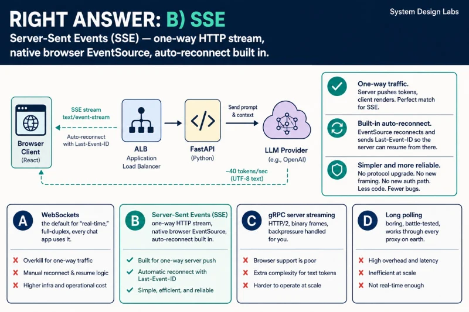
Transcription française des légendes
- System Design Labs
- REPONSE DROITE: B) ESS
- Événements envoyés par le serveur (SSE) — flux HTTP unidirectionnel,
- navigateur natif EventSource, reconnexion automatique intégrée.
- Trafic à sens unique.
- Le serveur pousse des jetons,
- rendu du client.
- sst
- Envoyer l'invite
- pour SSE.
- Reconnexion automatique intégrée.
- EventSource se reconnecte et
- Reconnexion automatique
- envoie Last-Event-ID donc le
- Navigateur
- serveur ean reprendre de là,
- Client
- ALB
- LLM Provider
- Demande
- (Python)
- Balanceur de charge
- « Plus simple et plus fiable.
- 40 jetons
- Pas de mise à niveau du protocole.
- Pas de nouveau chemin d'auth
- Le code Lee. Moins de bugs.
- WebSockets
- Événements envoyés par le serveur (SSE)
- ‘QRPC server streaming
- Longs sondages
- le défaut de « temps réel » ;
- «flux HTTP unidirectionnel,
- HITR/2, trames binaires,
- Ennuyeux, testé sur batterie,
- full-duplex, chaque tchat
- navigateur natif EventSource,
- contre-pression manipulée
- Fonctionne à travers chaque
- proxy sur Terre.
- X Overkil pour le trafic unidirectionnel
- X Le support du navigateur est médiocre
- X Frais généraux et latence élevés
- X Manuel reconnecter & reprendre la logique
- Reconnecter automatiquement avec
- X- Complexité supplémentaire pour les jetons de texte
- Last-Event-ID
- X_ Coûts d'infrastructure et d'exploitation plus élevés
- X Plus difficile à utiliser à grande échelle
- X Pas assez en temps réel
- Simple, efficace et fiable
Pourquoi choisir B (SSE)
Le flux est unidirectionnel : le serveur envoie les tokens et le client les affiche. Le client ne renvoie aucun token pendant le streaming, car la saisie de l’utilisateur est transmise par une requête POST séparée. Une connexion bidirectionnelle simultanée serait donc superflue.
SSE est conçu pour ce type de flux. Le serveur écrit au format text/event-stream sur une connexion HTTP de longue durée et l’API EventSource du navigateur lit le flux. Aucun changement de protocole, nouveau format de trames ou nouveau mécanisme d’authentification n’est nécessaire.
L’avantage décisif est la reconnexion automatique avec Last-Event-ID. Si le navigateur perd la connexion ou que le téléphone passe du Wi-Fi à la LTE, EventSource se reconnecte et communique au serveur le dernier événement reçu. Le serveur peut rejouer les événements suivants. Avec WebSockets, ce mécanisme est à implémenter et à fiabiliser soi-même.
Les API de streaming d’OpenAI et d’Anthropic utilisent SSE.
Explication 2
Pourquoi A est tentant (WebSockets)
Le terme « chat » prête à confusion. Une messagerie comme Slack ou WhatsApp échange des données dans les deux sens. Un assistant IA expose ici un flux unidirectionnel de tokens et reçoit le prompt dans une requête POST distincte. Ces deux échanges appellent des transports différents.
Les coûts à 50 000 connexions :
• Affinité de session sur l’ALB
• Logique de reconnexion et de rejeu à développer soi-même
• Signaux de vie et échanges ping/pong pour détecter les connexions perdues
• Mémoire supplémentaire par connexion pour des tampons inutilisés
Chacun de ces points risque de devenir une nouvelle alerte d’astreinte.
Explication 3
Pourquoi écarter C (streaming gRPC)
Les navigateurs ne prennent pas nativement en charge gRPC. Il faut ajouter Envoy et gRPC-Web, qui réduisent les capacités du streaming et introduisent un saut de proxy. Vous vous retrouvez à exploiter Envoy et à déboguer des trames Protobuf dans l’onglet réseau du navigateur pour transmettre des tokens UTF-8. Le transport convient aux échanges entre services, mais mal à des clients web.
Explication 4
Pourquoi écarter D (long polling)
À 40 tokens/s, chaque cycle de polling consomme une requête HTTP entière. À 50 000 utilisateurs, cela fait deux millions de requêtes par seconde rien que pour afficher du texte. C’est une solution de repli si SSE et WebSockets sont bloqués. En 2026, il y a de meilleurs choix par défaut.
Fiabiliser la messagerie entre services
Illustration de la question du jour 22 · p. 90
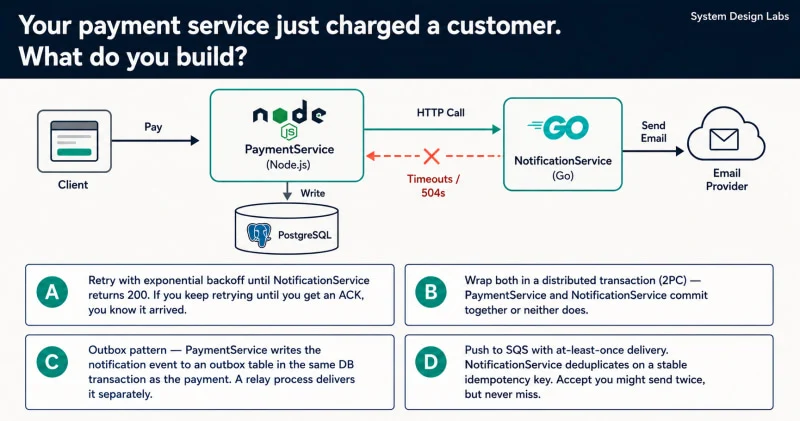
Transcription française des légendes
- «System Design Labs
- Votre service de paiement vient de facturer un client.
- Que construisez-vous ?
- Appel HTTP
- Rémunération
- Envoyer
- nede
- GO
- Adresse électronique
- PaymentService
- NotificationService
- (Go)
- Adresse électronique
- Client
- Délais d'attente /
- Fournisseur
- Ecrire
- 504s
- Réessayez avec un backoff exponentiel jusqu'à NotficationService
- Enveloppez les deux dans une transaction distribuée (2PC)
- Si vous continuez à réessayer jusqu'à ce que vous obteniez un ACK,
- PaymentService et NotificationService commit
- Vous savez qu'il est arrivé
- Ensemble ou pas.
- Modèle de boîte d'envoi — PaymentService écrit le
- Poussez vers SQS avec au moins une livraison.
- événement de notification à une table d'outbox dans la même base de données
- NotificationService déduplique sur une écurie
- transaction en tant que paiement. Un processus de relais livre
- Acceptez que vous puissiez envoyer deux fois,
- elle séparément
- ihe
- mais ne manquez jamais
Votre service de paiement vient de débiter un client.
Après l’écriture en base, il doit demander au service de notifications d’envoyer l’e-mail de confirmation.
L’appel HTTP atteint son délai maximal. La demande est-elle arrivée ? Impossible de le savoir. Vous réessayez et le client reçoit deux e-mails.
C’est le problème des deux généraux, un résultat démontré qui s’applique même lorsque votre implémentation fonctionne comme prévu.
Aucun protocole sur un canal non fiable ne peut garantir que les deux parties s’accordent sur la réception du dernier message. Ni HTTP, ni TCP, ni une boucle de nouvelles tentatives ne lèvent cette incertitude.
Voici la configuration.
PaymentService (Node.js, PostgreSQL) → NotificationService (Go)
Latence p99 d’environ 40 ms, avec des erreurs 504 occasionnelles sous charge.
Vous devez envoyer exactement un e-mail de confirmation par paiement, sans doublon ni omission.
Que mettez-vous en place ?
Réessayer avec temporisation exponentielle jusqu’à ce que NotificationService renvoie un 200. Une fois l’accusé de réception obtenu, vous savez que la demande est arrivée.
Regrouper les deux opérations dans une transaction distribuée (2PC) : PaymentService et NotificationService valident tous les deux ou aucun ne valide.
Utiliser une outbox transactionnelle : PaymentService enregistre l’événement de notification dans une table outbox, dans la même transaction que le paiement. Un processus relais le transmet séparément.
Publier dans SQS avec une garantie de remise au moins une fois. NotificationService déduplique les messages avec une clé d’idempotence stable. Un message peut être remis deux fois, mais aucun ne doit manquer.
Afficher la réponse et les explications
Réponse indiquée par l’auteur : D
Explication 1
Schéma de l’explication 1 · p. 92
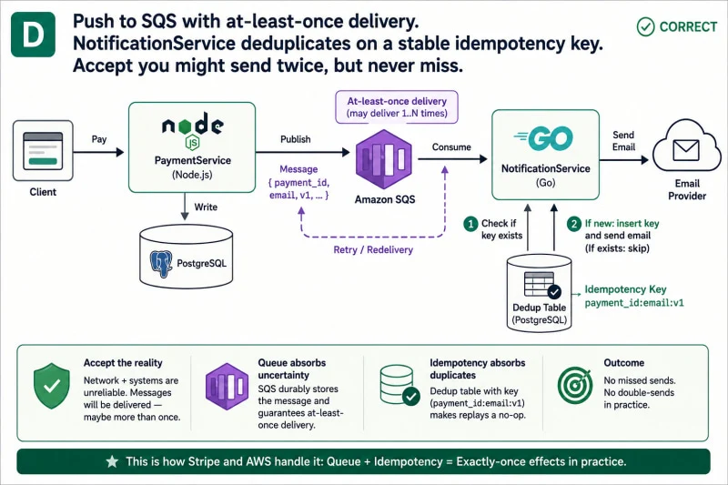
Transcription française des légendes
- Poussez vers SQS avec au moins une livraison.
- correct
- NotificationService déduplique sur une clé idempotency stable.
- Acceptez que vous pourriez envoyer deux fois, mais ne manquez jamais.
- Iver 1.
- Publier
- Envoyer
- nede
- Consommer
- Adresse électronique
- PaymentService
- Message
- NotificationService
- Client
- payment_id,
- (Go)
- Ecrire
- «email, v1,
- «Amazon SOS
- Fournisseur
- ane
- « et envoyer un courriel
- La clé existe
- Réessayer / Rouge
- ery
- Clé d'identité
- Dedup Table
- paiement_id:email:vi
- « Accepter la réalité
- File d'attente absorbe
- L’identité absorbe
- Résultat
- Les systèmes réseau + sont
- doublons
- "Pas d'envoi manqué,
- SOS durablement
- Table avec clé
- Pas de double-envoi
- Sera livré -
- Le message et
- (payment_id:email:v3)
- « Peut-être plus d’une fois.
- une fois la livraison.
- «fait des replays une non-op,
- * Thi
- Comment Stri
- ind AWS handl
- File d'attente + ID
- ctl
- nc
- des défauts dans la pratique.
D — SQS, remise au moins une fois et clé d’idempotence (bonne réponse)
Cette réponse accepte l’impossibilité d’une remise certaine et conçoit le système en conséquence. La garantie « au moins une fois » signifie que le message arrive, éventuellement en double. L’idempotence du consommateur, assurée ici par une table de déduplication avec la clé payment_id:email:v1, fait que la deuxième remise ne déclenche aucune opération. En pratique, ni envoi oublié ni envoi en double. Stripe et AWS suivent cette approche. La file prend en charge l’incertitude de livraison et l’idempotence neutralise les doublons.
Explication 2
A — Réessayer jusqu’à l’accusé de réception (choix trompeur)
Cela semble infaillible. Mais si c’est la réponse 200 qui n’est jamais arrivée, alors que la requête a bien été reçue ? NotificationService a envoyé l’e-mail et répondu 200, sans que vous voyiez la réponse. Vous réessayez et un second e-mail part. Il vous faut désormais confirmer la réception de l’accusé de réception, et ainsi de suite. Aucune suite finie de nouvelles tentatives ne résout le problème des deux généraux. Ajouter des échanges augmente la latence et les possibilités de défaillance sans apporter de certitude.
Explication 3
B — Validation en deux phases (2PC)
Le coordinateur devient un point unique de défaillance. S’il tombe entre la phase 1 (préparation) et la phase 2 (validation), les deux services conservent leurs verrous et attendent une décision qui ne vient pas. L’incertitude sur la livraison est remplacée par celle sur le coordinateur, avec davantage de complexité.
Explication 4
C — Outbox transactionnelle (valable, mais plus lourde)
L’approche est solide : au niveau de la base, l’atomicité maintient le paiement et son événement en phase. Il faut néanmoins exploiter un processus relais, un pipeline CDC et un mécanisme de nettoyage de l’outbox. Pour la plupart des équipes qui utilisent déjà SQS, D offre environ 95 % des mêmes garanties avec une fraction de l’infrastructure. C se distingue à grande échelle ou lorsque l’ordre strict des événements compte. D est le choix adapté à la plupart des équipes aujourd’hui.
Diffuser les publications des comptes très suivis dans les fils d’actualité
Illustration de la question du jour 23 · p. 94
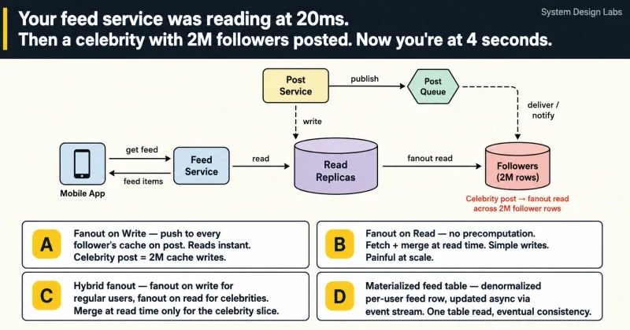
Transcription française des légendes
- ym Design Labs
- Votre service d'alimentation lisait à 20ms.
- Puis une célébrité avec 2M followers posté. Maintenant vous êtes à 4 secondes.
- livrer /
- écrire
- lire
- Lire
- Répliques
- fanout lire aa
- (0 «App
- Célébrité post — fanout lire
- «sur 2M lignes suiveuses
- Fanout sur Wi
- poussez à chaque
- Fanout on Read - pas de précalcul.
- cache du suiveur sur le post. Lecture instantanée.
- Récupérer + fusionner au moment de la lecture.
- Celebrity post
- IM cache écrit.
- Douleur à l'échelle.
- Mat
- Table d'alimentation lisée — dénormalisée
- Hybrid fanout — fanout sur écrire pour
- utilisateurs réguliers, fanout en lecture pour celebri
- Ligne de flux par utilisateur, mise à jour async via
- Fusionner au moment de la lecture seulement pour la tranche de célébrité.
- e
- flux d'événements. Une table de lecture, cohérence éventuelle.
Les lectures de votre service de fil d’actualité prenaient 20 ms.
Puis une célébrité suivie par deux millions de personnes a publié un message.
Les lectures prennent maintenant quatre secondes. La latence p99 s’envole.
Voici la configuration.
10 millions d’utilisateurs. Environ 50 000 publications par jour. Un compte cumule deux millions d’abonnés.
À chaque publication de ce compte, votre requête parcourt les deux millions de lignes des abonnés, trie par horodatage et sature les répliques de lecture.
Votre équipe discute d’une refonte du mode de diffusion des publications à l’échelle de l’architecture.
Fanout en écriture : à chaque publication, alimenter le cache de chaque abonné. Les lectures sont instantanées. La publication d’une célébrité entraîne deux millions d’écritures dans le cache.
Fanout en lecture : aucun précalcul. Récupérer et fusionner les publications à la lecture. Les écritures sont simples, mais l’approche devient coûteuse à grande échelle.
Fanout hybride : diffuser à l’écriture pour les comptes ordinaires et à la lecture pour les célébrités. Seules les publications des célébrités doivent être ajoutées à la lecture.
Table de fil matérialisée : une ligne dénormalisée par utilisateur, mise à jour de façon asynchrone via un flux d’événements. Une lecture dans la table, avec cohérence à terme.
Afficher la réponse et les explications
Réponse indiquée par l’auteur : C
Explication 1
Schéma de l’explication 1 · p. 96
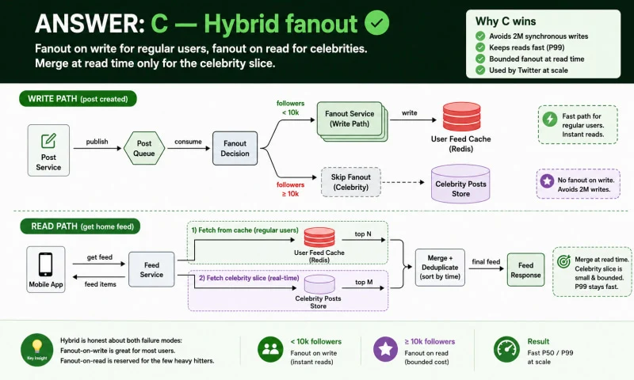
Transcription française des légendes
- Pourquoi retenir C
- ANSWER
- Évite les écritures synchrones 2M
- Fanout sur écrire pour les utilisateurs réguliers, fanout sur lire pour les célébrités.
- Conserve une lecture rapide (P99)
- Fanout lié à la lecture
- Fusionner au moment de la lecture seulement pour la tranche de célébrité.
- Utilisé par Twitter à grande échelle
- PATH (p
- te
- Voie rapide pour
- Cache de flux utilisateur
- Instant ead
- Service
- «Skip Fanout
- > Celebrity Poste
- (Célébrité)
- Stocker
- « oi 2M écrit
- LIRE LE CHEMIN
- et home
- «Retirer de la coche (utilisateurs réguliers)
- User Fond Cache
- Tei)
- Fusionner
- Flux
- G Hers strat
- Céleri voir
- Service
- (tri ine)
- tal & plié
- 709 séjours
- Céleri Posts
- Stocker
- Iti shes sur bt sont faites:
- 10 000 abonnés
- Résultat
- Fanouton-wite aigrette ormost utilisateurs
- Faits sur l'écriture
- Fart P50 / POD
- (Coefficients limités)
Réponse : C — Fanout hybride
Pourquoi choisir C
C’est l’architecture publiée par Twitter. Le fanout en écriture accélère les lectures, mais devient ingérable pour les comptes très suivis. Le fanout en lecture simplifie les choses, au prix d’une forte hausse de la latence à grande échelle. L’approche hybride tient compte des deux cas.
À chaque publication, vérifiez le nombre d’abonnés. En dessous de 10 000, diffusez aussitôt la publication dans les caches Redis des abonnés. Au-dessus, traitez le compte comme une célébrité et sautez cette étape. À la lecture, consultez deux sources : le cache précalculé des comptes ordinaires et une requête en direct pour les célébrités. Fusionnez et dédupliquez les résultats. Le nombre de publications des célébrités qu’il faut traiter est faible et borné. Le p99 reste bas et la publication d’une célébrité ne déclenche plus deux millions d’écritures synchrones.
Explication 2
Pourquoi A est tentant (fanout en écriture)
Sur le papier, les lectures sont instantanées. Puis Cristiano Ronaldo publie et vous devez écrire dans 500 millions de caches en parallèle. Avec deux millions d’abonnés, même à 1 ms par écriture, cela représente 2 000 secondes de travail d’écriture cumulé. Le cluster de cache sature et la file d’écritures s’engorge. Chaque publication d’une célébrité déclenche une ruée.
Les équipes mettent cette approche en place et constatent qu’elle fonctionne à un million d’utilisateurs. Le problème des comptes très suivis ne se manifeste qu’une fois en production.
Explication 3
Pourquoi écarter B (fanout en lecture)
Suivre 500 comptes implique 500 requêtes ou une énorme jointure, avec un tri en mémoire avant de renvoyer le moindre résultat. Vous pouvez mettre le résultat en cache, mais il faut un calcul coûteux pour alimenter un cache qui expire après 30 s. Cela revient à reporter le travail de diffusion sur le chemin de lecture en y ajoutant de la latence. L’approche ne tient pas à dix millions d’utilisateurs.
Explication 4
Pourquoi écarter D (table de fil matérialisée)
Une ligne dénormalisée par utilisateur, mise à jour de façon asynchrone via le CDC ou un flux d’événements semble une bonne idée. Mais la publication d’une célébrité entraîne toujours deux millions de mises à jour de lignes, simplement en différé. L’amplification des écritures demeure. À cela s’ajoute la complexité d’exploitation du flux, des consommateurs idempotents et de la logique de rapprochement. Les mêmes problèmes requièrent davantage de composants.
Paginer efficacement des résultats volumineux
Illustration de la question du jour 24 · p. 98
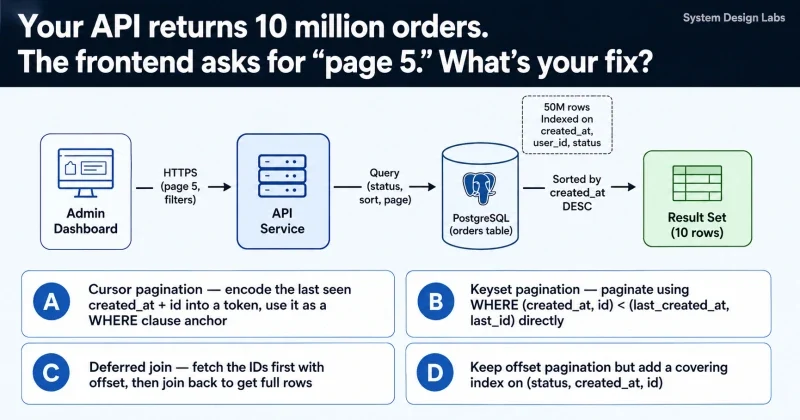
Transcription française des légendes
- Système D
- Labs
- Votre API renvoie 10 millions de commandes.
- Le frontend demande « page 5 ».
- est votre solution?
- 50M lignes
- Indexé sur
- created_at,
- o — ]
- HTTPS
- Requête
- (pages, > — 5
- (statut,
- Trié par
- filtres)
- tri, page)
- bil
- created_at — >
- DESC
- Ge
- Admin
- API
- PostgreSQL
- Ensemble de résultats
- Tableau de bord
- Service
- (tableau des commandes)
- (10 rangées)
- Cursor pagination — encode la dernière fois
- Keyset pagination
- créé _at + id dans un jeton, utilisez-le comme un
- WHERE (created_at, id) — (last_created_at,
- WHERE clause ancre
- last_id) directement
- Deferred join — récupérer les identifiants en premier avec
- Gardez la pagination offset mais ajoutez une couverture
- offset, puis rejoins-nous pour obtenir des lignes complètes
- index sur (statut, created_at, id)
Votre API renvoie dix millions de commandes.
Le frontend demande la « page 5 ».
Décalage de 40, limite de 10. Cela paraît simple, jusqu’au message de votre DBA à deux heures du matin.
Temps de requête : 4,2 secondes. Le nombre de parcours de table augmente. La production ralentit.
Vous utilisez PostgreSQL. La table orders contient 50 millions de lignes triées par created_at DESC. Les utilisateurs peuvent filtrer par statut. Vous paginez les résultats d’un tableau de bord d’administration utilisé par 200 agents du support simultanément.
La pagination par décalage fonctionnait à 10 000 lignes. À 50 millions, la base lit et écarte 40 millions de lignes pour en renvoyer dix.
Le prochain sprint met la version destinée aux clients en production, avec dix fois plus de trafic. Il faut régler le problème d’ici là.
Voici la configuration :
• Table : orders, 50 millions de lignes, avec des index sur created_at, user_id et status
• Requête : tri par created_at DESC, filtre sur status
• Client : navigation « précédent/suivant » et accès direct à une page
• SLA : p99 < 200 ms
Quatre ingénieurs proposent chacun une approche :
Pagination par curseur : encoder les dernières valeurs de created_at et id dans un jeton, puis les utiliser comme point de reprise de la clause WHERE.
Pagination par clé : paginer directement avec WHERE (created_at, id) < (last_created_at, last_id).
Jointure différée : récupérer d’abord les identifiants avec le décalage, puis faire une jointure pour obtenir les lignes complètes.
Conserver la pagination par décalage et ajouter un index couvrant sur (status, created_at, id).
Afficher la réponse et les explications
Réponse indiquée par l’auteur : A
Explication 1
Schéma de l’explication 1 · p. 100
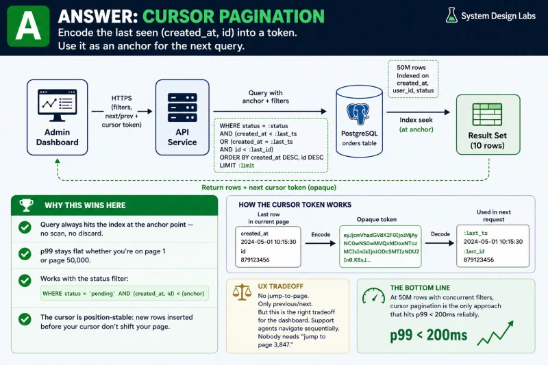
Transcription française des légendes
- RÉPONSE :
- J systemesign tbs
- Encodez le dernier vu (created_at, id) dans un jeton.
- Utilisez-le comme ancre pour la prochaine requête.
- 50M lignes
- Indexé 09
- seri tats
- «Demande avec
- ancre + pieds
- Index recherche
- jeton de curseur)
- O — stato — statue
- Admin
- API
- à l'ancre)
- Ensemble de résultats
- Tableau de bord
- Service
- tableau de commande
- (10 rangées)
- «ORDRE PAR créé. un DESC, ld DESC
- Retourne les lignes + le jeton du curseur suivant (opaque)
- COMMENT FONCTIONNE LE CURSEUR
- Utilisé innoxt
- Laat om
- « Interrogez toujours l’index au point d’ancrage...
- demande
- pas de sean, pas de rejet
- Ented ot
- encoder
- Décennie [
- 99 reste à plat si vous êtes à la page 1
- Py
- «R page 50 000.
- Fonctionne avec le filtre d'état
- UX TRADEOFF
- O — statut
- (ancre) — (ancre)
- «LA LIGNE FONDAMENTALE
- nt ters
- Uniquement précédent/nant.
- La pagination du curseur est la seule approche
- Mais c'est le ight wadeott
- qui frappe p99 — 200me de manière fiable,
- Le curseur est position-stabe : nouvelles lignes insérées
- pour le tableau de bord.
- avant votre curseur ne déplacez pas votre page
- Les agents naviguent séquentiellement
- ge 3.947"
- p99 — 200ms 7”
Option A — Pagination par curseur ✅ Bonne réponse
Encodez le dernier couple (created_at, id) lu dans un jeton opaque. À la requête suivante, décodez-le et reprenez à partir de WHERE created_at < :last_ts OR (created_at = :last_ts AND id < :last_id).
Pourquoi cette option fonctionne ici :
• La requête reprend dans l’index au point décrit par le curseur, sans parcourir ni écarter les entrées précédentes.
• Le p99 reste stable de la page 1 à la page 50 000.
• Le filtre par statut fonctionne : WHERE status = 'pending' AND (created_at, id) < (anchor).
• Le curseur conserve sa position : les insertions de lignes avant celle-ci ne décalent pas votre page.
Côté expérience utilisateur, on ne peut plus accéder directement à une page : la navigation se fait avec « précédent » et « suivant ». Le compromis convient à ce tableau de bord. Les agents du support parcourent les résultats dans l’ordre. Ils n’ont pas besoin de sauter à la page 3 847.
À 50 millions de lignes et avec plusieurs filtres actifs, la pagination par curseur est la seule option qui maintient de façon fiable le p99 sous 200 ms.
Explication 2
Option B — Pagination par clé
À première vue, la pagination par clé ressemble à la pagination par curseur. La différence tient au niveau où l’on se place : l’une décrit la formulation d’une requête, l’autre un choix de conception côté produit.
La pagination par clé repose sur une expression SQL comme WHERE (created_at, id) < (val1, val2). La pagination par curseur l’encapsule dans un jeton encodé, que le client n’est pas censé interpréter ni modifier.
Le filtre par statut complique la comparaison des tuples dans la plupart des planificateurs de requêtes. WHERE status = 'pending' AND (created_at, id) < (anchor) exploite mal un index composite dans PostgreSQL si la colonne testée par égalité, status, ne fait pas partie du tuple comparé. On obtient un parcours partiel de l’index qui se dégrade avec des filtres à forte cardinalité.
La pagination par curseur encode le contexte complet de la clause WHERE, y compris les filtres, au-delà de la seule position. Ce détail passe facilement inaperçu et peut vous rattraper en production trois mois après le déploiement.
Explication 3
Option C — Jointure différée
SELECT o.*
FROM orders o JOIN ( SELECT id
FROM orders
WHERE status = 'pending'
ORDER BY created_at DESC
OFFSET 500000
LIMIT 10 ) ids ON o.id = ids.id
C’est une vraie optimisation pour la pagination par décalage. La sous-requête récupère seulement les identifiants, directement dans l’index, ce qui est bien plus rapide. La jointure externe lit ensuite les lignes complètes des dix enregistrements renvoyés.
Cette technique fonctionne en pratique. Shopify en utilise une variante.
Le coût de la sous-requête reste en O(offset) pour les pages éloignées. À la page 50 000, vous parcourez toujours 500 000 entrées d’index. Vous économisez 80 % du coût, mais 20 % du problème subsiste.
Explication 4
Option D — Index couvrant
Ajouter CREATE INDEX ON orders(status, created_at DESC, id DESC) est judicieux quelle que soit l’approche. Pour les requêtes filtrées par statut, cela évite d’aller chercher les lignes dans la table (heap).
Un index ne change pas la complexité algorithmique d’OFFSET. Il accélère le parcours sans réduire le nombre d’entrées à parcourir. Tout comme ajouter du matériel, cette option fait gagner du temps sans résoudre le problème de fond.
Gérer la contre-pression d’une file lors d’un pic de trafic
Illustration de la question du jour 25 · p. 103
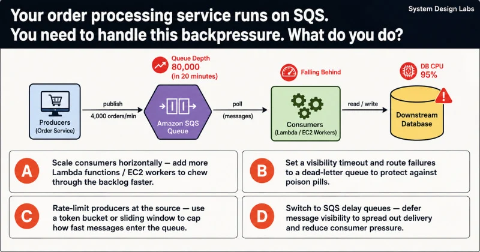
Transcription française des légendes
- «System Design Labs
- Votre service de traitement des commandes fonctionne sur SQS.
- Tu dois gérer cette contre-pression.
- publier
- sondage
- wad / écrire
- « 4 000 commandes/en
- En aval
- Producteurs
- «Amazon SQS
- Consommateurs
- Base de données
- (Service de commande)
- (Lambda /EC2 Travailleurs)
- Définir avis
- Défaillances de timeout et d'itinéraire
- «Échelle horizontale des consommateurs — ajouter plus
- Fonctions Lambda / EC2 à mâcher
- à une file d'attente de lettres mortes pour se protéger
- par le biais du backlog plus rapidement.
- Des pilules empoisonnées.
- Producteurs de limite de taux à la source
- ‘Switch to SQS delay queues — defer
- un seau à jetons ou une fenêtre coulissante à coiffer
- message vi
- Lity pour étaler la livraison
- la vitesse à laquelle les messages entrent dans la file d'attente.
- et réduire la pression des consommateurs.
Votre service de traitement des commandes s’appuie sur SQS.
Charge normale : 200 commandes/min. Les consommateurs suivent sans difficulté.
Arrive le Black Friday. Les producteurs montent à 4 000 commandes/min. En 20 minutes, la file atteint 80 000 messages. La base de données en aval tourne à 95 % de CPU. Les consommateurs prennent du retard et la file grossit sous vos yeux.
Vous devez gérer la contre-pression. Que faites-vous ?
Mettre les consommateurs à l’échelle horizontalement : ajouter des fonctions Lambda ou des workers EC2 pour résorber le retard plus rapidement.
Configurer un délai d’invisibilité et envoyer les messages en échec vers une file de rejets, afin qu’un message impossible à traiter ne passe pas en boucle.
Limiter le débit des producteurs à la source : utiliser un seau à jetons ou une fenêtre glissante pour plafonner le rythme d’arrivée des messages dans la file.
Passer aux files différées de SQS : retarder la visibilité des messages pour étaler leur livraison et soulager les consommateurs.
Afficher la réponse et les explications
Réponse indiquée par l’auteur : C
Explication 1
Schéma de l’explication 1 · p. 104
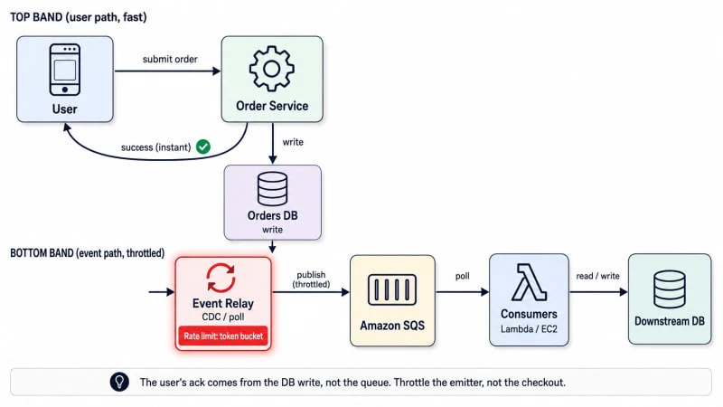
Transcription française des légendes
- ‘TOP BAND (chemin d’accès utilisateur, rapide)
- Soumettre une commande
- Service de commande
- Utilisateur
- écrire
- Succès (stat)
- Commandes DB
- écrire
- BANDE À BOUTEILLE (événement pat, étranglé)
- roti)
- ix
- Relais événementiel
- DC / sondage
- Consommateurs
- «Amazon SQS
- Lambda /EC2
- Downstream DB
- Tre ses ok vient rom la DB wit net la queve Trot l'entrée, pas la caisse
Pourquoi C fonctionne sans dégrader l’expérience utilisateur
La file grossit parce que le producteur émet plus vite que le consommateur ne traite : 4 000 entrées pour 200 sorties. Ajouter des consommateurs ne suffira pas à combler cet écart, surtout avec une base déjà à 95 % de CPU.
Intervenez en amont. Limitez le débit du producteur avec un seau à jetons ou une fenêtre glissante. Sur AWS, vous pouvez utiliser les plans d’utilisation d’API Gateway, la concurrence réservée de Lambda ou un middleware de limitation dans le service. La taille de la file se stabilise, les consommateurs rattrapent leur retard à leur rythme et la pression sur la base retombe.
Imaginez un évier : réduisez le débit du robinet au lieu d’agrandir seulement l’évacuation.
Le schéma passe vite sur un point important : le « producteur » n’est pas votre utilisateur.
Dans la plupart des systèmes, la prise de commande et le traitement sont découplés. Un utilisateur passe une commande, elle est écrite en base et l’utilisateur reçoit aussitôt une confirmation. Un autre processus récupère ensuite les événements, par polling ou CDC, et les publie dans la file. C’est cet émetteur dont vous limitez le débit.
La limitation n’intervient donc jamais au paiement. L’utilisateur a déjà reçu un accusé de réception de l’écriture. Vous plafonnez la vitesse d’arrivée des événements dans la file, tandis que les utilisateurs continuent à passer commande normalement. L’expérience utilisateur reste intacte et les consommateurs peuvent suivre.
C’est la logique de la contre-pression : l’aval indique à l’amont qu’il doit ralentir. La taille de la file sert de signal, et l’action se prend en amont.
Explication 2
Pourquoi A est tentant (ajouter des consommateurs)
C’est la réponse intuitive, assez plausible pour convaincre des ingénieurs expérimentés.
Ajouter des consommateurs augmente le débit. Mais le problème vient du déséquilibre entre les deux débits, que vous traitez comme un manque de capacité. Si le producteur peut toujours émettre plus vite que les consommateurs ne traitent, comme le jour du Black Friday, vous ne rattraperez jamais le retard en ajoutant des instances. Vous lancez dix fois plus de fonctions Lambda, atteignez les limites d’écriture de DynamoDB, saturez le pool de connexions RDS, et la file continue de grossir. Plus lentement, avec une facture d’infrastructure qui a doublé.
Ajouter des consommateurs fonctionne quand le calcul est le goulot d’étranglement. Cela ne suffit pas lorsque le débit du producteur est sans limite.
Explication 3
Pourquoi écarter B (délai d’invisibilité et DLQ)
Ces mécanismes traitent les échecs. La contre-pression répond à un autre problème.
Une DLQ reçoit les messages dont le traitement échoue systématiquement et qui tourneraient sinon en boucle. Le délai d’invisibilité détermine le temps pendant lequel un message pris en charge est masqué aux autres consommateurs, afin de prévenir un double traitement. Aucun des deux mécanismes ne ralentit le producteur ni la croissance de la file.
Confondre contre-pression, nouvelles tentatives et gestion des erreurs est fréquent en architecture. Ces mécanismes répondent à des besoins différents.
Explication 4
Pourquoi écarter D (files différées SQS)
Les files différées retardent la visibilité des messages, tandis que le producteur continue d’en créer 4 000 par minute. Les messages s’accumulent sans être visibles.
À l’expiration du délai, ils deviennent visibles par rafales. Vous avez reporté la pression et rendu la livraison plus irrégulière.
C’est comme poser un couvercle sur un évier qui déborde : l’eau continue de monter.
Préserver la cohérence du cache lors des écritures
Illustration de la question du jour 26 · p. 106
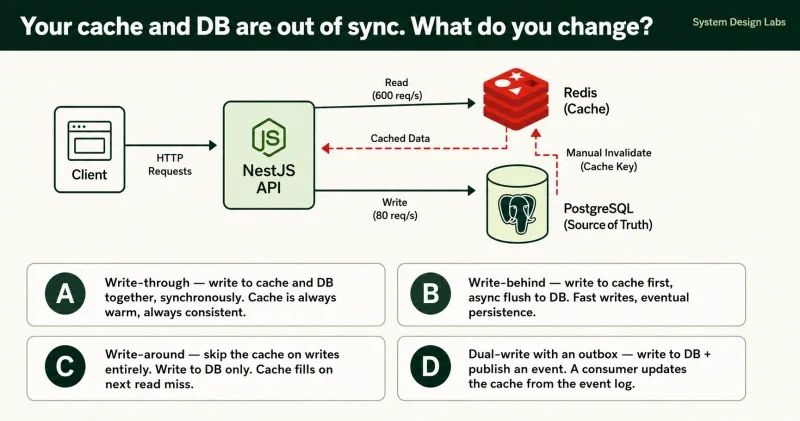
Transcription française des légendes
- nLab
- ur cache a
- Les DB sont hors du sy!
- Qu'est-ce que vous
- inge»
- Lire
- Redis
- (Cache)
- Invalidation manuelle
- HTTP
- (Cache-clé)
- Client
- Demandes
- API
- Ecrire
- (80 req/s)
- PostgreSQL
- (Source de la vérité)
- Write-through — écrire dans le cache et la base de données
- Write-behind — écrire d'abord dans le cache
- ensemble, synchrone. Le cache est toujours
- async flush à DB. Fast écrit, éventuellement
- Chaleureux, toujours cohérent.
- Persistance.
- Write-around — ignore le cache sur les écritures
- Dual-write avec une outbox — écrire à DB +
- entièrement. Écrivez à DB seulement. Cache remplit sur
- publier un événement. Une mise à jour pour les consommateurs
- Prochaine lecture Miss.
- le cache du journal des événements.
Encore une fois, le cache et la base ne sont plus synchronisés.
Un utilisateur modifie son profil. Pendant dix minutes, le cache continue de renvoyer son ancien nom. Le support reçoit un ticket. Vous videz le cache. Le problème revient la semaine suivante.
Vous devez fiabiliser les écritures avant qu’un incident plus grave ne touche les clients.
Voici la configuration.
API NestJS → PostgreSQL (source de vérité) + Redis (cache)
Environ 600 lectures/s et 80 écritures/s en pointe
Approche actuelle : écrire en base, puis invalider explicitement la clé de cache si l’écriture réussit.
Trois incidents ce mois-ci, tous dus à une valeur de cache obsolète après une écriture.
La stratégie doit résister aux conditions de concurrence, aux nouvelles tentatives et aux échecs partiels.
Quel changement apportez-vous ?
Write-through : écrire dans le cache et en base de façon synchrone. Le cache reste alimenté et cohérent.
Write-behind : écrire d’abord dans le cache, puis répercuter l’écriture en base de façon asynchrone. Les écritures répondent vite et la persistance se fait plus tard.
Write-around : écrire uniquement en base, en contournant le cache. Le cache se remplit à la prochaine lecture qui ne trouve pas la donnée.
Double écriture avec outbox : écrire en base et publier un événement. Un consommateur met à jour le cache à partir du journal d’événements.
Afficher la réponse et les explications
Réponse indiquée par l’auteur : D
Explication 1
Schéma de l’explication 1 · p. 108
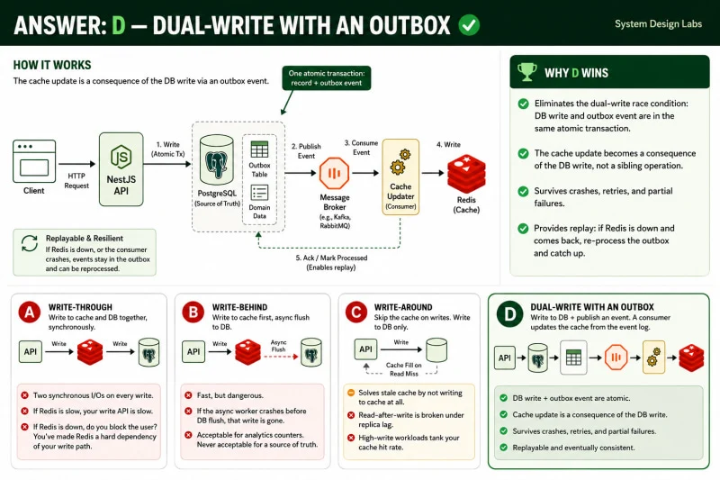
Transcription française des légendes
- ANSWE
- ÉCRIVEZ AVEC UN OUTBOX
- abs
- Comment ça marche
- Élimine la condition de course à double rit:
- [DB write et outbox event
- même transaction atomique,
- venir
- ite
- La mise à jour du cache devient une conséquence
- de l'écriture DB, nota opération sœur.
- ge
- «Gent
- PI
- Rouges
- Survit aux accidents, aux reties et aux partiels
- Coe
- (coche)
- les échecs,
- Fournit la rediffusion : si Reiss est en panne et
- revient, re-traite la boîte d'envoi
- Tases Oreilles rester il oe
- et Eatehup.
- «DOUBLE-ÉCRIRE AVEC UNE BO — TE
- pds le cach fom le veto
- ry
- Fat bt dangereux
- ( — Cache de vente Sete par ot ting
- ( — a tombe, tu veux bien ?
- Dash ot wes gore
- "Rei shard est devenu dépendant.
- Survives crushes eis, nd
- Votre pth.
- Reptyabe et éventuellement cohérent
Réponse : D — Double écriture avec outbox
Posez la question en termes d’échec partiel : que se passe-t-il si l’une des écritures réussit et que l’autre échoue ?
Pourquoi D fonctionne : toute double écriture naïve a la même faille. Si le processus s’arrête entre l’écriture en base et celle dans le cache, le cache peut rester obsolète indéfiniment. Avec l’outbox, la mise à jour du cache découle de l’écriture en base. Une seule transaction atomique enregistre la donnée et l’événement dans l’outbox. Un consommateur met à jour Redis à partir de cet événement. Et vous pouvez rejouer les événements : si Redis tombe puis redémarre, traitez à nouveau l’outbox.
Explication 2
Pourquoi A échoue (write-through) : cette option paraît sûre, mais elle est risquée à grande échelle. Chaque écriture requiert deux entrées-sorties synchrones. Si Redis ralentit, l’API d’écriture ralentit avec lui. Si Redis tombe, devez-vous bloquer l’utilisateur ? Redis devient une dépendance incontournable du chemin d’écriture.
Explication 3
Pourquoi B échoue (write-behind) : l’écriture répond vite, mais si le worker asynchrone tombe avant de répercuter la modification en base, celle-ci est perdue. C’est acceptable pour des compteurs analytiques, pas pour une source de vérité.
Explication 4
Pourquoi C ne règle qu’une partie du problème (write-around) : en n’écrivant jamais dans le cache, vous évitez d’y inscrire une valeur périmée. Mais le retard de réplication peut compromettre la lecture après écriture, et une charge dominée par les écritures fait chuter le taux de succès du cache.
Maintenir à jour les réponses d’un LLM
Illustration de la question du jour 27 · p. 110
Transcription française des légendes
- System Design Labs
- Vos réponses LLM sont w
- ng.
- Qu'est-ce que tu fais ?
- Demandez
- En avant
- Récupère
- Connaissances
- Mise à jour 1
- Maintenant prix nouveau
- ures, dprécisées
- SS
- Contexte
- «remorques
- Utilisateurs :
- API NestJS
- GPT-4 ouvert
- PostgreSQL
- (Base de connaissances produit)
- RAG — intègre votre base de connaissances,
- Ajuster le modèle de base — train GPT-4
- récupérer les morceaux pertinents au moment de la requête,
- (ou équivalent open-source) sur votre
- injecter dans le contexte. Le modèle reste le même,
- Le modèle intériorise, le modèle internalise,
- La connaissance est toujours fraîche,
- votre domaine.
- Réglage fin + RAG hybride
- tune pour
- Ingénierie rapide seulement - détaillée
- style/ton/domaine fluency, RAG pour
- system prompt + quelques exemples.
- base factuelle. Le meilleur des deux mondes
- [Pas d'infra, pas de formation, juste de meilleures instructions.
Votre LLM répond à côté. Ses réponses sont obsolètes, même lorsqu’il n’hallucine pas.
Vous avez déployé un bot de support client sur GPT-4, dont l’entraînement couvre la période allant jusqu’au début de 2024. Depuis, votre produit a changé 14 fois. Chaque semaine, des utilisateurs reçoivent des réponses qui étaient justes il y a huit mois et sont fausses aujourd’hui.
L’équipe discute de la façon de corriger le problème.
Voici la configuration.
API NestJS → OpenAI GPT-4 + PostgreSQL (base de connaissances produit)
Environ 2 000 demandes au support par jour. Dans 15 % des cas, la réponse est erronée à cause de connaissances obsolètes.
La base de connaissances évolue chaque semaine : nouveaux tarifs, nouvelles fonctionnalités et anciens parcours abandonnés.
Budget : celui d’une startup de taille intermédiaire, sans les moyens d’entraîner un modèle maison à partir de zéro.
Vous voulez des réponses exactes et à jour sans réentraîner le modèle à chaque évolution du produit.
Que faites-vous ?
RAG : créer des embeddings de la base de connaissances, retrouver les passages pertinents au moment de la requête et les ajouter au contexte. Le modèle ne change pas et ses sources restent à jour.
Affiner le modèle de base : poursuivre l’entraînement de GPT-4 ou d’un équivalent open source sur votre documentation produit. Le modèle assimile les connaissances du domaine.
Approche hybride : recourir au fine-tuning pour le style, le ton et la maîtrise du vocabulaire métier, puis au RAG pour fonder les réponses sur des faits.
Se limiter à l’ingénierie des prompts : utiliser un prompt système détaillé et quelques exemples (few-shot). Il suffit de meilleures instructions, sans infrastructure ni entraînement supplémentaire.
Afficher la réponse et les explications
Réponse indiquée par l’auteur : A
Explication 1
Schéma de l’explication 1 · p. 112
Transcription française des légendes
- Laboratoire de conception système
- Réponse: A — RAG
- Séparez la connaissance du raisonnement. Gardez le modèle gelé.
- « Résoudre le vrai problème
- Pas de frais de recyclage
- La connaissance est découplée
- Pipeline, pas problème de modèle
- « La feshness, c’est
- Le mode reste gelé
- Vos cinq connaissances ina
- « Vous avez transformé cela en un
- Pas d'yeux fins,
- problème de pipeline de données
- comprendre, RAG donne
- HO vector store Mise à jour r-erbed,
- joes
- Le modèle des faits à jour
- Pas de redéploiement.
- fait, Bot sait immédiatement
- « Quelque chose que chaque équipe
- Aeady sait
- Comment RAG fonctionne à l'exécution
- Incorporer une requête
- Retive top-K
- Raisons modèles plus
- les morceaux pertinents
- «contenu
- contexte frech,
- «plus récent
- Vector Store
- Prompt + Contexte
- en eran
- C'est notre
- FW
- Pro Kowladge voir)
- Aways rsh
- AS
- « Précis & ancré
- Effet de levier
- Pourquoi RAG
- Mise à jour docs
- re-embed
- Sans contamination ri
- Réponses fondées sur
- ai
- Pas d'heures GPU
- «embedding, etre
- est le bon appel
- Ne cepoymerteces.
- Bas i
- date,
- rat
- sin
- Fic fraîcheur à la base de données
- il
Réponse : A — RAG
Le modèle comprend votre domaine. Il lui manque les informations sur ce qui a changé.
Le RAG sépare les connaissances du raisonnement. Le modèle reste figé, sans coût de réentraînement ni nouveau cycle de déploiement. La base de connaissances est indexée dans une base vectorielle. Lorsqu’un document change, recalculez son embedding. Si les nouveaux tarifs entrent en vigueur lundi, le bot en dispose dès lundi.
À l’exécution : l’utilisateur pose une question → calculer son embedding → récupérer les k passages les plus pertinents → les ajouter au contexte → laisser le modèle raisonner à partir de contenu exact et récent.
Ce qui semblait demander un changement de modèle relève désormais du pipeline de données, un problème que les équipes d’ingénierie savent déjà résoudre.
Explication 2
B — Fine-tuning (choix trompeur)
Le fine-tuning semble le moyen évident d’améliorer le modèle. Ici, il aggrave le problème.
Le fine-tuning encode les connaissances dans les poids, qui restent ensuite fixes jusqu’au prochain entraînement. Des mises à jour produit hebdomadaires imposeraient un entraînement hebdomadaire, coûteux en temps et en argent. Elles introduisent aussi un risque d’oubli catastrophique : faute de précautions, un nouveau cycle d’entraînement peut réduire la capacité du modèle à restituer les contenus appris auparavant.
Le fine-tuning convient aux changements de comportement : ton, format, aisance dans le domaine et jargon interne. Il apprend au modèle comment répondre, et n’est pas adapté à l’actualisation régulière des connaissances.
Explication 3
C — Combiner fine-tuning et RAG (trop lourd à ce stade)
C’est une architecture puissante, à envisager après avoir établi les bases.
Affiner le style apporte peu tant que les réponses ne s’appuient pas sur des sources fiables. L’approche hybride devient pertinente lorsqu’un RAG fonctionne déjà et que vous atteignez les limites de la recherche seule.
Pour une startup où 15 % des réponses sont erronées à cause de connaissances périmées, l’approche hybride représente un projet de trois mois. Un RAG réalisable en deux semaines résout le problème.
Explication 4
D — Se limiter à l’ingénierie des prompts (vite insuffisant)
C’est l’option la plus rapide à mettre en production et celle qui montre le plus vite ses limites.
Un prompt système détaillé peut fixer un ton et un format. Il ne peut pas accueillir 400 pages de documentation produit à jour sans dépasser la limite de tokens. Sélectionner manuellement les documents à joindre revient à faire du RAG sans infrastructure de recherche.
L’ingénierie des prompts fonctionne quand le modèle détient déjà les connaissances nécessaires. Elle ne suffit pas à combler un manque de connaissances.
Choisir une base vectorielle pour la recherche sémantique
Illustration de la question du jour 28 · p. 114
Transcription française des légendes
- «System Design Labs
- Vous créez une fonction de recherche sémantique
- pour un produit SaaS B2B.
- Vecteur
- Requête
- Rechercher
- Récupère
- (Naturel
- Résultats
- Langue)
- (Top «)
- (Ds)
- Données
- Vecteur
- Web / App
- Backend
- Base de données
- (Métadonnées &
- Redis
- (1536-4)
- Contenu)
- (Cachage)
- Stocker / Mettre à jour
- Incorporations
- extension pgvector sur votre PostgreSQL — existant
- Pinecone — base de données vectorielles entièrement gérée,
- stocker les incorporations dans une nouvelle colonne, requête avec — ->
- serverless tier, pas d'infra à exécuter.
- cosinus similarité
- Weaviate — vecteur open-source DB, auto-hébergé
- Qdrant — vecteur open-source DB, basé sur la rouille,
- sur Kubernetes, contrôle total de l'indexation.
- Auto-hébergé ou cloud, optimisé pour un haut débit
- filtrage.
Vous développez une fonction de recherche sémantique pour un SaaS B2B.
Le corpus regroupe quatre millions d’articles d’assistance, de documents et de tickets créés par les utilisateurs. Les requêtes sont formulées en langage naturel. Les utilisateurs s’attendent à des résultats de la qualité de Google, au-delà d’une simple correspondance de mots-clés.
Vous utilisez PostgreSQL 15, Redis et un backend Node.js. Pour l’équipe de recherche, ILIKE et pg_trgm ne suffisent plus. Elle mise sur les embeddings. Il faut maintenant stocker et interroger des vecteurs de 1 536 dimensions produits par OpenAI ada-002, avec un p99 inférieur à 100 ms.
Quatre millions de lignes. Environ 24 Go d’embeddings bruts. Le débit est de 300 requêtes/s et peut atteindre 900 requêtes/s le week-end.
Où stocker et interroger ces vecteurs ?
Extension pgvector sur votre instance PostgreSQL actuelle : stocker les embeddings dans une nouvelle colonne et interroger avec <-> pour la similarité cosinus.
Pinecone : base de données vectorielle entièrement managée, proposée en serverless, sans infrastructure à exploiter.
Weaviate : base vectorielle open source, autohébergée sur Kubernetes, avec un contrôle complet de l’indexation.
Qdrant : base vectorielle open source écrite en Rust, autohébergée ou hébergée dans le cloud, optimisée pour filtrer à haut débit.
Afficher la réponse et les explications
Réponse indiquée par l’auteur : D
Explication 1
Schéma de l’explication 1 · p. 116
Transcription française des légendes
- «System Design Labs
- Pourquoi retenir D :
- Qdrant est le bon choix
- Qdrant
- Qdrant gère la recherche vectorielle + les métadonnées
- en un seul passage.
- Requête
- Recherche de vecteur
- q Qdrant
- Contenu
- (Naturel
- + Filtre de charge utile
- Base de données vectorielles
- Resuts
- Recherche
- (indice HNSW)
- (Top K)
- (ID + scores)
- PostgreSQL 15
- Noeuds
- Redis
- Web / App
- Backend
- (Motadata et
- (Cachage)
- Contenu)
- Indice
- Feng
- (Rust Core)
- Store / Mise à jour
- Embeddings & Payloads
- Rust cor
- Latence et
- Produit B2B Ina, recherche d'utilisateurs
- Auto-hébergé vous donne le contrôle total
- une mémoire prévisible sous charge,
- dans un espace de travail, un locataire, ou
- «sur les paramètres HNSW (m,
- À 300 req/s, vous avez besoin d'un index
- ligne de produits – pas globalement
- cf construction), mémoire
- qui gère simultanément ANN
- Qdrant gère la recherche vectorielle +
- mapping, et indexation sur disque
- «Requêtes sans dégradation»
- filtre de métadonnées dans un pas.
- lorsque votre corpus grandit :
- La mise en œuvre HNSW de drant
- Toutes les autres options sont post-
- RAM passé,
- Il est accordé pour cela.
- filtrage, qui fait exploser le rappel
- et ajoute des allers-retours
Pourquoi choisir D (Qdrant)
Qdrant est conçu pour cette charge de travail. Son cœur en Rust maintient une faible latence et une consommation mémoire prévisible sous charge. À 300 requêtes/s, l’index doit supporter des recherches ANN simultanées sans dégradation. L’implémentation HNSW de Qdrant est optimisée pour ce cas.
L’atout décisif est le filtrage sur les métadonnées. Dans un produit B2B, les utilisateurs font leurs recherches dans un espace de travail, un tenant ou une gamme de produits. Qdrant combine la recherche vectorielle et le filtre de métadonnées en une seule passe. Les autres options imposent un filtrage après la recherche, ce qui dégrade fortement le rappel et multiplie les allers-retours.
L’autohébergement donne la main sur les paramètres HNSW (m, ef_construction), le mappage mémoire et l’indexation sur disque. C’est déterminant lorsque le corpus dépasse la RAM.
Explication 2
Pourquoi A est tentant (pgvector)
pgvector convient bien pour démarrer. En dessous d’environ 500 000 vecteurs, c’est souvent un bon choix puisque vous disposez déjà de PostgreSQL. Mais à quatre millions de lignes et 300 requêtes/s, l’index HNSW utilise le pool de tampons de PostgreSQL et entre en concurrence avec la charge transactionnelle. Sous concurrence, la latence augmente de façon non linéaire. VACUUM devient coûteux sur une grande table d’embeddings.
Comme règle pratique, pgvector convient sous 500 000 vecteurs lorsque la concurrence est faible. Au-delà, vous risquez de reporter les difficultés opérationnelles.
Explication 3
Pourquoi écarter B (Pinecone)
Pinecone fonctionne et permet aux équipes de livrer rapidement. Son modèle de tarification devient toutefois onéreux à 300 requêtes/s en continu : l’offre serverless facture par unité de requête, ce qui revient à plusieurs milliers de dollars par mois. Le protocole d’échange propriétaire crée aussi une dépendance au fournisseur. Migrer implique de réécrire le pipeline d’ingestion à partir de zéro.
Ce choix convient si la rapidité de mise sur le marché prime sur le coût et si le trafic reste en dessous d’environ 50 requêtes/s.
Explication 4
Pourquoi écarter C (Weaviate)
Weaviate est solide, avec une bonne recherche hybride (BM25 et vectorielle) et une prise en charge multimodale. Pour cet usage, son déploiement Kubernetes est plus lourd que celui de Qdrant. Une équipe qui n’exploite pas déjà Kubernetes pour sa couche vectorielle doit prévoir ce coût d’exploitation. Weaviate se distingue pour la recherche multimodale et les relations dans les graphes sémantiques. Pour une recherche vectorielle dense avec filtres, Qdrant est plus léger.
Orchestrer un workflow multi-agent
Illustration de la question du jour 29 · p. 118
Transcription française des légendes
- System Design Labs
- Vous avez un produit Al avec 4 agents spécialisés :
- un planificateur, un chercheur, un codeur et un réviseur.
- soumettre
- contexte
- code
- resuit
- Demande
- Utilisateur
- Pauses
- Chercheur
- Codeur
- Finale
- « La tâche
- Exécutions
- Délais d'attente
- magasin d' état
- (par pas)
- Orchestrateur centralisé - un contrôleur appelle
- Chorégraphie via event bus — agents
- «chaque agent en séquence, possède une logique de réessai,
- Publier/s'abonner à des événements, pas de central
- état dans un DB, temps écoulés par étape
- Contrôleur, chaque agent déclenche le suivant de manière autonome.
- Exécution basée sur DAG — modélisez le pipeline en tant que
- Superviseur pattern — un méta-agent surveille tout
- graphe acyclique dirigé, paralielize indépendant
- autres, détecte les défaillances, décide s'il faut réessayer,
- pas, bloquez uniquement sur les dépendances réelles.
- tre réorienté, ou s’élever vers un être humain.
Votre produit IA repose sur quatre agents spécialisés : Planner pour la planification, Researcher pour la recherche, Coder pour l’implémentation et Reviewer pour la revue.
Planner découpe la tâche. Researcher rassemble le contexte. Coder implémente. Reviewer repère les erreurs.
Sur le papier, c’est simple. En production, le système se désorganise.
Voici les dysfonctionnements :
• Researcher termine parfois avant Planner : Coder reçoit un contexte incomplet.
• Reviewer signale des problèmes, mais sans boucle de nouvelle tentative, certains défauts atteignent quand même la production.
• Le dépassement de délai d’un agent bloque tout le pipeline pendant 40 secondes.
• Vous ignorez quel agent a échoué et pourquoi.
Vous devez revoir l’orchestration. Que mettez-vous en place ?
Orchestrateur centralisé : un contrôleur appelle les agents à tour de rôle, gère les nouvelles tentatives, conserve l’état en base et applique un délai maximal à chaque étape.
Chorégraphie via un bus d’événements : les agents publient des événements et s’y abonnent. Sans contrôleur central, chaque agent déclenche le suivant de façon autonome.
Exécution basée sur un DAG : modéliser le pipeline comme un graphe orienté acyclique, exécuter les étapes indépendantes en parallèle et attendre uniquement les résultats indispensables.
Patron superviseur : un méta-agent surveille les autres agents, détecte les échecs et décide de réessayer, de rediriger la tâche ou de faire intervenir une personne.
Afficher la réponse et les explications
Réponse indiquée par l’auteur : C
Explication 1
Schéma de l’explication 1 · p. 120
Transcription française des légendes
- System Design Labs
- Correct Answe
- Votre pipeline a des dépendances dures (le codeur doit attendre à la fois le planificateur et le chercheur)
- ET a besoin de retry loops (Reviewer — > Coder en cas d'échec).
- Ce que cela résout directement :
- fé
- 2)
- État de la course
- DAG blocs Coder uni à la fois en amont
- (Pe
- «odes complètes, Pas de contrôles manuels
- Timeout pipeline suspendu
- > Codeur
- Exécutions
- ach noeud a ts ovmn deadline, Un
- L'agent imeout gèle tout
- Chercheur
- Puls
- Pas de boucle de réessai.
- Réessayer i afrst-classe edge dans le graphique,
- contexte
- Réessayer en cas d'échec
- «Pas de visibilité
- Les moteurs DAG vous donnent une exécution complète
- trace par course
- Orchestrateur centralisé – un contrôleur appelle
- Chorégraphie via event bus — agents
- «chaque agent en séquence, possède une logique de réessai, des pistes
- Publier/s'abonner à des événements, pas de centr
- LA
- état dans un DB, temps morts par arrêt individuellement
- Contrôleur, chaque agent déclenche le suivant de manière autonome.
- Exécution basée sur DAG — modélisez le pipeline en tant que
- Supervisor patter
- une méta-agone surveille tous
- graphe acyclique dirigé, paralléliser indépendant
- autres, détecte les défaillances, décide s'il faut réessayer,
- pas, bloquez uniquement sur les dépendances réelles.
- LD
- tre réorienté, ou s’élever vers un être humain.
- [c]
- Ils convergent tous sur ce modèle parce qu'il fait
- dépendances visibles, échecs locaux et exécution testable
Bonne réponse : C — Exécution basée sur un DAG
Le pipeline comporte des dépendances strictes : Coder doit attendre à la fois Planner et Researcher. Il faut aussi pouvoir relancer certaines étapes : si la revue échoue, Reviewer renvoie le travail à Coder.
Un DAG rend ces dépendances explicites :
Planner et Researcher → Coder → Reviewer. En cas d’échec de la revue : Reviewer redemande une exécution à Coder.
Ce que cette approche résout :
• Condition de concurrence : le DAG attend la fin des deux tâches en amont avant de lancer Coder, sans vérification manuelle.
• Blocage du pipeline : chaque nœud a son propre délai maximal. Le dépassement de délai d’un agent ne fige pas tout le système.
• Relances absentes : le graphe modélise explicitement la relance, plutôt que de la traiter comme un ajout à part.
• Manque de visibilité : le moteur du DAG fournit une trace complète pour chaque exécution.
LangGraph, Temporal, AWS Step Functions, Prefect et Dagster proposent des mises en œuvre. Ces outils convergent vers ce modèle parce qu’il rend les dépendances visibles, isole les échecs et permet de tester l’exécution.
Explication 2
A — Orchestrateur centralisé (choix trompeur)
C’est l’autre réponse la plus plausible. Un contrôleur central avec un délai par étape et un état persistant en base semble adapté : l’exécution est structurée, observable et prévoit des relances.
Le défaut est l’exécution séquentielle par défaut. Planner et Researcher s’exécutent l’un après l’autre si vous n’ajoutez pas explicitement la logique de parallélisation. Vous reconstruisez, dans du code impératif, une version artisanale d’un DAG. Chaque nouvelle dépendance exige une modification du code.
Cette option peut convaincre des ingénieurs expérimentés parce qu’elle donne l’impression d’une architecture bien structurée. En pratique, elle habille surtout une orchestration impérative.
Explication 3
B — Chorégraphie via un bus d’événements
L’approche fonctionne pour des pipelines faiblement couplés où chaque étape peut se terminer sans attendre les suivantes, par exemple commande passée → facture générée → e-mail envoyé. Ici, les dépendances sont étroites : Coder ne peut démarrer qu’une fois Planner et Researcher terminés.
Une chorégraphie pure n’offre pas naturellement de mécanisme pour attendre les deux résultats. Il faudrait intégrer la coordination dans les agents eux-mêmes. Coder se retrouverait à orchestrer le pipeline, ce qui aggraverait votre problème.
Règle pratique : la chorégraphie convient aux étapes indépendantes, l’orchestration aux dépendances explicites.
Explication 4
D — Patron superviseur
Un méta-agent qui surveille, détecte les échecs et redirige le travail complète bien C pour faire intervenir une personne, repérer les anomalies ou réorienter dynamiquement le traitement si le DAG ne sait pas le faire.
Comme modèle principal, le superviseur ajoute de la latence, puisque toutes les décisions passent par lui, et crée un point unique de défaillance. Il ne règle pas les dépendances : il doit quand même connaître l’ordre d’exécution, ce qui revient à maintenir un DAG implicite dans le superviseur.
Utilisez le superviseur en complément de C pour améliorer la résilience.
Choisir une solution de stockage de fichiers
Illustration de la question du jour 30 · p. 122
Transcription française des légendes
- System De
- nLabs
- Vous créez un service de téléchargement de fichiers.
- Qu'est-ce que tu choisis ?
- aa
- Télécharger
- Stocker
- Mobile + Web
- Service de téléchargement
- Clients
- (NestJS)
- Stockage de fichiers
- Service de la vérification des comptes
- (aws)
- fend Access)
- s3
- stockage, infi
- à l'échelle,
- Stockage de bloc EBS — , SSD,
- payer par Go, pas de serveurs à gérer.
- attacher à votre EC2, faible latence lit.
- a
- EFS — géré NFS, partagé entre
- MinlO sur EC2 — S3 compatible auto-hébergé
- plusieurs instances EC2 simultanément.
- stockage d'objets, vous possédez l'infra.
Vous développez un service d’envoi de fichiers. Les utilisateurs stockent aujourd’hui 10 To. Vous prévoyez 100 To dans douze mois.
Les avis divergent dans l’équipe.
Le responsable backend propose de choisir simplement S3.
L’ingénieur DevOps propose de monter un volume EBS, qu’il juge plus simple et plus rapide.
L’architecte plateforme penche pour EFS : plusieurs services doivent lire les mêmes fichiers.
Le CTO de la startup juge le stockage cloud trop cher à grande échelle et propose d’autohéberger MinIO.
Les quatre ont déjà mis ces solutions en production et tirent leurs convictions de cette expérience.
Voici la configuration.
— Le service NestJS reçoit les fichiers des clients mobiles et web.
— Le pipeline de ML doit lire les images transmises pour les traiter.
— Le service d’audit doit pouvoir lire ces mêmes fichiers.
— La taille des fichiers va de 5 Ko pour des photos de profil à 2 Go pour des exports vidéo.
— Vous utilisez AWS.
Quelle option choisissez-vous ?
S3 : stockage objet à capacité extensible, facturé au Go, sans serveur à gérer.
EBS : stockage bloc sur SSD, rattaché à une instance EC2, avec une faible latence en lecture.
EFS : service NFS managé que plusieurs instances EC2 peuvent utiliser simultanément.
MinIO sur EC2 : stockage objet autohébergé, compatible avec S3. Vous exploitez l’infrastructure.
Afficher la réponse et les explications
Réponse indiquée par l’auteur : A
Explication 1
Schéma de l’explication 1 · p. 124
Transcription française des légendes
- JK, system Design Labs
- (A) UN VINS
- Le bon choix pour ce service de téléchargement de fichiers.
- Échelle massive, aucune limite
- sans aucun changement.
- Rentable à l'échelle
- Payez uniquement pour ce que vous utilisez
- Jusqu'à
- Stocker
- | 9
- La Salle to Glacier
- Automatiquement déplacer les froids à
- Mobile + Web
- Chante
- « Amazon $3
- Glacier Économisez jusqu'à 90 %
- (Nests)
- (Bucket)
- Événement Driven
- le moment fl nds,
- 3 événements vous tigger ML pipeline
- Sécurité et conformité intégrées
- Métadonnées 08
- 3 Événements
- (Object Creates)
- Pour les services cloud greenfield,
- «Hiss the defaut
- 53 — stockage d'objets,
- EBS — stockage en bloc,
- FS — géré NFS,
- Mit0 sur EC2 — compatible à 9 $
- Échelle infinie, salaire par Go,
- «SSD-becked, attachez à
- partagé entre plusieurs
- stockage d'objets hébergés sel,
- Pas de serveurs à gérer.
- votre EC2 lit à faible latence.
- CE — netancessiuitaneoushy,
- Vous possédez l'infra
- (4)
Pourquoi choisir A (S3)
Une seule couche de stockage et aucune capacité à provisionner. Chaque service lit dans le même bucket avec la clé S3 stockée en base.
Pour 100 To, comptez environ 2 300 $ par mois. Les politiques de cycle de vie déplacent automatiquement les fichiers peu consultés vers Glacier. Les événements S3 déclenchent le pipeline ML dès qu’un fichier arrive. La gestion des versions, le chiffrement et les journaux d’audit sont intégrés.
Pour un nouveau service dans le cloud, c’est le choix par défaut, sauf exigence particulière.
Explication 2
Pourquoi EBS compromet cette architecture en grandissant
EBS fournit un disque rapide et fiable, rattaché à une instance EC2 à la fois dans cette configuration.
Si le pipeline de ML tourne sur une autre instance que le service d’envoi, il ne peut pas lire les fichiers. En mise à l’échelle automatique, chaque nouvelle instance démarre avec un disque vide. Le même problème se pose avec deux zones de disponibilité.
Tout fonctionne en développement, puis cesse de fonctionner silencieusement dès que vous ajoutez des instances. Les équipes qui choisissent EBS dans ce cas le découvrent souvent six mois plus tard, au moment d’une migration difficile et urgente.
Explication 3
Pourquoi EFS convient à d’autres usages
EFS est une solution robuste : un partage NFS montable par plusieurs instances EC2 en même temps, avec la sémantique complète de POSIX.
Le problème est le coût : 0,30 $/Go par mois. Pour 100 To, cela représente 30 000 $/mois contre 2 300 $/mois sur S3, soit environ 13 fois plus.
EFS convient lorsqu’une application historique dépend des appels de système de fichiers open(), read() et write() et ne peut pas être refactorisée. Pour un nouveau service NestJS doté du SDK S3, payer 13 fois plus pour cette sémantique est superflu.
Explication 4
Pourquoi les économies de MinIO sont trompeuses
MinIO est utilisé à très grande échelle. Il expose une API compatible S3, offre un débit élevé et peut tourner sur votre propre matériel.
En autohébergement, vous assumez la disponibilité, les pannes de disques, les sauvegardes, la planification de la capacité et les incidents à trois heures du matin. Entre 10 et 100 To, le coût d’exploitation fiable de MinIO dépasse largement la facture S3. La dépense cloud est remplacée par des heures d’ingénierie, plus coûteuses.
MinIO peut être pertinent à l’échelle du pétaoctet, avec une équipe d’infrastructure spécialisée et des frais de trafic sortant importants. Ce scénario est différent.
Réduire la latence entre régions
Illustration de la question du jour 31 · p. 126
Transcription française des légendes
- Conception système Li
- Votre plateforme e-commerce vient de croiser 2M d’utilisateurs actifs quotidiens.
- La latence européenne est de 380ms pour votre région USA-Est. Que faites-vous ?
- Lire/écrire
- Ros
- aller-retour
- Utilisateurs
- (primaire)
- 0%)
- API Gateway
- edie
- Cache
- (0%)
- us-east
- ‘Active-Active multi-régions — déployer la pile complète dans
- «eu-west-1, utiliser une base de données distribuée (CockroachDB)
- ‘Active-Passif avec des répliques en lecture — gardez-nous-est- — comme.
- primar
- spin up eu-west-1 comme un standby chaud avec lecture
- ‘or Aurora Global), acheminent les utilisateurs vers la région la plus proche,
- rplicas. Lectures européennes vont local, écrit encore aller aux États-Unis.
- ‘CDN + Edge cache — garder la seule région, pousser
- Active-Active avec une cohérence éventuelle - déployer complètement
- empiler dans les deux régions, permettre à chaque région de posséder ses écritures,
- des ressources statiques et des réponses d'API en cache à
- syne asynchrone, accepter qu'un utilisateur européen puisse
- Noeuds périphériques CloudFront en Europe. Aucune base de données ne change.
- voir nous écrire 200m lat.
Votre plateforme de commerce en ligne vient de dépasser les 2 millions d’utilisateurs actifs par jour. 70 % sont aux États-Unis et 30 % en Europe.
Les utilisateurs européens se plaignent de plus en plus de la lenteur : le temps d’aller-retour moyen vers votre région US East atteint 380 ms. Les demandes au support ont augmenté de 40 %. Le Black Friday est dans six semaines.
Votre infrastructure tient dans une seule région AWS, us-east-1 : une base RDS PostgreSQL primaire, un cache Redis et 12 microservices derrière une passerelle API.
Vous devez ramener la latence sous les 80 ms en Europe. L’équipe d’ingénierie hésite entre quatre approches.
Vous n’avez pas les moyens de refondre entièrement la base de données et vous devez déployer la solution avant le Black Friday.
Actif-actif multirégion — déployer toute la stack dans eu-west-1, utiliser une base de données distribuée (CockroachDB ou Aurora Global) et diriger les utilisateurs vers la région la plus proche. Les écritures sont envoyées simultanément aux deux régions.
Actif-passif avec répliques de lecture — conserver us-east-1 comme région primaire et faire tourner des répliques de lecture dans eu-west-1, prête à prendre le relais. Les lectures européennes restent locales et les écritures continuent de passer par les États-Unis. Si la région américaine tombe, le basculement se fait en quelques minutes.
CDN et cache en périphérie — conserver une seule région et distribuer les ressources statiques et les réponses API pouvant être mises en cache sur les nœuds périphériques de CloudFront en Europe. La base de données reste telle quelle.
Actif-actif avec cohérence à terme — déployer toute la stack dans les deux régions, laisser chacune gérer ses écritures et les synchroniser de façon asynchrone. Un utilisateur européen peut voir une écriture américaine avec 200 ms de retard.
Afficher la réponse et les explications
Réponse indiquée par l’auteur : B
Explication 1
Schéma de l’explication 1 · p. 128
Transcription française des légendes
- Qy System Design Lab
- Pourquoi
- Le moyen le plus rapide d'obtenir une latence de lecture européenne inférieure à 80ms - sans réécrire la base de données.
- B) Actif-passif
- avec des répliques en lecture
- Round-tip
- Us Utilisateurs
- os
- Lectures européennes golocak — 15ms
- (70%)
- (vs 380m aujourd'hui)
- API
- Expédition avant vendredi
- Passerelle
- Microservices
- (manger
- 380ms
- Utilisateurs de l'UE
- panneau
- Promate réplique UE en quelques minutes
- rounds
- (0%)
- (aujourd'hui)
- ifUS descend
- edie Cache
- Résoudre le vrai problème
- Le chemin le plus rapide pour naviguer
- Assez de cohérence
- ‘Bonus: histoire vraie de flover
- Faire jaillir un ROS lire repli
- Wee sti goto utilise
- La région des États-Unis est en baisse,
- dans evestt coûte 1-2 jours de
- promouvoir l'epi de l'UE dans
- produits vérifiant les stats,
- Vous pouvez être sûr de vous.
- Minutes et eepeervng
- Je suis en train de perdre la proie.
- en production wel beloe Retour
- lire,
- Fay,
- tinder 100m
- C'est le mouvement pragmatique, à faible risque, qui rencontre la constr
- ts : pas de réécriture de base de données, sl
- dans 6 woeks,
- "et obtenez une latence de lecture européenne inférieure à 80ms.
Pourquoi retenir B ?
La contrainte tranche : vous avez six semaines, sans possibilité de refondre la base.
Les utilisateurs européens se plaignent du temps nécessaire pour consulter les produits, suivre une commande ou charger leur profil. Dans chaque cas, il s’agit de lectures. Mettre en place une réplique de lecture RDS dans eu-west-1 demande un à deux jours de travail côté infrastructure. Dès sa mise en service, les lectures européennes passent de 380 ms à environ 15 ms. Les écritures continuent vers us-east-1, ce qui reste acceptable : les utilisateurs tolèrent une latence d’écriture un peu plus élevée lors du paiement. Le retard de réplication est généralement inférieur à 100 ms.
L’actif-passif permet aussi un véritable basculement : si la région américaine tombe, vous pouvez promouvoir la réplique européenne en quelques minutes.
Explication 2
Le piège de A — actif-actif avec base de données distribuée
Cette approche tient la charge à grande échelle, mais elle risque de faire rater le Black Friday à l’équipe. Passer de RDS PostgreSQL à CockroachDB ou Aurora Global avec une échéance à six semaines pose problème : c’est un chantier de plusieurs trimestres, entre les transactions distribuées, les écarts d’horloge entre régions et les nouveaux modes de panne à tester. Cette architecture peut convenir à long terme. Dans le délai imparti, elle ne convient pas.
Explication 3
Pourquoi écarter C — CDN et cache en périphérie ?
Le CDN réduit la latence des ressources statiques, comme les images et les fichiers JS et CSS. Les lectures dynamiques, comme le panier, l’historique des commandes et les données du compte, restent lentes, tout comme les écritures. Le CDN peut compléter la solution principale. À lui seul, il ne répond que partiellement au besoin.
Explication 4
Le risque de D — actif-actif avec cohérence à terme
C’est l’option qui assume le plus clairement les compromis d’une architecture multirégion. C’est aussi la plus risquée à déployer sans préparation. Avec la cohérence à terme entre régions, un utilisateur européen peut commander alors que la région américaine affiche encore un stock différent pendant 200 ms. Si le stock est limité, vous risquez de vendre plus d’articles que vous n’en avez. Au paiement, vous risquez de débiter deux fois le client. La résolution des conflits exige des décisions produit qui dépassent le choix de l’infrastructure.
Gérer les secrets et les identifiants
Illustration de la question du jour 32 · p. 130
Transcription française des légendes
- «System Design Labs
- Où sont vos mots de passe de base de données,
- Clés API et jetons de service stockés?
- sa
- uy
- Mc Screts dans
- NestS APL
- (Base de données
- ian
- » Soff
- 08
- (ge J
- Appels SDK à l'exécution, IAM contrôle l'accès,
- Tout transférer vers AWS Secrets Manager
- politiques fines, fonctionne à travers
- Utilisez les secrets dynamiques HashiCorp Vault — ,
- auto-rotation intégrée.
- n'importe quel nuage ou sur site.
- Utiliser les variables d'environnement injectées au déploiement
- Chiffrer des secrets avec KMS et stocker du texte chiffré
- temps via les secrets C/CD — stockés dans GitHub
- ‘Actions / GitLab Cl coffre-fort secret, ne touchez jamais le disque.
- contrôle total.
- dans votre propre base de données — décrypter à l'exécution,
Votre startup vient de passer son premier audit SOC 2.
L’auditeur demande : « Où stockez-vous les mots de passe des bases de données, les clés API et les jetons de service ? »
Votre ingénieur senior ne répond pas.
La moitié de ces secrets se trouve dans des fichiers .env ajoutés à Git il y a 18 mois. Trois valeurs sont inscrites en dur dans les variables d’environnement de Lambda. Une autre figure dans un message Slack de 2023.
Vous avez six services en production, quatre environnements et aucune politique de rotation des secrets.
Voici la configuration.
• API NestJS → Postgres (mot de passe dans une variable d’environnement)
• API NestJS → Stripe (clé API dans une variable d’environnement)
• Workers en arrière-plan → SQS, S3 (identifiants AWS dans des variables d’environnement)
• Webhooks tiers → secrets HMAC dans des variables d’environnement
• Aucune rotation, aucune piste d’audit et aucun contrôle d’accès centralisé.
Vous devez corriger la situation sans interrompre le service.
Tout déplacer vers AWS Secrets Manager — les services appellent le SDK à l’exécution, IAM contrôle les accès et la rotation automatique est intégrée.
Utiliser HashiCorp Vault — secrets dynamiques, politiques d’accès fines et fonctionnement sur n’importe quel cloud ou sur site.
Injecter les variables d’environnement au déploiement via la CI/CD — conserver les secrets dans le coffre de GitHub Actions ou de GitLab CI pour qu’ils ne soient jamais écrits sur disque.
Chiffrer les secrets avec KMS et conserver le texte chiffré dans votre propre base de données — déchiffrer à l’exécution et garder la maîtrise de l’ensemble.
Afficher la réponse et les explications
Réponse indiquée par l’auteur : A
Explication 1
Schéma de l’explication 1 · p. 132
Transcription française des légendes
- Conception du système
- AWS Secrets Manager
- Labs
- Sécurisé. Évolutif. Natif. Prêt pour l'audit.
- Gestion centralisée des secrets
- Pourquoi choisir AWS Secrets Manager ?
- Stockage crypté centralisé
- Al secrets stockés en toute sécurité
- et crypté avec AWS
- AWS Secrets Manager
- Récupérer la sortie
- KMS.
- Contrôle d'accès basé sur IAM
- Accès finement gagné par
- secret par service.
- i+ 8
- fay &
- ares
- «Auto-rotation
- lente
- Rotation native pour ROS,
- Otateurs Lambda personnalisés
- Pour tout Ose
- Audit et conformité
- «Travailleurs de fond
- Chaque accès connecté
- un)
- CloudTral — parfait pour
- 00 2 audits
- Zero-Downtime Migra
- Pas de temps mort.
- Coût: — 0,40 $ / secret / mois
- Pas de risque.
- Déployer
- Très nouveau
- Faire pivoter ld
- Pour 20 secrets qui sont — 8 / mois
A — AWS Secrets Manager (bonne réponse)
Votre infrastructure utilise déjà les services AWS Lambda, SQS et S3. Secrets Manager vous apporte :
• Un stockage chiffré et centralisé, adossé à KMS.
• Un contrôle d’accès avec IAM, pour chaque secret et chaque service.
• La rotation automatique intégrée pour RDS et des fonctions Lambda personnalisées pour la rotation des autres secrets.
• La journalisation de chaque accès dans CloudTrail, comme le demande l’auditeur SOC 2.
La migration se fait sans interruption. Remplacez les variables d’environnement par des appels à getSecretValue(), déployez, puis remplacez les anciens identifiants une fois les nouveaux validés. Le coût est d’environ 0,40 $ par secret et par mois, soit 8 $ par mois pour 20 secrets.
Explication 2
B — HashiCorp Vault (le piège pour les ingénieurs expérimentés)
Vault est plus puissant. Ses secrets dynamiques permettent, par exemple, de créer des identifiants Postgres à chaque requête et de les faire expirer au bout d’une heure. C’est une approche particulièrement élégante en production.
Il vous revient toutefois d’administrer et d’exploiter Vault. Il faut prévoir un cluster Raft d’au moins trois nœuds, un stockage persistant, des procédures de déverrouillage, un plan de reprise après sinistre et une équipe qui maîtrise Vault. Si Vault tombe, les services n’accèdent plus aux secrets et tombent à leur tour.
Vault prend l’avantage si vous utilisez plusieurs clouds, si vous devez héberger sur site, si vous avez besoin de secrets dynamiques à grande échelle ou si vous disposez d’une équipe d’infrastructure dédiée. Pour une équipe de moins de 50 ingénieurs qui travaille déjà entièrement sur AWS, commencez par Secrets Manager.
Explication 3
C — Variables injectées par la CI/CD (pertinent pour une partie des secrets)
Les coffres de GitHub Actions et de GitLab CI conviennent aux secrets utilisés au build et au déploiement : identifiants Docker Hub, jetons Terraform et clés de déploiement.
Ils conviennent mal aux secrets utilisés à l’exécution : le mot de passe dont l’application a besoin pour accéder à la base à trois heures du matin, par exemple, ou la clé Stripe utilisée par un webhook en production. Ces secrets sont injectés dans les définitions de tâches ECS ou la configuration de Lambda. Leur rotation atomique est plus difficile et les accès à l’exécution ne sont pas audités.
C peut compléter A ou B.
Explication 4
D — Développer un coffre maison avec KMS et une base de données (à écarter)
Vous reconstruisez Secrets Manager en moins bien. Vous devez gérer les clés de chiffrement, la rotation, le contrôle d’accès, la journalisation d’audit et les identifiants de connexion à la base de données elle-même.
Une question se pose alors : quel secret protège le coffre ? C’est précisément ce problème d’amorçage que les coffres de secrets managés résolvent. En 2012, avant que ces services existent, les équipes devaient encore construire ce type de solution.
Reconstruire l’état avec l’event sourcing
Illustration de la question du jour 33 · p. 134
Transcription française des légendes
- «System Design Labs
- Quelle est votre approche lors de la refonte
- ce service ?
- lieu / mise à jour /
- «annulation / remboursement
- Remplacée
- Client
- OrderService
- Postgres
- Lignes
- (état actuel uniquement)
- Événements
- pl
- , mises à jour
- (Ean
- Event Sourcing — journal des événements append-only
- « Change Data Capture (CDC) — conservez Postgres
- comme source de vérité, état actuel
- en l'état, mais stream tous les changements de ligne
- dérivé de replay
- 1g événements.
- à Kafka pour une piste d'audit
- ‘Ajouter une table audit_log — trigger-based
- Dual-write - écrire à la fois l'état actuel
- ombre écrit sur chaque
- table et une table d'événements séparés
- INSCRIRE/MISE À JOUR/SUPPRIMER.
- à chaque opération,
Votre service de commandes absorbe jusqu’à 200 écritures par seconde.
En contrôlant six mois de données, vous repérez une anomalie : deux commandes portent le même identifiant, mais leurs montants diffèrent.
Vous connaissez l’état actuel, sans savoir comment vous y êtes arrivé.
Dans la base, chaque nouvelle version a écrasé la précédente.
Voici le système actuel :
• OrderService → Postgres (état actuel uniquement)
• Événements : placed, updated, cancelled, refunded
• Chaque UPDATE écrase la version précédente de la ligne.
• Aucun journal d’audit, aucun historique des événements et aucun moyen de les rejouer.
Un litige de facturation vient d’arriver. Vous devez retracer précisément ce qui s’est passé pour la commande nº 8471, mais les données conservées ne le permettent pas.
Au lieu de conserver seulement l’état actuel, vous décidez d’enregistrer la suite d’événements qui l’a produit.
Quelle approche adoptez-vous pour repenser ce service ?
Event sourcing — prendre comme source de vérité un journal d’événements immuable, auquel on peut seulement ajouter des entrées. Rejouer les événements pour obtenir l’état courant.
Change Data Capture (CDC) — conserver Postgres tel quel et transmettre chaque changement de ligne à Kafka pour constituer une piste d’audit.
Ajouter une table audit_log — utiliser des triggers pour journaliser en parallèle chaque INSERT, UPDATE ou DELETE.
Double écriture — à chaque opération, écrire dans la table de l’état courant et dans une table d’événements distincte.
Afficher la réponse et les explications
Réponse indiquée par l’auteur : A
Explication 1
Schéma de l’explication 1 · p. 136
Transcription française des légendes
- ystem Design Labs
- RÉPONSE : A — SOURCING D'ÉVÉNEMENT
- ni
- nly journal des événements a
- il
- ufs
- th;
- loyer
- te dérivé
- D de rejouer les événements.
- lieu / mise à jour /
- ajouter
- projet
- «annulation / remboursement
- loyers
- état
- Event Store
- Requêtes &
- Client
- OrderService
- (uniquement en annexe)
- Lire le modèle
- Rapports
- (Postgres)
- aa
- Événements (immuables)
- placé, mis à jour, annulé, remboursé
- (horodaté, commandé)
- MODIFICATION DES DONNÉES
- AJOUTER UN AUdité_LOG
- TABLE
- cue
- Ca — EVENT SOURCING
- ‘Append-only journal des événements
- CAPTURE (CDC)
- comme source de vérité,
- Gardez Postgres as-
- «Shadow à base de déclencheur
- Ecrire aux deux
- «État actuel dérivé
- mais stream toutes les lignes
- écrit à la veille
- Tableau ccurrent-state
- « Changements à Kafka pour
- ase
- tableau des événements de taux
- de rejouer les événements.
- «un bilan
- INSCRIRE/MISE À JOUR/SUPPRIMER.
- à chaque opération,
- Replay complet et voyage dans le temps
- «Contexte in-app de Miss
- Facile à contourner ou à casser
- Incohérence de double écriture
- «et l’intention
- [Ajout d'une note de frais généraux,
- Flexibilité de projection
- Difficile à reconstruire
- Nécessite une distribution
- événements d'affaires
- Chemin Tohot
- transactions ou outbox
- Capturer les changements de données,
- Lag, commande et schéma
- rot business events
- Modes de défaillance complexes
- Véritable source de vérité
- «Les défis de l’évolution
- Son stil un canal latéral
- «Schéma de couplage &
- Séquence non garantie
- La source de la vérité
- charge d'entretien
- «ou complétude
Réponse : A — Event sourcing ✅
Voici pourquoi A convient et où les trois autres approches passent à côté du besoin.
Pourquoi retenir A — event sourcing ?
L’event sourcing inverse le modèle : vous conservez chaque événement pour préserver le chemin qui a mené au résultat. L’état actuel est une projection, obtenue en rejouant les événements depuis le début ou à partir d’un instantané.
Pour la commande nº 8471, vous rejouez OrderPlaced, OrderUpdated, PaymentCaptured et RefundInitiated. Chaque modification est conservée, horodatée et immuable. Vous pouvez reconstruire l’état à tout moment de l’historique. Pour créer de nouvelles projections, par exemple le chiffre d’affaires par SKU sur les 90 derniers jours, il suffit de rejouer les mêmes événements et de calculer un autre résultat. Le modèle central reste le même.
C’est le principe qu’appliquent Axon, EventStoreDB et les couches d’event sourcing de nombreux systèmes établis dans la fintech et le commerce en ligne. Les événements constituent le modèle de données principal.
Explication 2
Le piège de B — CDC
La CDC est puissante et souvent sous-estimée. Avec Debezium et Kafka, vous pouvez transmettre chaque changement de ligne Postgres aux systèmes en aval sans toucher à l’application. Vue de l’extérieur, cette suite de modifications ressemble à de l’event sourcing.
La CDC capture les changements d’état, sans leur contexte métier. Elle indique que le total est passé de 89,99 à 79,99, mais vous ne voyez pas l’événement DiscountApplied avec le code SAVE10. L’information sémantique est perdue. Vous pouvez reconstruire ce qui a changé, mais pas pourquoi. C’est déterminant en cas de litige ou d’audit de conformité.
La CDC complète bien l’event sourcing pour diffuser des changements aux systèmes en aval.
Explication 3
Pourquoi écarter C — table audit_log ?
Le journal d’audit alimenté par des triggers est un correctif courant. La ligne reste la source de vérité et son historique dépend d’un effet secondaire de chaque modification.
Les triggers peuvent être désactivés pendant une migration, contournés lors d’un import massif ou rendus inopérants par un changement de schéma. Six mois plus tard, audit_log présente des trous au moment où vous en avez le plus besoin. L’historique reste un sous-produit fragile du modèle de données.
Explication 4
Pourquoi écarter D — double écriture ?
La double écriture semble raisonnable, mais elle introduit un problème de cohérence distribuée au sein même du service. Si l’écriture de l’état aboutit et que l’enregistrement de l’événement échoue à cause du réseau, d’un crash ou d’un manque de mémoire (OOM), vous obtenez un état sans événement correspondant. La piste d’audit est donc fragile par conception.
Le pattern outbox résout précisément ce problème. En arrivant à ce niveau de complexité, vous avez déjà fait la moitié du chemin vers l’event sourcing.
Améliorer la précision de classification d’un LLM
Illustration de la question du jour 34 · p. 138
Transcription française des légendes
- Votre fonction Al fonctionne dans la démo.
- système Design Labs
- Il échoue en production 3 semaines plus tard. WI
- (Ss ome
- cleaty [S — itinéraire
- Appui
- Ingestion
- Billet
- Al Triage
- Classement
- Interne
- Canaux
- «APL
- File d'attente
- Servi
- Stocker
- Équipes
- ume
- (rr
- Zero-shot avec un bi
- er system prompt
- Few-shot exar
- ajouter 3-5 réels classés
- Les Instructi
- s, ajouter une catégorie explicite
- Billets directement
- 1e prompt. Un exemple
- définitions, spécifiez des règles de cas de bord. Pas d'exemples.
- par catégorie cas de bord.
- Chaîne de pensée
- ajouter"
- encre étape par étape
- avant de répondre" à l'invite. Forcer le modèle
- Auto-cohérence - exécuter chaque ticket à travers
- raisonner à travers le ticket avant de sortir
- le modèle 5 fois avec la température — 0,7,
- la catégorie.
- vote majoritaire sur tous les produits.
Votre fonctionnalité d’IA fonctionne bien en démonstration.
Trois semaines plus tard, elle échoue en production. Personne n’a touché au modèle ou modifié le code.
Seules les entrées ont changé : elles sont moins bien structurées.
Voici la configuration.
Vous travaillez dans une entreprise SaaS qui reçoit 50 000 tickets de support par semaine. Votre équipe conçoit un système de tri par IA : GPT-4o classe chaque ticket dans l’une de six catégories (facturation, bug, demande de fonctionnalité, accès au compte, sécurité, autre) pour le transmettre immédiatement à l’équipe concernée.
En développement, le modèle classe correctement 71 % des tickets. Il faut dépasser les 90 % pour réduire les vérifications manuelles.
Le modèle est imposé et le budget d’inférence est limité. Vous devez combler cet écart de 19 points.
Quatre options s’offrent à vous :
Zero-shot avec un meilleur prompt système — réécrire les instructions, définir les catégories explicitement et préciser les règles pour les cas limites, sans ajouter d’exemple.
Exemples few-shot — ajouter directement dans le prompt trois à cinq tickets réels déjà classés, en couvrant les cas limites des catégories.
Chain-of-Thought — ajouter au prompt « réfléchis étape par étape avant de répondre » pour que le modèle raisonne sur le ticket avant de renvoyer la catégorie.
Self-Consistency — soumettre chaque ticket cinq fois au modèle avec temperature=0.7, puis retenir la catégorie majoritaire.
Afficher la réponse et les explications
Réponse indiquée par l’auteur : B
Explication 1
B — Few-shot : le meilleur choix ici
Exactitude : 88 à 93 %. Surcoût quasi nul.
Avec le few-shot, le modèle peut s’appuyer sur des exemples réels pour reconnaître les bonnes catégories. Ce signal est plus fort que des règles seules.
La plupart des équipes se trompent dans le choix des exemples. Un ticket de facturation sans ambiguïté ou un rapport de bug typique n’apprend rien au modèle qu’il ne sache déjà.
Choisissez les cas ambigus : un ticket qui semble relever de la facturation alors qu’il s’agit d’un problème d’accès au compte, ou une demande de fonctionnalité formulée comme un bug. Le modèle se trompe sur ces cas, et ce sont ces exemples qui permettent de combler l’écart.
Une bonne sélection suffit à récupérer l’essentiel des 19 points sans changer le reste.
Explication 2
A — Zero-shot avec un meilleur prompt système
Plafond d’exactitude : environ 78 à 82 %.
Les équipes commencent généralement ici : elles affinent le prompt, définissent les catégories et énumèrent les cas limites. Les résultats s’améliorent pendant un temps.
Les instructions décrivent les catégories, mais elles ne montrent pas au modèle comment trancher les cas ambigus.
Exemple réel : vous définissez la catégorie « facturation » comme tout ce qui concerne les paiements ou les factures. Puis ce ticket arrive : « Je ne peux pas me connecter et j’ai été débité deux fois le mois dernier. » Faut-il le classer dans « facturation », dans « accès au compte », ou dans les deux ?
Reformuler les instructions ne suffit pas à indiquer au modèle quelle catégorie retenir. Il se trompe dans 20 à 25 % des cas limites, qui sont nombreux dans votre jeu de données. Cela fixe un plafond aux gains possibles.
Explication 3
C — Chain-of-Thought
Variation d’exactitude : ±2 %. Latence supplémentaire : 200 à 400 ms.
La Chain-of-Thought (CoT) est l’une des techniques d’IA les plus souvent utilisées à mauvais escient en production. Les équipes ajoutent « réfléchis étape par étape » partout. Cela aide sur certaines tâches. Ici, l’effet est limité.
Le modèle produit une chaîne de raisonnement, puis se fixe sur une catégorie. Sur un ticket ambigu, ce raisonnement peut l’égarer : « Il est question d’un débit, mais aussi d’un problème de connexion. Le débit apparaît en premier, donc c’est probablement de la facturation. » Le modèle choisit « facturation » alors que le ticket relève de l’accès au compte.
La CoT aide lorsque la réponse découle d’un raisonnement, par exemple en mathématiques, en débogage ou en planification. Pour la classification, c’est le calibrage des catégories qui importe. Le raisonnement seul ne peut pas fournir ce calibrage.
Vous pouvez ajouter la CoT au few-shot si des cas limites restent mal traités. Commencez avec les exemples.
Explication 4
D — Self-Consistency
Exactitude : 93 à 96 %. Coût et latence multipliés par cinq.
Soumettez le même ticket 5 à 10 fois avec temperature=0.7 et retenez le résultat majoritaire. Chaque exécution échantillonne un chemin un peu différent, ce qui atténue le bruit.
Le principe fonctionne, mais coûte cher.
50 000 tickets par semaine × 0,002 $ × 5 exécutions = 500 $ par semaine, contre 100 $ avec le few-shot. Vous dépensez 400 $ de plus par semaine pour gagner 3 à 5 % sur les cas les plus difficiles.
Ce coût se justifie si une erreur a de graves conséquences, par exemple en détection de fraude, où une alerte manquée coûte des centaines de dollars, ou en triage médical, où une mauvaise catégorie peut faire du tort. Au support, un ticket mal classé coûte environ 0,10 $ de temps humain pour le réorienter. Retenez B.
Trouver les chauffeurs à proximité à grande échelle
Illustration de la question du jour 35 · p. 142
Transcription française des légendes
- 1 Design Labs
- Vous construisez la fonction "trouver les conducteurs à proximité"
- pour une application de ride-hailing.
- (mise à jour GPS)
- Écrire / Mettre à jour
- Emplacement
- (dans la
- (9)
- Driver App
- Ingestion
- Emplacement du conducteur
- Conducteurs à proximité
- Rider App
- Servic
- «Store
- Service
- (100K as)
- (600K+ Pilotes actifs)
- eed Fetch
- Conducteurs à proximité
- Geohash partitionnement — Encoder chaque pilote
- PostGIS avec index spatiaux — Ajouter un PostGIS
- dans une chaîne de caractères geohash. Index by
- Utilisez un arbre R/GiST approprié.
- un indice spatial pour le bounding-box et
- A]
- préfixe geohash. Les requêtes de proximité deviennent
- rayon que
- string lookup sur la
- «Quadtree en mémoire
- conducteur actif
- 3 quadrillage hexagonal (eystom d'Uber) — Diviser
- positions dans un quadtree di
- structure en a
- la terre en cellules hexagonales à mul
- Redi
- service en mémoire sauvegardé. Decompose
- résolution. Assigner chaque conducteur
- «Queri
- espace récursivement jusqu'à ce que chaque cellule ait — N pilotes.
- vérifier la cellule cible +6 voisins à droite
Vous développez la fonctionnalité « trouver les chauffeurs à proximité » d’une application de VTC.
En période de pointe, 500 000 chauffeurs actifs mettent à jour leur position GPS toutes les cinq secondes. Les passagers cherchent des chauffeurs dans un rayon de 2 km. À grande échelle, cela représente environ 100 000 requêtes de proximité par seconde.
Votre première implémentation utilise cette requête :
SELECT *
FROM drivers
WHERE lat BETWEEN ? AND ? AND lng BETWEEN ? AND ?
À 1 000 chauffeurs, tout va bien. À 500 000, chaque requête parcourt toute la table. La latence atteint 800 ms. Les passagers attendent sur l’écran de chargement et les chauffeurs ratent des courses.
L’équipe propose quatre approches :
Partitionnement par geohash — encoder la position de chaque chauffeur dans une chaîne geohash et indexer les préfixes. Rechercher les chauffeurs proches revient à consulter les chaînes dans l’index.
PostGIS avec index spatiaux — ajouter l’extension PostGIS à Postgres. Utiliser un index spatial R-tree ou GiST pour les requêtes par rectangle englobant et par rayon.
Quadtree en mémoire — stocker les positions des chauffeurs actifs dans un quadtree au sein d’un service en mémoire adossé à Redis. Subdiviser l’espace de façon récursive jusqu’à ce que chaque cellule contienne au plus N chauffeurs.
Grille hexagonale H3 (le système d’Uber) — diviser le globe en cellules hexagonales à plusieurs niveaux de résolution. Associer chaque chauffeur à une cellule. Pour une requête, examiner la cellule cible et ses six voisines à la résolution appropriée.
La latence p99 doit rester sous les 50 ms. Les positions doivent être mises à jour en temps réel et les recherches doivent rester précises aux frontières entre cellules.
Afficher la réponse et les explications
Réponse indiquée par l’auteur : D
Chaque option a son propre schéma, sans que l’un d’eux signale à lui seul la bonne réponse. Le choix de l’auteur est D, la grille hexagonale H3 (voir la réponse 1 ci-dessous).
Explication 1
Schéma de l’explication 1 · p. 144
Transcription française des légendes
- System Design Labs
- RÉPONSE: D — H3 Grille hexagonale
- " à l'échelle.
- Idéal pour précis, à faible latence “trouver le conducteur à proximité
- itant
- Garanties K-ring
- «Recherche de Sub-10ms
- Prouvé à Seale
- voisins
- Du continent à
- précision
- en millions
- Utilisé par Uber, yt
- Cible cel «6 voisins
- €2)
- Requête fing + Redia
- «Aironb, DoorDash
- (0% bronzage plus proche)
- « L’indexation est nécessaire.
- Aucun manque à
- carrés)
- frontières,
- Ds.
- sete
- hexagones > carrés
- Hexagons hve 6 equistant neighbor, Squares (ahah)
- Mauvais
- ont des voisins d'angle — 40% plus loin, istorting "inside en"
- (0)
- Diver Ae
- Conducteurs à proximité
- Rider App
- ors
- Service
- Ne manquez pas les frontières
- Le ketng (cellule d'arc + 6 voisins) couvre l'ensemble des aes
- Dans les rads. Les conducteurs proches des bords ne sont jamais confondus
- Récupérer
- Multi-résolution, pas de réindexation
- Ha fournit 16 résolutions. Zoam in/out en choisissant ferent
- aucune migration ou eindexation des données,
- en
- appelle Gneighbors
- Blazing rapide à sca
- veine
- Obtenez els dans kcring — pipeline fetch diver set from Reis +
- Net quai
- «frontières de l'oreille,
- Test de combat
- ATA
- Utilisateur open-source H3 fortis utilisation exacte cas, Utilisé par
- elton
- Uber, ft Arbab, DorDach, nstacar, et plus encore,
- GLANCE
- UNE: H3 gh
- urate, oundar
- mult
- lution pe
- avec sub:
- om
- atmassif
Réponse : D — Grille hexagonale H3
Pourquoi D fonctionne
Uber a publié H3 en open source précisément pour ce problème. Un hexagone a six voisins à égale distance de son centre. Pour les cellules carrées du geohash, les voisins en diagonale sont environ 40 % plus éloignés, ce qui fausse les recherches « dans un rayon de 2 km ». H3 propose aussi 16 niveaux de résolution, ce qui évite de réindexer les données à chaque changement de zoom. Le point décisif est la requête k-ring : en examinant la cellule cible et ses six voisines, on évite de rater un chauffeur près d’une frontière. Uber effectue des recherches en moins de 10 ms sur des millions de chauffeurs : le système trouve les cellules de l’anneau, puis récupère leurs identifiants dans des ensembles Redis indexés par cellule. Lyft, Airbnb et DoorDash utilisent des variantes de cette approche.
Explication 2
Schéma de l’explication 2 · p. 145
Transcription française des légendes
- System Design Lal
- RÉPONSE :
- Production de qualité, largement utilisé - et mal pour le temps réel, sous-km de proximité.
- Boundary miss
- Problème de courbe de Zeorder
- Bon pour le partage,
- La latence souffre
- Divers partie peut nd
- pas de proximité
- Mises limites
- ty eo, Wong fra
- «ancy et eos
- temps sub em oka.
- Pas de limite de sécurité
- 1011
- sur — HS
- Bords et comers provoquent des miss
- Diver Bre
- Pon iter
- ents
- Fetch te De
- Couverture imprévisible
- ie
- ry
- Eatery Ses
- (610 40+), Plus de cle — plus de tir eade+
- rey
- 5 EXEMPLE
- Une latence plus élevée à l'échelle
- Plus prefs — plus date ead — simple posttering,
- Dara
- «doivent être retin bth,
- Aucune garantie de voisin intégrée
- [Om [De
- lon >
- Vous devez calculer manuellement ce qui précède acent
- Eos se trompe, il est parfait.
- ow
- «Le mauvais outil pour le travail
- Idéal pour cloisonnement grossier / partage douloureux par région
- Wong fr ea-ime, précis, recherche par proxy sub-km.
- Bottom line:
- Geohash estle piège Il semble simple, fonctionne à faible sca
- appât garantit missos aux limites.
- « À 100K GPS avec des exigences de précision inférieures à 2 km, cela nuira aux coureurs et aux conducteurs.
- comme H3 (hex grid) à la place,
Le piège de A — geohash
Le geohash est largement utilisé en production. Il s’appuie sur une courbe de Morton (Z-order), qui entrelace des bits. Des préfixes voisins dans cet ordre ne garantissent pas la proximité géographique. Deux chauffeurs séparés d’un mètre peuvent avoir des préfixes très différents s’ils se trouvent de part et d’autre d’une frontière. À 100 000 requêtes par seconde, ces recherches manquées deviennent systématiques. Le geohash convient pour du partitionnement grossier, par exemple du sharding par région. Il convient mal aux recherches de proximité subkilométriques en temps réel.
Explication 3
Schéma de l’explication 3 · p. 146
Transcription française des légendes
- System Design Labs
- RÉPONSE :
- PostGiS est correct, mais pas pour les pilotes 500k mis à jour toutes les 5 secondes.
- Charge de travail lourde
- GIST inex est
- Brûlures de base de données
- Difficile à mettre à l'échelle
- Sutfers de latence
- «Capacité sur indice
- écrit
- sous charge
- (600k avers — 12
- ery écrire des mises à jour
- al
- Contenu, VACUUM,
- Les pages nex.
- wealth sale wos
- Pari, et ck
- > SS
- 106 000 wrte/voir
- Amplification de l'écriture de l'indice GIST
- Spans indice GIST
- Touche Peg Mate Nexus,
- rh
- Base de données devient write-bound
- cy
- ‘8 100 wtes/ec, la plupart des CPU, IOS, et l’index goto de mémoire
- rs tte
- entretien, ne servant que,
- Vertes scaling hits
- wal
- Les ventes de Postret/PstGS ne sortent pas plus grandes — temporaire
- + Chaque tutes abe Tier
- L’excès opérationnel grandit
- 1 nd ot cultive VACUUM cr hep
- Pas bul pour le temps réel, étiquette, vente massive
- Idéal pour des milliers de plongeurs Noto SOK
- «POSTGIS 6 LE POINT DE DÉPART,
- PAS LA DESTINATION
- cooane
- LIGNE DE FAUTE
- 0k ete vere
- Postes ie
- bon outil pour la comète
- + doit 5000 ste
- Mais à 500K cvers wth 100k wrtes/ne ft devient le goulot d'étranglement,
- + Ane pt oes
- «Vous dépensez beaucoup plus pour les databae que pour les fests.
- + téra tle
- cee)
- Utilisez PostGi pour valider. Utilisez H3 + Reds pour mettre à l'échelle.
Pourquoi B atteint ses limites à grande échelle — PostGIS
PostGIS convient pour suivre 5 000 camions sur un tableau de bord de flotte. Avec 500 000 chauffeurs qui actualisent leur position toutes les cinq secondes, le calcul change : 500 000 × 12 mises à jour par minute, soit 100 000 écritures par seconde sur un index GiST. La maintenance de cet index coûte cher en écriture et absorbe la moitié de la capacité de la base. Il est en outre difficile de répartir horizontalement les écritures Postgres. PostGIS est un bon point de départ. H3 avec Redis prend le relais à cette échelle.
Explication 4
Schéma de l’explication 4 · p. 147
Transcription française des légendes
- «System Design Labs
- RÉPONSE :
- Grande en théorie (O (log n)). Pauses sous l'échelle de conduite et la densité du monde réel.
- «opérations tog
- Risques élevés
- Sane bry pian
- rt et, ad
- Sidercy
- 22)
- x%
- ep ire
- Amplification élevée de l'esprit
- Diver Ae
- anda Drier
- ines ter onde cl ge. Sal GPS nla — ances
- por
- 4 destin un centre
- cae vy en
- (usr devient og Kwa
- sépales alto gt il
- LIGNE DE FAUTE
- Bice te hang ssl ite churn, boundary ves an inbaance
- 1 sc Sm 601A
- Deets + rar + (Peut-être) Rabalnce
- Mion de rode pute
- Ite bling block — pas le fil elton HS Rei wn.
- A
Pourquoi C peut presque convenir — quadtree
Les insertions et les recherches sont en O(log n), ce qui est intéressant en théorie. À la densité d’un service de VTC, chaque franchissement de frontière entraîne une suppression, une réinsertion et éventuellement un rééquilibrage, jusqu’à 100 000 fois par seconde. Les frontières rectangulaires posent le même problème qu’avec le geohash. Les villes denses produisent des arbres profonds et irréguliers. Le quadtree peut servir de brique de base. À cette échelle, il ne suffit pas à lui seul.
Choisir entre HTTP/3 et HTTP/2 à l’edge
Illustration de la question du jour 36 · p. 148
Transcription française des légendes
- m Design
- Vous voyez 800ms + p99 latence dans les réseaux à forte perte de paquets.
- Votre CDN prend en charge HTTP/2 et HTTP/3. Qu'activez-vous ?
- HTTPS
- ms)
- App mobile
- CON
- Balanceur de charge
- Origine
- HTTP/2 uniquement — multiplexage sur un seul TCP
- HTTP/3 uniquement — construit sur QUIC (UDP), élimine
- La connexion élimine l'ancien HTTP/1.1
- Blocage TCP tête de jine entièrement, 0-RTT
- problème de tête de ligne. Prouvé, largement soutenu.
- reprise de connexion. Les clients modernes le gèrent bien.
- HTTP/2.to origin, HTTP/2 pour les clients — maximiser
- HTTP/3 aux clients, HTTP/2 à l'origine — QUIC
- multiplexage de bout en bout, éviter l'instabilité QUIC
- gère le dernier kilomètre perdu, poignées HTTP/2
- dans les pare-feu d'entreprise
- la jambe stable du centre de données.
Le temps de réponse de votre API est passé de 320 ms à 95 ms après un changement de CDN.
Côté serveur, rien n’a changé : même origine, même contenu de la réponse.
Seul le protocole a changé : le CDN communique désormais en HTTP/3 avec les clients.
Voici la configuration.
Application mobile → répartiteur de charge → serveur d’origine (NestJS) → base de données
Toutes les requêtes passent d’abord par le CDN. La latence est acceptable, sauf lorsque le réseau perd beaucoup de paquets : transition entre 4G et 5G, Wi-Fi instable ou routes vers l’Asie-Pacifique. La latence p99 dépasse 800 ms. Le CDN prend en charge HTTP/2 et HTTP/3. Quelle configuration activez-vous ?
HTTP/2 uniquement — multiplexer les flux sur une seule connexion TCP pour résoudre l’ancien problème de blocage en tête de ligne d’HTTP/1.1. L’approche est éprouvée et largement prise en charge.
HTTP/3 uniquement — utiliser QUIC sur UDP pour éliminer le blocage en tête de ligne lié à TCP et reprendre une connexion en 0-RTT. Les clients modernes le prennent en charge.
HTTP/2 vers l’origine et vers les clients — profiter du multiplexage de bout en bout et éviter les problèmes que QUIC peut rencontrer avec les pare-feu d’entreprise.
HTTP/3 vers les clients et HTTP/2 vers l’origine — laisser QUIC gérer le dernier kilomètre, sujet aux pertes, et utiliser HTTP/2 sur le segment stable du centre de données.
Afficher la réponse et les explications
Réponse indiquée par l’auteur : D
Explication 1
Schéma de l’explication 1 · p. 150
Transcription française des légendes
- tom De
- HTTP/3 aux clients, HTTP/2 à l'origine
- Last Mile
- Datacenter Link
- Perte élevée
- Faible perte
- sat
- HTTP/3
- (quic / upp)
- (reP/T1)
- App mobile
- CDN (bord)
- Balanceur de charge
- Origine
- DB
- Côté client (dernier mile) — HTTP/3 sur QUIC
- Le problème du dernier mil
- « Réseau privé stable et à faible encombrement
- HTTP/2 sur TCP
- Blocage HOL de la couche de transport TePSs
- kis performance sur lossy mobile
- connexions
- aa
- HTTP/2 est éprouvé et très efficace
- (vs)
- een
- Dépassement du CPU inférieur
- oups d'autres flux en mouvement
- QUIC crypte tout au
- transport ayer — pas de texte clair, jamais.
- «Un paquet perdu
- «tous les flux
- Uniquement ce flux
- d’un réseau stable et
- (d'autres vapeurs continuent à couler)
- Datacenter fre
- nd toting
- évite la surcharge du CPU cryptographique de QUIC.
- Meilleure compatibilité avec les systèmes existants
- «C’est le modèle de production utilisé
- O-RTT Reprise
- par Cloudare, Fastly et Akama
- Économise 1-2 voyages d'ound. sur jamais reconnecter
- Norme de l'industrie: Les principaux clients utilisent HTTP/3 du côté de l'interface de bord et HTTP/2 du côté du trucn
- Il offre la meilleure performance là où il importe, avec les bons compromis là où il ne l'est pas.
Réponse : D — HTTP/3 côté clients, HTTP/2 côté serveur d’origine
Le problème se joue sur le dernier kilomètre : lorsque les clients mobiles perdent des paquets, TCP les ralentit.
HTTP/2 a supprimé le blocage en tête de ligne d’HTTP/1.1 au niveau applicatif en multiplexant les flux sur une même connexion TCP. Le blocage subsiste au niveau transport de TCP : la perte d’un seul paquet bloque tous les flux jusqu’à sa retransmission. Sur une connexion 4G qui perd 2 % de ses paquets, vos 20 flux HTTP/2 se retrouvent ralentis ensemble.
HTTP/3 repose sur QUIC, au-dessus d’UDP. Les flux sont indépendants. Si un paquet est perdu, seul le flux concerné est bloqué, pendant que les 19 autres continuent. La reprise de connexion en 0-RTT permet en outre de reprendre les échanges sans attendre la fin de la négociation. Vous épargnez un à deux allers-retours à chaque reconnexion. C’est de là que vient le gain de latence.
Le segment entre le CDN et l’origine traverse un réseau privé stable, avec très peu de pertes. Sur une liaison fiable, QUIC perd son avantage. Le multiplexage HTTP/2 est mûr et bien optimisé. Il évite aussi le surcoût CPU du chiffrement de QUIC, qui chiffre toutes les communications au niveau transport.
C’est l’approche de Cloudflare, Fastly et Akamai : HTTP/3 côté utilisateurs, HTTP/2, voire HTTP/1.1 avec keepalive, côté origine.
Explication 2
La limite de A — HTTP/2 uniquement
Le multiplexage d’HTTP/2 améliore réellement HTTP/1.1, mais il laisse subsister le blocage en tête de ligne de TCP. Sur un réseau mobile sujet aux pertes, les flux restent tributaires des délais de retransmission de TCP. Le p99 évoluera peu sur les réseaux de mauvaise qualité.
Explication 3
Pourquoi écarter B — HTTP/3 uniquement ?
Utiliser HTTP/3 jusqu’à l’origine introduit un risque d’exploitation. Les pare-feu d’entreprise et certains répartiteurs de charge cloud bloquent le port UDP 443 ou en limitent le débit. Le goulet d’étranglement est sur le dernier kilomètre. Adopter QUIC sur le segment vers l’origine ajoute de la complexité et des risques de panne sans traiter cette cause.
Explication 4
Pourquoi écarter C — HTTP/2 de bout en bout ?
C présente la même limite que A : la liaison avec le client reste telle quelle. Uniformiser HTTP/2 de bout en bout peut sembler soigné, mais cela ne réduit pas votre latence p99.
Résoudre les conflits d’écriture en édition collaborative
Illustration de la question du jour 37 · p. 152
Transcription française des légendes
- Deux utilisateurs éditent le même document à 9h03.
- em Design Labs
- Pas de verrouillage. Les deux changements frappent votre serveur à 300ms d'intervalle.
- Edit (9:03:00)
- Client A
- Edit (9:03:00.300)
- Demande
- «Serveur
- Document
- Réplique
- Stocker
- (Autre région)
- lire / écrire
- « Client B
- Last-Write-Wins (LWW) — date la plus récente
- vector Horloges
- causalité de piste par réplique,
- prend le record. Le changement du perdant disparaît
- Détecter les conflits
- versions, les faire surface pour
- silencieusement.
- la demande de résolution,
- CRDTs (Types de données répliquées sans conflit)
- Transformation opérationnelle (OT) — transformation
- Des structures de données qui fusionnent mathématiquement
- chaque opération par rapport à concurrent
- écrit sans coordination.
- opérations avant l'application, en gardant l'intention intacte.
À 9 h 03, deux utilisateurs modifient le même document.
Aucun verrou ni coordination : les deux clients écrivent sur le même enregistrement.
Les deux modifications arrivent sur le serveur à 300 ms d’intervalle. La première est enregistrée, puis la seconde l’écrase.
L’utilisateur A a perdu son travail sans même recevoir de message d’erreur. Sa modification a simplement disparu.
Voilà le problème des écritures concurrentes, auquel finit par se heurter tout système collaboratif. Quatre choix s’offrent à vous :
Last-Write-Wins (LWW) — conserver la version dont l’horodatage est le plus récent. L’autre modification disparaît sans signalement.
Horloges vectorielles — suivre les relations de causalité par réplique, repérer les versions en conflit et les transmettre à l’application pour résolution.
CRDT (types de données répliquées sans conflit) — employer des structures de données dont les propriétés mathématiques permettent de fusionner les écritures concurrentes sans coordination.
Transformation opérationnelle (OT) — ajuster chaque opération en fonction des opérations concurrentes avant de l’appliquer, pour préserver l’intention d’origine.
Afficher la réponse et les explications
Réponse indiquée par l’auteur : C
Explication 1
Schéma de l’explication 1 · p. 153
Transcription française des légendes
- /stem Design Labs.
- ) Les CRDT gagnent à grande échelle
- Tous
- 0 repli
- « Comme on peut toujours fusionner — mathématiquement, w
- coordination de bout.
- Principaux éléments : si les opérations sont
- «Replicas multiples
- commutatif, associatif,
- mise à jour
- Jal
- État convergent
- et idempotent, conflits
- structurellement n'existent pas.
- Client A
- Hello
- mise à jour
- cROT Fusionner
- Monde
- Client 8
- Toutes les répliques
- convergente
- jj
- G-Counter: seulement incréments
- « Les CROTS limitent votre modèle de données
- prendre max par réplique
- La toile de Figma court sur des CROTs
- Tout n'est pas mappé proprement.
- Converge toujours.
- «Certaines opérations (comme déplacer un
- LWW-Element-Set : union d'ajouts
- entre les répertoires) sont notoirement
- «+ supprime avec des horodatages,
- Difficile à exprimer sans perdre son intention.
- « Des millions d’écrivains concurrents
- RGA / YATA (CROTS de séquence):
- «entre régions réparties,
- caractère de lixiviation obtient ID unique,
- Chaque nœud converge
- 2]
- « Les inerties concurrentes sont déterministes.
- indépendamment — 2er0
- « Commandé – c’est collaboratif
- Tester l’alimentation,
- coordination nécessaire.
- Bottom line: Les CROT sont la base des systèmes collaboratifs modernes à grande échelle,
- Ils échangent la liberté du modèle de données pour des garanties de convergence à l’échelle mondiale.
Réponse : C — CRDT (le choix précis dépend de votre modèle de résolution des conflits, comme expliqué ci-dessous)
C — Les CRDT s’imposent à grande échelle
Les CRDT sont des structures de données conçues pour permettre la fusion de deux répliques sans coordination. Le principe : avec des opérations commutatives, associatives et idempotentes, le modèle exclut structurellement les conflits.
Quelques exemples :
• G-Counter : le compteur augmente uniquement. La fusion retient le maximum pour chaque réplique, ce qui assure la convergence.
• LWW-Element-Set : union des ajouts et des suppressions horodatés.
• RGA et YATA (CRDT de séquence) : chaque caractère reçoit un identifiant unique et les insertions concurrentes sont ordonnées de façon déterministe. Ce mécanisme permet l’édition de texte collaborative.
Le canvas de Figma utilise des CRDT. Le modèle par blocs de Notion repose lui aussi sur des CRDT. Avec des millions d’utilisateurs écrivant simultanément dans plusieurs régions, chaque nœud converge indépendamment, sans coordination.
Les CRDT imposent des contraintes au modèle de données. Certaines opérations s’y expriment difficilement. Déplacer un fichier d’un répertoire à un autre, par exemple, est particulièrement difficile à modéliser tout en préservant l’intention initiale.
Explication 2
D — Transformation opérationnelle (OT) ⚠ ambitieuse et difficile à mettre en œuvre
L’OT était l’approche initiale de Google Docs. Quand deux opérations arrivent simultanément, chacune est transformée en fonction de l’autre avant son application. Supposons que A insère du texte en position 5 pendant que B supprime du texte en position 3. L’OT décale l’insertion de A pour tenir compte de la suppression de B. L’intention de chaque utilisateur est préservée.
C’est ce qui rendait l’expérience Google Docs si impressionnante en 2009.
L’OT est toutefois difficile à mettre en œuvre. Les fonctions de transformation sont délicates à concevoir, au point que les articles fondateurs sur l’OT contenaient des erreurs. Avec les nouveaux types d’opérations, le nombre de couples de transformation augmente de façon quadratique. L’OT nécessite aussi un serveur central pour ordonner les opérations, ce qui complique sa distribution.
Google Docs a évolué vers une approche hybride qui reprend des idées des CRDT. Distribuer complètement un système fondé uniquement sur l’OT reste difficile.
Explication 3
B — Horloges vectorielles : approche rigoureuse, mais incomplète
Les horloges vectorielles suivent les relations de causalité. Chaque écriture transporte un vecteur de versions, avec un compteur par réplique. Lorsque deux écritures n’ont aucun lien de causalité et qu’aucune ne précède l’autre, il y a conflit. L’application reçoit les deux versions et doit les départager.
Le Dynamo interne d’Amazon utilisait cette approche. Elle est correcte et rend les conflits visibles. Il vous revient d’écrire une logique de fusion pour chaque type de donnée. Pour un panier, c’est faisable en prenant l’union des articles. Pour des documents de structure quelconque, les choses se compliquent vite.
Les horloges vectorielles détectent les conflits et laissent leur résolution à l’application.
Explication 4
A — Last-Write-Wins (LWW) ❌ Risqué
La règle est radicalement simple : la version la plus récente l’emporte. L’autre modification disparaît, sans erreur ni notification.
C’est le comportement par défaut de Cassandra. Pour des données auxquelles on ajoute seulement des entrées, comme les métriques, les journaux d’événements ou la télémétrie, cela convient. Pour des données modifiées par une personne, vous pouvez perdre le travail sans aucun avertissement. L’utilisateur ne voit jamais de message d’erreur et constate seulement la disparition de sa modification.
Traiter un long document avec un LLM
Illustration de la question du jour 38 · p. 156
Transcription française des légendes
- m Des
- Votre LLM a 128K jetons.
- Votre document a 150 000 mots. Quelque chose doit donner. Que faites-vous?
- propre
- «Chunk &
- Intégrer
- Rechercher
- Contexte
- uM
- (128K jetons)
- « Long document
- (150K mots)
- Découper le document en morceaux de taille fixe
- Utiliser une fenêtre coulissante — traiter le document
- et intégrer chacun d'eux — récupérer le top-k
- en morceaux qui se chevauchent, assembler les sorties
- ensemble.
- à l'heure de la requête.
- «Résumer chaque section progressivement
- «Truncate aux derniers jetons et
- transmettre le résumé en cours d'exécution en tant que contexte.
- Espérons que la réponse est proche de la fin.
- [e
Votre LLM dispose d’une fenêtre de contexte de 128 000 tokens.
Votre document contient 150 000 mots.
Tout ne tiendra pas dans le contexte. Que faites-vous ?
Découper le document en blocs de taille fixe et calculer un embedding pour chacun. Au moment de la requête, récupérer les k blocs les plus pertinents.
Utiliser une fenêtre glissante : traiter des blocs qui se chevauchent, puis combiner les résultats.
Résumer les sections au fur et à mesure et transmettre le résumé cumulatif comme contexte à la section suivante.
Ne garder que les tokens les plus récents en espérant que la réponse se trouve vers la fin.
Afficher la réponse et les explications
Réponse indiquée par l’auteur : A
Explication 1
Schéma de l’explication 1 · p. 157
Transcription française des légendes
- HY A WINS: RAG AVEC
- MISES EN MATI — RE IUNKED
- 2. Intégrer
- 4. Récupère
- 3. Vector DB
- [en]
- Perte, 027,
- (Pinécone /
- [enna
- (sur, 074
- od
- chek 2
- long document
- Mode d'intégration
- (150K mots)
- 500 jetons,
- 10-20% overiap
- «Store embedingt
- ÉCHELLES À TOUTES TAILLES
- 4g prooucrion Fx
- RETRAIT HYBRIDE
- + LLM ont été récupérés
- «Chun frontières bres
- + Chunkat phrase ou
- Combiner Mot-clé (825)
- Chunks à l'inférence
- Caractère chaud compte.
- les limites du paragraphe,
- «sémantique ea
- Reta est FST ANN
- lookup — nota séquentielle
- fe claus commence à la page 12
- Couvre le bord facilite semante
- et se résout sur la page
- éther chun rteves wel
- + Préserve le sens et
- améliore la récupération ty
- Recherche seule Mises
- Maintient la latence faible et
- ths.
- Reste dans les cônes
Pourquoi retenir A — RAG avec des embeddings par bloc ?
Découpez le document en blocs d’environ 500 tokens avec un chevauchement de 10 à 20 %. Calculez un embedding pour chacun, stockez les embeddings dans une base vectorielle (Pinecone, pgvector ou Qdrant), puis récupérez les k blocs les plus pertinents pour chaque requête.
L’approche s’applique quelle que soit la taille du document. À l’inférence, seuls les blocs récupérés sont fournis au LLM et restent largement dans la limite de sa fenêtre de contexte. La latence reste faible grâce à une recherche rapide de voisins approchés (ANN), sans parcours séquentiel de tout le document.
Le découpage peut rompre la continuité du sens. Si une clause commence à la page 12 et se termine à la page 13, couper net entre les deux peut réduire la pertinence des deux blocs pour une question sur la clause. Le chevauchement et le réglage de la taille des blocs sont donc essentiels, et souvent sous-estimés.
En production, coupez aux limites des phrases ou des paragraphes plutôt qu’après un nombre fixe de caractères. Une recherche hybride, par mots-clés et par similarité sémantique, couvre les cas limites.
Explication 2
Le piège de B — fenêtre glissante
La fenêtre glissante semble élégante : traitez le document en plusieurs passes qui se chevauchent et consolidez la réponse. Le problème de la fenêtre de contexte demeure. Vous devez encore traiter chaque bloc dans l’ordre et risquez de perdre les éléments de réponse répartis entre le premier et le 47ᵉ bloc. Chaque requête demande O(n) appels au LLM. Avec 150 000 mots et trois secondes par appel, il faut plusieurs minutes par requête. Ce n’est pas viable en production pour des questions-réponses sur de gros documents.
Cette technique fonctionne pour un résumé, où le résultat du bloc N alimente le bloc N+1. Elle se prête mal à la recherche d’informations précises.
Explication 3
Quand C peut fonctionner — résumé progressif
Pour résumer un document de 200 pages, l’approche est solide. Appliquez un map-reduce : résumez les sections, puis synthétisez les résumés. GPT-4o le fait bien.
Pour répondre à une question précise sur la clause 38(b) de la page 97, l’approche échoue. Le résumé intermédiaire aura probablement supprimé le détail nécessaire. Une compression avec perte convient mal à une tâche de recherche d’information.
Le résumé progressif convient pour obtenir une vue d’ensemble. Lorsque des faits précis doivent être conservés jusqu’à la fin du traitement, il risque de les faire disparaître.
Explication 4
Pourquoi D est une mauvaise option pourtant fréquente
La plupart des bibliothèques qui encapsulent les API de LLM ne gardent par défaut que les N derniers tokens si vous dépassez la limite de contexte et ne gérez pas ce cas. Beaucoup d’équipes déploient ce comportement involontairement.
Au-delà de la perte d’information, les LLM présentent l’effet « lost in the middle » (Liu et al., 2023). Pour une tâche de recherche, ils répondent mieux quand l’information se trouve au début ou à la fin de la fenêtre de contexte. Les performances chutent si elle est enfouie au milieu. La position compte donc même quand tout tient dans la fenêtre.
La troncature aggrave le problème en supprimant une partie des informations sans que l’on sache si c’était celle dont on avait besoin.
Empêcher deux opérations concurrentes de dépasser un solde
Illustration de la question du jour 39 · p. 159
Transcription française des légendes
- Deux utilisateurs lisent 200 $ du même portefeuille en même temps.
- Les deux dépensent 150$. Le portefeuille finit à -100$. Comment arrêter ça ?
- Solde initial: 200 $
- Dépenser 150 $
- ead / Écrire
- Solde — >
- Portefeuille
- Aer écrit tous les deux :
- Base de données
- Utilisateur 2
- Transaction
- Enregistrer
- Journal
- Verrouillage pessimiste — SELECT FOR UPDATE
- Verrouillage optimiste - lisez la ligne avec un
- «sur la rangée de portefeuille. Un bloc de transaction
- Jusqu'à ce que l'autre s'engage,
- numéro de version, n'écrivez que si la version n'a pas
- I)
- changé depuis que vous l'avez lu.
- «Snapshot, comptez sur la base de données pour détecter,
- MVCC — permet aux deux lectures de voir une constante
- niveau d'isolement à SERIALIZABLE et laissez le
- Isolation sérialisable — définit la transaction
- écrire des conflits au moment de l'engagement.
- base de données le gère.
Votre système de paiement permet à deux utilisateurs de dépenser de l’argent en même temps depuis le même portefeuille.
Chacun lit un solde de 200 $ et veut dépenser 150 $. Les deux constatent que le solde suffit et enregistrent leur débit.
Le solde du portefeuille est désormais de −100 $. Comment empêcher cela ?
Verrouillage pessimiste — exécuter SELECT FOR UPDATE sur la ligne du portefeuille. L’une des transactions attend que l’autre soit validée.
Verrouillage optimiste — lire la ligne et son numéro de version, puis écrire uniquement si la version n’a pas changé depuis la lecture. Réessayer en cas de conflit.
MVCC — donner aux deux lectures une vue cohérente des données, puis laisser la base détecter les conflits d’écriture au moment de la validation.
Isolation sérialisable — définir le niveau d’isolation des transactions sur SERIALIZABLE et laisser la base gérer la concurrence.
Afficher la réponse et les explications
Réponse indiquée par l’auteur : B
Explication 1
Schéma de l’explication 1 · p. 160
Transcription française des légendes
- Système
- Design
- ) Pourquoi retenir B (verrouillage optimal) :
- Labs
- Vous lisez la ligne du portefeuille, saisissez le numéro de version. Lorsque vous écrivez, vous incluez un
- O — version
- Si une autre transaction a déjà mis à jour la ligne,
- votre WHERE correspond à zéro ligne — conflit détecté, réessayez.
- Débit de verrouillage optimiste
- Mettre à jour la requête
- Lire la ligne de portefeuille
- Portefeuilles UPDATE
- lance: 200 $,
- SET balance
- balance - 150, version — version + 1
- Client /
- version: 17
- O — id
- wallet_id ET version
- ad_version;
- Service
- Solde : 200 $,
- version: 17
- Si rows_affected — 0 > conflict — réessayer.
- Mise à jour Atempt avec
- condition de version
- (version — 17)
- Pas de serrures pendant la lecture. À 10K TPS avec faible
- si version — 17
- taux de conflit, c'est nettement plus rapide que
- version devient 18
- -- — Ack succès
- verrouillage pessimiste - vous ne payez que pour réessayer
- coût sur les conflits réels, pas verrouiller acqui
- ion sur
- chaque lecture.
- Le catch :
- Redis INCRBY
- File d'attente devant
- sous HIGH contention (même portefeuille chaud)
- Avec Atomic
- du portefeuille
- frapper à plusieurs reprises), réessayer les tempêtes vous mangent vivant.
- décrément
- mise à jour
Pourquoi retenir B — verrouillage optimiste ?
Lisez la ligne du portefeuille et relevez son numéro de version. À l’écriture, ajoutez la condition WHERE version = :read_version. Si une autre transaction a déjà modifié cette ligne, la condition ne correspond à aucune ligne : le conflit est détecté et vous réessayez.
UPDATE wallets
SET balance = balance - 150, version = version + 1
WHERE id = :wallet_id AND version = :read_version;
Si rows_affected = 0, il y a conflit et il faut réessayer. Aucun verrou n’est pris pendant la lecture. À 10 000 transactions par seconde, avec peu de conflits, cette méthode est nettement plus rapide que le verrouillage pessimiste. Vous payez le coût d’une nouvelle tentative lors d’un conflit réel et évitez de prendre un verrou à chaque lecture.
En cas de forte contention, quand le même portefeuille est modifié sans cesse, les nouvelles tentatives peuvent saturer le système. Pour les portefeuilles les plus sollicités, utilisez Redis INCRBY pour décrémenter le solde de façon atomique, ou placez une file d’attente devant les mises à jour.
Explication 2
Le piège de A — verrouillage pessimiste
SELECT FOR UPDATE fonctionne et garantit la correction. Le verrou de ligne est toutefois conservé jusqu’à la fin de la transaction, ce qui place toutes les écritures concurrentes en attente.
À 10 000 transactions par seconde sur un portefeuille très sollicité, vous forcez toutes les écritures à passer dans une seule file. Le débit s’effondre. Les délais d’attente des verrous expirent en cascade. Les transactions échouées réessaient et aggravent la contention. Le goulet d’étranglement s’autoalimente.
Le verrouillage pessimiste convient aux opérations peu concurrentes, par exemple à l’administration ou aux tâches batch, lorsque la probabilité de conflit est proche de 100 %. Évitez-le pour des écritures de paiement à fort débit.
Explication 3
Pourquoi C peut échouer sans signalement — MVCC avec l’isolation par défaut
Le risque est important. PostgreSQL utilise READ COMMITTED par défaut. MVCC offre une vue cohérente des données. À ce niveau d’isolation, cette vue est renouvelée à chaque instruction au sein d’une même transaction.
Deux transactions concurrentes lisent chacune 200 $, valident toutes deux le contrôle de solde suffisant, puis sont toutes deux validées par la base. Aucun conflit n’est signalé et le portefeuille est débité deux fois en production.
MVCC empêche les lectures sales. À l’isolation READ COMMITTED, des mises à jour peuvent toutefois être perdues. Beaucoup d’ingénieurs assimilent à tort MVCC à une protection complète contre les écritures concurrentes.
Explication 4
Pourquoi D convient rarement par défaut — SERIALIZABLE
Ce niveau d’isolation est correct en théorie. La base garantit que les transactions se comportent comme si elles avaient été exécutées les unes après les autres, sans anomalie.
PostgreSQL utilise SSI pour suivre les dépendances entre lectures et écritures de différentes transactions. En cas de forte concurrence, les échecs de sérialisation se multiplient. Des transactions sont annulées puis réessayées même sans conflit réel, ce qui pénalise sensiblement le débit à grande échelle.
Cette approche convient aux traitements financiers complexes où l’exactitude prime sur le débit, comme le rapprochement de fin de journée. Elle convient mal par défaut à une API de transactions à fort débit.
Déporter un traitement lourd hors du thread principal
Illustration de la question du jour 40 · p. 162
Transcription française des légendes
- Votre tableau de bord React se fige pendant 4 secondes
- G system Design Labs
- chaque fois qu'un utilisateur télécharge un fichier CSV.
- 3.85 JS synchrone.
- Ulblocked
- sélectionner fle
- Fichier
- Vala
- Données
- Mise à jour
- React
- csv
- Fil principal
- App State
- Tableau de bord
- Tableau de bord
- Analyse + Validation + Carte
- (Mémoire)
- UL
- demandeidleCallback +
- 1e-tranchage — découper le
- Web Worker — déplace l'ensemble de l'analyse +
- analyser en tranches de Sms, céder entre les lignes, laisser
- pipeline de validation dans worker.js, communiquer
- o
- Le navigateur respire.
- e
- via postMessage, le fil principal reste libre.
- SharedArrayButfer + Atomics — partager le fichier
- Compilez l'analyseur WebAssembly
- tampon entre le fil principal et 4 travailleurs,
- JS parser, exécutez un analyseur CSV Rust via WASM
- paralléliser l'analyse à travers les cœurs, zéro-copie.
- pour la vitesse quasi-native.
- IC)
Votre tableau de bord React se fige pendant quatre secondes chaque fois qu’un utilisateur importe un fichier CSV.
Le navigateur lui-même se bloque : l’onglet ne répond plus, les animations s’arrêtent et Chrome affiche « La page ne répond pas ». Le réseau n’est pas en cause.
Voici ce qui se passe en production :
• L’utilisateur dépose un CSV de 80 Mo, avec 200 000 lignes et 40 colonnes, dans la zone d’import.
• Votre code appelle Papa.parse(file, { complete: ... }) sur le thread principal.
• L’analyse du CSV, la validation et la mise en correspondance avec le schéma représentent 3,8 s de JavaScript synchrone.
• Pendant ces 3,8 s, il est impossible de faire défiler la page ou de saisir du texte. L’indicateur de chargement ne tourne plus.
• Sur le tableau de bord des performances, votre score INP est passé dans le rouge. Lighthouse signale le problème.
L’équipe produit veut une correction avant la démonstration pour les clients entreprise vendredi. Quatre approches sont envisagées :
requestIdleCallback avec découpage temporel — découper l’analyse en tranches de 5 ms et rendre la main au navigateur entre les lignes.
Web Worker — déplacer tout le pipeline d’analyse et de validation dans worker.js, puis échanger les données via postMessage. Le thread principal reste disponible.
SharedArrayBuffer et Atomics — partager le tampon du fichier entre le thread principal et quatre workers. Répartir l’analyse sur plusieurs cœurs sans copier les données.
Compiler l’analyseur en WebAssembly — remplacer la bibliothèque JavaScript par un analyseur CSV en Rust exécuté via WASM, pour obtenir des performances proches du natif.
Afficher la réponse et les explications
Réponse indiquée par l’auteur : B
Explication 1
Schéma de l’explication 1 · p. 164
Transcription française des légendes
- A, système Design Labs
- Wh
- Ins: Web Worker
- Déplacez l'analyse CSV lourde + validation hors du thread principal.
- ep l'interface utilisateur lisse. Alv
- LE sovuTiON: weB Worker
- Web Worker
- Analyse + Validation + Carte
- ter
- [j- Parse + Valider
- ULJANK
- «Séparés 0S-lovel
- React
- Thread + Boucle d'événement
- Tableau de bord
- Animation malade
- Main throad reste fre et responsive:
- RÉSULTAT:
- Interface utilisateur fluide
- INP: — B0ms
- séro
- cores
- LA CLÉ D'INSTITUT:
- Il ne s'agit pas de code plus rapide, mais de l'endroit où le code s'exécute.
- Transfert de fichiers Zoro-copie avec Transferable.
- Mair
- Pas de mémoire supplémentaire. Performance maximale.
- IX. Fil de travail — calcul intensif.
- Google Sheets
- Excaidraw
- VS Code Web
- Ennuyeux,
- oF
- Tout le monde fait
- Rendu
- Formule
- Scène
- Syntaxe
- Pipeine
- Recale
- Traitement
- Surlignement
- Dix ans et
- Toujours la réponse.
Pourquoi retenir B ?
L’essentiel est de choisir où le traitement s’exécute. Le thread principal gère le défilement, les interactions, la mise en page, le rendu et l’animation. Une opération synchrone prolongée sur ce thread rend l’interface saccadée.
Un Web Worker s’exécute sur un thread distinct doté de sa propre boucle d’événements. Envoyez le fichier via postMessage en utilisant un Transferable pour éviter une copie, analysez-le dans le worker et renvoyez les lignes obtenues. Le thread principal maintient 60 images par seconde pendant le traitement. L’INP passe de 3 800 ms à environ 80 ms.
C’est l’approche employée par Figma pour son pipeline de rendu, Google Sheets pour le recalcul des formules, Excalidraw pour le traitement de sa scène et VS Code Web pour la coloration syntaxique. Les applications web exigeantes déportent couramment les calculs lourds vers un worker. Cette solution éprouvée existe depuis une dizaine d’années.
Explication 2
Le piège de A — découpage temporel
Avec requestIdleCallback et le découpage temporel, l’interface reste réactive, mais l’analyse passe de 3,8 s à environ 6 s de temps réel parce que vous rendez sans cesse la main. Les callbacks de temps libre sont en outre moins prioritaires, au point de ne plus s’exécuter sous forte charge. Le rendu concurrent de React 18 découpe des tâches de rendu, ce qui ne répond pas à ce type de traitement bloquant.
Explication 3
Le piège de C — SharedArrayBuffer et Atomics
SharedArrayBuffer et Atomics paraissent séduisants en revue d’architecture : « On va distribuer le travail sur les cœurs, sans copie et sans verrou ! » Voici ce que cela implique :
• Les en-têtes COOP et COEP doivent être activés sur le site. Cela casse Stripe Elements, les vidéos YouTube intégrées, Intercom et la moitié des scripts d’analytics.
• L’analyse d’un seul CSV de 80 Mo se prête bien à un traitement séquentiel. Répartir les lignes sur quatre cœurs fait gagner environ deux secondes au prix de plusieurs semaines de travail liées à l’isolation cross-origin.
• En 2026, votre équipe se retrouve à maintenir son propre pool de threads en JavaScript.
SharedArrayBuffer convient particulièrement à deux cas : le traitement audio ou vidéo en temps réel, qui demande des tampons circulaires sans verrou entre threads à 48 kHz, et le partage de l’état d’une simulation, par exemple dans un moteur de jeu multijoueur sur navigateur. L’import ponctuel d’un CSV présente d’autres contraintes.
Explication 4
Pourquoi écarter D ?
WASM accélère l’analyse, mais ne la déplace pas. Sur le thread principal, un analyseur WASM synchrone fige encore l’interface, simplement pendant 1,2 s au lieu de 3,8 s. Vous devez malgré tout le placer dans un worker. D peut donc servir d’optimisation à l’intérieur de B. En pratique, Papa Parse dans un worker est déjà assez rapide.
Passer du traitement par lots au streaming en temps réel
Illustration de la question du jour 41 · p. 166
Transcription française des légendes
- système
- Design
- abs
- SLA: Signaux de fraude de surface dans les 500ms
- d'une transaction. Que choisissez-vous?
- consommer
- (signaux de fraude) ws route
- Transaction
- Katka
- Streaming
- DynamoDB
- API Fraude
- Source
- Thème
- Processeur
- (tableau)
- (Service)
- (modèle Python)
- Kafka Streams — traitement événement par événement,
- Apache Flink - moteur de streaming réel,
- operators stateful, latence de sub-10ms. Vies
- "Sémantique exacte-une fois, construite pour les
- dans votre application JVM.
- traitement état de débit
- sous le capot, 100ms-5s fenêtres, même
- «Spark Structured Streaming — micro-lot
- Gardez le travail de lot, baissez la fenêtre à 1 minute
- ic)
- « temps quasi réel » à coût de migration nul.
- « Votre équipe le sait déjà.
Votre équipe data a un nouvel engagement de niveau de service (SLA) : signaler les indices de fraude moins de 500 ms après une transaction.
Aujourd’hui, vos tâches batch Spark tournent chaque nuit. Le métier demande du temps réel. Votre équipe connaît Spark, et quelqu’un a déjà ouvert une PR pour ajouter Spark Structured Streaming.
Le volume culmine à 8 000 événements par seconde. Votre infrastructure est sur AWS et le modèle de fraude s’exécute en Python. Les résultats alimentent une table DynamoDB que l’API consulte.
Vous devez repenser le pipeline. Quelle approche retenez-vous ?
Kafka Streams — traiter les événements un par un, avec des opérateurs à état et une latence inférieure à 10 ms. Le traitement tourne dans la JVM de votre application.
Apache Flink — utiliser un moteur de streaming avec une sémantique exactly-once, conçu pour le traitement à état à haut débit.
Spark Structured Streaming — traiter des micro-lots en interne, avec des fenêtres de 100 ms à 5 s et une API que l’équipe connaît déjà.
Conserver le traitement batch et passer à une fenêtre d’une minute — obtenir du « quasi temps réel » sans coût de migration.
Afficher la réponse et les explications
Réponse indiquée par l’auteur : B
Explication 1
Schéma de l’explication 1 · p. 167
Transcription française des légendes
- ystem Design
- POURQUOI B WINS
- de bout en bout
- événements/se
- ro doubh
- comptage
- hand out
- d'ordre
- manipulées
- sur les échecs
- APACHE FLINK
- ily
- rly
- écrire
- (flux)
- Apache
- Flink
- Transaction
- Kafka
- API Fraude
- Véritable moteur de streaming
- DynamoDB
- Source
- Thème
- (Événement par événement)
- (tableau)
- (Service)
- «VRAI FLUX, PAS LOT.
- INTÉGRATION DE MOD — LE DE FRAUDE AU PYTHON
- Flink sa vrai moteur de streaming — événement par événement
- Intégration via PyFink (opérateurs Python intégrés)
- Chaque transaction déclenche le traitement dès son arrivée
- ora sidecar Python microservce sur — RPC.
- LATENCE FAIBLE
- tency: sub-5Oms de bout en bout avec réglage approprié
- RÉALITÉ OPÉRATIONNELLE
- Répond à la 500ms SLA avec marge de manœuvre.
- Frais généraux d'exploitation. Plus de composants
- Plus de boutons. Requies opérateurs qualifiés
- ÉLEVÉE
- Mais le SLA l'exige
- [À 8K événements/sec, Fink ne clignote pas
- Mais pour les charges de travail à haut débit
- SÉMANTIQUE EXACTEMENT UNIQUE
- CONSTRUIRE POUR CE PROBL — ME
- Les contrôles d'état + les commits en deux phases garantissent votre fraude
- Tu ne cherches pas Fink prématurément.
- Les signaux ne sont pas à double compte quand l'anode tombe.
- L'entreprise a demandé 500ms et vous a donné
- HANDLES ÉVÉNEMENTS HORS COMMANDE
- 8k events/eec. C'est exactement le problème
- Le lien a été construit pour
- Le modèle de filigrane de Flink gère proprement les événements hors-commande
- «elock cousu à partir de processeurs de paiement distribués
Pourquoi retenir B — Apache Flink ?
Flink traite chaque événement dès son arrivée. Correctement réglé, il descend sous les 50 ms de bout en bout sans difficulté à 8 000 événements par seconde. La sémantique exactly-once évite de compter deux fois un signal de fraude si un nœud tombe. Le modèle Python s’intègre via PyFlink ou via un microservice sidecar. Les watermarks de Flink gèrent les événements arrivés dans le désordre, ce qui compte lorsque les transactions proviennent de prestataires de paiement distribués dont les horloges sont décalées.
Le surcoût d’exploitation est réel, mais le SLA le justifie. Le métier exige 500 ms à 8 000 événements par seconde. Flink est conçu pour ces contraintes.
Explication 2
Pourquoi A est une solution proche, mais moins adaptée — Kafka Streams
Kafka Streams traite lui aussi les événements un par un et peut passer sous les 10 ms. Sa contrainte est de tourner dans la JVM de l’application, tandis que votre modèle de fraude est en Python. Kafka Streams gère donc la topologie du flux, mais le calcul du score doit se faire dans un service Python distinct, via un appel réseau supplémentaire. Flink simplifie cette intégration avec PyFlink. Kafka Streams est un bon choix si la détection se résume à des agrégations à état dans la JVM. Il est moins adapté par défaut quand le modèle tourne dans un service Python.
Explication 3
Le piège de C — Spark Structured Streaming
La PR est déjà ouverte et l’API est familière. Pourtant, Structured Streaming traite des micro-lots : il accumule les événements pendant l’intervalle entre deux déclenchements, de 100 ms à 5 s en conditions de production, puis traite le lot. Avec un bon réglage, cela passera en préproduction, puis dépassera le SLA au premier pic de trafic. Le mot « Streaming » ne garantit pas un traitement événement par événement.
Explication 4
Pourquoi éliminer D d’emblée — batch avec fenêtres d’une minute ?
La latence minimale correspond à la taille de la fenêtre. À 60 secondes, vous dépassez déjà le SLA d’un facteur 120 avant même que la détection de fraude commence. « Quasi temps réel » ne constitue pas un engagement mesurable.
Concevoir la mémoire d’un agent IA
Illustration de la question du jour 42 · p. 169
Transcription française des légendes
- système
- Votre agent Al se souvenait du nom de l'utilisateur.
- Design Labs
- Ensuite, il
- Lire
- Outils & APIs
- Appelez LLM
- contexte
- (avec contexte)
- Pertinent
- contexte
- Actualiser
- Utilisateur
- «Agent
- LLM
- B nous.
- Orchestrator
- Prix
- Lire/écrire
- État de la session
- Événement
- au
- (à court terme)
- Fenêtre dans le contexte seulement — conversation complète
- Vector memory store — embed
- récupérer le top-k par similarité sémantique
- reste dans l'invite système. Simple. Pauses
- à l'heure de la requête. Fonctionne très bien jusqu'à "NYC flightTM
- à — 15 tours ou 8K jetons, selon la première éventualité.
- un souvenir d'un voyage passé à NYC
- Au lieu de la tâche actuelle.
- Mémoire épisodique avec résumé
- « comprimer les vieux se transforme en événement structuré
- État de la session Redis — valeur-clé structurée
- summ:
- , injecter les pertinentes par
- store, explicit agent reads/writes. Déterministe.
- ic)
- demande. Plus complexe à bulld. Beaucoup
- Nécessite que l'agent sache quoi stocker
- plus difficile à confondre.
- et quand.
Votre agent IA s’est souvenu du nom de l’utilisateur.
Puis il a oublié la tâche qu’il était en train d’accomplir.
Voici la configuration.
L’utilisateur demande à l’agent de réserver le vol le moins cher pour New York, de chercher des hôtels à moins de 150 $ la nuit, puis de comparer le coût total du séjour.
À la troisième étape, l’agent envoie 8 000 tokens d’historique brut au LLM. Il répond malgré tout comme si la conversation venait de commencer.
Vous devez concevoir la mémoire de l’agent avant la mise en production. Quelle architecture choisissez-vous ?
Fenêtre de contexte uniquement — conserver toute la conversation dans le prompt système. C’est simple, mais l’approche atteint ses limites à environ 15 tours ou 8 000 tokens, au premier des deux seuils atteints.
Mémoire vectorielle — calculer les embeddings des tours passés, puis récupérer les k tours les plus similaires à chaque requête. Cela fonctionne jusqu’à ce que « vol pour New York » fasse remonter un précédent voyage à New York à la place de la tâche en cours.
Mémoire épisodique avec résumés — condenser les anciens tours sous forme de résumés structurés d’événements et injecter ceux qui sont pertinents pour chaque nouvelle requête. Cela demande plus de travail, mais limite les confusions.
État de session dans Redis — utiliser un stockage clé-valeur structuré et laisser l’agent lire et écrire explicitement. Le comportement est déterministe. L’agent doit savoir quoi stocker et quand le faire.
Afficher la réponse et les explications
Réponse indiquée par l’auteur : C
Explication 1
Schéma de l’explication 1 · p. 171
Transcription française des légendes
- System Design Labs
- C — Mémoire épisodique avec résumé
- La bonne réponse pour les agents axés sur les tâches.
- Garder les N derniers tours dans leur contexte
- > Compros plus vieux se transforme en
- Injecter uniquement des résumés pertinents
- (à court terme)
- Résumés d'événements structurés (épisodes)
- par nouvelle demande
- Fil (nouveaux virages)
- Mémoire à court terme
- ocont Tu
- Injecter du contenu
- Message
- APICals
- API externes
- uM
- (Vols, hôtels)
- Utilisateur
- Al Agent
- Résumé
- (2024-05-10)
- Intention NYC dans
- Pertinent
- Récupère
- Résumés
- + Fenêtre de contenu stable
- + Plus difficile à confondre
- + Degraes gracieusement
- Veco — 80
- * Utilisé par Anthropic,LangChain
- Mémoire v2, nd Ouvert
- Fenêtre sur la page de garde
- Vector memory store — embed
- Mémoire épisodique avec
- État de la session Redis — structuré
- «reste dans le système
- passé tums, récupérer le top-k par
- résumé — compress
- Rapide. Pauses simples à — 15
- Similitude sémantique au moment de la requête
- cd devient un événement structuré
- ums ou BK tokens, selon
- Wirks grand jusqu'à "NYC combat"
- résumés, jet le pertinent
- Nécessite que l'agent sache
- Mémoire d'un passé NYC
- cônes sur demande. Plus complexe
- à construire, beaucoup plus difficile à confondre
- chapeau ostore et quand,
- Trp au lieu du curren tak.
C — Mémoire épisodique avec résumés
C’est l’approche adaptée aux agents chargés d’accomplir des tâches :
→ Garder les N derniers tours dans le contexte, en mémoire à court terme.
→ Condenser les tours précédents en résumés structurés d’événements, dans la mémoire épisodique.
→ Injecter uniquement les résumés pertinents pour la nouvelle requête.
Les agents en production chez Anthropic, LangChain Memory v2 et l’API OpenAI Assistants convergent vers cette approche. Elle demande plus d’ingénierie au départ, mais c’est la seule des quatre dont le comportement se dégrade progressivement à grande échelle.
Explication 2
A — Fenêtre de contexte uniquement
L’approche atteint vite ses limites. À environ 15 tours ou 8 000 tokens, vous devez tronquer le début du contexte ou vous heurter à la limite du modèle. Cela suffit pour une démonstration, mais échoue en production pour des tâches en plusieurs étapes. Augmenter la fenêtre de contexte coûte plus cher et ne règle pas le problème « lost in the middle » : les LLM laissent souvent de côté ce qui est enfoui au milieu d’un long prompt.
Explication 3
B — Mémoire vectorielle
La recherche est plus délicate qu’elle ne paraît. Une forte similarité sémantique ne suffit pas pour retrouver ce qui est pertinent à la tâche en cours. Lors d’une réservation en plusieurs étapes, calculer l’embedding de « trouver un hôtel à moins de 150 $ » peut faire remonter un souvenir d’une autre session, voire d’une conversation sur une autre ville. La mémoire vectorielle est utile pour retrouver des connaissances. Elle est peu fiable pour conserver l’état d’une tâche en cours.
Explication 4
D — État de session dans Redis
La solution est robuste et déterministe, à condition que l’agent détermine explicitement quoi écrire dans l’état et quand le lire. C’est un vrai travail de conception : vous ajoutez un protocole de mémoire de travail par-dessus les appels d’outils. La plupart des équipes sous-estiment la conception du schéma nécessaire.
Invalider le cache du CDN à chaque déploiement
Illustration de la question du jour 43 · p. 173
Transcription française des légendes
- «System Design Labs
- Vous avez besoin d'une configuration CDN qui gère
- invalidation fiable sous pression de déploiement. Lequel choisissez-vous?
- HTTPS
- cache
- Lire
- Nouveau
- Demande
- Recherche
- Actif
- aS
- DNS
- lients
- (Anycast)
- CDN Edge
- Origine
- Objet
- (Anycast)
- Serveur
- Stockage
- (Purge)
- oy)
- Événement
- Anycast routage + périmé-while-revalidate +
- Routage Unicast + TTL agressifs +
- purge par événement via API sur deploy
- purge manuelle du cache via le tableau de bord
- Routage Anycast + TTLs longs +
- routage Anycast + TTL courts +
- Invalidation basée sur les balises via API
- pas de stratégie d'invalidation (laissez les caches expirer naturellement)
Votre CDN vous a évité d’avoir à expliquer à votre direction pourquoi le chargement prenait 400 ms.
Puis vous avez déployé un correctif que personne n’a reçu.
Voici ce qui s’est passé.
Les nœuds périphériques continuaient de servir l’ancien bundle JavaScript, car son TTL n’avait pas expiré. Vous avez lancé une purge du cache à la main, dans le mauvais environnement. La production a servi l’ancienne version pendant six heures de plus.
Il vous faut une configuration CDN qui invalide le cache de façon fiable même sous la pression d’un déploiement. Que choisissez-vous ?
Routage anycast, stale-while-revalidate et purge via l’API déclenchée à chaque déploiement.
Routage unicast, TTL courts et purge manuelle du cache depuis le tableau de bord.
Routage anycast, TTL longs et invalidation par tags via l’API.
Routage anycast et TTL courts, sans stratégie d’invalidation. Chaque entrée expire naturellement.
Afficher la réponse et les explications
Réponse indiquée par l’auteur : A
Explication 1
Schéma de l’explication 1 · p. 174
Transcription française des légendes
- Anycast + périmé-alors-revalider +
- System Design Labs
- purge par événement via API sur deploy
- CDN Edge (PoPs)
- Stale-while-revalidate
- Utilisateurs
- (Toujours rapide)
- Anycast
- Servir depuis le cache
- Même fom multiple
- (instantané)
- PoPs. BGP routes chacun
- Tolge
- edge automatiquealy.
- Utilisateur
- « L’utilisateur de Tokyo frappe Tokyo
- ag io
- Contexte
- pas Virgina
- Stale-while-revaidate
- aS
- Servez la version en cache
- o oe
- tesh copier inthe
- historique,
- Les utilisateurs n'attendent jamais 8
- Purge instantanée oA
- Purge pilotée par événement
- Purge Ite
- CY/CO piptine
- Cibler exactement le
- « Appel APL à chaque déploiement
- change d'actifs.
- Cade
- Construire
- Déployer
- Notity
- «CON APL
- Pas d'étapes manuelles. Non
- commit
- clics sur les mauvais env.
- Erreurs 2AM.
A — Anycast, stale-while-revalidate et purge déclenchée par le déploiement : le bon choix
En anycast, plusieurs points de présence (PoP) annoncent la même adresse IP. BGP dirige automatiquement les utilisateurs vers le nœud périphérique le plus proche. Un utilisateur à Tokyo est servi depuis Tokyo plutôt que depuis la Virginie.
stale-while-revalidate : servir immédiatement la version en cache, puis récupérer la version actualisée en arrière-plan. Les utilisateurs n’attendent pas que le cache ait fini de se reconstituer.
Purge déclenchée par le déploiement : votre pipeline CI/CD appelle l’API de Cloudflare ou de CloudFront à chaque déploiement, en ciblant précisément les ressources modifiées. Cela élimine les manipulations manuelles, les erreurs d’environnement et les oublis à deux heures du matin.
Explication 2
C — Anycast, TTL longs et invalidation par tags : une approche solide qui présente un risque
L’invalidation par tags, par exemple avec Cache-Tag chez Cloudflare ou les surrogate keys chez Fastly, permet de regrouper les objets et de purger tout un groupe logique en un appel d’API. Pour de nouvelles images de produits, invalidez tag:product-images. La purge reste précise et ciblée.
Les TTL longs fonctionnent bien lorsque le pipeline de déploiement est robuste. Si l’appel d’invalidation échoue sans alerte pendant un incident, au moment où vous allez le plus vite, vous servez la mauvaise version pendant des heures. Le TTL est trop long pour limiter le problème.
Avec stale-while-revalidate dans l’option A, le service se dégrade plus progressivement lorsque le pipeline rencontre un problème.
Explication 3
B — Unicast, TTL courts et purge manuelle
Dans cette configuration unicast, une seule région périphérique reçoit le trafic. Vos utilisateurs à Tokyo sont redirigés vers la Virginie. Vous avez déployé un CDN sans profiter de sa proximité.
Lors des déploiements, quelqu’un finira par oublier de purger le cache, choisir le mauvais environnement ou passer l’étape à deux heures du matin. Des TTL courts limitent la durée d’exposition sans rendre l’invalidation plus fiable.
Explication 4
D — TTL courts, sans invalidation
Croire que des « TTL courts garantissent des données toujours à jour » est une erreur particulièrement coûteuse en configuration CDN.
À chaque expiration du TTL, une ruée sur le cache est possible. À 200 000 requêtes par seconde en pointe, le TTL d’un endpoint très sollicité expire et tous les PoP interrogent le serveur d’origine en même temps. Vous passez de 0 à 200 000 requêtes par seconde en deux secondes.
Vous n’avez par ailleurs aucun levier pour appliquer un correctif urgent. Vous devez attendre que les TTL expirent.
Synchroniser les modifications hors ligne sans perdre de données
Illustration de la question du jour 44 · p. 176
Transcription française des légendes
- tem De
- Quelle est votre architecture ?
- Syacon
- Syne Service
- eas wre
- Magasin local
- (Backend)
- Primaire
- Base de données
- Field Tech
- op
- Processus
- Service
- Déplacer tout vers localStorage + une manut
- Gardez IndexedDB, ajoutez un champ vector-clock à chaque
- ISON diff sur syne. API plus simple, déterministe
- En syne, comparer les horloges — si divergé,
- «versionnement du schéma — pas de migration IndexedDB
- surface une interface utilisateur de fusion. Laissez le technicien décider
- Des maux de tête.
- Ne jetez jamais une écriture.
- Wrap IndexedDB dans une migration de schéma versionnée
- Remplacer le stockage côté client par un stockage CRDT
- yer
- ike Dexie,js). Ajouter un enregistrement updated_at
- ye (Automerge ou Yjs).
- +devi
- composite
- - Gagne, mais
- commutatif et associatif
- la fusion est toujours
- dernière-écriture
- Détruisez maintenant
- jatic et au
- ble,
- vali
- Les conflits sont structurellement impossibles.
Votre équipe vient de lancer le « mode hors ligne » de son application d’intervention sur le terrain.
Les techniciens travaillent dans des sous-sols, des tunnels et des ateliers. La connexion y est instable.
La démonstration était convaincante : Navigator.onLine renvoyait false, l’application continuait de fonctionner et le bouton de synchronisation clignotait en vert. Vous avez déployé la fonctionnalité auprès de 400 utilisateurs.
Puis les incidents ont commencé à remonter.
À Munich, une technicienne termine une réparation sans réseau et synchronise dès qu’elle retrouve du signal. Ses mises à jour ont disparu. Les modifications d’un collègue, qui a changé le même enregistrement en ligne douze minutes plus tôt, les ont écrasées. Avec la règle Last-Write-Wins, son écriture a été perdue.
À São Paulo, un technicien ouvre l’application, passe hors ligne et modifie trois équipements. Quand il se reconnecte, une promesse est rejetée sans que l’erreur soit interceptée, et l’application plante. Son schéma IndexedDB était encore en version 2 alors que la mise à jour livrait la version 3. La migration ne s’était pas exécutée, car il n’avait jamais ouvert l’application en ligne.
On vous demande maintenant de rendre l’application réellement offline-first, au-delà de la démonstration.
Voici la configuration.
• 400 techniciens sur le terrain, avec des périodes hors ligne de 40 minutes en moyenne.
• Environ trois conflits d’écriture par jour, toujours sur les huit mêmes équipements très sollicités.
• La synchronisation se lance à la reconnexion via une seule requête POST groupée.
• L’application utilise IndexedDB, sans documentation sur les migrations de schéma.
• Il faut résoudre les conflits, sécuriser les migrations et fiabiliser la synchronisation.
Quelle architecture adoptez-vous ?
Tout migrer vers localStorage et calculer manuellement un diff JSON à la synchronisation. L’API est plus simple, le versionnement du schéma est déterministe et vous évitez les migrations IndexedDB.
Conserver IndexedDB et ajouter une horloge vectorielle à chaque enregistrement. À la synchronisation, comparer les horloges. Si elles ont divergé, afficher une interface de fusion et laisser le technicien décider. Aucune écriture n’est jetée automatiquement.
Encapsuler IndexedDB dans une couche de migration de schéma versionnée, comme Dexie.js. Ajouter une clé composite updated_at + device_id à chaque enregistrement. Garder Last-Write-Wins, avec une règle de départage désormais déterministe et auditable.
Remplacer le stockage côté client par un moteur de synchronisation basé sur des CRDT, comme Automerge ou Yjs. Les opérations sont commutatives et associatives, de sorte que la fusion reste valide et que les conflits sont exclus par la structure.
Afficher la réponse et les explications
Réponse indiquée par l’auteur : D
Explication 1
Schéma de l’explication 1 · p. 178
Transcription française des légendes
- Pourquoi retenir D: CRDT Engine — Automerge / Yjs
- TECHNICIEN A
- TECHNICIAN
- Les CCRDT garantissent la même chose
- (ARR — T)
- (ARR — T)
- ÉTAT FINAL
- résultat, peu importe l'ordre.
- oui)
- Commutatif
- age
- Association
- Édite la ressource
- Édite la ressource
- (heures de cours)
- «Syne Engine
- «Même résultat
- terminé
- + Commande
- La fusion est mathématique
- ily
- ops et tau
- Toujours la même chose.
- 0p: ad ote "placé pur
- «même état final,
- «0p! ajouter la note "Valves contrôlées"
- + Réseau
- « C’est sur cela que fonctionnent les meilleurs outils.
- Pas de logique « qui gagne ».
- Ce n'est pas de la suringénierie.
- Pas de perte de données.
- C'est la finale.
- Linéaire + Autofusion
- bd
- Figma — Custom CROT
- "Deux personnes peuvent battre le même record
- « Les équipes essaient LWW. Puis les horodatages.
- Notion — CROT pour magasin de blocs
- fie pendant des heures,
- « Puis fusionnent Uls. Puis ils bourgeonnent
- (ou adopter) des CROTS.
- Charges utiles plus importantes
- Le moteur est important
- « Le serveur doit comprendre les opérations
- Ce que vous
- Sa
- (CROTS cary opération
- Vous ne pouvez pas simplement écraser des lignes,
- commercer
- story. Plus de données
- partage, mises à jour AP.
- Le serveur doit fusionner CROT
- le fil et sur demande
- « L’automérisation est simple,
- « Des opérations, pas des vannes.
- plus lourd
- Si vous ns
- cd offline + multi-auteur + zéro données los
- CRD»
- C'est la seule approche avec une garantie mathématique.
Pourquoi retenir D — moteur CRDT avec Automerge ou Yjs ?
Parmi ces approches, les CRDT, ou types de données répliquées sans conflit, sont les seuls à garantir mathématiquement que la fusion produit le même résultat quel que soit l’ordre d’arrivée des opérations. Celles-ci sont commutatives, associatives et idempotentes.
Deux techniciens peuvent modifier la fiche du même équipement hors ligne pendant six heures, puis synchroniser dans n’importe quel ordre. L’état final est déterministe, sans interface de fusion, choix d’un gagnant ni perte de données.
Linear utilise Automerge. Figma emploie un CRDT maison pour l’édition multiutilisateur. Notion s’appuie sur un modèle similaire pour le stockage de ses blocs. C’est une solution que les équipes adoptent après avoir éprouvé les autres approches.
Le compromis : les charges utiles sont plus volumineuses parce qu’elles transportent l’historique des opérations. Yjs est plus léger qu’Automerge dans la plupart des cas. Côté serveur, la logique de fusion doit interpréter les opérations du CRDT au lieu d’écraser simplement des lignes.
Explication 2
Pourquoi B est le deuxième choix — horloges vectorielles et interface de fusion
Les horloges vectorielles permettent de repérer précisément un conflit et de savoir quelles écritures viennent de quels appareils et dans quel ordre. Si les versions divergent, affichez une interface de fusion et laissez le technicien décider.
C’est le bon choix lorsqu’une personne doit garder la main. Si un technicien marque un équipement comme « inspecté » et un autre comme « à réparer », une résolution automatique n’est pas souhaitable.
Chaque conflit demande en contrepartie l’intervention d’un utilisateur. À trois par jour, cela reste gérable. À 300, la charge de support devient ingérable.
Explication 3
Pourquoi C répond à une partie du problème — IndexedDB versionné et LWW
Dexie.js rend les migrations IndexedDB réellement gérables. Last-Write-Wins avec une clé composite déterministe (updated_at + device_id) est une approche utilisable en production.
Des écritures sont toutefois perdues. La technicienne de Munich perd sa modification face à toute personne qui a modifié le même enregistrement en ligne entre-temps. Dans une application d’intervention, où la différence entre « inspecté » et « non inspecté » peut avoir des conséquences réglementaires, cette perte est inacceptable.
Last-Write-Wins fonctionne quand perdre une écriture ne coûte presque rien, par exemple pour une préférence d’interface. La règle atteint ses limites lorsque chaque écriture a une conséquence opérationnelle.
Explication 4
Pourquoi A échoue — localStorage et diff JSON
localStorage est plafonné à environ 5 Mo. Avec 200 enregistrements et des métadonnées de pièces jointes, vous atteindrez cette limite, sans message exploitable dans les anciennes versions de Chrome. Il n’y a ni index ni requêtes sur des plages de valeurs. En navigation privée, le stockage est limité à l’onglet et effacé à sa fermeture.
Le diff JSON atteint ses limites avec les tableaux imbriqués, les mises à jour partielles et les suppressions. Vous finiriez par recréer un petit CRDT à la main sans en obtenir les garanties.
Vous pouvez en faire un prototype en un week-end. En production, les données risquent d’être corrompues sans signalement.
Mettre à l’échelle la recherche plein texte
Illustration de la question du jour 45 · p. 180
Transcription française des légendes
- «System Design Labs
- Le produit s'intensifie. Que faites-vous ?
- 100M documents
- le, descr
- tags)
- P9 actuel !
- 2s
- recherche
- lire
- requête
- mignon
- documents
- livre
- résultats
- Rechercher
- yeSQL
- Tetch
- Objet
- Web / Mobil
- résultats
- API
- Recherche plein texte
- contenu
- Stockage
- Client
- (42s p95)
- earch — indice inversé,
- ‘Ajouter des index GIN sur votre PostgreSQL
- Migrer vers Ela
- tsvector columns — pas de nouvel infra, significatif
- spécialement conçu pour le texte intégral, sous-100ms à l'échelle.
- gain de performance.
- Cache le top 1000 requêtes les plus courantes
- Passez à Typesense ou Meilisearch
- en Redis — gain gratuit pour la majorité du trafic.
- plus simple que Elasticsearch, construit pour la recherche.
Votre moteur de recherche renvoie des résultats en 80 ms.
Puis vous ajoutez 50 millions de documents. Il faut désormais quatre secondes.
Votre administrateur de base de données vous dit : « Ajoutez un index. » Votre spécialiste de la recherche répond : « Ce n’est pas comme ça que ça marche. »
Tous les deux ont raison, sur des aspects différents.
Voici la configuration.
Plateforme : produit SaaS de 100 millions de documents.
Éléments recherchés : titres, descriptions, tags et fragments d’expressions.
Stack actuelle : recherche plein texte PostgreSQL.
Performances actuelles : p95 = 4,2 s.
Objectif : moins de 200 ms au p99.
L’équipe produit demande une solution rapidement. Que faites-vous ?
Migrer vers Elasticsearch — adopter un index inversé conçu pour la recherche plein texte, avec des réponses en moins de 100 ms à grande échelle.
Ajouter des index GIN sur les colonnes tsvector de PostgreSQL — obtenir un gain sensible sans ajouter d’infrastructure.
Mettre en cache dans Redis les 1 000 requêtes les plus courantes — accélérer la majorité du trafic à peu de frais.
Migrer vers Typesense ou Meilisearch — adopter un moteur spécialisé dont l’exploitation est plus simple qu’Elasticsearch.
Afficher la réponse et les explications
Réponse indiquée par l’auteur : A
Explication 1
Schéma de l’explication 1 · p. 182
Transcription française des légendes
- «System Design Labs
- ) RÉPONSE : A - Elasticsearch avec index inversés
- Elasticsearch utilise des index inversés. Les requêtes accélèrent les intersections de liste de publication au lieu d'analyses de table.
- Échelle jusqu'à 100 M+ docs avec découpage horizontal et sortie de requête parallèle pour les sous-100ms à p99.
- Objectif
- iG
- Elasticsearch Cluster
- requête
- cm
- recherche requête
- (tant)
- reste
- Rechercher
- Shard2
- objet
- Web / Mobile
- API
- top hits
- (Lucene)
- (lucène)
- récupérer
- Stockage
- Client
- (notes)
- contenu
- Q 8g
- ‘Ajouter des index GIN sur votre PostgreSQL
- Migrer vers Elasticsearch — index inversé,
- tevector columne — pas de nouvel infra, significatif
- spécialement conçu pour le texte intégral, sous-100ms à l'échelle.
- gain de performance
- Cache le top 1000 requêtes les plus courantes
- Passez à Typesense ou Meilisearch
- à Redis — victoire gratuite pour le maj
- de trafic,
- plus simple que Elasticsearch, construit pour la recherche.
- (0
Pourquoi retenir A — Elasticsearch ?
Elasticsearch repose sur un index inversé. À l’indexation d’un document, il segmente le texte en tokens et produit une liste de documents pour chaque terme : « database » → [doc_1, doc_5, doc_23...], « index » → [doc_2, doc_5, doc_18...]. Rechercher « database index » revient à calculer rapidement l’intersection des deux listes, sans parcourir la table entière.
À 100 millions de documents, cette intersection prend encore quelques millisecondes. Les listes triées sont compressées par différences, les segments Lucene sont immuables, ce qui évite les verrous de ligne et le surcoût MVCC, le sharding horizontal est natif et répartit les requêtes en parallèle, et le score BM25 est calculé pendant la recherche.
Avec des shards bien dimensionnés, le p99 passe sous les 100 ms, même au-delà de 100 millions de documents. Netflix, Uber et GitHub utilisent chacun une approche de ce type dans leur couche de recherche.
Les compromis : vous devez exploiter une nouvelle infrastructure, gérer le cycle de vie des index et rééquilibrer les shards. La fusion des segments amplifie les écritures, et la cohérence est à terme : par défaut, les documents fraîchement indexés ne sont consultables qu’après environ une seconde.
Explication 2
Le piège de B — index GIN sur PostgreSQL
Les index GIN sur tsvector sont efficaces. Pour 1 à 5 millions de documents, c’est le bon choix : le gain est réel sans nouvelle infrastructure ni charge d’exploitation supplémentaire.
À 100 millions de documents, trois limites apparaissent. L’index GIN gonfle facilement entre 40 et 80 Go, la recherche plein texte de PostgreSQL n’offre pas de mise à l’échelle horizontale native des lectures et le classement BM25 nécessite une intégration supplémentaire. Vos 4,2 s descendront peut-être à 500 ms, alors que l’objectif est de 200 ms. Le gain est significatif, mais insuffisant à cette échelle.
Adoptez GIN tant que votre charge ne nécessite pas de moteur de recherche dédié.
Explication 3
Pourquoi C passe à côté — cache Redis
Mettre en cache les requêtes les plus fréquentes est une vraie optimisation. Les 1 000 premières couvrent peut-être 40 % du trafic, et les 60 % restants empruntent toujours le parcours lent. De plus, chaque mise à jour de document complique l’invalidation du cache. La latence des requêtes les plus lentes, qui motive la demande du produit, reste inchangée.
C est un correctif ponctuel. Le problème de p99 réapparaît dès qu’un utilisateur saisit une requête absente du cache.
Explication 4
Pourquoi D est séduisant, mais limité — Typesense ou Meilisearch
Typesense et Meilisearch sont d’excellents moteurs : exploitation plus simple qu’Elasticsearch, bonne expérience de développement et tolérance intégrée aux fautes de frappe. Entre 10 et 30 millions de documents, la simplicité de D en fait une option valable.
À 100 millions de documents, avec des exigences strictes sur le p99 et un réglage avancé de la pertinence, leurs limites apparaissent. L’indexation distribuée est moins mûre, la personnalisation fine du score est limitée et les outils d’exploitation à grande échelle sont moins étoffés que ceux de l’écosystème Elasticsearch. D convient aux produits plus petits. À 100 millions de documents avec un SLA sur le p99, Elasticsearch s’impose.
Imposer des sorties structurées à un LLM
Illustration de la question du jour 46 · p. 184
Transcription française des légendes
- System Design Labs
- Votre agent renvoie JSON invalide et non tapé.
- Comment garantissez-vous une sortie valide et tapée – à chaque fois?
- Confirmation
- Adresse électronique
- Demande
- Commande
- LLM Prompt
- JSON
- Ecrire
- Traitement
- Réponse — >
- Service
- En aval
- Utilisateur
- LLM Agent
- Service
- Prompt-ingénieur plus difficile — ajouter "Toujours revenir
- Utiliser des sorties structurées / appel de fonction
- valide JSON avec ces champs exacts" à votre
- OpenAl, utilisation de l'outil Bedrock, réponse Gemini
- invite système et documente le schéma en ligne.
- schema) — contraindre le modèle au niveau de l'API
- pour retourner un schéma typé.
- une couche de validation — parse
- « Ajouter un deuxième LLM en tant que juge – passer le premier
- la sortie, exécutez JSON Schema ou Pydantic
- modèle vers un modèle plus petit et plus rapide qui
- validation, réessayer avec le contexte correctif
- scores et signale les réponses invalides avant qu'elles ne
- si elle échoue (max 2 tentatives)
- atteindre votre service.
En production, votre agent LLM vient d’envoyer le JSON suivant au service de traitement des commandes.
{
"action": "refund",
"amount": "fifty dollars",
"order_id": null,
"confidence": "pretty high"
}
Le service aval plante. La nouvelle tentative interroge le même modèle et reçoit la même sortie invalide. Le remboursement n’est jamais déclenché, alors que l’utilisateur a reçu un e-mail de confirmation.
Votre agent doit renvoyer une sortie valide, typée et structurée à chaque appel. Que faites-vous ?
Affiner le prompt. Ajoutez « Renvoyez toujours du JSON valide contenant exactement ces champs » au prompt système et décrivez le schéma dans le prompt.
Utiliser les sorties structurées ou l’appel de fonctions (OpenAI, outils Bedrock, schéma de réponse Gemini). Imposez au modèle un schéma typé au niveau de l’API.
Ajouter une couche de validation après la génération. Analysez la sortie, validez-la avec JSON Schema ou Pydantic et relancez avec des instructions de correction en cas d’échec, avec deux nouvelles tentatives au maximum.
Utiliser un deuxième LLM comme juge. Transmettez la sortie du premier modèle à un modèle plus petit et plus rapide, qui la note et signale les réponses invalides avant qu’elles n’arrivent à votre service.
Afficher la réponse et les explications
Réponse indiquée par l’auteur : B
Explication 1
Schéma de l’explication 1 · p. 186
Transcription française des légendes
- Structured Outputs / API-Level Schema
- La seule option qui élimine le problème à la source.
- AVEC STRUCTURE DE SORTIE (8 WINS)
- pas
- « Ti
- Sere
- le
- Monture 5.6,
- Commande
- uM
- uM
- ord 25",
- Agent
- «prety
- Agent
- «Seve
- (Contrainte
- Décodage)
- loa coupe non typée
- «Toujours valable
- Rais fait he
- COMMENT — A FONCTIONNÉ (APR — S LA MAISON)
- UTILISATION DE LA PRODUCTION
- avec Pantie
- (acide roux)
- format_réponse
- Python)
- orteil
- aws
- Schéma de passe
- Sls doit
- Correspond à l'utilisation des sarcelles
- oa
- Google Gemini
- vous avez tapé
- sur place sta cvtmanc ony cal. Canc lt
- série propriétaire verset ting wre ils expec un
Pourquoi B fonctionne, avec des sorties structurées imposées par l’API
Cette approche élimine le problème à la source. Avec response_format: { type: "json_schema" } chez OpenAI, les outils Bedrock ou son API Converse, ou response_schema chez Gemini, l’échantillonnage est contraint. Le modèle ne peut produire aucune sortie en dehors du schéma.
Ces API utilisent le décodage contraint. À chaque étape, le masque de probabilités attribue une probabilité nulle aux tokens qui rendraient la sortie invalide. La conformité au schéma est garantie à chaque appel, sans relance ni analyse corrective. Finis les résultats valides seulement 98 % du temps.
En production, définissez le schéma avec Pydantic (Python) ou Zod (TypeScript), transmettez-le à l’API, puis désérialisez directement dans votre modèle typé. Le service aval reçoit toujours un entier lorsqu’il en attend un.
Explication 2
Pourquoi le prompt seul (A) est insuffisant
« Renvoyez toujours du JSON valide » reste une consigne indicative.
Les LLM prédisent du texte par des méthodes probabilistes. Sous charge, face à des cas limites ou à une légère variation du prompt, la sortie peut dériver. Vous obtenez du JSON valide dans 97 % des cas et un bloc Markdown dans les 3 % restants. À 10 000 requêtes par jour, cela représente 300 échecs. À 100 000, 3 000 échecs.
Travailler le prompt est une première étape utile en prototypage. En production, il faut une validation effective des sorties. Les équipes qui s’en remettent au prompt finissent par écrire 50 lignes d’instructions système pour anticiper tous les cas d’échec. Le modèle trouve encore le moyen de sortir du cadre.
Explication 3
Pourquoi C est utile et reste incomplet, avec validation et relances
Valider, puis relancer avec les corrections à apporter, est une pratique répandue, surtout lorsque les sorties structurées sont indisponibles, par exemple sur Llama ou Mistral en open source, ou un modèle affiné maison servi par Ollama ou vLLM.
Analysez la sortie, puis validez-la avec Pydantic ou JSON Schema. En cas d’échec, renvoyez le prompt d’origine, la sortie erronée et la consigne « Votre réponse précédente contenait les erreurs suivantes : [liste]. Réessayez. ». Limitez-vous à deux tentatives et, si elles échouent, signalez explicitement l’échec pour examen humain.
Gardez cette méthode en secours. Chaque relance ajoute de la latence et des coûts. Sous forte charge, une avalanche de relances peut tripler ou quadrupler la facture API. Si le modèle est incapable de produire le résultat demandé, le contexte correctif conduira aux mêmes échecs.
Utilisez B dès que possible et C en solution de secours.
Explication 4
Pourquoi D est un piège, avec un LLM comme juge pour la validation
Le LLM comme juge s’utilise réellement dans les évaluations hors ligne et le red teaming pour mesurer la qualité, le ton, la sûreté et l’exactitude.
Vérifier la structure sur le chemin critique coûte cher et ajoute environ 200 à 500 ms par requête. Un modèle juge peut signaler qu’une réponse semble incorrecte. Seul un mécanisme de validation strict peut garantir un objet typé valide. Vous ajoutez de la latence et des coûts alors que le défaut initial subsiste.
Utilisez un LLM comme juge dans votre dispositif d’évaluation, par exemple dans les exécutions nocturnes et la CI. Confiez l’intégrité des données sur le chemin requête-réponse à une validation déterministe.
Le pire scénario survient quand une équipe ajoute un juge à un prompt de structuration défaillant et déploie, persuadée d’être mieux protégée. Les deux modèles peuvent halluciner de concert. Le juge valide la sortie erronée et les données corrompues arrivent silencieusement en production.
Remplacer progressivement un monolithe avec le patron Strangler Fig
Illustration de la question du jour 47 · p. 189
Transcription française des légendes
- System Design Labs
- Vous devez extraire les Retours dans un système autonome
- service sans une réécriture big-bang.
- Quelle est votre stratégie de migration ?
- 40 ingénieurs
- une base de code
- En avant
- OrderService
- Retours
- (Standalone)
- Venez.
- événement meine)
- «Stra
- Fig — route /retourne le trafic à un nouveau
- proxy/facade, garder le monolithe
- à l'intérieur de moi
- Branche par Abst
- ion — introdce
- interface
- ment
- intact jusqu'à ce que le nouveau service soit prouvé.
- il ip le commutateur quand prêt, alors
- « code monolithe après.
- IC)
- déplacer
- Big Bang réécrit
- 10 le monolithe, rebâtir
- Database-First Migration — extraire les retours
- Quand c'est fait.
- «Tout en micro:
- 8 en parallèle, coupé
- tables de base de données dans un schéma séparé,
- construire le service autour, puis rediriger le trafic
- Il)
Votre monolithe a six ans.
500 000 lignes de code et un déploiement toutes les trois semaines. Une migration qui se passe mal suffit à faire tomber le système.
La direction demande de tout réécrire. Vous avez déjà vu le résultat : 18 mois de travail, le budget dépassé, la moitié des fonctionnalités jamais réintroduites. Au lancement, personne ne fait confiance au nouveau système.
Une meilleure approche consiste à remplacer le monolithe progressivement grâce au modèle Strangler Fig.
Voici votre système.
• OrderService, le monolithe, gère la création et l’exécution des commandes, la facturation et les retours.
• 40 ingénieurs, répartis en trois équipes, déploient à partir de la même base de code.
• Le traitement des retours est le goulet d’étranglement. L’entreprise veut l’extraire en premier.
• Le développement des fonctionnalités doit se poursuivre pendant la migration.
Vous devez extraire la gestion des retours vers un service autonome sans tout réécrire d’un coup.
Quelle stratégie de migration adoptez-vous ?
Strangler Fig. Dirigez le trafic /returns vers un nouveau service via un proxy ou une façade. Gardez le monolithe intact jusqu’à ce que le nouveau service ait fait ses preuves, puis dépréciez le code concerné.
Branch by Abstraction. Introduisez une interface dans le monolithe, construisez derrière elle la nouvelle implémentation, activez-la lorsqu’elle est prête, puis externalisez-la.
Réécriture intégrale en une fois. Gelez le monolithe, reconstruisez tout en microservices en parallèle, puis basculez lorsque tout est prêt.
Migrer la base d’abord. Extrayez les tables des retours dans un schéma séparé, construisez un service qui les exploite, puis réacheminez le trafic.
Afficher la réponse et les explications
Réponse indiquée par l’auteur : A
Explication 1
Schéma de l’explication 1 · p. 191
Transcription française des légendes
- Pourquoi retenir A
- Strangler Fig – la bonne façon de migrer
- Router / retourner à un nouveau service via un proxy, garder le monolithe intact,
- Y Rollback te
- tp
- et ne déprécier l'ancien code qu'après que le nouveau service ait fait ses preuves.
- Trafic en direct. Pas de gel. Migrer un endpoint à la fois.
- CEP] Service
- Proxy de routage /
- Façade
- Événements / Syne (au besoin)
- xe
- Itinéraires par chemin
- (Monolithe)
- Clients
- facturation,
- urs (égérie)
- ae
- Comment ça marche
- Miorateincementaly
- Prouvez avant de déprécier
- Pourquoi c'est testé au combat
- ode un routage ony
- atin
- Nouveau sree tour
- row tal unr
- NETFLIX Amazon
- Il y en a sept.
- Netflix et Amazon ont
- exécuter des versions de ce modèle
- à grande échelle.
- nous
- este tive
- [v] Résultats
- ll
- Ne dts los Noam
- Fp le roxtng ru retour au monoth
Pourquoi A fonctionne
Placez un proxy de routage en amont du monolithe. Le trafic /returns atteint le nouveau service et le monolithe continue à traiter le reste. Les deux tournent en parallèle, ce qui permet de poursuivre le développement et d’éviter la bascule intégrale. Migrez un endpoint à la fois, avec un retour arrière possible à chaque étape. Dépréciez le code du monolithe lorsque le nouveau service a fait ses preuves sous charge réelle. Netflix et Amazon ont appliqué des variantes de cette méthode à grande échelle.
Explication 2
En quoi B, Branch by Abstraction, est proche
Ce modèle s’applique au sein de la base de code. Isolez la logique derrière une interface, construisez la nouvelle implémentation derrière un feature flag, puis activez-la. Cette technique de refactorisation sert souvent à préparer la structure interne pour une migration Strangler Fig. Le déploiement d’un service indépendant demande des étapes supplémentaires.
Explication 3
Pourquoi la réécriture intégrale (C) échoue
En pratique, les équipes continuent de livrer des fonctionnalités pendant la réécriture. Celle-ci diverge vite du système utilisé et la ligne d’arrivée recule sans cesse. La bascule concentre tout le risque, faute de validation progressive. Joel Spolsky a qualifié cette stratégie de « pire erreur stratégique qu’un éditeur de logiciels puisse commettre ». Chaque bricolage du code historique corrigeait un vrai bug dont vous avez perdu la mémoire.
Explication 4
Pourquoi migrer la base en premier (D) est risqué
Extraire les tables en premier paraît logique et casse immédiatement l’ORM du monolithe. Vous voilà avec des données distribuées avant que le système puisse les gérer. Extrayez la logique du service, laissez provisoirement les données au même endroit, puis migrez-les par double écriture. C’est en déplaçant les données en dernier que vous réduisez le risque à chaque étape.
Comment un agent choisit les outils à appeler
Illustration de la question du jour 48 · p. 193
Transcription française des légendes
- «Conception du système Li
- Votre agent Al vient de recevoir un message de l’utilisateur : « Book mea
- vol pour Dubaï vendredi prochain. » Comment l’agent décide-t-il
- Quels outils appeler, dans quel ordre et quand s’arrêter ?
- Couche d' outillage
- Sélectionner tot
- rey
- fa
- Systeme
- Utilisateur
- Al Agent
- Outil
- en
- (eines ste,
- «un
- (um
- ReAct loop — les raisons du modèle étape par étape, émet un
- Le modèle d'appel d'outil parallèle émet TOUS les outils requis
- "pensée" choisit alors un outil à la fois, observe la sortie,
- appeler en une seule réponse, les exécuter simultanément,
- répète jusqu'à ce qu'il auto-décide que je suis fait
- renvoie tous les résultats dans une mise à jour de contexte
- schéma de fonction forcée — vous verrouillez le modèle dans un
- Planificateur-exécuteur split — un planificateur léger LLM
- schéma JSON strict per tur; il ne peut pas produire de texte libre,
- crée un appel d'outil DAG à l'avance, un exécuteur
- seuls les appels d'outils structurés que vous avez définis
- points de contrôle
- exécute le graphique, les résultats retournent au planificateur uniquement à
Votre agent IA vient de recevoir le message « Réserve-moi un vol pour Dubaï vendredi prochain. »
Le LLM dispose de 12 outils, dont search_flights, get_user_preferences, check_calendar, book_flight, send_confirmation et get_weather.
Comment l’agent choisit-il les outils à appeler, leur ordre d’exécution et le moment de s’arrêter ?
Boucle ReAct. Le modèle raisonne étape par étape, émet une « pensée », choisit un seul outil, observe le résultat et répète le cycle jusqu’à ce qu’il estime avoir terminé.
Appels d’outils en parallèle. Le modèle émet tous les appels requis dans une seule réponse. Ils s’exécutent simultanément et leurs résultats rejoignent le contexte en une seule mise à jour.
Schéma de fonctions imposé. À chaque tour, contraignez le modèle par un schéma JSON strict. Il ne peut renvoyer que des appels structurés aux outils que vous avez définis, sans texte libre.
Séparer planificateur et exécuteur. Un LLM léger établit à l’avance un DAG d’appels d’outils, exécuté par un autre composant. Les résultats ne reviennent au planificateur qu’aux points de contrôle.
Afficher la réponse et les explications
Réponse indiquée par l’auteur : A
Explication 1
Schéma de l’explication 1 · p. 194
Transcription française des légendes
- ReAct loop [Vv] Correct pour la plupart des cas
- ReAct (Raison + Loi) est le modèle de production dominant pour une raison.
- ct
- 0p (Oni)
- imbécile à la fois)
- « Le modèle émet.
- "Pensé" : expliquer ce qu'il fait,
- Utilisateur
- Un « acteur »
- Pensée
- avec un seul appel d'outil, puis observe
- «Bock ne ght
- le résultat avant de décider ce qui va suivre.
- eo, ‘ation (Teo Cat)
- Toole
- Chaque étape est observable et débuggable
- « Le modèle peut renflouer, réessayer ou changer de direction.
- Os cman)
- Après chacun aussi
- sult
- Fonctionne même avec des outils qui ont des effets secondaires
- vous pouvez passer des appels dangereux
- « Soutenu nativement par OpenAl, Anthropic,
- «LangChain, Llamaindex sorti de la boîte
- toUser
- "Vous montez à Dubs
- Un piège à Tre :
- Vendredi prochain est réservé
- ese références ET contrôle certo
- «ation
- youre mang 3 und ps whan vous
- ie
A — Boucle ReAct, adaptée à la plupart des cas
ReAct (Reason + Act) est le modèle dominant en production pour une bonne raison.
Le modèle émet un champ « Thought: » décrivant sa démarche, puis un champ « Action: » avec un seul appel d’outil. Il observe ensuite le résultat avant de décider de la suite.
Cette approche fonctionne pour plusieurs raisons.
• Chaque étape peut être observée et déboguée.
• Après chaque résultat, le modèle peut abandonner, réessayer ou changer de direction.
• Les outils qui produisent des effets de bord sont compatibles, avec un contrôle préalable pour les appels à risque.
• OpenAI, Anthropic, LangChain et LlamaIndex la prennent en charge nativement.
ReAct procède de façon séquentielle. Si get_user_preferences, check_calendar et search_flights doivent tous précéder book_flight, vous faites trois allers-retours là où un seul pourrait suffire.
Explication 2
B — Appels d’outils en parallèle, utiles quand les dépendances le permettent
Les LLM récents, comme GPT-4o ou Claude 3.5 et versions ultérieures, peuvent émettre plusieurs appels d’outils dans une seule réponse.
Exécuter les outils indépendants en parallèle réduit fortement la latence.
get_user_preferences et check_calendar sont indépendants. Lancez les deux en même temps, puis transmettez leurs résultats avant d’appeler search_flights.
Certaines dépendances empêchent l’exécution en parallèle. Si l’outil B a besoin du résultat d’A, le lancer trop tôt produit un contexte incorrect. Le modèle reçoit un mauvais résultat sans savoir qu’A n’a pas encore tourné. Il peut alors inventer une solution.
En production, utilisez les appels parallèles pendant la phase de dispersion, puis ReAct pour les décisions séquentielles.
Explication 3
C — Schéma de fonctions imposé, le piège des ingénieurs expérimentés
Ce contrôle apparent réduit en réalité vos possibilités.
En imposant un schéma JSON strict, vous empêchez le modèle de raisonner avant d’appeler un outil.
Cette limite se fait vite sentir dans plusieurs cas.
• L’intention est ambiguë. L’agent doit-il appeler search_flights ou clarify_intent ?
• Un outil échoue et le modèle doit décider de réessayer ou d’abandonner.
• Une condition détermine l’enchaînement des étapes.
Appliquez le schéma à la validation des sorties. Laissez au modèle la latitude nécessaire pour décider des appels et vérifiez ce qu’il renvoie.
Explication 4
D — Séparation du planificateur et de l’exécuteur 🏗 adaptée à grande échelle, excessive dans la plupart des cas
Cette architecture sous-tend des workflows d’agents en production comme Devin, les systèmes de type AutoGPT et les frameworks d’entreprise.
Le planificateur construit d’abord un DAG d’appels. L’exécuteur le lance, puis sollicite le planificateur uniquement aux points de contrôle ou en cas d’échec.
Cette architecture présente plusieurs avantages.
• Le parallélisme est prévu d’emblée par les arêtes de dépendance explicites du DAG.
• Le modèle de planification, plus puissant, est appelé moins souvent, ce qui réduit les coûts.
• Le plan est vérifiable avant l’exécution.
Le planificateur doit produire un plan complet et correct avant le premier appel. Si la situation change en cours de route, par exemple après une réponse inattendue d’une API ou une demande modifiée par l’utilisateur, il faut replanifier. Cela pose un deuxième problème de conception.
La plupart des équipes adoptent cette architecture trop tôt. Commencez par ReAct, puis parallélisez les appels si la latence pose problème. Séparez planification et exécution lorsque vos workflows complexes mobilisent au moins dix outils et exigent réellement du parallélisme.
Maîtriser le coût des requêtes dans un entrepôt de données
Illustration de la question du jour 49 · p. 197
Transcription française des légendes
- System Design Labs
- Vous exécutez une table d'événements de 3,2 To sur BigQuery.
- Quelle stratégie de partition + clustering choisissez-vous ?
- Exécuter
- Lire les données
- «Stream
- off
- Requêtes
- (Sean)
- ( — aiy)
- Événements
- cS
- Analyses
- BigQuery
- événements Tableau
- Ingestion
- Événement
- Outils
- Moteur
- (3278)
- Pipeline
- Sources
- 18 mois de données
- Partition par date d'ingestion — plage de dates
- Partition par client
- gammes — client
- les requêtes ne scannent que le jour-partit pertinent
- ns.
- les requêtes analysent uniquement le compartiment d'identification correspondant.
- Partition par date d'ingestion + cluster on
- Non pa
- Utiliser Redshift DISTKEY sur
- customer_i
- + SORTKEY sur event_time.
- ‘customer_id — taille de date coupe la partition,
- Les pruneaux à l'intérieur.
Votre équipe data vient de découvrir une facture BigQuery de 4 200 $.
Un seul mois, un seul analyste et douze requêtes.
Le SQL était correct et les requêtes étaient raisonnables, comme « Donnez-moi les événements du client X sur les 30 derniers jours. » Chacune parcourait pourtant la table entière de 3,2 To. Sans élagage des partitions, le coût de chaque parcours complet était difficile à maîtriser.
C’est un défaut particulièrement coûteux et discret en ingénierie des données. La requête paraît rapide et livre les bons résultats. À chaque exécution, elle parcourt en silence des téraoctets facturés à l’octet.
Le partitionnement peut résoudre le problème. Une mauvaise stratégie peut au contraire l’aggraver.
Voici la configuration.
Votre table d’événements BigQuery pèse 3,2 To. Elle contient 18 mois de données et reçoit des ajouts quotidiens. Les analystes filtrent presque toujours sur une plage de dates, par exemple les 30 derniers jours, et sur customer_id, par exemple pour le client X.
Quel partitionnement et quel clustering choisissez-vous ?
Partitionner par date d’ingestion. Les requêtes filtrées par date ne parcourent que les partitions des jours concernés.
Partitionner par plages de customer_id. Les requêtes ciblant un client ne parcourent que la plage qui contient son identifiant.
Se passer de partitionnement. Dans Redshift, affectez customer_id à DISTKEY et event_time à SORTKEY.
Partitionner par date d’ingestion et appliquer un clustering sur customer_id. La date écarte des partitions, puis le clustering réduit la lecture dans chacune des partitions restantes.
Afficher la réponse et les explications
Réponse indiquée par l’auteur : D
Explication 1
Schéma de l’explication 1 · p. 199
Transcription française des légendes
- Pourquoi retenir D :
- Partition par date d'ingestion
- BigQuery
- Partition + cluster
- + cluster sur le client.
- id
- SANS PARTITIONNEMENT + CLUSTERING
- AVEC PARTITION PAR DATE + CLUSTER PAR CUSTOMER_ID
- 1. Partition par date
- 18 mois de données
- 18 mois de données
- BigQuery saute toutes les partitions à l'extérieur
- 2278
- 3278
- la plage de dates avant de numériser une
- une seule rangée.
- Pour la requête « 30 derniers jours » sur 18 mois
- de données, vous éliminez immédiatement — 94%
- Taille Patton (dt
- de la table.
- 2. Cluster par client_id
- Dans les cloisons scellées
- Dans chaque partition scannée, BigQuery
- groupé par identifiant client
- trie les lignes par client_id dans
- 30 derniers jours
- Custer pring
- blocs de stockage.
- pour le client X
- navires 90-95%
- L'identifiant du client d'Afiteron saute maintenant
- 90-95% des rangs restants.
- Impact combiné
- Une requête « 30 derniers jours pour le client X »
- 12GB
- «Même quer
- «passe de 3,2 To à — 12 Go.
- Mêmes données,
- 70$/mois
- Bonne stratégie.
- Ops à partir de $4,200
- Ce modèle fonctionne dans tous les grands entrepôts:
- Flocon neige
- Redshift
- BigQuery
- Partition + cluster
- 2S Mics
- Clé de partition +
- ars
- Clés de cluster.
- il
- «Composé SORTKEY
Pourquoi D fonctionne
Vos analystes filtrent toujours sur deux dimensions, une plage de dates et customer_id. Une stratégie fondée sur une seule clé optimise un seul de ces filtres.
Voici l’effet de D dans BigQuery.
• Partitionnement par date. BigQuery écarte les partitions hors de la plage avant même de lire une ligne. Une requête sur les 30 derniers jours dans 18 mois de données écarte directement environ 94 % de la table.
• Clustering sur customer_id. Dans chaque partition parcourue, BigQuery ordonne les lignes par customer_id dans des blocs de stockage. Un filtre sur cet identifiant écarte alors 90 à 95 % des lignes restantes.
En combinant les deux, une requête sur les 30 derniers jours du client X passe de 3,2 To parcourus à environ 12 Go. La facture mensuelle descend de 4 200 $ à environ 70 $ avec les mêmes requêtes et les mêmes données.
Cette approche se décline sur les grands entrepôts de données : partitionnement et clustering dans BigQuery, micro-partitionnement et clés de clustering dans Snowflake, clé de partition et SORTKEY composée dans Redshift.
Explication 2
Pourquoi A, le partitionnement par date seul, est incomplet
Partitionner par date apporte déjà un gain : les filtres temporels écartent immédiatement les partitions hors périmètre. La facture baisse probablement de 60 à 70 %.
Vos analystes filtrent aussi sur customer_id. Dans une partition de date, les lignes de tous les clients sont mélangées dans les blocs de stockage. BigQuery doit lire la partition entière pour trouver celles du client X. Vous êtes passé de 3,2 To à environ 500 Go pour les 30 derniers jours, mais vous lisez encore les lignes de tous les clients pendant cette période.
A constitue une première étape naturelle. D complète cette optimisation.
Explication 3
Pourquoi B, le partitionnement par plages de customer_id, est un piège
Le piège est convaincant. Puisque les analystes filtrent systématiquement sur customer_id, pourquoi ne pas en faire la clé de partition ?
En pratique, les customer_id sont répartis de façon inégale. Vos clients grands comptes, identifiés de 1 à 10 000, génèrent 80 % des événements. Toutes les requêtes sur les clients actifs atteignent la même partition. L’élagage apporte peu, car les données qui vous intéressent sont regroupées dans cette partition.
De plus, vos requêtes filtrent par date. BigQuery doit parcourir toute la partition client pour trouver les lignes des 30 derniers jours. Vous avez remplacé un parcours de table par un parcours complet de la partition la plus sollicitée, pour un coût comparable.
Créer des partitions chaudes sur des plages d’identifiants très actives est une cause courante de surcoûts dans les entrepôts de données. Le partitionnement paraît pertinent sur le papier et s’effondre sous la charge réelle.
Explication 4
Pourquoi C échoue à cette échelle, avec DISTKEY et SORTKEY sans partitionnement
DISTKEY répartit les lignes entre les nœuds Redshift en fonction du hachage de customer_id, ce qui optimise les jointures. SORTKEY sur event_time trie les lignes sur disque dans chaque segment, de sorte que les parcours par date lisent des blocs contigus.
Ces deux optimisations sont utiles. À 3,2 To, l’élagage des partitions reste indispensable.
Sans partitionnement, chaque requête déclenche un parcours de toute la table, sur tous les nœuds. Si la distribution de DISTKEY est déséquilibrée, comme lorsque les grands comptes dominent le trafic, un seul nœud peut contenir 60 à 70 % des données. Chaque requête coûteuse sollicite alors ce même nœud.
Au problème de coût s’ajoute un problème de latence.
DISTKEY et SORTKEY conviennent à l’optimisation des jointures et aux tables plus petites. À l’échelle du téraoctet, il faut pouvoir écarter des partitions entières.
Servir des modèles de ML à haut débit
Illustration de la question du jour 50 · p. 202
Transcription française des légendes
- Le carnet.
- Votre modèle ML atteint une précision de 94%
- Déployé à 3000 RPS, latence P99
- GPU u
- iS 23%,
- PyTorch
- Service
- Métriques &
- Suivi
- Clients
- modèle
- eh
- 13 — tampon entrant
- CE
- IC)
- Switeh à
- ROSS plusieurs GPU, début de la
- (a)
L’équipe ML a entraîné un modèle qui atteint 94 % d’exactitude dans son notebook.
Vous le déployez.
Le pic de trafic atteint 3 000 requêtes d’inférence par seconde.
La latence p99 grimpe à 4,2 secondes.
Le GPU tourne à 23 % d’utilisation.
Le modèle fonctionne. Le goulet d’étranglement est dans la couche de service.
Voici la configuration.
• Modèle PyTorch d’environ 6 milliards de paramètres.
• Un seul GPU A100 avec 80 Go de VRAM.
• Une couche FastAPI appelle model.predict() pour une requête à la fois.
• Aucun traitement par lots et aucune quantification, avec des poids au format FP32.
Les requêtes des utilisateurs dépassent le délai d’attente. Les GPU restent pour la plupart inactifs et vos coûts d’infrastructure augmentent.
Que corrigez-vous en premier ?
Activer le regroupement dynamique. Mettez les requêtes entrantes en tampon, regroupez-les en lots et traitez chaque lot en un seul passage dans le modèle.
Quantifier le modèle en INT8. Réduisez la précision des poids de 32 à 8 bits pour diminuer l’empreinte mémoire et accélérer l’inférence.
Utiliser le parallélisme de tenseurs. Répartissez le modèle et le calcul sur plusieurs GPU.
Ajouter une file de requêtes et des workers asynchrones. Découplez la réception HTTP de l’inférence et traitez les tâches en arrière-plan.
Afficher la réponse et les explications
Réponse indiquée par l’auteur : A
Explication 1
Schéma de l’explication 1 · p. 204
Transcription française des légendes
- «System Design Labs
- Réponse: A — Battage dynamique
- jatch demandes pour quelques millisecondes, exécuter une passe en avant,
- et garder le GPU alimenté.
- AVANT: Pas de batch (One Request a Tine)
- APR — S : Battage dynamique (nombreuses demandes par passe aller)
- Entrée
- Entrée
- Demandes
- 23%
- Demandes
- 85-90%
- (3 000 roupies)
- ( — ,000 RPs)
- Dynamique
- o
- FastaPl Service
- os
- Batcher
- 2-8
- roo gPu — — >
- (prévision du modèle)
- a
- ters
- Metcs &
- Suivi
- Suivi
- Process 1 request — > GPU computes — » GPU idles — > repeat
- Recueillir de nombreuses demandes + Single forward pass — > Haute utilisation du GPU
- Calculer
- ae
- «ae
- Calculer
- Calculer
- Calcul (lot)
- Calcul (bain)
- Calcul (lot)
- Heure
- Tne
- 2s, GPUU
- 23%
- Symptômes : 3K RPS, PS !
- Résultat: débit plus élevé, latence P99 plus faible, utilisateurs plus heureux,
- Le GPU est affamé. Haute surcharge, ow débit.
- et une meilleure utilisation du GPU.
- Pourquoi gagner
- Pourquoi les autres ne se fixent pas d'abord
- pourrit le calcul it’ le pattem de requête.
- bain d'igname tuns beaucoup smal, e
- nt
- toutes
- Jie s'est évadé.
- latence sans changer le mode
- 0:
- uoves/asyne aide la résilience, pas l'utilisation du GPU ou la latence
- levier vers pul fr bas GPU ut +
Réponse A — Regroupement dynamique ✅
Voyons pourquoi.
Pourquoi A fonctionne, avec le regroupement dynamique
L’indice est la combinaison des trois mesures : 3 000 RPS, 4,2 s de latence p99 et 23 % d’utilisation du GPU.
À 23 % d’utilisation, le GPU manque de travail. Chaque requête arrive seule et paie tout le coût de lancement d’un kernel GPU. Le GPU attend ensuite la requête suivante. Il est conçu pour traiter des centaines d’entrées en même temps, par exemple 256.
Le regroupement dynamique conserve les requêtes quelques millisecondes en tampon, par exemple 50 ms, en regroupe de 32 à 128 et les traite en un seul passage. L’utilisation du même GPU peut passer de 23 % à 85–90 %. Malgré le bref délai de mise en lot, la latence diminue parce que le débit du traitement par lots dépasse largement celui des appels séquentiels.
C’est le fonctionnement par défaut de NVIDIA Triton Inference Server, de TorchServe et de vLLM pour les LLM. Lorsque le GPU est peu utilisé malgré un RPS élevé, le regroupement est la première piste.
Explication 2
Pourquoi B, la quantification INT8, est un piège
Quantifier réduit la taille du modèle d’environ un facteur quatre et accélère chaque passage. C’est essentiel en cas de limite mémoire ou lorsqu’il est impossible de charger le modèle. Ici, les 80 Go de VRAM suffisent largement et le GPU est sous-utilisé.
La quantification INT8 entraîne une perte de précision à évaluer soigneusement. Pour un modèle de 6 milliards de paramètres sur une A100 récente, le gain d’un passage seul est modeste, de l’ordre de 1,5 à 2 fois. À 3 000 RPS, l’inférence reste séquentielle. Chaque appel est seulement un peu plus rapide.
Activez d’abord le traitement par lots. Envisagez ensuite la quantification pour la mémoire ou les coûts.
Explication 3
Pourquoi C, le parallélisme de tenseurs, est inadapté ici
Le parallélisme de tenseurs répartit les couches d’un modèle sur plusieurs GPU reliés par NVLink ou d’autres interconnexions. Il réduit la latence par requête pour les très grands modèles qui dépassent la mémoire d’un seul appareil, ou quand un modèle de cette taille doit répondre en moins de 100 ms.
Ici, le modèle de 6 milliards de paramètres tient dans une A100 de 80 Go. Répartir le calcul ajouterait du coût de coordination et de la complexité alors que le traitement séquentiel est le goulet d’étranglement. Il faudrait aussi au moins deux GPU, ce qui renchérirait l’infrastructure avant même d’avoir essayé la solution la moins chère.
Explication 4
Pourquoi D, la file et les workers asynchrones, est insuffisant
Une file asynchrone découple HTTP de l’inférence et évite les expirations côté requête. C’est un gain de fiabilité. L’utilisation du GPU et le débit restent identiques : les requêtes sont toujours traitées une par une, désormais en arrière-plan. L’utilisateur reçoit un identifiant de tâche et attend aussi longtemps, voire davantage.
Une file sans traitement par lots revient à aménager une salle d’attente dans un restaurant qui sert trop lentement. La congestion devient moins visible et subsiste.
Isoler les clients qui monopolisent les ressources d’un SaaS multitenant
Illustration de la question du jour 51 · p. 206
Transcription française des légendes
- System Design Labs
- B2B SaaS: Une
- r Exporter Crashed a
- Payer le paiement du client. Comment isolez-vous les locataires?
- HTTPS
- Demandes
- «sur chaque table
- Bs
- Entreprise
- Charger
- App
- Clients
- Balancer
- Serveur
- PostgreSQL
- (Une base de données, un schéma)
- Heavy Road
- Délais d'attente /
- Ralentissements
- Checkout
- (Payant client)
- Conserver une base de données partagée — ajouter un niveau de ligne
- «Schéma par locataire — chaque client
- pour imposer des limites.
- budgets de sécurité + requête par locataire
- obtient leur propre schéma dans le même
- instance Postgres, les migrations s'exécutent par schema,
- r-tenant (modèle silo) — chaque
- Middleware bridge — demande d'itinéraire à
- « Le client obtient une base de données dédiée.
- clusters de base de données spécifiques aux locataires basés sur un locataire
- Les séjours sont partagés.
- registre, des séjours de niveau gratuit sur la piscine partagée.
Vous développez un SaaS B2B pour 50 entreprises qui souhaitent isoler leurs données. Certaines utilisent l’offre gratuite. Quelques-unes paient 50 000 $ par an et exigent des garanties de SLA.
Votre configuration actuelle tient en trois points.
→ Une base de données, un schéma et une colonne tenant_id dans chaque table.
→ Un serveur applicatif pour tout le trafic.
→ Un client de l’offre gratuite a lancé un export en masse mal conçu. La base a subi 40 secondes de forte charge et le parcours de paiement d’un client entreprise a expiré.
Vos investisseurs sont mécontents, tout comme ce client entreprise.
Comment isoler les clients sans reconstruire tout le produit ?
Garder une base partagée. Ajoutez la sécurité au niveau des lignes et limitez le budget de requêtes par client.
Un schéma par client. Chaque client obtient son propre schéma dans la même instance PostgreSQL. Les migrations s’exécutent schéma par schéma.
Une base par client, selon un modèle en silos. Chaque client entreprise obtient une base dédiée et l’offre gratuite utilise une base partagée.
Un middleware de routage. À partir d’un registre des clients, acheminez les requêtes vers des clusters de bases spécifiques. L’offre gratuite conserve son environnement partagé.
Afficher la réponse et les explications
Réponse indiquée par l’auteur : D
Explication 1
Schéma de l’explication 1 · p. 208
Transcription française des légendes
- Pourquoi retenir D :
- Modèle hybride Middleware Bridge
- ach locataire à la
- ight
- Isol
- re it important
- Ale où il est »
- che
- DEMANDER LE FLUX
- Gratuit/ Petit (partagé)
- Mi-tier(Schema-per-tenant)
- vers le haut
- Emerprise(08-par-locataire)
- Client
- Balancer
- Perdre
- «op Serveur
- Registre des locataires
- LE PAYOFF
- Le voisin bruyant est contenu.
- «cannette d’exportation dérisoire
- seulement impact eter teter
- locataires
- Les clients ne peuvent pas
- 2) Locataires de niveau intermédiaire
- 3) Locataires d'entreprise
- Touchez-vous les uns les autres.
- Pot D8
- 1B pour le silo)
- Les DB dédiés offrent une forte
- laolation et SLA garanties.
- Augmenter l'isolement des locataires
- 86Ee-s
- échelle sans changement de code.
- Shared Postares Cuter
- Postgres Custer
- Dédiez Postgres Custers
- Déplacer un locataire entre les ters
- (Ore tera pe 08)
- par up
- le registre uniquement.
- aa ase
- ala oar
- une cascade
- La suppression de DPR est drop, pas
- ee 002
- «Une baisse de DB pour l’entreprise
- locataires, Propre, fst, vérifiable,
- Comment ça marche
- ‘Araquest time, le serveur de l’application ats le Tenant Reistry où le locataire vest récupère une configuration de connexion
- (port hôte, db, schéma) et se connecte. Le code de l'application reste le sme pour chaque locataire.
- Gratuit sam
- Marron
Pourquoi D fonctionne, avec un middleware de routage et un modèle hybride
Salesforce, HubSpot et les SaaS B2B matures convergent vers ce modèle.
L’architecture distingue trois niveaux.
→ Petits clients et offre gratuite : base partagée, à un coût et un risque acceptables.
→ Offres intermédiaires : un schéma par client dans un cluster PostgreSQL partagé.
→ Grands comptes : un cluster de base dédié, avec isolation complète et SLA possible.
À chaque requête, un registre des clients, par exemple Redis ou un service léger, associe tenant_id à la configuration de connexion. Le serveur applicatif interroge le registre et reçoit une chaîne de connexion. Le modèle d’isolation reste transparent pour lui.
Cette configuration apporte plusieurs avantages.
→ Un client bruyant reste isolé à son niveau. Un export démesuré dans l’offre gratuite ne peut affecter que les autres clients de cette offre.
→ Les grands comptes sont isolés les uns des autres.
→ Un client qui grandit peut passer à un niveau d’isolation supérieur sans modifier le code applicatif.
→ Pour le droit à l’effacement prévu par le RGPD, il suffit de supprimer la base d’un grand compte. Aucune suppression en cascade dans des tables partagées.
Explication 2
Pourquoi A échoue, avec la sécurité au niveau des lignes et des budgets de requêtes
La RLS fonctionne et les budgets de requêtes peuvent fonctionner. Pourtant, tous les clients partagent le processus de base de données. Si l’un ouvre 500 connexions, verrouille une table ou remplit le WAL, les autres clients de l’instance subissent l’effet. Vous pouvez limiter la consommation CPU. Une fois le cache de tampons touché, les effets d’E/S se propagent.
C’est une solution provisoire, acceptable avec cinq clients et fragile à cinquante.
Explication 3
Pourquoi B, un schéma par client, devient risqué
Un schéma par client semble simple jusqu’aux premières limites.
→ Une migration sur 300 clients entraîne 300 opérations DDL séquentielles sur une seule instance PostgreSQL. La fenêtre de migration dure des heures, avec un risque tout du long.
→ À 500 clients, les connexions disponibles s’épuisent même avec PgBouncer.
→ Une longue requête dans schema_tenant_247 peut encore verrouiller des tables système partagées. Le problème du voisin bruyant demeure, avec des symptômes moins visibles.
Un schéma par client est un optimum local. Les limites de mise à l’échelle de PostgreSQL arrivent avant que cette approche devienne rentable.
Explication 4
Pourquoi C, l’isolation complète en silos, coûte trop cher à ce stade
Les silos assurent l’isolation nécessaire aux grands comptes. Appliquer ce modèle à tous les clients, y compris aux 1 000 comptes de l’offre gratuite, reviendrait à gérer 1 000 instances PostgreSQL et à dépenser 40 000 $ par mois sur RDS avant le premier revenu.
À terme, réservez l’isolation totale aux 5 % de clients qui en ont besoin. La généraliser ajoute une complexité inutile.
Versionner une API sans casser les intégrations clientes
Illustration de la question du jour 52 · p. 210
Transcription française des légendes
- Design
- Quelle stratégie votre équipe utilise-t-elle?
- Cela vous a-t-il déjà coûté un incident ?
- Rogues
- Clients
- API
- me
- Cache
- Intégrations de partenaires)
- (Mobile, Web,
- Passerelle
- (Redis)
- Simple. Expt.
- URL path versioning fier, Wafer)
- quête
- ‘lean URLs Version nee
- Version d'en-tête (API-Version:2)
- le transport ayer, nt la tape
- logrand caches. ut maintenant vous êtes en train de maintenir 2 ulate res
- Plus difficile à tstin a
- Joindre des journaux à moins que vous nsrumont
- «Query param versioning (Jusers?version — 2)
- Implémentation rapide. Changements du SDK zéro cent.
- « Le REST-puritaporcach. Semnticaly corect — vous demandez
- (Accepter: Application/vnd.apiv2+son)
- chaque couche CON traite les versions 1 et 2version 2 comme des clés séparées
- LD
- ors representation nota route. Une erreur Accepter l'en-tête et 406,
Une modification de votre API vient de rompre la compatibilité.
Le chemin /users renvoie désormais fullName à la place de first_name + last_name. Trois clients mobiles cessent de fonctionner et une intégration partenaire tombe en panne. L’astreinte est mise à contribution.
Vous aviez prévu une stratégie de versionnement. Elle s’est révélée inadaptée.
Il existe quatre façons de versionner une API. Voici leurs effets en production.
Version dans le chemin de l’URL (/v1/users, /v2/users)
C’est simple et explicite. Chaque requête rend la version visible dans les journaux et les caches. En contrepartie, vous maintenez deux arborescences de routes complètes. Tout correctif de logique métier doit être reporté dans les deux versions. Les équipes finissent souvent par laisser la v1 se dégrader.
Version dans un en-tête (API-Version: 2)
Les URL restent propres et la version se négocie au niveau du transport. Elle est plus difficile à tester dans un navigateur et n’apparaît dans les journaux que si vous l’instrumentez. Si un client oublie l’en-tête, le serveur choisit la version qu’il considère comme la plus récente.
Version dans un paramètre de requête (/users?version=2)
L’implémentation est rapide et les SDK clients restent inchangés. Chaque couche CDN traite ?version=1 et ?version=2 comme des clés de cache distinctes. Cela fonctionne jusqu’à ce qu’avec 40 endpoints, la dispersion des versions devienne impossible à suivre.
Négociation de contenu (Accept: application/vnd.api.v2+json)
C’est l’approche des puristes de REST. Sur le plan sémantique, vous demandez une représentation précise de la ressource. Peu d’implémentations le font correctement et la prise en charge varie d’une bibliothèque cliente à l’autre. Un en-tête Accept erroné déclenche une réponse 406.
Afficher la réponse et les explications
Réponse indiquée par l’auteur : D
Explication 1
Schéma de l’explication 1 · p. 212
Transcription française des légendes
- System Design Labs
- (D) Négociation de contenu :
- correcte spec, mauvaise réalité
- COMMENT LA NÉGOCIATION DE CONTENU DEVRAIT FAIRE
- application/vnd.api.v2+json
- GET fusibles
- C'est ce que la spécification HTTP voulait.
- «Accepter
- Client
- Données
- Vous demandez une représentation spécifique
- Passerelle
- Stocker
- d'une ressource, pas d'une autre route.
- "Sémantiquement, c'est le plus correct.
- 2000K
- (Représentation v2)
- «LA RÉALITÉ DE LA PRODUCTION
- Client incohérent
- Middleware bandes
- 406 Inacceptable
- Difficile à tester et à déboguer
- Même GitHub a déménagé
- soutien de bibliothèque
- En-têtes silencieusement
- Sans contexte
- Différents clients HTTP
- Navigateurs cacher personnalisé
- Githlub a essayé le contenu
- Proxies, passerelles et
- Clients mal configurés
- des en-têtes dans des tests simples.
- « La négociation au début de leur
- formater ou envoyer le formulaire Accepter
- ‘observabilité souvent
- « obtenir 2 406 avec aucun clair
- « Les API se comportent différemment
- « AP et déplacé à
- header dtferently — oF
- Supprimer Inconnu
- Indication que le Accepter
- «dans tous les environnements
- Versioning URL,
- Pas à Al
- En-têtes.
- L'en-tête est le problème.
- Bottom line:
- « Le plus correct sur le papier, mais le moins fiable en pratique.
- «Accepter: application/vnd.api.v2+json
- + — 406 non acceptable
- Douloureux en production.
D — Négociation de contenu, conforme à la spécification et délicate en pratique
L’en-tête Accept: application/vnd.api.v2+json correspond à l’intention de la spécification HTTP. Vous sélectionnez une représentation précise d’une ressource en conservant la même route. C’est l’option la plus juste sur le plan sémantique.
En pratique, les bibliothèques clientes interprètent l’en-tête Accept différemment. Des middlewares peuvent retirer des en-têtes sans signalement. Un client mal configuré reçoit un 406 Not Acceptable, sans message qui indique clairement un problème de version. GitHub a d’abord expérimenté la négociation de contenu, avant de passer au versionnement dans l’URL.
Explication 2
A — Version dans le chemin de l’URL, un choix pragmatique qui a un coût
Stripe, Twilio et GitHub utilisent cette approche parce qu’elle est facile à exploiter au quotidien.
Les proxies, les agrégateurs de journaux et les CDN la comprennent sans configuration. La distinction entre /v1/ et /v2/ est visible partout sans instrumentation.
Vous gérez toutefois plusieurs arborescences de routes en parallèle et la dette de maintenance de la v1 augmente vite. Un correctif dans la logique métier commune doit être appliqué aux deux versions. Stripe a choisi d’associer une version à chaque clé API et d’étaler la dépréciation sur plusieurs années. Faute de cette discipline, les équipes se concentrent généralement sur la v2 et laissent la v1 vieillir.
Explication 3
B — Version dans un en-tête, élégante en théorie et délicate à exploiter
La répartition est claire : l’URL représente la ressource et l’en-tête sert à la négociation. Les microservices internes adoptent souvent ce modèle, qui fonctionne bien quand vous contrôlez à la fois le client et le serveur.
La version est invisible dans la barre d’adresse et les commandes curl demandent des options supplémentaires pour être partagées. Choisir la dernière version en l’absence d’en-tête est risqué. Deux ans plus tard, un client ancien omet silencieusement l’en-tête. Le serveur lui attribue la v2 et le client casse. La cause reste invisible dans l’URL et dans les journaux, sauf si vous avez prévu une instrumentation spécifique.
Explication 4
C — Paramètres de requête, la solution rapide qui s’installe dans la durée
Cette approche s’implémente rapidement, sans modification des SDK clients, et fonctionne immédiatement.
L’invalidation du cache se complique à grande échelle. Chaque couche CDN attribue des clés distinctes à ?version=1 et ?version=2, ce qui fait chuter le taux de succès du cache. Plus grave, sans mécanisme de dépréciation, les clients se dispersent entre v1, v2 et v3. Cela convient aux outils internes dont vous contrôlez tous les clients. Pour une API publique, cette stratégie devient coûteuse.
Migrer un schéma sans interruption de service
Illustration de la question du jour 53 · p. 214
Transcription française des légendes
- tem Ds
- ab
- Comment diviser nom_complet en prénom + nom_nom
- sur une table d'utilisateurs en direct avec 40M lignes et 8 écrivains actifs - sans temps d'arrêt?
- Utilisateur
- Service
- Écrit
- Métrique
- aa
- nw
- Surveillance &
- Clients / Apps
- «Alertes
- table des utilisateurs
- «40M lignes
- Lectures
- Exécutez ALTER TABLE pour supprimer full_name et ajouter
- [Ajouter nom_de_la_première + nom_de_la_dernière comme colonnes nullables
- prenom + nom de famille lors d'une migration unique
- backfill > mettre à jour tous les services pour écrire à la fois — drop
- « La fenêtre de maintenance.
- full_name seulement après que tout soit migré.
- Créer une nouvelle utilisation
- table v2 avec le schéma cible ->
- ‘Ajouter une vue DB qui alias full_name comme
- dual-write pour les deux tables - retourne le pointeur de lecture ->
- prénom
- Il nom — laisser chaque service
- Videz l'ancienne table.
- migrent d'ajustement à leur propre rythme.
La migration s’est bien passée en préproduction.
Vous l’avez ensuite lancée en production.
L’application est tombée.
Le SQL était correct. La migration a ciblé une table en service de 40 millions de lignes alors que huit services y écrivaient.
Voici votre configuration.
→ Table users de 40 millions de lignes dans PostgreSQL, avec huit services qui écrivent en continu.
→ L’équipe produit demande de scinder full_name en first_name et last_name.
→ Vous disposez d’une fenêtre de maintenance de deux heures ce soir.
Comment livrer cette modification sans interruption de service ?
Exécuter un ALTER TABLE qui supprime full_name et ajoute first_name et last_name dans une seule migration, pendant la fenêtre de maintenance.
Ajouter first_name et last_name comme colonnes acceptant NULL, reprendre les données existantes, faire écrire tous les services dans l’ancien et le nouveau format, puis supprimer full_name quand la migration est complète.
Créer une table users_v2 avec le schéma cible, écrire dans les deux tables, faire basculer les lectures vers la nouvelle, puis retirer progressivement l’ancienne.
Ajouter une vue de base de données qui définit full_name comme first_name || ' ' || last_name. Laissez chaque service abandonner la vue à son rythme.
Afficher la réponse et les explications
Réponse indiquée par l’auteur : B
Explication 1
Schéma de l’explication 1 · p. 216
Transcription française des légendes
- ys
- Dé :
- ab
- Pourquoi — B est correct (extension/contrat)
- L'ÉTAT EXPANO
- PATH ÉCRITE (pendant la phase 1)
- wavrasis sare
- EXPAND
- wre
- étaient
- ro
- Ajouter un carn arabe avec non
- en
- «earinstnt ook,
- Beckfiin sal batchs
- «Backfilin small batchs houblon
- «aes
- rane
- pleurer
- déclin
- Le système responsive.
- nous
- (à l'origine de
- te
- vérité unt vous êtes prêt.
- ex. ed)
- réversible
- APR — S CONTRAT
- CONTRACT
- + fullname est abandonné quand
- oe un service écrire à
- 00
- sae
- Vous respectez le timing exact.
- fay migre
- Contrôle minimal ak Masur
- nom de la rep.
- Plus lent que A ?
- ou continuer le timing
- « 3 heures du matin ?
Pourquoi B est la bonne réponse
La migration se fait en deux phases.
Phase 1 — Extension. Ajoutez first_name et last_name comme colonnes acceptant NULL. Sur PostgreSQL, ajouter une colonne nullable sans valeur par défaut ne modifie que les métadonnées. L’opération est presque instantanée et ne maintient pas un verrou le temps de réécrire la table. Reprenez les données par petits lots, avec limitation du débit et sans escalade des verrous de ligne. Faites écrire les services dans les deux formats simultanément.
Phase 2 — Retrait. Lorsque tous les services écrivent dans les nouvelles colonnes et que toutes les lectures ont migré, supprimez full_name. Vous choisissez le moment.
Chaque étape est réversible indépendamment. Si un problème survient après la première phase, vous pouvez vous arrêter. L’ancienne colonne existe toujours et les anciens services continuent de fonctionner.
La migration prend plus de temps que l’option A, mais vous évite les alertes à trois heures du matin.
Explication 2
Pourquoi A va déclencher des alertes
Sur PostgreSQL, ALTER TABLE prend un verrou ACCESS EXCLUSIVE sur la table en service. Toutes les lectures et écritures sont bloquées pendant l’opération. Sur 40 millions de lignes sous trafic, le verrou peut durer plusieurs minutes. Les huit services dépassent leurs délais d’attente, la file s’allonge et les alertes se déclenchent.
CONCURRENTLY aide à créer des index. Il ne s’applique pas à la suppression ni au renommage de colonnes. Même pendant une fenêtre de maintenance, le verrou reste problématique.
Explication 3
Pourquoi C ajoute trop de travail
Une table miroir et une double écriture fonctionnent. Il faut cependant une couche de double écriture dans chaque service, une bascule atomique des lectures et une phase de retrait de l’ancienne table.
Cette stratégie se justifie pour une vraie refonte structurelle, comme changer la clé primaire, repartitionner ou migrer de moteur de stockage. Scinder une colonne dans une seule table revient ici à mobiliser trois semaines d’ingénierie pour un problème de trois jours.
Explication 4
Pourquoi D reporte le problème
Une vue qui expose un alias full_name fait gagner du temps. Elle peut servir de couche de transition dans l’option B. PostgreSQL autorise l’écriture à travers une vue uniquement dans des cas simples, sur une seule table sans jointure ni agrégat. Il faut tout de même renseigner les nouvelles colonnes pour les lignes existantes.
Cette solution ne fait que différer la migration.
Gérer la dérive des embeddings dans un système RAG
Illustration de la question du jour 54 · p. 218
Transcription française des légendes
- «System Design Labs
- Vous avez construit un pipeline RAG. Fonctionne très bien en dev.
- 6 mois plus tard, vos utilisateurs se plaignent: "Les résultats de recherche sont des ordures."
- Intégrer
- Générer
- Résultats
- Requête
- Indice
- Service
- Utilisateurs
- Récupère
- Contexte
- Index Construit
- Document
- (Encaissé)
- Stocker
- «Planifiée à temps plein
- Upserts incrémentaux + suppression douce
- Chaque dimanche, re-embeded l'ensemble du corpus de serach,
- Sur chaque changement de document, ré-embed seulement les morceaux affectés
- Remplacez l'indice atomique. Lent (ah à l'échelle),
- morceaux supprimés comme tombstoned. Ki
- C'est cher, mais toujours frais.
- «chaque vecteur et taille augmente les heures supplémentaires: compact trimestriellement
- Incorporation du registre de version + échange à chaud
- Détection approximative de la vétusté
- « Piste qui embedding modèle version produite
- ch vecteur
- Un travail nocturne qui échantillonne 1% de votre corpus, l'intègre,
- Lorsque le modèle dérive (finement réglé ou mis à niveau), invalider le
- «et mesures cosinus dstance contre le vecteur stocké,
- «Vétérateurs mal assortis et ne reconstruisez que ceux-ci. Deux index fonctionnent
- Si la dérive dépasse un seuil, déclenchez une construction complète. Sinon,
- en parallèle pendant la migration. Router le trafic par version du modèle.
- skip &. Surveillance bon marché, reconstruction réactive
Votre pipeline RAG fonctionne très bien en développement.
Six mois plus tard, les utilisateurs se plaignent de la mauvaise qualité des résultats de recherche.
Vous n’avez modifié aucune ligne de code.
Voici ce qui s’est passé.
Le produit a évolué, avec de nouvelles fonctionnalités, de nouveaux documents et de nouveaux tickets d’assistance. Les données ont dérivé tandis que l’index d’embeddings est resté inchangé.
Vous servez maintenant un index FAISS de 400 Go reconstruit pour la dernière fois en janvier. Vos fragments sont obsolètes et les plus proches voisins renvoient vers des documents dépréciés. Votre LLM hallucine avec assurance à partir d’un contexte périmé.
Quatre ingénieurs proposent chacun une solution.
Reconstruction complète planifiée
Recalculez tous les embeddings le dimanche et remplacez l’index d’un seul coup, de façon atomique. L’opération est coûteuse et dure au moins quatre heures à grande échelle, mais l’index reste à jour.
Upserts incrémentaux et suppression logique
À chaque modification d’un document, recalculez seulement les embeddings des fragments concernés. Placez des marqueurs sur les fragments supprimés et conservez un champ de version pour chaque vecteur. L’index grossit avec le temps. Compactez-le tous les trimestres.
Registre des versions du modèle d’embedding et bascule à chaud
Identifiez la version du modèle qui a généré chaque vecteur. Après un changement de modèle, par exemple un affinage ou une mise à niveau, invalidez les vecteurs incompatibles et ne recalculez que ceux-là. Maintenez deux index en parallèle pendant la migration et acheminez le trafic selon la version du modèle.
Détection approximative de l’obsolescence
Chaque nuit, prenez un échantillon de 1 % du corpus, recalculez ses embeddings et mesurez la distance cosinus avec les vecteurs stockés. Reconstruisez intégralement l’index seulement si la dérive dépasse un seuil. La surveillance coûte peu et la reconstruction se déclenche au besoin.
Votre corpus compte 50 millions de fragments. Une reconstruction complète prend quatre heures et coûte environ 800 $ d’appels à l’API d’embeddings. Vous déployez un nouveau modèle toutes les six semaines.
Afficher la réponse et les explications
Réponse indiquée par l’auteur : C
Explication 1
Schéma de l’explication 1 · p. 220
Transcription française des légendes
- (es Cis la bonne réponse — Intégration du Registre de version + Échange à chaud
- système
- C’est la seule solution qui gère le vrai problème : votre modèle d’intégration a changé.
- Design Labs
- trace quel modèle a produit quel vecteur et route les requêtes vers la version d'index correcte pendant la migration.
- Deux indices en parallèle pendant la transition — zéro temps d'arrêt, zéro comparaisons d'espaces mixtes.
- B Incorporation du Registre des Versions
- Moda Veron
- sate
- 90%
- owt par modèle vnon
- onary
- 10%
- Zéro migration descendante
- Rex
- ry
- «Migration graduelle
- Zero Downtine
- Validation sécurisée
- Exactitude
- «le nouvel index vate
- Nobigbeng Aucune heure
- Aux nares rn perl
- Comparer les appuis, moniteur
- Monnaies adh
- ul
- POURQUOI A, B ET D FAIL
- Rénovation programmée Ful
- Indexer un ième vecteur rom
- Approximatif StalneesDstacton
- « Le vrai problème
- «aystin le modèle changé
- ies ig bong et usages
- Scant comparer em
C est la bonne réponse — Registre des versions du modèle d’embedding et bascule à chaud
Cette solution traite le changement de modèle d’embedding. Après un affinage ou une mise à niveau, les options A et B peuvent servir un index qui mêle des vecteurs du modèle v1 et du modèle v2. La similarité cosinus ne permet pas de comparer des vecteurs issus d’espaces différents. Seule l’option C garde la trace du modèle qui a produit chaque vecteur et route les requêtes vers la bonne version de l’index durant la migration. Deux index en parallèle permettent une transition sans interruption et sans comparaison entre espaces incompatibles.
En production, transférez 10 % du trafic vers le nouvel index, évaluez la qualité de la recherche, puis basculez le reste. Vous évitez une bascule brutale et une reconstruction de quatre heures le dimanche qui mobilise l’équipe.
Explication 2
B est le piège des ingénieurs expérimentés
Les upserts incrémentaux paraissent efficaces : vous ne recalculez que les embeddings des fragments qui ont changé. Le problème discret vient de la dérive du modèle. Vous le mettez à jour toutes les six semaines et votre index finit par réunir les vecteurs de quatre versions différentes. Le fragment A a été encodé par text-embedding-ada-002, le fragment B par votre v2 affinée. La recherche des plus proches voisins devient peu fiable car elle compare des espaces vectoriels incompatibles. B gère la dérive des données. À un rythme de mise à jour de six semaines, c’est la dérive du modèle qui pose problème.
Explication 3
A crée une dette d’exploitation par reconstruction systématique
Vous dépensez 800 $ tous les dimanches, indépendamment du besoin. Avec un changement de modèle toutes les six semaines, la plupart des reconstructions portent sur des données qui ont peu évolué. Cette méthode fonctionne, au prix d’un traitement systématique et coûteux. Acceptable à un million de fragments, elle devient lourde à 50 millions.
Explication 4
D détecte la dérive
La détection de l’obsolescence constitue un signal pertinent. L’échantillon de 1 % révèle une dérive sans montrer quels vecteurs sont concernés ni pourquoi. Il faut toujours définir une stratégie de reconstruction. Combinez ce déclencheur avec C pour couvrir la détection et la migration.
Exécuter des agents en parallèle avec un état partagé
Illustration de la question du jour 55 · p. 222
Transcription française des légendes
- système Design Labs
- Votre pipeline se brise sur le sapin :
- réelle charge de travail.
- _Dynaie Spawn
- ak
- répondre
- Utilisateur
- >! — [11] Agent d'analyse — " ,
- «Partagé
- Requête
- Orchestrator
- Contexte
- Synthétiseur
- «Agent
- Finale
- (Router)
- nous)
- Centralized Orchestrator — un agent contrôleur
- Peer Handoff décentralisé – chaque agent
- répartit les tâches, collecte les résultats, gère
- décide qui aura la tâche suivante. No central
- Les agents sont idiots.
- Les agents communiquent directement.
- « File d’attente de messages partagés + tableau noir — tous
- Hiérarchique Nesting — orchestrateur frayers
- agents lus/;
- tableau noir partagé.
- Chaque sous-arbre est auto-orchestral.
- La coordination se fait par l’État, pas par les appels.
- la décomposition récursive du problème.
Vous avez construit un agent qui fonctionne.
Il vous en faut maintenant cinq. Ils doivent s’exécuter en parallèle, partager un état et se transmettre des tâches.
Votre pipeline s’effondre dès sa première charge réelle.
Voici la configuration.
Vous concevez un système d’agents de recherche. Quand un utilisateur pose une question complexe, plusieurs étapes sont nécessaires.
• Répartir le travail entre trois sous-agents spécialisés qui s’exécutent simultanément.
• Permettre à un agent d’en lancer deux autres selon ses découvertes.
• Faire remonter leurs résultats dans le contexte partagé.
• Confier la synthèse à un dernier agent.
C’est un cas classique d’orchestration multi-agent. Quatre modes de coordination sont possibles.
Orchestrateur centralisé. Un agent de contrôle répartit les tâches, rassemble les résultats et gère l’état partagé. Les autres agents exécutent simplement leurs tâches.
Transmission décentralisée entre pairs. Chaque agent choisit le prochain destinataire de la tâche. Les agents communiquent directement, sans contrôleur central.
File de messages et tableau noir partagés. Tous les agents lisent et écrivent dans un espace commun. Ils se coordonnent à travers l’état partagé.
Orchestration hiérarchique. L’orchestrateur lance des sous-orchestrateurs. Chaque sous-arbre se coordonne indépendamment. Le problème est décomposé de façon récursive.
Afficher la réponse et les explications
Réponse indiquée par l’auteur : A
Explication 1
Schéma de l’explication 1 · p. 224
Transcription française des légendes
- ORCHESTRATEUR CENTRALISÉ
- Gy system Design Labs
- Un agent de contrôle possède le plan, répartit les tâches,
- collecte des résultats, gère l'état.
- SOUS-AGENTS SPÉCIALISÉS
- tâche
- (agent de contrôle)
- poy
- ak
- Utilisation
- Gérer l'état
- eal
- ey Timeout
- tâche
- Falck
- Une seule source.
- FACILE À DÉBUGER
- PRODUCTION
- «oF RUTH
- CG
- PAR DESIGN
- PROVEN
- hese cen
- PRINCIPAUX PRIX
- Propriété claire
- Centralisez le contrôle, distribuez l'exécution, répartissez, collectez et synthétisez.
- Les sous-agents restent simples, apatrides et fiables
- Débogage plus facile
- « Scales avec confiance
Réponse A — Orchestrateur centralisé
Comment chaque approche s’applique au problème.
Pourquoi A fonctionne, avec un orchestrateur centralisé
Un seul agent est responsable du plan. Il distribue les tâches, collecte les résultats, gère les relances et fait la synthèse. Les sous-agents sont volontairement simples et sans état : chacun reçoit une tâche et renvoie un résultat.
Cette simplicité est voulue.
En cas d’échec, vous savez où chercher. L’orchestrateur concentre la logique de relance, les budgets de délai et les solutions de secours. Les sous-agents peuvent s’arrêter et redémarrer sans corrompre l’état global, que seul l’orchestrateur met à jour.
LangGraph, CrewAI et les frameworks d’agents destinés à la production privilégient ce modèle. Il est observable, débogable et déterministe. Le journal d’état permet de rejouer une exécution complète de l’orchestrateur, ce qui est beaucoup plus délicat avec les transmissions entre pairs.
Explication 2
Pourquoi B, la transmission décentralisée entre pairs, est un piège
Sur le papier, l’auto-organisation est élégante et supprime le goulet d’étranglement central.
Qui résout les conflits ? Si l’agent A transmet sa tâche à B, que B la redirige vers C et que C la remet à A, vous avez un cycle sans coupe-circuit.
La transmission entre pairs fonctionne avec des pipelines fermés et bien définis, comme une chaîne de hooks Git exécutés au moment d’un commit. Elle devient fragile dès qu’il faut gérer un routage conditionnel, une reprise sur erreur ou des tâches lancées en parallèle.
Explication 3
Pourquoi C, le tableau noir partagé, n’apporte qu’une partie de la solution
Un tableau noir partagé constitue une couche de données utile. Le pilotage de l’exécution relève d’un autre mécanisme.
Lire et écrire dans un état commun permet d’échanger le contexte. Il est plus difficile d’y définir quel agent exécuter ensuite, quand et avec quelles entrées. Vous finissez par reconstruire un orchestrateur implicite à coups d’interrogations périodiques, en perdant la visibilité.
Confiez le partage de l’état au tableau noir et le routage des tâches à l’orchestrateur. Les deux rôles se complètent.
Explication 4
Pourquoi D, l’orchestration hiérarchique, convient à un cas précis
Une hiérarchie convient aux problèmes qui se décomposent naturellement en sous-problèmes. Par exemple, un pipeline de synthèse d’articles de recherche en IA peut lancer dix tâches, elles-mêmes décomposées en tâches plus petites.
La récursion augmente la latence et complique le débogage à chaque niveau. Si le problème se prête mal à une décomposition en sous-arbres, cette indirection n’apporte aucun gain. Commencez par une orchestration centralisée à un seul niveau et ajoutez une hiérarchie quand le problème l’exige.
Suivre les tâches asynchrones de longue durée
Illustration de la question du jour 56 · p. 226
Transcription française des légendes
- tom Design Lab :
- Vous traitez un téléchargement vidéo.
- Le travail prend 2-8 minutes. Des millions d'utilisateurs.
- retry /requeue
- upload
- magasin
- publier
- consommer
- mise à jour
- vidéo
- «ie
- 7b
- a]
- «Mobile
- Télécharger
- Objet
- Emploi
- Emploi
- Client
- Service
- Stockage
- File d'attente
- Travailleur
- Métadonnées
- Sondage endpoint — hits client
- Webhook : une tâche déclenche un POST
- Jiobs/:id/status tous les 5s jusqu'à ce que fait
- URL de rappel du client à la fin
- SSE / WebSocket — serveur pousse
- ‘Attente synchrone — garder le HTTP
- progress updates en temps réel
- connexion ouverte jusqu'à la fin du travail
Votre tâche d’arrière-plan a tourné pendant quatre minutes et personne ne sait si elle est terminée.
Le problème vient de la conception du suivi de la tâche.
Une tâche longue met en défaut les hypothèses d’une API synchrone. Le répartiteur de charge coupe la connexion après 30 s. Le client mobile ignore s’il doit réessayer. En cas de relance, votre code peut redémarrer un traitement déjà exécuté à moitié.
Voici le cas concret.
Vous traitez une vidéo téléversée. La tâche prend de deux à huit minutes et le service compte des millions d’utilisateurs.
Quelle interface exposez-vous au client ?
Endpoint interrogé périodiquement. Le client appelle /jobs/:id/status toutes les 5 s jusqu’à la fin.
Webhook. À la fin de la tâche, le serveur envoie un POST à l’URL de rappel du client.
SSE ou WebSocket. Le serveur pousse les mises à jour de progression en temps réel.
Attente synchrone. Gardez la connexion HTTP ouverte jusqu’à la fin de la tâche.
Une option passe à l’échelle de millions d’utilisateurs sans faire dépendre votre infrastructure de la disponibilité du client.
Les autres peuvent connaître de graves défaillances en production, que les équipes découvrent souvent à trois heures du matin.
Au-delà du transport, quatre points de conception passent souvent inaperçus à la première implémentation.
→ Idempotence. Une tâche doit pouvoir être relancée sans risque. Une relance qui peut facturer, envoyer ou traiter deux fois une même opération introduit un bug.
→ Granularité de la progression. Passer directement de 0 % à 100 % n’informe pas les utilisateurs pendant une tâche de six minutes. Donnez au client des états intermédiaires à afficher, par exemple en file, en cours de traitement, en transcodage, en téléversement et terminé.
→ Expiration et échec. Une tâche silencieuse et une tâche en échec sont deux états distincts. Entre les workers arrêtés, les processus tués par manque de mémoire et les instances Spot interrompues, la file a besoin d’un signal de vie ou d’un délai d’invisibilité. Un bloc try/catch ne couvre pas ces cas.
→ Déduplication. Le client réessaiera et la file remettra certains messages. Associez votre clé de déduplication à la requête d’origine pour la réutiliser entre plusieurs exécutions.
Afficher la réponse et les explications
Réponse indiquée par l’auteur : A
Explication 1
Schéma de l’explication 1 · p. 228
Transcription française des légendes
- «System Design Labs
- CORRECTE POUR LA PLUPART DES CAS
- A)
- Mise à jour
- «État
- Pourquoi le Potting gagne
- 1.Téléchargement
- 3 =@
- Contrôlé par le client, sans état, balances
- Vidéo
- Fichier
- Emploi
- indépendant. Le serveur ne
- Si le client se déconnecte,
- Mobile
- Télécharger
- retrys, or crashs — le travail tourne
- Service
- Objet
- Travailleur
- Client
- Stockage
- Flotte
- et le endpoint d'état juste
- répond aux requêtes.
- 5. État du scrutin
- Intervalles de sondage sur un travail qui
- prend 2-8 minutes je trivially
- Tous les — 55
- bon marché.
- Statut
- Emploi
- Linkedin, YouTube et 3 $
- Métadonnées
- DB
- «multipant uploads tous utiliser poling
- pour le statut d'emploi rasyne.
- LES R — GLES CLÉS.
- Stable & Idempotent
- apatrides
- Identifiants d'emploi
- Statut Endpoi
- Rendre les ID d'emploi stables et
- Définir un TTL sur les enregistrements de travail de manière
- Utiliser le backoff exponentiel
- « L’état final doit être
- Idempotent donc retrys retour
- vous n'accumulez pas d'état
- Au lieu d'intervalles
- rapide, cacheable et en lecture seule
- Pour toujours.
- Toreduce, mon garçon.
- le même travail.
A) Interrogation périodique — Adaptée à la plupart des cas
Le client pilote les appels. L’endpoint est sans état et peut monter en charge indépendamment. Le serveur continue à traiter la tâche si le client se déconnecte, réessaie ou plante. L’endpoint d’état se contente de répondre aux requêtes. Pour une tâche de deux à huit minutes, une interrogation toutes les cinq secondes coûte peu. Utilisez des identifiants de tâche stables et idempotents, un TTL sur les enregistrements pour éviter une accumulation indéfinie, et des délais de relance à croissance exponentielle. LinkedIn, YouTube et les téléversements multiparties S3 utilisent des interrogations périodiques pour suivre l’état des tâches asynchrones.
Explication 2
B) Webhook — Pertinent dans certains cas
Les webhooks sont adaptés aux échanges de serveur à serveur quand le destinataire dispose d’un endpoint HTTPS stable. Ils deviennent fragiles pour des clients mobiles sans URL publique, derrière un NAT ou un pare-feu, ou quand le destinataire est indisponible au moment de l’envoi. Pour fiabiliser la livraison, il faut prévoir une file de relance, des garanties de livraison et la vérification des signatures. Gardez les webhooks comme mécanisme complémentaire pour les intégrations entre plateformes.
Explication 3
C) SSE ou WebSocket — Coûteux pour cet usage
Le push en temps réel est excellent pour la messagerie, les tableaux de bord en direct et l’édition collaborative. Pour une tâche ponctuelle de deux à huit minutes, vous maintenez une connexion ouverte, utilisez un descripteur de fichier et compliquez la gestion des connexions pour peut-être trois changements d’état utiles. SSE est pertinent si vous avez réellement besoin de mises à jour à moins d’une seconde ou d’un flux continu. Pour suivre l’avancement d’une tâche asynchrone, l’interrogation périodique est plus simple et moins chère.
Explication 4
D) Attente synchrone — À éviter en production
Maintenir une connexion HTTP ouverte pendant deux à huit minutes met le répartiteur en difficulté, car la plupart expirent au bout de 30 à 60 s. Cela mobilise aussi un thread ou un processus sur le serveur. Si la connexion tombe au bout de trois minutes, le client reste bloqué sans moyen de savoir si la tâche s’est achevée. Pour les tâches longues, renvoyez immédiatement un identifiant de tâche et poursuivez le traitement en arrière-plan.
Garantir la cohérence à la lecture d’une confirmation de paiement
Illustration de la question du jour 57 · p. 230
Transcription française des légendes
- «System Design Labs
- Réplique retourné données périmées 200ms après une écriture.
- Comment assurer la cohérence des lectures après écriture ?
- ead
- Réplication
- Lire
- Passer à la réplication synchrone — primaire
- Utiliser la réplication semi-syne - attente primaire
- attend au moins une réplique pour confirmer avant
- mais pas sur le disque.
- exactement une réplique à écrire dans son journal de relais,
- [a
- J'ai eu l'ordre.
- IE
- Confirmation du paiement de l'itinéraire
- Ajoutez un court sommeil (500ms) après chaque
- à la primaire, garder tout le reste
- paiement écrire avant la lecture — attendre
- sur les répliques.
- Hors du lag.
Votre trafic vient d’atteindre 50 000 écritures par seconde. Le débit de lecture est dix fois plus élevé.
Votre cluster PostgreSQL comprend un primaire et deux répliques qui servent les lectures. Vous lancez un parcours de confirmation de paiement. Une réplique renvoie une donnée périmée 200 ms après une écriture et l’utilisateur voit « Paiement en attente » alors que le paiement a déjà abouti.
Voici la configuration.
→ Le primaire traite toutes les écritures.
→ Deux répliques de lecture sont alimentées par réplication asynchrone.
→ La confirmation du paiement lit sur une réplique.
→ Le retard de réplication varie de 80 à 300 ms sous charge.
Vous devez garantir la cohérence des lectures après écriture sur les parcours de paiement, tout en préservant le débit d’écriture. Que faites-vous ?
Passez à la réplication synchrone. Le primaire attend la confirmation d’au moins une réplique avant d’accuser réception de l’écriture.
Utilisez la réplication semi-synchrone. Le primaire attend qu’une seule réplique écrive dans son journal relais, sans attendre l’écriture forcée sur le disque.
Redirigez les lectures de confirmation de paiement vers le primaire et gardez les autres lectures sur les répliques.
Attendez 500 ms après chaque écriture de paiement avant de lire, pour laisser le temps à la réplication de rattraper son retard.
Afficher la réponse et les explications
Réponse indiquée par l’auteur : C
Explication 1
Schéma de l’explication 1 · p. 232
Transcription française des légendes
- «System Design Labs
- Pourquoi [ — gagne (le primaire lit f)
- r chemins critiques) :
- Les confirmations de paiement sont une petite tranche de votre trafic de lecture.
- Vous n'achetez pas TOUTES les lectures en lecture primaire - seulement les lectures où les données périmées causent des dommages visibles aux utilisateurs.
- Lire
- Ecrire
- Lire
- Réplication
- Services
- Paiement
- Service
- Lire
- Service
- Lire (Sensibilité à la cohérence)
- Toujours lire depuis le primaire
- (chemin de croix)
- Ce modèle s'appelle la cohérence de lecture-votre-écriture. Stripe, Shopity, chaque fintech sérieuse fait ceci,
- Vous ajoutez un drapeau ou un middleware : « s’il s’agit d’un flux sensible à la cohérence, lisez depuis le primaire. »
- Tout le reste ne cesse de frapper les répliques.
- Impact minimal
- «Précision chirurgicale
- Consistance maximale
- Pas de nouveauté
- Modes de leurre
- Là où ça compte
- Les confiemations de paiement sont
- Seuls les flux critiques sont lus
- Pas de changement de topologie.
- Peut-être 0,1% de vos lectures.
- de primaire.
- Pas de nouveaux composants.
- Les utilisateurs ne voient jamais de « paiement »
- Primaire rad trafic
- Tout le reste
- En attente » après avoir réussi
- augmente légèrement
- Reste sur les répliques,
- Aucune complétude ajoutée
- paiement à nouveau.
- et testé au combat.
- Lire sur pr
- ary pour consi
- écoulements sensibles à la fréquence. Rapide, sûr
Pourquoi C fonctionne, avec des lectures sur le primaire pour les parcours critiques
Les confirmations de paiement ne représentent qu’une faible part des lectures. Seules les lectures où une donnée périmée aurait un effet visible pour l’utilisateur sont dirigées vers le primaire.
C’est la garantie de lecture de ses propres écritures, ou read-your-writes. Stripe, Shopify et les fintechs établies l’utilisent. Un indicateur ou un middleware envoie vers le primaire les lectures des parcours sensibles à la cohérence. Les autres continuent d’aller aux répliques.
Le trafic de lecture sur le primaire augmente légèrement. Les paiements tout juste confirmés représentent peut-être 0,1 % des lectures, ce qui rend ce surcroît négligeable. Le changement est local et conserve la même topologie et les mêmes modes de défaillance.
Explication 2
Pourquoi A, la réplication synchrone, est un mauvais compromis ici
Avec synchronous_commit = on dans PostgreSQL, le primaire attend la confirmation d’une réplique avant d’accuser réception de l’écriture. Le retard disparaît et les lectures restent cohérentes.
Chaque écriture prend désormais primary_write_time plus le temps d’un aller-retour réseau vers la réplique, généralement 1 à 5 ms. Sous charge, si une réplique est instable, sa latence se répercute sur celle des écritures.
Si la réplique synchrone tombe, vous devez suspendre les écritures ou basculer en asynchrone et abandonner la garantie. La décision risque de tomber à trois heures du matin, sous pression.
La réplication synchrone engage l’architecture de toute la base. Diriger les lectures de paiement vers le primaire règle le problème sur le seul parcours concerné.
Explication 3
Pourquoi B, la réplication semi-synchrone, paraît convaincante
En mode semi-synchrone, avec rpl_semi_sync dans MySQL, le primaire attend qu’une réplique écrive dans son journal relais. Cela paraît être un compromis.
La réplique confirme la réception des octets. Les données doivent encore être appliquées pour pouvoir être lues. Le journal relais est une file d’attente des changements entrants. Une lecture juste après l’écriture peut toujours renvoyer une valeur périmée.
Le mode semi-synchrone protège contre la perte de données en cas de panne du primaire. Les lectures restent exposées au retard de réplication.
Même les ingénieurs expérimentés peuvent confondre la réception des données par la réplique et leur application.
Explication 4
Pourquoi D, la compensation du retard par une attente fixe, se dégrade à grande échelle
Cela paraît pragmatique et peut fonctionner pendant environ deux semaines.
Le retard varie : 50 ms maintenant, 300 ms pendant un pic d’écritures et 2 s lors d’un vacuum. Une attente codée en dur est soit trop longue quand elle dépasse le retard, soit inefficace quand le retard la dépasse.
Toutes les confirmations de paiement sont artificiellement ralenties de 500 ms. Lors d’un pic où l’attente ne suffit plus, le bug initial revient avec une latence aggravée.
Fonder la cohérence sur une attente fixe signale un défaut de conception.
Observer les workflows d’agents LLM
Illustration de la question du jour 58 · p. 234
Transcription française des légendes
- Il est 2h du matin. Votre agent LLM est en feu et chaque journal dit HTTP 200.
- Qu’est-ce que vous instrumentez en premier ?
- Nids
- nt
- Wed / Mobile
- «Lent
- 50"
- «Pt
- Rechercher
- (Fils
- Pest
- ‘Identifiants de trace structurés à travers chaque appel d’outil LLM +
- LLM-as-juge pipeine eval fonctionnant sur un échantillon
- ‘span-level token comptabilisation, latence par saut
- (de trafic prod — contrôles basés sur des affirmations,
- LangSmith, Helicone ou Ariz comme colonne vertébrale.
- mesures ragas, capturez les régressions de qualité avant les utilisateurs.
- middleware personnalisé qui enregistre chaque invite in / out,
- Tableau de bord des coûts par modèle/agent/utilisateur
- avec des alertes de budget dur - arrêter le poing de saignement de jeton,
- « modélisez des jetons de latence à votre propre magasin »
- Tout le reste peut attendre.
- «Posséder vos données, pas de verrouillage du fournisseur, interroger quand vous voulez.
- Il)
Il est deux heures du matin. Votre agent LLM est en panne et tous les journaux affichent HTTP 200.
Vous avez mis en ligne un agent d’assistance IA il y a six semaines. Il appelle des outils, enchaîne quatre à cinq prompts par requête, utilise la recherche vectorielle et rappelle votre API. Les utilisateurs se plaignent de réponses incorrectes et le coût des tokens a triplé depuis la semaine dernière.
Dans les journaux, tout est au vert. Les traces se résument à un seul span POST /chat de 14 secondes. Vous ne voyez rien d’autre.
Voici la configuration.
API NestJS → OpenAI (GPT-4o + GPT-4o-mini) + Anthropic (Claude Sonnet en secours).
Environ 8 000 exécutions d’agent par jour, chacune enchaînant trois à sept appels LLM et deux à quatre appels d’outils.
Le coût des tokens a bondi de 180 $ à 540 $ par jour cette semaine. Vous ignorez quel parcours est en cause.
Votre suite d’évaluation atteint 94 % de réussite en CI, mais les utilisateurs rencontrent en production des hallucinations que vous ne savez pas reproduire.
La personne d’astreinte ne peut pas expliquer pourquoi une exécution est lente, coûteuse ou incorrecte.
Vous avez un sprint pour améliorer la visibilité avant le prochain incident. Qu’instrumentez-vous en premier ?
Propager des identifiants de trace structurés à chaque appel LLM ou d’outil, compter les tokens par span et mesurer la latence de chaque étape. Appuyez-vous sur LangSmith, Helicone ou Arize.
Utiliser un LLM comme juge sur un échantillon du trafic de production. Évaluez les résultats à l’aide d’assertions et de métriques Ragas pour repérer les régressions de qualité avant les utilisateurs.
Suivre les coûts par modèle, agent et utilisateur, avec des alertes à des seuils budgétaires stricts. Réduisez d’abord la consommation de tokens. Le reste peut attendre.
Construire un middleware qui consigne chaque prompt, sa réponse, le modèle, la latence et les tokens dans votre propre stockage. Vous gardez la maîtrise des données et de vos requêtes, sans dépendance à un fournisseur.
Afficher la réponse et les explications
Réponse indiquée par l’auteur : A
Explication 1
Schéma de l’explication 1 · p. 236
Transcription française des légendes
- System Design Labs
- fp Pourquoi retenir A :
- Doucement ?
- Cher ?
- Faux ?
- (7)
- Lequel des 7 appels LLM
- Quel modèle à quelle étape
- Quelle récupération a retourné des déchets
- était lent.
- Brûler les jetons,
- qui empoisonnait la prochaine prompte.
- Aucune de ces questions n'a de réponses sans trace. Les traces LLM ne sont pas des traces HTTP — vous avez besoin
- span-level attributs: nom du modèle, jetons d'invite, jetons de complétion, coût, nom de l'outil, ID de doc de récupération,
- C'est ce que LangSmith, Helicone, Arize et Langfuse vous donnent à faire.
- Avant : Une durée de 14 s, zéro réponse.
- Att
- : La plage de 14 secondes s'ouvre sur 7 sous-échelles.
- manger — 002 $
- 2. Anne ra (GP)
- sont
- 200
- Vous avez une idée de ce qui s'est passé
- Dans ces 14 secondes
- 8 wite
- w
- traces, vous pouvez enfin répondre :
- Doucement ?
- Cher ?
- Faux ?
- Étape 5 (Claude fallback) a pris 9s
- Retrieval retourné 0 chunks,
- '$540/day spike est un utilisateur
- (en raison de la limitation du taux,
- caler récursivement l'agent
- la recherche de l'invite en aval
Pourquoi A fonctionne
Tous les problèmes du scénario ont une cause commune. Vous ne pouvez pas reconstituer le déroulement d’une exécution de l’agent.
Exécution lente ? Identifiez lequel des sept appels LLM a pris du temps.
Exécution coûteuse ? Identifiez le modèle et l’étape qui ont consommé les tokens.
Réponse incorrecte ? Identifiez la recherche qui a renvoyé des résultats inadéquats et faussé le prompt suivant.
Une trace est nécessaire pour répondre. Le traçage LLM demande des attributs supplémentaires pour chaque span : nom du modèle, tokens d’entrée et de sortie, coût, nom de l’outil, identifiants des documents récupérés et contenu des prompts et des réponses. LangSmith, Helicone, Arize et Langfuse proposent ces fonctions d’emblée.
Le span de 14 secondes se décompose alors en sept sous-spans. Celui qui a pris neuf secondes correspond à un appel de secours à Claude après une limitation du débit. Le pic à 540 $ par jour vient d’un utilisateur qui sollicite massivement un agent qui s’appelle lui-même. Les hallucinations coïncident avec les recherches qui ne renvoient aucun fragment.
Explication 2
Pourquoi B est le piège des ingénieurs expérimentés
Les évaluations mesurent l’évolution de la qualité. Pendant un incident, « 78 % de réponses correctes sur les 200 derniers exemples » ne permet pas d’expliquer la requête qui a échoué. Sans traces, une baisse du score ne peut pas être vérifiée jusqu’à sa cause : il manque le détail des échantillons en échec. Mettez en place les évaluations en deuxième étape, en vous appuyant sur les traces.
Explication 3
Pourquoi C traite le symptôme
Un tableau de bord qui signale que la dépense a triplé répète ce que dit déjà la facture. Un coût agrégé indique une anomalie sans localiser sa cause. Pour attribuer les coûts par agent ou par utilisateur, commencez par instrumenter les spans. Les alertes budgétaires sont utiles à la direction financière. La personne d’astreinte a d’abord besoin de savoir quelle étape est en cause.
Explication 4
Pourquoi D est moins pratique qu’il n’y paraît
Garder ses données et éviter la dépendance à un fournisseur a déjà coûté des mois à de nombreuses équipes. Il vous faut un schéma pour les exécutions imbriquées, une visualisation des arbres de traces, des identifiants de corrélation pour les appels asynchrones, l’échantillonnage, la rétention, le masquage des données personnelles et l’agrégation des coûts. Vous finissez par reproduire imparfaitement Langfuse sur votre temps libre pendant que l’incident reste ouvert. Les outils établis d’observabilité LLM émettent des spans compatibles avec OpenTelemetry, ce qui permet de changer de fournisseur en une semaine si nécessaire. Déployez d’abord l’outil et revenez à l’auto-hébergement quand le besoin est avéré.
Concevoir des clés d’idempotence pour les paiements
Illustration de la question du jour 59 · p. 238
Transcription française des légendes
- Votre service de paiement a facturé un client deux fois.
- «System Design Labs
- Qui
- La stratégie de mpotency, vous y allez ?
- POST /paiements
- vers le haut
- Paiement
- Client
- API Gateway
- Service
- publier
- consommer
- Client-ger
- clés ted
- Clés générées par le serveur
- Cent envoie 9
- ‘Votre srvor stocke la réponse clé dans edie witha 24 TT
- (Center appelle POST /payments/nt fist. Le serveur retourne une clé unique
- tente utilise que Koy sur la seta paiement cal Sarvr propre Koy
- Requête en double ? Retourne l'eaponse mise en cache.
- Clé déterministe des domaines d'activité
- «Outbox + idempotent consumer
- No UUID. A le fla qui définit l'unicité
- Oubliez le magasin ey. Écrivez l'intention de paiement oan table de boîte de réception inthe
- ‘ame DB transaction ae votre entreprise écrire. Un travailleur traite t
- «Sem business niet» même clé. Pas de coordination cent nécessaire
- «consommateurs ddupiate on ottent
- 'exactement une fois en utilisant l'ID de l'enregistrement a la dedup dix, en aval
Votre service de paiement a prélevé deux fois le même client.
Même requête, code de réponse différent. Le client a réessayé et vous n’aviez aucune logique de déduplication.
Une décision de conception manquait.
Il reste à décider comment générer les clés d’idempotence.
Voici le scénario.
Votre API traite des paiements. Lors d’une panne réseau, les clients relancent leurs requêtes. Une fois déclenchés, les appels aval à Stripe ou Kafka, ou le crédit d’un portefeuille, sont irréversibles. Pour le client, un code 500 ou une expiration côté serveur est un signal pour réessayer.
Quelle stratégie d’idempotence choisissez-vous ?
Clés générées par le client
Le client envoie un UUID à chaque requête dans l’en-tête Idempotency-Key. Le serveur conserve l’association entre clé et réponse dans Redis avec un TTL de 24 heures. Si la requête est un doublon, renvoyez la réponse en cache sans retraitement.
Clés générées par le serveur
Le client appelle d’abord POST /payments/init. Le serveur lui renvoie une clé à usage unique, que le client utilise pour le paiement. Le serveur maîtrise le cycle de vie de la clé, sa rotation, son expiration et sa portée.
Clé déterministe dérivée des champs métier
Calculez sha256(customer_id + order_id + amount + currency) sur les champs qui définissent l’unicité. Une même intention métier donne la même clé, sans UUID ni coordination avec le client.
Outbox et consommateur idempotent
Afficher la réponse et les explications
Réponse indiquée par l’auteur : A
Explication 1
Schéma de l’explication 1 · p. 240
Transcription française des légendes
- «System Design Labs
- A) Clés générées par le client
- Voici comment Stripe le fait. Comment Braintree le fait
- le client possède l'intention, donc le cli
- nt possède la clé.
- POST /paiements
- charge
- (créer le paiement)
- HE, Gn)
- étaient ne hoy gagner
- Client
- Paiement
- statut en suspens avant
- Service
- traitement (Redis SET NX)
- 1. Clé d'écriture
- Traiter le paiement
- status: en attente
- 2 Mise à jour clé
- Statut: Terminé
- Mettre à jour la clé pour terminer
- il
- avec le corps de la réponse fll
- Retour en cache
- en
- Réponse
- Clé dupliquée ?
- Pas d'ater.
- Réponse
- paiement réussi et le
- fey wrto — vous avez chargé
- (magasin de puissance)
- le cordon sans enregistrement de dec
- Nest réessaye à nouveau.
- CALENDRIER CLÉ
- ‘Chargez la clé d’idempotence à (customerjd, clé)
- pas globalement
- + Aer expire même UUID — nouvelle demande
- 24h / 72h
- 7 a
- wien bientôt
- Deux clients différents peuvent utiliser le sme UD.
- Ils n'élideront pas
- Documenter votre contact idempctncy dans les documents API
- Nom d'en-tête, ey Scope, TTL, ond expiration se comportent
A) Clés générées par le client — ✅ Référence pour les API externes
Stripe et Braintree utilisent cette approche. L’intention est définie par le client, qui peut donc produire la clé qui lui correspond.
Voici l’ordre des opérations qui fonctionne en production.
- Écrivez la clé avec le statut pending avant le traitement, via Redis SET NX.
- Traitez le paiement.
- Passez la clé au statut completed en stockant tout le corps de la réponse.
Écrivez la clé avant de traiter le paiement. Un plantage entre le paiement réussi et l’écriture de la clé laisse la carte débitée sans trace de déduplication. La tentative suivante débite le client une deuxième fois.
Limitez la portée de la clé au couple (customer_id, key). Le TTL standard est de 24 heures, ou de 72 heures pour les clients qui relancent beaucoup. Après expiration, le même UUID correspond à une nouvelle requête. Documentez ce comportement.
Explication 2
B) Clés générées par le serveur — ✅ Utile quand les clients ne sont pas fiables
Deux appels semblent ajouter du travail. Cette séparation apporte plusieurs garanties.
L’appel d’initialisation permet de valider avant tout mouvement d’argent et de tracer la création de la clé. Il protège contre les UUID clients inadaptés, comme des horodatages v1, des identifiants séquentiels ou des valeurs non uniques. Le serveur contrôle tout le cycle de vie de la clé.
Cette option convient aux API internes de service à service, aux environnements réglementés et aux situations où une collision de clés poserait un problème de conformité.
Sur un réseau mobile instable, le client doit désormais gérer deux appels qui peuvent échouer indépendamment. La logique de relance se complique.
Explication 3
C) Clé déterministe — ❌ Le piège des ingénieurs expérimentés
L’approche paraît simple et gère mal des requêtes légitimes.
Après un remboursement, le même client commande à nouveau le même article au même prix. Votre hachage correspond à la requête déjà terminée. Vous renvoyez un succès en cache alors qu’un nouveau paiement devrait être traité.
Autre risque : la sérialisation des champs change selon la version du SDK. La v1 et la v2 ordonnent les champs différemment. Le hachage change, et la fenêtre de déduplication disparaît sans signal.
Réservez les clés déterministes à la déduplication des tâches internes, comme les tâches cron et les traitements par lots, lorsque l’intention métier est véritablement unique. Évitez-les dans les parcours de paiement exposés aux clients.
Explication 4
D) Outbox et consommateur idempotent — ✅ Approche la plus robuste pour les systèmes distribués
Seule cette option rend atomiques l’enregistrement du paiement et celui de l’événement destiné à l’aval.
Avec A, B ou C, l’écriture de la clé dans Redis, l’écriture en base et l’appel à Stripe sont trois opérations distinctes. Un plantage entre deux d’entre elles peut laisser un état incohérent.
L’outbox règle ce problème en trois étapes.
- Écrivez le paiement et l’événement d’outbox dans la même transaction en base.
- Un worker appelle les systèmes aval, comme Stripe ou Kafka, en utilisant l’identifiant de la ligne pour dédupliquer.
- Les consommateurs aval dédupliquent sur l’identifiant de l’événement.
La base assure le traitement exactement une fois sans stockage séparé des clés ni dépendance à Redis.
Cette approche demande une table outbox, un worker fiable et des consommateurs idempotents. C’est une infrastructure trop lourde pour 100 paiements par jour. À 10 000 transactions par seconde et sous contraintes réglementaires, c’est l’architecture que l’auteur juge défendable.
Concevoir l’architecture d’une plateforme SaaS à partir de zéro
Illustration de la question du jour 60 · p. 243
Transcription française des légendes
- Vous concevez l'architecture d'une nouvelle plateforme SaaS
- système D
- gn Labs
- à partir de zéro.
- Ge
- Servioes
- minerai
- Balanceur de charge
- cache
- architecture — services pour auth, facturation,
- Commencez avec un microservices distribué
- Commencez par un mod
- unité déployable avec module interne propre
- yonolith — un
- Inférence et domaine central dès le premier jour.
- Extraire les services uniquement lorsqu'un
- « Évoluez chacun indépendamment.
- Une frontière spécifique prouve qu’il en a besoin.
- Débuter avec serverless
- ymbda/Cloud
- Commencez avec une architecture événementielle
- Fonctions pour chaque fin
- Kafla comme colonne vertébrale, tous les services
- pour l'état, SQS pour asyne.
- fra to
- « Communiquer à travers les événements, pas directement
- gérer, échelles à zéro entre les rafales
- Appels API entre les services dès le premier jour.
Vous concevez l’architecture d’une nouvelle plateforme SaaS en partant de zéro.
Dès son lancement, elle devra traiter 50 000 requêtes par seconde. Elle sera multitenant, servira des utilisateurs partout dans le monde, fournira des données en temps réel et intégrera de l’inférence IA.
Votre direction technique vous donne trois mois et toute latitude sur la conception.
Vous y réfléchissez depuis une semaine et vous vous asseyez enfin pour poser la première brique de l’architecture.
Voici les approches dont débattent les ingénieurs.
Partir sur des microservices distribués. Séparez l’authentification, la facturation, l’inférence et le cœur métier dès le premier jour. Dimensionnez chaque service indépendamment.
Partir sur un monolithe modulaire. Regroupez le système en une seule unité de déploiement, avec des frontières claires entre modules. Extrayez un service lorsqu’un module manifeste un besoin propre.
Commencer en serverless. Utilisez Lambda ou Cloud Functions pour chaque endpoint, DynamoDB pour l’état et SQS pour l’asynchrone. Aucune infrastructure à gérer et la capacité retombe à zéro entre les pics.
Commencer par une architecture événementielle. Appuyez-vous sur Kafka, faites communiquer tous les services par événements et évitez les appels API directs entre services dès le départ.
Afficher la réponse et les explications
Réponse indiquée par l’auteur : B
Explication 1
Schéma de l’explication 1 · p. 244
Transcription française des légendes
- [v) B) Monolithe modulaire — droite
- La contrainte n'est pas l'échelle. Je suis la piste de 3 mois plus l'incertitude sur les limites de domaine.
- 4 Monolithe modulaire
- « Un monolithe modulaire vous donne :
- Fastitertion — pas de sérialisation réseau
- «frais généraux, pas de contrats API de gros-service pour
- version
- Limites réelles des modules appliquées dans le code
- «Auth
- ing
- Inférence
- Domaine principal
- (auth, ling, inférence, core domain
- Mondial
- Module
- Module
- Module
- «Module
- tables de base de données partagées, pas de calcul direct inter-modules)
- Utilisateurs
- ave
- oes
- teh
- Surface unique d'observabilité à déploiement unique,
- «frontière de transaction unique
- « Noyau partagé
- logg, Mie MAN Con, rr
- «L’option d’extraire les services plus tard — winen
- vous savez exactement quelle limite i ea
- Exemple de chemin d'extraction : Facturation
- Al inference piece : latence d'inférence
- est dominé par le modèle /O
- (60-500ms), pas votre application
- al
- Bing trate se développe
- Mode — Bing
- Extraction
- Échelle mordant
- « Code, c’est ça le problème de le mettre derrière
- ss séparé
- « Interface interne propre – pas une
- terface boundary
- re
- série
- raison de faire ta service séparé
- « Le premier jour.
- Modulaire maintenant. Distribué plus tard. Frontières
- st, extraction seconde.
- nore
B) Monolithe modulaire — Bonne réponse
Les contraintes déterminantes sont les trois mois disponibles et les frontières métier encore floues.
Un monolithe modulaire offre plusieurs avantages.
• Des itérations rapides, sans coût de sérialisation réseau ni contrats d’API interservices à versionner.
• Des frontières explicites, imposées dans le code, entre l’authentification, la facturation, l’inférence et le cœur métier, sans tables partagées ni appels directs entre modules.
• Un seul déploiement, un périmètre d’observabilité commun et une frontière transactionnelle unique.
• La possibilité d’isoler des services plus tard, une fois la frontière métier bien établie.
Quand la facturation atteint seule 10 000 RPS et nécessite une mise à l’échelle indépendante, extrayez-la. La séparation est déjà nette et la migration se fait par refactorisation.
Pour l’inférence IA en particulier, le modèle et ses entrées-sorties dominent la latence, de 50 à 500 ms. Isolez ce composant derrière une interface interne claire. Vous pouvez décider plus tard s’il mérite un service indépendant.
Explication 2
A) Microservices dès le premier jour — Inadaptés
Le chiffre de 50 000 RPS peut donner l’impression que vous avez besoin de microservices.
Ce débit relève d’un problème connu de répartition de charge, que vous pouvez gérer sans distribuer la logique métier.
Partir sur des microservices impose plusieurs coûts dès le premier jour.
• Au moins six services déployables indépendamment avant d’avoir identifié les frontières métier.
• Des transactions distribuées entre l’authentification, la facturation, l’inférence et le cœur métier.
• Des allers-retours réseau pour des appels qui auraient pu se faire dans le même processus.
• Trois mois mobilisés par l’infrastructure au détriment du produit.
La règle des équipes « deux pizzas » d’Amazon concernait des services existants aux frontières bien connues. Ici, le domaine est nouveau et ses frontières restent à découvrir.
La difficulté est de trouver ces frontières.
Explication 3
C) Serverless — Le piège des ingénieurs expérimentés
La possibilité de réduire la capacité à zéro paraît séduisante jusqu’au calcul du coût de 50 000 RPS soutenus sur Lambda.
Voici le calcul et les contraintes.
• 50 000 requêtes par seconde à 100 ms de durée moyenne donnent 5 000 exécutions Lambda simultanées.
• À ce niveau, la facture dépasse celle d’un cluster EC2 à capacité réservée.
• Les démarrages à froid sont réels alors que vous avez promis des données en temps réel.
• Sur Lambda, l’inférence IA cumule démarrage à froid, mémoire limitée et un délai maximal de 15 minutes.
Le serverless convient aux traitements événementiels imprévisibles et en rafales. Ce SaaS doit absorber une charge continue avec des exigences de temps réel.
Explication 4
D) Architecture événementielle dès le premier jour — Inadaptée
Cette option séduit les ingénieurs qui ont lu comment Netflix et Uber utilisent Kafka.
L’approche événementielle leur convient après avoir défini leurs domaines métier.
Commencer avec Kafka avant d’avoir un système fonctionnel entraîne plusieurs coûts.
• Chaque fonctionnalité attend la définition d’un schéma d’événement, d’un producteur et d’un consommateur.
• Dès la deuxième semaine, vous devez déboguer les événements qui ne sont pas traités.
• La cohérence à terme devient la règle alors que vous ignorez encore quelles opérations exigent une cohérence forte.
• Vous assumez le coût d’exploitation de Kafka avant même de valider le produit.
L’architecture événementielle optimise un système dont les frontières sont comprises. Décidez de l’adopter après les avoir identifiées.